| 【合本版1-2巻】そだ☆シス～異世界で、かわいい妹そだてます～ | |
| Ｍｉｅ（み～） | |
| TOブックス (2018) | |
気がつくと、言葉さえも分からない異世界に転生していた元青年・ジャス。赤ん坊となった彼は、隣で眠る双子の妹・セーレの可愛さにメロメロになり、なぜか覚えていた前世の記憶を活かし、兄として彼女を美しく立派なレディに育てようと誓う。そして両親やメイドさんたちの温かな愛情を一身に受け、ジャスはたくさん学びながら妹をじっくりと育てていく！------お昼寝・夜泣き・オネショなど、おはようからおやすみまで徹底追求した赤ちゃん育成ファンタジー！
イラスト：ｄｄａｌ
SDキャライラスト：こいち
デザイン：安藤竜也（むしデザイン）
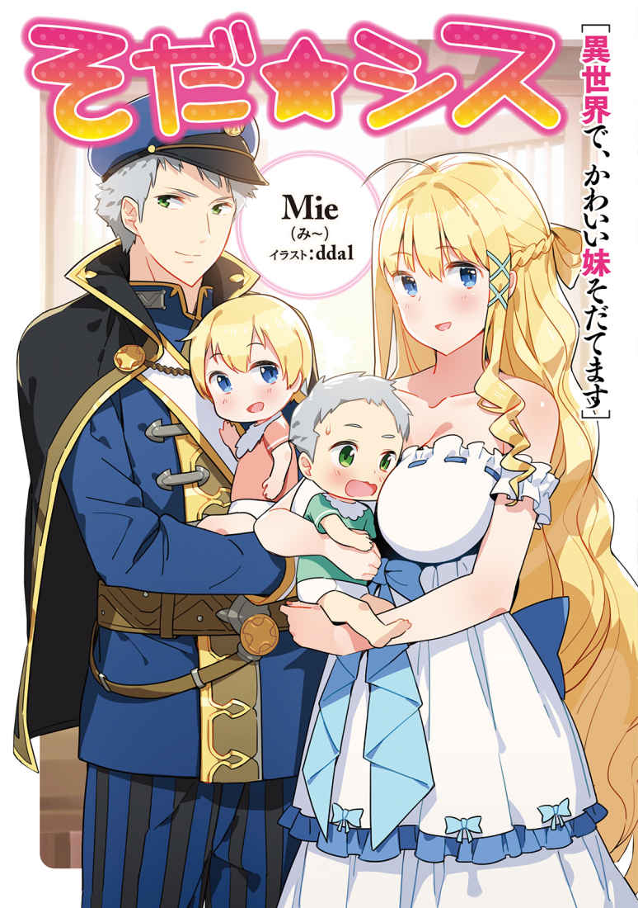
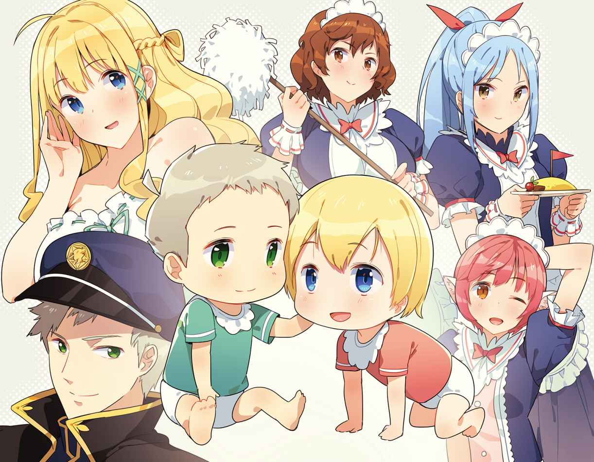
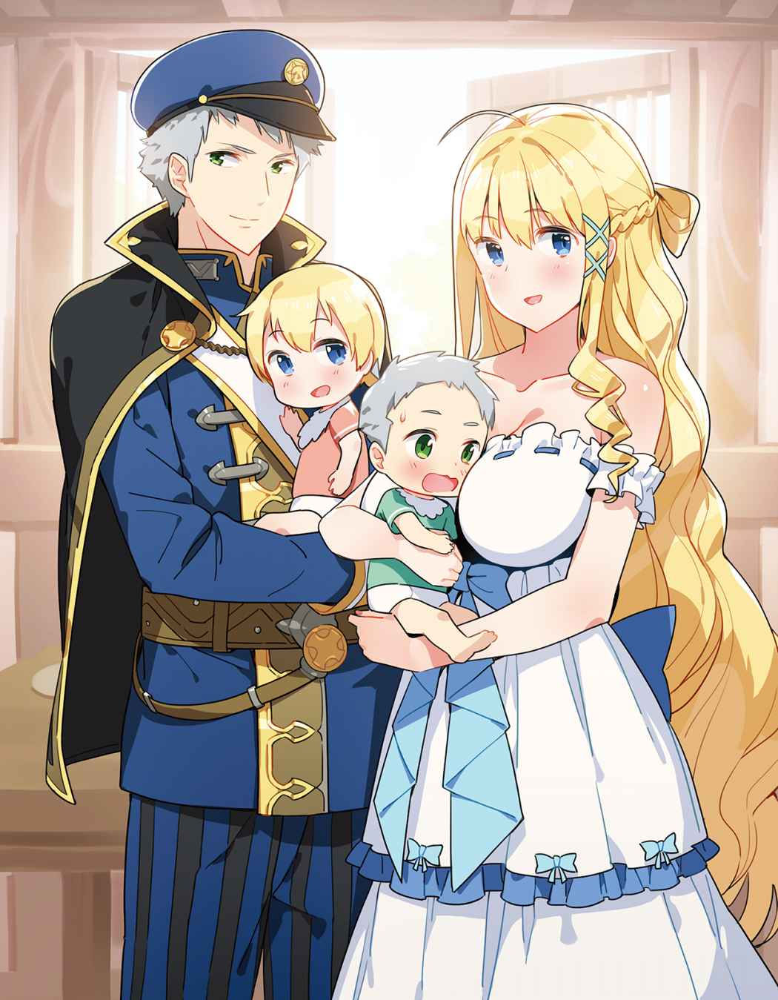
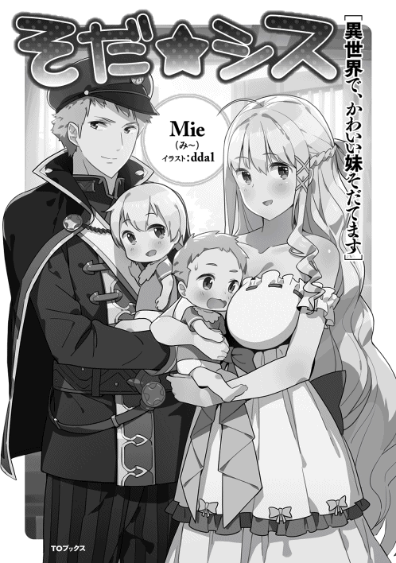
contents
開かれた窓から、暖かな木漏れ日が降り注ぐ。窓枠や周囲の壁には複雑な陰影ができ、そよ風に吹かれて静かに揺らめいている。まるで、光と影の妖精たちが踊っているかのように。
そんな彼らのお祭りをうらやましく思ったのか、淡い水色の空から同じ色の花びらが一枚、風に乗ってひらひらと舞い降りてきた。窓の横にある白いカーテンもふわりと揺れて、彼らの踊りはますます、だけど静かに盛り上がっていく。日常の片隅で行われる、静かなお祭り。
ああ、なんて楽しそうな──って、そんなコトはどーでもいい。
何故なら俺は今、重大な困難に直面しているのだから......。
ここに、あと数年もしないうちに、きっと「可愛い」よりも「綺麗 」という言葉がより相応しくなるであろう少女がいる。髪を後ろで高く束ね、落ち着きのある紺色を基調とした服に身を包んでいる。
「ふふっ」
彼女は澄んだ瞳とつややかな唇に柔らかな微笑みをたたえると、無防備にも、その美貌を俺の目と鼻の先にまで近づけてきた。瞳の中にはいくつもの光がきらめき、更に深まった笑みからは艶 のある声が漏れ、ほのかに温かく甘い香りが漂ってくる。俺は、彼女から視線を外すことができない。
そして少女は、まるで絹のような頬にしなやかな左右の四指をそっと添えて──。
自らの顔を、両側から思いっきり寄せて潰した。
「ふにいいぃぃぃぃぃーーーーっ♪」
俗にいう、「変顔 」というヤツである。
「......」
花も恥じらう可憐な乙女が、俺の目と鼻の先でひょっとこ のような顔をしている。コレを困難と呼ばずして、他になんと呼ぶ？ 人生ってヤツは、本当に試練の連続だ。
さあ、どうする俺？ このまま笑っていいのか。それとも、決して笑ってはいけないのか......。
そんなとき。ベッドの上で笑いの衝動を堪 えて震える子羊に、小さな救いの手が差し伸べられた！
「あは〜っ♪」
俺の左耳をくすぐった、愛らしい声。その主は、ずっと俺とベッドを共にしている幼い女の子であった。純白の衣に包まれてあどけない微笑みを浮かべる姿は、まさに天よりの使い。
俺の口元は、おのずと緩んでいった。
「......あはっ。あははーっ」
「あははははは〜んっ♪」
俺と女の子の、二人の甲高い笑い声が明るい部屋に響きわたる。そして変顔を披露していた少女も両手を離し、取り戻した美貌に穏やかな笑みを浮かべた。ほっぺに朱い指の跡がついてるけど。
「ふふふふふっ♪ Ятзо ──」
続いて彼女がなんと言っているのか解らないのが残念だけど、俺達を見て喜んでくれていることは確かだ。三人の高い笑い声が重なり合う中、俺はひとり、ほっと胸をなで下ろしていた。
「БялизЪ ──」
やがて、流れるような言葉を紡ぎ終えた彼女は長いまつげを伏せ、微笑みを浮かべた唇を再びゆっくりと近づけてきた。......そして俺の額に触れる、温かく柔らかな感触。
少女は同様に隣の女の子にも唇を落とすと、後ろ髪を引かれるようにゆっくりとベッドを離れる。それから最後にもう一度だけ振り返って笑顔を残し、木製扉の向こうへと静かに消えていった。
「......ふぅ」
思わず止めていた呼吸を再開する。ほんのりと甘い花の香りがする、暖かな空気を吸って吐く。
ああ、ドキドキしたー。
この短い間だけでも、前の一生分なんて優に超えているだろう回数を経験したが、あんな美少女にキスされてすぐ慣れろ、なんてどだいムリな話である。
まぁこんなこと、さほど長くは続くまい。今だけの「役得」と考えておくべきだ。
なにせ。
──今の俺は、赤ん坊 だからな。
ちなみに、今も隣で無邪気に笑っている女の子も同じく赤ん坊であり......。
名前もまだ、判っていない。
──まぶた越しに光を感じ、微睡 みの中から自然と意識が浮かび上がる。
ピントのボケた視界に映り始めたのは、そろそろ見慣れてきた感のある白い天井であった。室内は柔らかな光と、適度に暖かく、そして静かな空気に包まれている。
「うぅ......」
今日はいつだろう、と呟こうとしたが言葉は出ず、その疑問も今の俺には無意味であることを思い出して、代わりにため息をひとつ。時間はもちろんのこと、そもそもこの世界の暦すら知らないのだ。当然、学校や仕事なんてモノもない。
毎日がエブリデイ、ただそれだけある。
ニートばんじゃーい、心の中でいたくローテンションに諸手 を挙げていると。
「あぅ〜？」
俺の左耳を、なんとも可愛らしい声がくすぐった。目線を動かすと、今日も天使のような赤ちゃんが俺の隣で寝そべっているのであった。
「おぉー？」
「きゃ〜っ♪」
起きたかい？ と声をかけてみると、「起きたよぉ〜」と言わんばかりの、コレまた可愛らしいお返事が。うん、おはよう天使ちゃん。
既に昼を回っているかもしれないけど、これも赤ん坊業界の挨拶というコトで大目に見てくれ。
それにしても、言葉でなくても意外と通じるものだな。単に、俺の声に反応してくれただけかもしれんが......。
今の俺は、起きるたびに日中だったり夜だったりと、時間の感覚がサッパリパリのすっぽんぽーんである。起きていられる時間も限られていて、ああーやっと起きれたーと思いながら気が遠くなることもしばしばだ。
まあ、部屋の中は常に適温だし、このベビーベッドがふかふかで非常に寝心地がいいというのもあるんだろうけど。
「うぅうー？」
「あ〜っ♪」
ご機嫌だねベイビー？ と聞いてみると、ご機嫌だよ〜、と返してくれた......ような気がする。実際のところはともかく、ひとりじゃないって実感できるだけでもずいぶんと気持ちが楽になるよ。
「俺」の意識が目覚めたときから、この子はずっと俺の側にいる。身体の大きさはほぼ同じようだが、俺との関係はまだ不明。
近所の子だとしたら横にいない時間もあるハズだし、兄弟だったらなんで同じ大きさ......ああ、もしかすると双子かな？ だったら嬉しいな。
大抵は視界の端っこにかろうじて映っているだけだが、常に俺のすぐ側にいる気配や体温が確かに感じられるのは、他の何よりも圧倒的な安心感をもたらしてくれる。こうしてお喋りができると、なおさらだ。
広くて明るくて暖かく、環境そのものはいたって快適。訪れてくれる人もすごく優しい。
だが、右も左も時間の経過も分からず、身体は手足どころか首さえまともに動かせない。そんな状況で、もしもたった一人だったとしたら──。
「......」
あまりネガティブな想像はよそう。
「ぅあ〜？」
「うーぅー」
どうかしたの〜？ と心配してくれるような声色に、なんでもないよー、と返しておく。
いつかどこかで、赤ん坊どうしが話をする映画を見たことがあるような気がするけど、まさかこの身をもって体験することになるとは......。まさに「事実は小説よりも奇なり」である。
「あはーはー」
「ああ〜ん」
声に出して笑うと、隣の子も愛らしい声を上げて笑ってくれた。とっても心が和 むなあ。
どうやら部屋の窓が開いているらしく、かすかに花の香りを含んだそよ風が顔をなでた。爽やかでいてほんのりと甘い、なんの花かは知らないがいい匂いである。そしてそよ風と共に、染みひとつない白い天井に映った光がオーロラのごとく揺らめいている。たぶん、窓は開いているがカーテンは閉じてあるんだろう。
俺と同じように心地良さを感じたのか、横の子も嬉しそうな声を上げた。
「ふぅ」
......さて、と。
あんまり頭を使うとズキズキと痛くなってくるんだけど、どうせできることも限られているし、あんまり無理をしなければ脳のトレーニングにもなるハズ。むしろ、今のうちに自分の置かれている状況を観察・把握しながら、少しずつ頭の中を整理していくべきだろう。
今となっては「我思う、故に〜」というあいまいな根拠以外に示しようがないけど、「俺」という人間──日本人は、確かに存在していた。......そのハズである。
親や友達の顔はもちろん、近所の家やコンビニ、いつもの電車から見えた街並み──は、なんとなくとしか覚えてないな。
ところで、アレはいつだったかなー？ 駅のホームから見える遊技場の「パ」の電気が消えていて、思わず飲みかけのコーラを思いっきり噴いてしまったことがあった。それで、隣で電車を待っていたＯＬ風のお姉さんにくすくすと笑われてしまったことを、今でもよーく覚えている。
そんな、他にもいっぱいある記憶や想い出がすべて「胡蝶の夢」だったなんてことは考えにくいし、考えたくもない。とはいえ、こうしてココにいる赤ん坊らしき「俺」だって、今まで何度寝て起きても相変わらず存在している以上は、これもまた夢であるとは考えにくい。手もまだロクに動かせないから、ほっぺをつねってみたことはないけどさ。
そして「実は全部バーチャルリアリティでした！」なーんてオチも、俺の知る当時の技術レベルでは不可能だったとくれば、他に思いつくのは──。
「Λыбυηс ー？」
かすかに頭痛を感じ始めたところで、恐らくは扉の向こうから、控えめなノックと共に女の子の声が聞こえてきた。扉越しでもよく通る、いかにも明るい性格をしていそうな甲高い──いわゆる「アニメ声」。だけど俺達が寝ているかもしれないと思ってか、その大きさはずいぶんと抑えられている。
......なんと言っているのかは、相変わらず謎のままだが。
「Йэог 〜η 」
天井のオーロラに目が行ったところでまたその子の声がして、部屋の中に入ってきたような気配を感じた。タイミングを外してしまったが、返事くらいはしておくかな。
「ううーっ」
「あ〜ぅ♪」
すると、隣の天使ちゃんもまるで見計らったかのように声を重ねてきた。とてもいい子だ。
頭をなでてあげられないのが残念だよ。
「あはっ♪」
ほどなくして、柔らかそうなボブカットをしている女の子の顔が、天井を向く俺の視界の隅からひょっこりと現れた。声を聞いた時点で分かっていたが、ポニーテールの少女とはまた別の子である。頭には彼女とおそろいらしきカチューシャをつけており、首元を見るに、服装もほぼ同じみたいだ。
濃紺色のブラウスに、フリルのついた白いエプロン。そして白のカチューシャ。
俺の記憶が確かならば──彼女達の格好には微妙な違いがあるものの、総括すればいわゆるひとつの「メイド服」と呼ばれるコスチュームに限りなく似ていた。
というか、そのようにしか見えなかった。
ちなみに、この子はエプロンにピンクの柄をあしらったり、今はベッドの下で見えないけど、スカートの裾には何かの動物のアップリケをつけたりもしている。それでも怒られないらしいところを見るに、けっこう自由な家風らしい。
「ГτюбКъ ──」
まるで小さいひまわりのような満面の笑みを咲かせると、キュートな八重歯がチラリと覗く。女の子はやや間延び気味の声で楽しそうに何やら話しかけながら、俺と天使ちゃんの頭を交互になでなでしてくれた。小さく、柔らかな手が気持ちいい。
パッチリとした大きな瞳と幼さの残る顔立ちからして、まだ小学生くらいだろうか？ ベッドを囲う木の柵 から出している顔の低さから見ても、たぶんそのくらいだろうと思われる。
だがそれでも可愛い女の子であることに間違いはなく、眩しいほどの笑顔で頭をなでられて思わず頬が緩んでしまう。俺は隣の天使ちゃんと一緒に、恥ずかしいながらも半ば本能的に喜びの声を上げた。
「あはー♪」
「ああ〜ん♪」
赤ん坊にとって、ハッキリとした意思表示は必要不可欠。いわば、これが俺の仕事なのだ。
「あはっ！」
俺の羞恥プレイが報われたようで、メイドちゃんはますます嬉しそうに顔をほころばせて笑ってくれた。黄色み を帯びた目 を細め、オレンジとピンク を混ぜ合わせたような色をしたショートの髪 が揺れる。
それだけでもインパクトは申し分ないのだが、彼女には更にその上を行くモノ があった。
三角形の輪郭に、見るからに柔らかそうな産毛が生えそろっている。外側は綿雪のように白く、内側は健康的で温かみのある桜色。小さな頭の左右からそれぞれ飛び出している ソレは、あたかも彼女の感情を表しているかのように、ぴくぴく と動いていた。
──どう見ても、「ねこ耳」です。
しかも背後には、白いしっぽまでもがチラチラと見え隠れてしているというオマケつき。
まことにありがとうございます。
「ほふぅ......」
ビックリして思わず泣いてしまうことがなくなった今でも、見るたびに感動のため息が漏れてしまう。雅 に表現するならば「いとをかし」である。......だって、本物だよ？
こんな子が実は、日常生活の中でもキャラ作りに余念がない、筋金入りどころか鉄筋コンクリートの入った超一流のコスプレイヤーさんだというなら──って、本当にそうだったら尊敬するよ。
そもそも、もう一人のポニーテールちゃんの髪も空のように明るい水色をしていて、二人とも俺の知っている「常識」とはあまりにかけ離れているのだから。
窓から入ってくる風に、明るい色のボブの髪がふわふわと揺れている。光を透かすとまるで宝石のようにきらめき、どれだけ間近で見ても人工的な感じがまったくしない。目の色はカラーコンタクトで説明できるとしても......その中心にある虹彩が、わずかに縦に長いだ円形 になっていることの説明にはならない。もう一人のポニーテールちゃんは普通に丸かったから、なおさらだ。
それに加えて、ぴくぴくしている耳や、ゆったりと揺れているしっぽの動きも非常に精細で滑らかだ。機械で再現できるとは思えん。
と、なれば。
──恐らくここは、地球ですらない。同じ宇宙かどうかも怪しい。
本当にマンガみたいな話だが、ほぼ無限に存在するという「並行世界 」のひとつ。もしくは、まったくの「異世界」であると思っておいた方がいいかもしれない。
そんな世界に、俺は前世の記憶を持ったまま産まれてきた、というワケだ。
「......」
ところで、「俺」って。
いつ、どうやって死んだんだろうな？
死の苦痛を覚えていない、というのはラッキーなのかもしれない。だが、俺の記憶にある家族や友人達は。
俺が死んで......やっぱり、悲しんでくれたのかな。
そして、ちゃんと乗り越えてくれたんだろうか──。
「......ふぇっ」
「はわっ!? 」
俺の顔を見て、女の子のねこ耳としっぽがピンと逆立つのが見えた。直後、すぐに視界がにじんでグチャグチャになってくる。
い、いかん。この身体のせいか、いったん感情が昂 ぶると抑えが......。
「きゃう......」
なぜか、隣の天使ちゃんが付き合ってくれるようだ。本当にいい子だなあ。
その声に嬉しく思いながら、しかし爆発の秒読みは止まら......ああぁあ、もうムリ！
面倒をかけるけど、これも赤ん坊の仕事ってコトで！
......せーのっ。
『うわあああああああああーーーーーーん!! 』
「はわわわわわあ〜〜〜〜〜〜っ!? 」
さあ、小さなメイドちゃん。ここから先は君のお仕事だ。
俺達のこと、よろしく頼むよ。
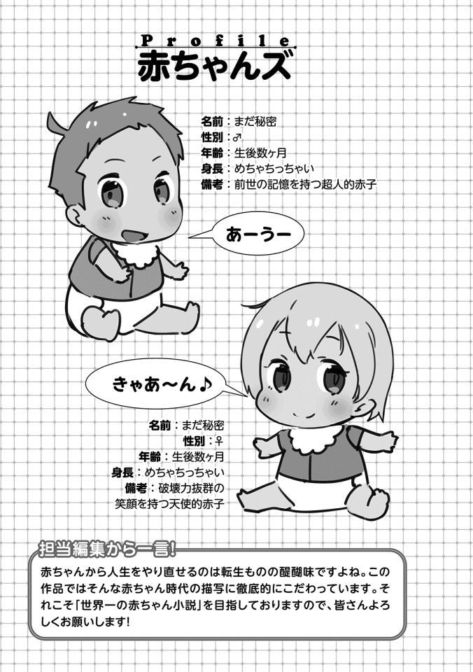
──今日も暖かく、いい天気だ。
空色の髪をポニーテールにしたお姉さんと、オレンジのようなピンクのような色をしたボブカットの、小さなねこ耳ちゃん。今日はいつものメイドちゃんズが二人そろって、部屋の掃除をしてくれている。
「Хρоъз ──」
「Яй ー！」
お姉さんメイドから布を受け取り、ねこ耳メイドちゃんの背が急に高く──恐らくは台に上って、白くて長いしっぽを振りながらタンスの上を拭き始めた。その様子を見てお姉さんがうなずきながら、何やら優しく声をかけている。二人は見た目はまったく違うものの、まるで姉妹のように仲がいい。
陽だまりのように暖かくて明るい部屋の中、可愛い娘 達の仲良きことは、ほんに美しきかな。しかもそんな姿を眺めていると、二人一緒にこっちを向いて笑いかけてくれた。まことに眼福である。
俺もありがとうの気持ちを込めて、できる限りの笑顔で応えよう。
「あぅあーっ♪」
「あ〜あぁ〜ん♪」
俺と一緒に、横にいる天使ちゃんも愛らしい声を上げて無邪気に笑った。まさにエンジェル。そして俺達の笑顔を受け取って、二人のメイドちゃんズもますます笑顔の花を咲かせてくれた。
「あーぉ」
「あ〜ん」
最近になって、ようやく動かせるようになってきた首を天使ちゃんに向ける。まったく、なんて重たい頭だ。
しかし彼女もつぶらな青いおめめを顔ごと俺に向け、眩しいほどのエンジェリックスマイルをくれた。それだけでも大変だということを知っているだけに、本当に嬉しい。
それにしても......俺とこの子って、やっぱり双子なのかね？ 今も俺の「ありがとう」の気持ちに「どういたしまして」と応えてくれたように感じたし。
俺が兄貴になるか弟になるかはまだ分からないけど、そうだったらいいな。
「......うーっ」
俺は更に頑張って、どうしても縮みがちな手を伸ばしてみる。すると彼女も小さなおててを一生懸命に伸ばしてくれて、俺の手をしっかりと掴んだ。そしてまた、無垢な笑顔を見せてくれる。
「あぁ〜う♪」
「......」
ずっと一緒に並んで寝ていたのに、ようやく自分の意思で届くようになったこの手。ぷにぷにした感触と、赤ん坊特有だろう高い体温が直接伝わってきて、とても幸せな気分になる。
健やかに育ってほしいね。......って、俺もか。
「ふふふっ」
「あはっ」
そんな俺達のことを、メイドちゃんズがずーっと見つめていたことに気づいたのは、もうしばらくしてからのことだった。
そして──。
「う、うぅーっ」
手、そろそろ離してくれないかな？ いつもは縮めっぱなしな腕を伸ばしてるから、けっこう疲れるのよコレ。
「ああ〜ん♪」
い、いや、ああーんじゃなくってさ......。
「......はふぅ」
すったもんだの末、ようやく離してもらえた。ちょっと泣きそうになったけど、頑張ったぜ。
やっぱり、両手を幽霊みたいにしている状態がいちばん落ち着くね。うん。
俺は左腕に残った痺 れが取れるのを待ちながら、二人の若きメイドちゃんコンビの仕事っぷりを眺めている。少しは自分で首が動かせるようになってきて、視界が広くなった。そういったこともあり、俺は起きていられる短い時間を、ごく簡単なコミュニケーションや周囲の観察に費やしていた。
なにしろ、右も左も判らない謎の異世界だ。さっそく地球とは異なる点も見つかっている以上、限られた空間の中でも可能な限りの情報を集めなければならない。
視力の弱い目を凝らし、俺は改めて辺りをじっくりと見回す。これが生まれついての近眼なのか、それとも赤ん坊のせいでまだ視力が未発達なのか......ちょっぴり不安に思いながら。
まずは、俺のいるこの部屋そのもの。
ピントの合わない今の目にも、この部屋がけっこうな広さと天井の高さを誇っていることが分かる。天井は高く、もしメイドちゃんズ二人が肩車をしても手が届かいだろうなーと思うほど。どこかで「家の天井が高いと大物に育つ」みたいなことを聞いたような覚えがあるけど、俺も天使ちゃんも将来は大物になれるかな？
広さもさすがに学校の教室ほどじゃないが、畳でいえばたぶん十二畳くらいはありそうな感じだ。赤ん坊の部屋にしては、ちと贅沢 すぎではないだろうか......。
だが、ココでメイドちゃんズの存在である。
外が真っ暗でも俺達が泣けばすぐさま飛んできてくれるところから、彼女達はすぐ近くの部屋に寝泊まり、つまり住み込みで働いていることは明らかだ。
この部屋とメイドちゃんズ。そのふたつだけでも、この家がそれなりの富裕層──あるいは、貴族に類する身分を持っているのではないかと推測できる。
次に室内。全体的に白を基調にしていて、床には絨毯 が敷いてある。今はベビーベッドに寝ているから見えないが、抱っこしてもらったときに見た。その絨毯をねこ耳ちゃんがお掃除中で、白くて長いしっぽが上を向いてベッドの柵越しにくねくねと揺れ動いている。付け根には大きなリボンを巻いていて、それがまたキュートだ。いつか触ってみたい。
それから左の壁沿いにはいくつか木製らしきタンスがあって、手前には柔らかそうなソファー。そして右側には、今は誰もいない大人用のベッドが壁に沿って置かれている。隅っこの壁の一部だけがレンガっぽくなっているのだが、何か意味があるんだろうか？ まさか、壁を崩すと秘密の地下室への入り口が......って、そんなワケないか。
俺の足元のずっと先を見ると白いカーテンのついた大きな窓があり、彼女達が出入りする扉は、反対に頭の向こう側にある。頑丈そうな木のドアでノブの位置も高く、今の俺が自力で出入りするのは不可能だ。
つまり俺達が寝ているこのベッドは、部屋のほぼ中央に置かれているワケだな。
更に家具についてもう少し見てみると、意外にも日本の家具屋に行けば普通に売っていそうなモノのように思えた。どれも木の素材感を活かしたシックなもので、いかにも「お貴族様」的な──例えば、金ピカだったり精緻 な彫りものが施してあったり、なーんてことはない。ちょこんとぬいぐるみなんかも置いてあるしな。なんの動物かは分からんけど。
このベビーベッドだって、俺と天使ちゃんが並んで寝ていてもなお余裕がある広さがあるのはスゴイけど、それを除けば特に変わったところはなさそうだ。天蓋 もついていなければ、天井からくるくる回るオモチャみたいなのが吊り下げられているワケでもない。
ところで天蓋って、相撲の土俵の上にある紫の垂れ幕に似てるよな？ そこに、赤ん坊をあやすオモチャの代わりに「満員御礼」の幕でも下がっていたら......くだらん想像はやめよう。
しかし「メイド・イン・ジャパン」に見劣りしないとなれば、それだけでも十分すぎる品質だと思う。わりと高級品かもしれない。
「あ〜う？」
「おー」
キョロキョロしているとまた天使ちゃんと目が合い、「どうしたの？」とばかりに声をかけてくれた。可愛い子だ。
頭をなでなでしてあげたいが、あいにくとまだそこまでは手が届かないし......また掴まれると困るしな。気持ちは嬉しいのだが、やっと痺れが取れたばかりなのだ。手を繋ぐのは、今は一日一回ということで勘弁してくれたまえ。
ということで、代わりににっこりと微笑みかけることにする。
「あははー♪」
「きゃああぁあ〜ん！」
おおっと、思った以上に喜んでくれた！ もみじのような両手を振って、満面の笑みを見せてくれている。俺もますます笑顔になって、むしろ俺の方が得したような気分だ。
続いて俺は、ポニーテールちゃんが「はーっ」と息を吹きかけながら拭き拭きしている窓の方に目を向けてみた。文字通りしっぽのように後ろ髪を揺らし、俺の知らないメロディを口ずさんでいる。
「〜〜♪」
キレイな声だなあ......って、それは置いといて。
窓の向こうは庭のようで、草の緑や花の色らしきものがチラホラと見られる。残念ながら今の俺の目にはその程度しか分からないのだが、どうやら「庭園」と呼ぶほどの規模ではないらしい......というくらいの見当はつく。奥には隣の家らしき色も見えるし、上の方は窓枠に隠れてしまうけど、かろうじて空の色もうかがえる。どうやら、そこまでの大貴族ではないらしい。
成長してから、当主争いやら領地経営やらといった面倒事を背負わされることはなさそうだと、密かに胸をなで下ろす。
そんなのは、どこかのマンガか何かの主人公がやればいいコトだ。俺にゃ荷が重いよ。
「......ぅ？」
拭き終わった窓の仕上がりに満足そうなメイドちゃんを見ていて、そこでふと気づいた。窓ガラスがキレイなのだ。
いや、たった今拭いてくれたんだからキレイなのは当たり前だろう......って、そういう意味じゃない。かなり透明度が高そうなのだ。
詳しいことはよく知らんが、それってかなりスゴくない？ なんとなくＲＰＧみたいな中世ヨーロッパ風の世界かと思っていたけど、想像以上に文明レベルが高いかもしれん。メイドちゃんズのエプロンドレスのフリルとか、けっこう凝ってるしな。
ひょっとすると、「剣と魔法」のファンタジー的な世界ではなく、「鉄と蒸気」のＳＦ的な世界という可能性もありそうだ。もし「魔法」があったら最高だな！ なーんて思っていたから......ちょっと残念かも。
だがスチームパンクも、それはそれで男心をくすぐるな！
うぅむ、気になる──。
「......ふぁ」
あぁ、急に疲れて眠たくなってきた......。今日はこのくらいにしよう。赤ん坊の頭に大人レベルの思考作業は、けっこうしんどいのだ。
今から要 らんムリをして、俺の脳が残念 になったら困る。気をつけねば。
「Лтцεо ー？」
俺のあくびが聞こえたようで、ベッドの周りでしっぽだけを覗かせていたねこ耳ちゃんが、不意に下からひょこっと顔を出した。すぐ近くにいたみたいだ。左右から出ているねこ耳を動かしながら、柵越しに俺のことを見つめている。
しかしこの子の瞳もまた、宝石みたいな色でキレイだよなあ。耳も触りたい。
......そんなことを考えている間にも、眠気は容赦なく押し寄せてくる。
「はふぅ......」
なんとか返事をしたかったのだが......口から出たのはあくびだけ。まぶたも重くなり、明るかった世界に闇の帳 が下りてきた。
ああ、本日は閉店なりー。
「ふぁぁ......」
優しく頭をなでられる感触にほっとしながら、俺は意識を手放していく。
その中で、横から可愛らしい声が聞こえてきた。
「ああ〜ん」
うん。天使ちゃん、おやすみ......。
これまで何度、繰り返しただろう？
起きたくなれば起き、眠たくなれば寝る。グータラしたい人にとっては天国のような生活かもしれないが、いつまで続くのかも分からないとなれば、それもいずれ苦痛へと変化するのだろうなーと思う。幸い、俺は隣の天使ちゃんと声をかけ合ったり、メイドちゃんズに構ってもらえたりしているのでさほど退屈ではないんだけどな。
「ふあー」
ポニーテールちゃんがキレイにしてくれた部屋に、雨の匂いをかすかに含んだ涼しい空気が流れてくる。最近はちょっと暖かすぎる日が続いていたので、ひんやりとした手で顔をなでてくれるようなそよ風が気持ちいい。日射しも穏やかだ。
「あ〜うっ」
左に首を向けてみると、天使ちゃんもご機嫌そうに笑って手足を動かしている。つぶらな蒼い瞳がこっちを向いたので、俺も「やっほー」と手をグーパーさせてご挨拶。
「きゃはああ〜ん♪」
おっ、もっと笑ってくれたぞ？ 嬉しいねー。ずっと一緒にいるけど、なんか見るたびに可愛さが増しているよな。顔も体つきもふっくら具合が増してきて、それがまたイイ感じ。
写真も動画も撮れないことが、残念で仕方ない。
「あはー」
俺も釣られて笑顔になりながら、左手を斜め横に伸ばす。すると天使ちゃんも同じように手を伸ばしてくれて、俺の手を裏側からはしっと掴んだ。それをゆっくりと動かして、二人でにこにこと笑いながら握手遊びをする。
......それにしても、赤ん坊の成長速度には驚かされるな。
あまりの不自由さにヤキモキしていたこの身体も、寝て起きるたびにほんの少しだけ動かせるようになっていて、そんなちょっとした成長がとても楽しい。俺だけじゃなく、隣の子も同じように成長しているのを見ると特にね。
ポニーちゃんもねこ耳ちゃんも、ちょっとした時間の合間を見つけては俺達を楽しそうに眺めていたり話しかけたり、握手遊びやなでなでしたりもしてくれるけど、彼女達が常に笑顔を向けてくれる気持ちが俺にもよーく分かる。
そして日中だと、あまりに長い間そうしていたせいで他の誰かに部屋まで呼びに来られ、「しまった!? 」という顔でパタパタと出ていく姿を見送るのも、これまた面白い。
「うー？」
開いている窓の外から、重々しい鐘の音が聞こえてきた。夜中以外、恐らくは定期的に鳴らされているらしいコレが時計代わりなんだろうね。とても分かりやすいし、なんとなく歴史というか、伝統的なものが感じられる。たぶん、どこかにでっかい時計塔があるんだろう。
「あぅ〜ん......」
ずーっとご機嫌だった天使ちゃんが、ここに来てなんとも切なげな声を上げた。握力も弱まり、するっと俺の手が抜けて離ればなれになる。
ああ、そんな顔をしないでおくれ。お兄ちゃんまで悲しくなってくるさね。
「あふぅ」
まあ、理由は分かっているんだけどな。俺も今、同じことを思ったから。
さすがは俺達、こんなところでも気が合うね！
「うぅぅ......」
アレとコレだけは、どーにも苦手なんだが......なんて言ってても仕方がない。こんなときもまた、隣の天使ちゃんがいてくれてよかったなーと思うよ。
早々に腹を括り、俺は既に涙目の天使ちゃんに急いで歩調を合わせる。
はいっ、せーの。
『うわあああああああああーーーーーーん!! 』
とても甲斐甲斐 しく俺達の世話をしてくれるメイドちゃんコンビだけど、当然ながらこの家にいるのは彼女達だけではない。そして、二人には絶対にできないことがある。
そんなとき、俺達を助けてくれるのは──。
「Жо 〜Λο 〜Йзльν 〜♪」
かちゃりとドアの開く音に続き、ものすごーくおっとりとした癒 し系ソプラノボイスが俺の耳に届く。その途端に、火のついた泣きたい衝動がすーっと消えていくのだから不思議だ。
「はあ〜んっ♪」
隣の天使ちゃんは目に涙を溜めたままピタリと泣き止み、心から嬉しそうに笑っていた。
「......おぉ」
俺も、赤ん坊の本能に改めて感心しながら泣き止んで──俺達を覗き込む彼女に目を奪われた。
雨上がりの日射しを横から浴びる、金色 の少女。背丈はそこそこあるようだが、その顔立ちはキレイ、というよりも可愛らしい。さすがにねこ耳ちゃんほど幼くはないだろうけど、ポニーちゃんと同じくらいか......ともすると、年下のようにも見える。
少女は純白のシンプルなブラウスを身にまとい、背後には柔らかく波打つ金の髪が広がっていた。春の木漏れ日を思わせる金色の温かなきらめきが、美しい少女を更に美しく飾り立てている。その髪が穏やかな風にふわりと揺れると、甘い花のような香りが辺りに漂って俺の鼻をくすぐった。肌はとても白く滑らかそうで、優しげな瞳はひたすらに蒼く蒼く透き通り、きらきらしている。
まるで一年中お花が咲き乱れる、おとぎの国からやってきたお姫様のようであった。
彼女はベビーベッドの柵に両手をかけ、上から俺達を覗き込んだ。ふたつの蒼い宝石の中に、俺と天使ちゃんの顔が並んで映し出される。
少女はひとつ瞬きをすると、瑞々しい桜色の唇に緩やかな微笑みのアーチを描いた。
「ふふっ。Тиγι 〜Θυсх 〜」
花開いたような唇から、何やら優しげにささやいてくれるんだけど......残念なことに、俺はそれを理解することができない。だけど話しかけてくれること自体が嬉しく、鼓膜 をなでるような声には安らぎを覚える。
天使ちゃんも俺も、同じように笑顔を浮かべていた。
「きゃあ〜ん♪」
「あーう」
にしても、いまだに信じがたいなぁ。
──このトンデモ美少女が、俺達の母親 だなんて。
中学生くらいに見えるんですけど。
「うふふふふ〜♪」
俺達の喜びように、お袋はとても上品に微笑んだ。こんな美少女に「お袋」だなんて呼び方が似合わないのは百も承知だが、そうやって無理にでも自分に言い聞かせておかないといけない。
前世の記憶があるから、ただでさえ「家族」だという実感を持てないでいるのに......。
「んん〜っ」
なんて考えている間に、カチャカチャと音を鳴らしてベッドの角にある金具が外され、横の柵が外側へと倒されていく。そして迫ってくる美少女フェイス。
思わずギョッと目を見開いてしまうが、お袋はくすりと笑うだけ。接近は止まらず、それどころか長い髪を片手で押さえながら、更に蒼い瞳をそっと閉じてしまった。鮮やかな桜色の花がいよいよ目前に迫り、俺も慌ててキツく目を瞑 る。
「......ちゅっ♪」
「あぅ」
おデコにキスされてしまいました。
それだけ、我が子を愛してくれているという証なんだろうけど......毎回される側としては、心臓に悪すぎる。次は隣の天使ちゃんにキスするお袋だが、俺の真上を横切るので、カーテンのような金色の髪となんとも甘い香りが覆い被さってくる。
そして柔らかな双子の女神様が、我が身の上に降臨なされた。むにょにょ〜んと。
「......はふぅ」
しばしの呼吸困難の後、笑顔いっぱいのお袋が全身を起こす。辺りにはまだ、甘〜い香りがいっぱい残っている。
しかし、コレで終わりというワケではない。更なるドキドキタイムの序章でしかないことを、俺はよーく思い知っていた。
メイドちゃん達はいっぱいお世話してくれるのだが、残念なことに万能というワケではない。といっても、彼女達に何か問題があるのではない。なにしろ、努力してどうこうできるモノではないのだから、仕方がないのである。
母親である彼女だからこそ、できるコト。
──すなわち、お食事 である。
「うふふふふ〜」
のんびりとしたソプラノボイスが聞こえてくる更に上空で、お袋は白いブラウスの表面に両手を這わせた......の、だろう。たぶん。
なにしろ今の俺からは、お袋の手元も顔も、まったく見えていない。
下界から仰ぎ見えているのはただ、純白のヴェールに覆われたアルプス山脈のみ。しかもソレはお袋の両腕に挟まれ、形を変えてより正面に向かって「むにょ〜ん」と押し出されているのである。
「......」
感触もスゴかったが、見た目も絶景だ。下から見上げているから特に......。
さすがは世界遺産。放牧がさかんである。
この身体のおかげか、ヨコシマな気持ちが湧いてこないのはヒジョーに助かる。しかし、だからといってヘーゼンと直視していられるような度胸も俺にはない。ムネだけに。
俺は重たい頭をゴロリと転がし、隣の赤ちゃんへと視線を退避させた。すると、母親と同じ色の瞳が俺に気づく。
こうして見ると顔立ちもよく似ているように思えるし、やっぱり親子なんだなあ。
「ああ〜ん♪」
ああ、ほっとする〜。
君のあどけない笑顔に、乾杯。
......さて。そうやってビミョーに現実逃避を試みながらも、上空では着実に本当の「カンパイ」が刻一刻と近づいていたそのとき。
予想外なことに、更にもう一杯──じゃなくって、もう一人の女性が入ってきた。
「ХоηΛδ ......？」
お袋様の横からぬっと現れたのは、またまたメイド服をまとった、ちょっとだけＸ軸方向にも貫禄のある女の人。お袋も可愛い顔のわりに背丈があるんだけど、その人は更にもう少し高い。歳はお袋達よりもかなり上っぽいが、それでも二〇代の前半くらいに見える。とても落ち着いた、大人の雰囲気をまとった女性である。
髪の色は赤っぽい茶色で、少し癖のあるベリーショート。瞳の色も日本人のように黒く、俺としてはかなり親近感が持てる。他の女の子達も意外と顔立ちに西洋っぽさを感じないから、髪と目の色と......あのねこ耳しっぽを除けば、けっこう親しみやすいんだけどな。
「ふふっ」
彼女は俺達を見下ろして母性あふれる微笑みを見せてくれた後、すぐにお袋の方に向き直って心配そうな顔に変わり、お袋の華奢 な肩に手を置いた。二人は年齢とは逆転した上下関係になるハズだが、その垣根を越えて仲が良さそうな感じを受ける。
それにしても、お袋には悪いんだけど......メイド服さえ着ていなければ、この人の方が断然「お母さん」っぽく見えるんだよなあ。正面にひらひらのエプロンを身につけていて目立たないハズなのに、それを思いっきり押し上げているロッキー山脈だって、お袋にまったく引けを取っていない。
さすがは同じ世界遺産。自然保護区が多い。
「ЯьтзКιοИ ？」
「Ъгхтяъ 〜」
白い天井の下、はるか高みでお袋達が話をしている。内容は分からないものの、心配顔のメイドさんと相変わらずにこにこしているお袋の様子。そして彼女の仕事内容などからも考えれば、おおよその見当はつく。
三人目のメイドさんである彼女は、日中のわりと限られた時間にしか姿を見せない。たぶん外から通っているのだろう。しかし、本来はお袋にしか担えないハズの仕事を、頻繁に肩代わりしてくれている。
いわゆる、乳母 さんなのだ。
どうやら話し合いが終わったようで、メイドさんがベッドの周りを歩いて天使ちゃんの方に回っていくのが見えた。向こう側の柵も乳母さんによって外され、左右の壁が取り払われる。
大抵はどちらか一人なんだが......今日はポイント二倍デーらしい。
それでも天使ちゃんを見ながらじーっと待っていると、ついに上から影が差した。
「あう〜ん♪」
「......」
天使ちゃんは嬉しそうに両手を伸ばしているが、見上げた俺はあまりの壮大さに言葉を失った。
......ああ。
きらきらと後光をまとった白い乙神 様と、陰になって対照的に黒っぽく見える母神 様が。
共に温かな目差 しを注ぎながら、しなやかなお手を差し伸べてくださっている──。
皆既日食のニュースを見ても「ふーん」としか思わなかった俺でさえ、思わず目を奪われてしまう美しさであった。
ハレルヤ。
「Гτфо 」
「Язвн 〜♪」
黒い母神様は天使ちゃんを、白い乙神様は俺を、ゆっくりと抱き上げる。
そして俺達はそれぞれ、あふれんばかりの愛情に包まれた。
「うぅー......」
正直、今でもかなり恥ずかしい。だが、必要なことなのだ。
彼女達の惜しみない優しさに感謝し、俺は心の中でそっと手を合わせた。
──いただきます。
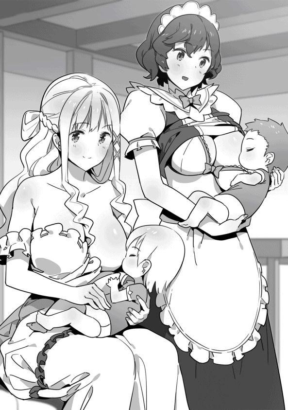
部屋の中は明るいが、閉まっているカーテンの外は闇に包まれている。
こんな時間に手間をかけさせて申し訳ないと思いながらも、俺は緊急事態発生のため、わんわんと泣いてお袋に出動をお願いした。
『は〜い、きれいになりまちたね〜♪』
......とでも、言ってくれたのだろうか。いつもののんびりとした口調で、お袋が微笑みながら天使ちゃんのお腹を優しくなでながら話しかけていた。天使ちゃんも愛らしい笑顔でそれに応えている。
「【セーレ】ちゃ〜ん」
「きゃあ〜ん♪」
メイドさん達もそうなのだが、特にお袋は俺達に頻繁に話しかけてくれる。しかもゆっくりと喋ってくれるため、何度も何度も聞いているうちに、ほんの一部ではあるが理解できるようになってきた。いちばん最初に分かったのは、俺達の名前である。
だって、いつも呼びかけてくれるから。
「うふふふふ〜。セーレちゃ〜ん」
俺には決して使われないフレーズ。「ちゃん」という接尾語はまだ予想だが、お隣の天使ちゃんの名前は「セーレ」で間違いないだろう。柔らかい感じがして、この子にとてもよく合っているように思う。
お袋はセーレたん の名前を呼びながら、たまご肌のおデコに唇を落としている。
......俗にいうオタッキーな人が使っているようなニュアンスではなく、この子の愛らしさを前にすると、どーしても舌っ足らずな呼び方になってしまうのだよ。
「きゃあぁあ〜ん♪」
ああっ、なんて可愛いのかちら〜！ こんなに可愛かったら、誰だって赤ちゃん言葉になるぜ。実際に赤ん坊だしなー。
ノリノリでおててとあんよを踊らせて喜ぶセーレたんに隣でひっそりと萌えていると、お袋の蒼い瞳が俺の方を向いた。
「【ジャス】ちゃ〜ん」
「おーっ！」
夜でも眩しいほどの美少女スマイルで名前を呼ばれ、俺も笑顔でお返事をする。これまた薄々そうじゃないかと思っていたんだけど、どうやら俺の名前は「ジャス」というらしい。マジメな俺にふさわしい、なんとも規格に厳しそうな名前だな！
特に、食の安全に関して。
「うふふふふ〜」
「......」
当たり前なのだが、お袋はにこにこしているだけでツッコんではくれなかった......。
そんなアホなことを考えていた俺に構わず、お袋は両手を伸ばして下の衣服を脱がしにかかる。
「うぅ......」
非常に恥ずかしいコトだが、それ以上に下半身が気持ち悪くて仕方がないので神妙にする。巻かれてるのはあくまでも普通の布であり、当然ながら高分子ポリマーなどといった、まるで何かの必殺技みたいなハイテク素材は使われていない。故にムレムレ。
飲んだら出る。これもまた、自然の摂理なのだ......。
「うー」
なーに、天井の染みでも数えているウチに終わるさ。
染みなんて、ひとつもないんだけどなー。
「Йы 〜Эпνζ 〜」
あらまあ、いっぱい出まちたね〜......なんて言われているのだろうか。だが既に無我の境地に達している俺は、全身の力を抜いてなすがママになる。
メイドちゃん達にだって、それはもう何度もじ〜っくりと見られているのだ。今だって、カゴを持ったポニーテールちゃんが横から作業をじーと覗き込んでいるし、今更である。
それにしても......こういうとき、セーレたんよりも俺の方が見られている割合が多いように感じるのは、気のせいだろうか？
「ふわぁ♪」
やがて不快の元が取り払われ、得も言われぬ解放感が訪れた。一仕事が終わった後の生ビールって、ひょっとするとこんな気分なのかねえ。
その間にお袋は例のブツをポニーテールちゃんに渡すと、代わりにお湯で軽く濡らしたタオルを受け取り、キレイにしてくれる。
でもコレ、相当にくすぐったいんだよなあ。
「あぅ、うぅう......！」
プルプルと震えが止まらんが、な、なんとかガマンだ......。そんな俺の姿を見て、二人がくすくすと笑っている。いやあー、お姉さん達がいぢめるぅー！
とまあ、ジョーダンはともかく......使用済みオムツに触れても、二人はイヤそうな顔ひとつしない。今はこの場にいないが、それはねこ耳ちゃんも乳母さんも同じだ。いくら赤ん坊のでも、いい気なんてしないだろうに。
母親が赤ん坊の世話をするのは当たり前だと思っていたけど──まあ確かにそうなんだけど、実際にやってもらう立場になって、その大変さとありがたみが身に染みてよーく分かったよ。
......ホント、彼女達には頭が上がらない。
「ちゅっ♪」
「あうっ」
なんとか耐えきってスッキリしたのもつかの間、お袋からセーレたんと同様に言葉をかけられると、なぜか俺は口の先にキスをもらってしまった。コレも初めてじゃないけど、やっぱ照れる......。
だが、顔を赤くしている場合ではない。
粗相をしてしまったオムツを替えてもらったのだ。なんとか感謝の気持ちを伝えなければ。
だから、まだ言葉を話せない俺は思いっきり笑う。ちょーっと、恥ずかしいけどな。
「あはーっ♪」
「きゃあああ〜んっ♪」
先にオムツを替えてもらってご機嫌なセーレたんと一緒に、会心のベイビースマイル。
すると、青いポニーテールのメイドちゃんと金色の長い髪のお袋も、大輪の笑顔の花を咲かせてくれた。
「あはははっ♪」
「うふふふふ〜っ♪」
二人は笑顔を見合わせ、更には手も握り合ってなにやら言葉を交わしている。意味は分からないけど、それでも喜んでくれていることはよーく分かる。よかったよかった。
彼女達には昼も夜も関係なくお世話してもらっているんだから、せめてこのくらいは......な？
あかね色の日射しが入ってくる夕方。ちょっと鮮やかすぎる光がカーテンによってさえぎられ、室内の白い明かりが部屋を覆う。
「......けっぷ」
限りなく柔らかいクッションに顔を半分埋 めながら、背中を優しくさすられた俺がゲップする。それを見届けると、俺を抱っこしていたお袋が微笑んだ。
「うふふふふ〜♪」
「......うー」
俺、顔が赤くなっていないだろうか......。相変わらず、ご近所かイトコのお姉ちゃんだといった方が絶対にしっくりくる美少女である。そんな女の子に抱き締められ、あまつさえゲップをしてほめられる。赤ん坊でなければあり得ないシチュエーションだ。
今は乳母メイドさんがいないため、お袋が一人でポロリして俺達にご飯をくれていたところ。セーレたんは先に飲ませてもらって、今はベッドの上でご機嫌そうに手足を動かしている。
「きゃあ〜ん♪ ああ〜ぅ」
うん、いつ見ても可愛らしい。間違いなく金メダルだな！ ......なんの種目かは知らんが。
「ジャスちゃ〜ん、ΞιюТБ 〜」
「あーぅ」
なるべくお袋かセーレたんの顔を見るようにしていた俺のおデコに、お袋はキスを落としてからそっとベッドに戻してくれた。そしてにこにことお日様のような笑顔で、俺達のことを見下ろしている。
ところで、そろそろポロリしっ放しのアレを隠してほしいのだが......。
「セーレちゃ〜ん。ジャスちゃ〜ん」
「あ〜ん♪」
「あーう」
やっとボタンを留めてアレを隠してくれたお袋が、ベッドの柵の上からずっと飽きることなく俺達の様子を眺めては、たまになでたり指先でつついたりしてくる。たったそれだけなのに彼女はとても楽しそうで、俺もセーレたんも釣られて楽しくなってくる。
こうされていると、やっぱりこの人が母親なんだなあーという実感が湧いてくるな。
「うふふふふふ〜」
交互に俺達の頭をなでてくれるお袋。手の感触がとても柔らかく、温かい。
とても安らぐひととき。だが同時に、俺の心の中をじょじょに不安が蝕 み始めていたのだった。
皮肉にも......お袋の手の感触が、あまりにもダイレクトに感じられるが故に。
「うふふ〜」
「うぅぅ......」
つまり──俺の毛が薄いのだッ!!
「きゃ〜ん」
握り締めた俺の手を、隣の天使ちゃんが上からきゅっと包み込んでくれた。それは、確かに嬉しいんだけど。
この子の金色の髪は、まだ男の子みたいに短いものの、それなりに生えそろってるんだよな......。
一方の俺は、自分で頭を叩いてみても文明開化の音がする始末。いや、それ以下か。
散切 りどころか「ぺち」っていうもんな......。いちおうは生えている、という程度でしかない。
まさか俺、早くもこの歳で薄毛に悩むことになるとは思いもしなかったぞ......。
「......」
ちゃ、ちゃんと生えてくるよな？ 無用な悩み──だよなっ!?
そういう家系ではないということを、俺はカミガミに祈らずにはいられない。
「ジャス......ちゃん？」
「あう〜ん......」
わなわなと震える俺の頭をお袋が不安そうになで、天使ちゃんはずっと手を握っていてくれる。だがそれでも、完全には俺の不安の雲は晴れてくれない。
......ちょうど、そんなときであった。
「Ёυотк ──」
バリトン、とでも言えばいいのか。耳に心地よい低い声が、ノックの後にドアの方から聞こえてきた。思えば女の人ばかりのこの家で、俺を除けば唯一の男声である。
「あら〜♪」
俺達を眺めていたお袋が勢いよく──それでもおっとりなんだが、身体を起こす。圧倒的な母性の象徴がぽよよーんと跳ね上がり、後ろを向くと同時にほっそりとした身体を完全に隠すほどの金髪が踊った。
このアイドル顔負け、バディはもっと惨敗なスーパー美少女が母親とするならば。
いったい何をどうやったのか、そんな美少女のハートを見事に射止め、カミさんにした父親がいるということである！
「Хжпмι 」
女の人としては背の高いお袋の横からぬっと出てきたのは、それよりも更に高い高ーい長身の男性。今の俺から見れば、そびえ立つような高さである。
体つきは決していかついワケではなく、だが頼りなさそうどころかしっかりと鍛えているんだろうということが服の上からでも判る。まるで、名工に鍛えられた一振りの長剣のごときシャープな印象。俗にいう「細マッチョ」というヤツである。
そんな身体をより格好よく魅せているのは、どこかの制服のような衣装。彼が剣であるならば、それを納める鞘としてふさわしい、よく仕立てられた直線的なシルエットをしている。
濃紺、あるいは色の濃い蒼 と言ってもよさそうな落ち着いた色をベースに、襟 や袖などに金色の縁取りがあしらわれ、たくましい胸板の横には逆五角形の何かの紋章 。詰め襟の左右にも金色の飾りがついていて、その首回りやしっかりとした肩には、たぶん腰くらいまでだろう短めのマントがひるがえっている。
どこかのパレードにそのまま出てもおかしくないような、やたら格好いい──一歩間違えたらキザったらしく見えそうな制服。しかし、それを見事に着こなす彼は体格だけでなく、顔立ちもまたイケメンであった。爽やか系の好青年である。
短く清潔感のある髪は銀色、肌は色黒ではないが頼もしさを感じさせる程度には焼けていて、アゴのラインはスッキリとしている。薄く微笑む口元は優しげで......そして、ヒスイのような緑色をした瞳もまた、剣のような鋭さで。
だけど決して不用意に人を傷つけることはないと信じられる、確かな優しさも感じられるのであった。
「......」
親父はお袋の傍 らに寄り添うように立ち、その肩に手を置いて小さな声で何かをささやく。するとお袋はほっそりとしたおとがいを持ち上げ、親父と軽く唇どうしを重ねた。
白いワンピースを着た長い金髪の美少女と、蒼い制服を身につけた銀髪の青年。二人の姿はまるで、物語に出てくるお姫様と騎士のようだった。
「ふゎぁ......」
「あ〜ん♪」
思わずため息が漏れる。お似合いすぎて、嫉妬心 さえ湧いてこない。っていうかこの二人、俺達の両親なんだぜ？ スゴイよなあ......。
隣の妹ちゃんも俺と同じ気持ちなのか、拍手するみたいにおててを動かしていた。
......だが、今はそんなコトはどーでもいい。もっと重要なことがあるのだ。
「ジャス」
お袋よりも更にいちだんと高い位置から、親父が俺の名前を呟きながら見下ろしてくる。その目差 しは、お袋に向けていたそれよりも優しくなっているように映った。
そして伸びてくる大きな手。硬いんだけど温かみのある手が、俺の頭を壊れものを扱うような慎重さでなでた。かすかに柑橘 系の、爽やかな香りが漂ってくる。ニオイまでイケメンだ。
しかし、女の子の柔らかい手はもちろん最高なのだが......こういう、いかにも男らしい手も悪くないな。
遠い昔にも、こうやってなでてもらった想い出がある......。
「あーうっ」
ちょっとノスタルジックな思いに浸りながら、俺は天に──親父に向かって小さな両手を伸ばした。
今の俺には、もっと優先すべきことがあるのだから。
「ん？」
俺の様子を見て、ほんのわずかに頭を傾ける親父。続けて何か話しかけてくれているようだが、当然ながら今の俺には解らない。
そして喋ることもできない俺は、代わりに一生懸命に手を伸ばして主張をする。
「あーう、あーう」
さあ、我が父ちゃんよ......。
ショウミィ、とーちょおおおおおーーーーーーぶッ！
ちゃんと頭のてっぺんまでフサフサなのか──ちゃんと俺にも髪が生えてくるのか、見せてくれっ!!
「はははっ」
俺の切なる願いが、届いた。
親父は嬉しそうに笑うと、もう片方の手も伸ばしてそっと俺の身体を抱え上げてくれる。まだ重たい頭を支えるにはちと頼りない首を、しっかり支えてくれているのが嬉しい。
そうして、念願の「高い高ーい」に近い抱っこをしてもらった結果──。
「おおーっ！」
確かな草原が広がっていた！ どうやら大丈夫そうだ。
ふぅ、ひとまず安心である。
十年後、二十年後は分からんけどなー。
「はははははっ！」
バンザイをして喜ぶ俺を見て、親父も嬉しそうに顔をほころばせる。そして、俺の身体を上げたり下げたりしてくれる。だけど......。
「......」
すまん、親父。
あなたの息子は「高い高ーい」に喜んでいるのではなく、薄毛の悩みが後退したことに安堵 しているのだ。
「ははははははっ！ そーら！」
「うふふふふ〜」
だが親父はますます機嫌を良くし、上下だけでなく左右の動きも加えてくれる。それを見て、お袋も嬉しそうに笑っていた。
「あう〜ん、きゃう〜」
「はいはい〜」
遊園地のアトラクション状態になっている俺を見て、セーレたんもしてほしくなったようだ。
両手を伸ばしておねだりをする天使ちゃんに、代わりにお袋が応えて抱っこする。さすがに親父みたいに激しくはできないものの、少しだけ上下させてもらってセーレたんも大喜びだ。ちなみにお袋自身もまた、セーレたんと同じくらいに上下していた。
ふにょーん、ふにょーんと。
「きゃああぁぁあ〜♪」
「おーう」
空中で俺に向かって伸ばしてくれた手に、俺も頑張ってタッチ。更に身体ごと近づいてきたので抱き合うと、親父とお袋も俺達を挟むようにして寄り添い、幸せそうに微笑み合っていた。
──ふと、目が覚めた。
耳鳴りがしそうなほどの静寂。目を開けてみると、暗闇の中にぼんやりと天井の色が認識できる。足元の方に目をやれば、閉められたカーテンに月明かりだか星明かりだかが映り、四角い窓の形に切り取られ淡い光を放っていた。
上映が終わって客もいなくなった後の映画館のような、なんとももの悲しい雰囲気だった。
「......」
ボックス席の左には、いつものように愛らしいお姫様が静かに眠っている。寝ているときまでうっすらと笑みを浮かべているようで、とっても幸せそうだ。思わず「あはー」と笑い声を漏らしてしまい、慌てて口をつぐむ。
......起こしてないよな？ よかった。
「ふー」
小さな肺から息を吐き出し、また天井を眺めながら考える。
自分の頭を転がすだけでも難儀する、不自由なこの身体。何も分からない未知の世界で、分かるのはせいぜいこの部屋の中だけ。しかも、まともに動けるのはこの柵に囲まれたベッドの中だけだ。
それに、まだ寝返りさえ満足に打てないときている。
「......」
自分では何ひとつできない俺を助けてくれる人達。
誰もが優しく微笑んでくれて、どんなことでも嫌そうな顔をまったく見せずにしてくれる、いい人達だ。
とても優しくて、可愛くて、きれいで、格好よくて──。
だが、話しかけてくれる言葉は分からない。
本当は何を考えているのかも分からない......ヒトビトだ。
新しい「家族」。
だけど、いまだ俺には違和感が残っている。微妙に形の合わないパズルのピースに。......違う。既に、はまっているピースがあるからだ。
あった、からだ......。
「......」
頭をごろんと動かし、隣の赤ん坊を見る。腕に体温を感じるほどのすぐ横で、寝息らしい寝息も聞こえず、本当によく眠っている。
毎日あふれそうなくらいの愛情をもらって、本当に幸せそうだ。それは、俺も同じようにもらっている......。
何もかもが優しくて温かい、だけど微妙にかみ合わないピースに囲まれている今の状況。
でも、この世界や彼らに何も悪いところはない。そう認識してしまう俺が「かみ合っていない」だけなのだ。
「ぁぅ〜ん......」
隣からなんとも可愛らしい声が聞こえてきた。見ると、セーレたんがなにやら楽しそうな顔をして、お口をもぐもぐさせていた。見ているだけで自然と口元が緩む。
はたして、どんな夢を見ているのやら......。
「......」
暗い部屋の中でも浮き上がって見えるほど、本当に明るくて眩しい子だ。この世界にも、当然俺の知る世界にも染まっていない、無垢で真っ白な存在......俺とは対照的だ。
気がつけば始まっていた、新しい人生。しかも、まったく別の世界ときた。
新しい家族は、みんな優しくていい人そう。きっと、たくさんのことを俺に教えてくれるだろう。
だが、今の俺にいちばん近いのは──この子だ。
お互い、何も分からないどうし。俺と同じ日に産まれてきたこの子は、これから俺と一緒にこの世界について学び、俺と一緒に歩いてくれるだろう。
いつまでもずっと、というワケにはいかないけどな......。
こんなに小さくて、可愛くて、儚 げな女の子が。
今の俺にとって、この世でいちばん頼もしい「パートナー」なのだ。
「あはっ」
なんて、愛おしいのだろう。そして......面白い!!
前世では兄弟のいなかった俺だが、ふつふつと兄妹愛が──というか、父性愛みたいなものが果てしなく湧いてくる。なんとも不思議な気持ちだ。実際には同 い歳どころか、同じ日に産まれた双子なんだろうけど。
まあ、そこは俺の方が「ずっと」お兄ちゃんなワケだし？ 大目に見てもらおう。
前世の記憶については......これはやはり、うかつに周りに言うべきではないだろう。けど、そこにさえ気をつければ、やりようはいくらでもある。何がどうなっているのかはサッパリだが、せっかくこうして「普通に」考えることができるのだ。
だったら、コイツを活かさない手はない。
できるだけ早くこの世界のことを学んで──それから、この子にもいろいろなことを教えてあげよう。こんな俺だからこそ、教えてあげられることもあるハズだ。
なにしろ、「お母さん」がアレほどのスーパー美少女だからな。この子もきっとそうなるに違いない。
ならば、大人になったこの子が幸せになれるように......変な男 に捕まって不幸にならないよう、ちゃんとした「レディ」に育てなければ！ これがこの俺の、「お兄ちゃん」としての役目なのだ。
いやむしろ、コレこそが俺の生まれてきた意味──使命 なのかもしれん。
となれば、たとえ世界一のイケメンだろうが大富豪だろうが、そうカンタンにはこの子はやらんぞーっ!!
「むん！」
いよっし、なんか俄然 やる気が湧いてきたーっ！ 今は頼りない両手をぐっと握り締め、俺は神の与えたもうたディスティニーを噛み締める。歯はまだ生えてないんだけど。
お兄ちゃん、頑張るぜ！
もしかすると、俺の方が弟なのかもしれないんだが......ま、そのときは弟として頑張ることにしよう。
そうして決意を固めた俺は、握った両手を思いっきり天に向かって突き上げ──。
「......おー」
よーく眠っているセーレたんを起こさないよう、控えめに声を上げた。
少しずつ気温が上がってきているような今日この頃。
日によっては少し暑く感じることも出てきたが、今日は雨が降っているので涼しい。窓の外は薄明るく、誰かが拍手しているような雨音がずーっと聞こえている。テレビなんてモノがないこの世界では、自然の音がそのままＢＧＭだ。
時間の分かりにくい天気だけど、最近の寝起きの周期や家族の行動パターンから考えると、今はまだ早朝だろう。
「......けぷっ」
「うふふふふふ〜♪」
お袋に抱かれた妹ちゃんが背中をさすられ、なんとも可愛らしいゲップをした。お着替えに続いて朝のご飯ももらい、俺とセーレたんは身も心もすっかりリフレッシュ。......ついでにオネショした記憶もリフレッシュである。
俺もずいぶんとポジティブ思考になったものだ。
「ちゅっ♪」
「あぅん」
おデコにキスをもらったセーレたんが、ゆっくりと俺の隣へ寝かされ戻ってきた。お疲れー。
「おぇーい」
「きゃあぁ〜ん」
俺の声にもちゃんと応えてくれるのが嬉しいね。お袋も楽しそうに笑っている。まろび出ている白いめろん様についても、早いこと服の中に戻してもらえるともっと嬉しいのだが。
それにしても、圧倒的なボリュームと果てしない柔らかさを併せ持ち、なのに重力などモノともせずぷる〜んとしてるとか、どこの新素材なんだ......。
あるいは神 素材か。
「ジャスちゃ〜ん」
「おー」
「セーレちゃ〜ん」
「はあ〜ん」
やっと服装を直してくれたお袋が、順番に呼びかけながら頭をなでなでしてくれる。今日も天から降りてきたような金の髪がキレイで、部屋の明かりを受けてあちこち光り輝いている。肌も白いし着ている服もほとんどが白なので、本当に女神様のようだ。
「わ〜た〜し〜が〜、マ〜マ〜よ〜」
お袋はこうして毎日、とりわけ積極的に言葉をかけてくれる。もともとゆっくり目なのだが、ときには思いっきりローモーションで喋ってくれるので聞き取りやすく、更には口や舌の動きまで見ることができる。......たまーにエロチックな動きに見えて、ドキッとすることもあるけど。
しかしそのおかげで、いくつかの単語の意味が解るようになってきた。文法についても、おぼろげに。
朝の駅前でいきなり外国人から英語で話しかけられても思わず逃げ出してしまう俺が、まさか異世界語をヒアリングだけで習得できるようになるとは......。ちょっと感無量である。
「あーあー」
「あ〜ん」
俺がお袋の言葉を復唱してみると、妹ちゃんもすぐに続いた。幼児語というのは異世界でもあまり変わらないのか、「ママ」だけならそれほど難しくも──あった。口も舌も、まだまだ思うようには動かないんだよなー。
今の時点では「あーんあーん」と、子犬みたいな言い方にしかならない。
「あらあら〜♪ ジャスちゃんもセーレちゃんも──」
蒼く透き通った瞳を補足して、お袋が喜んでくれる。最後の方はイマイチ自信がないのだが、たぶん「賢いわね〜」か「お利口ね〜」と言ったのだろう。たまに他のみんなも言ってくれるからな。
お恥ずかしながら......コレがけっこう嬉しかったりする。
「──入るぞ」
そのとき、部屋のドアがノックされると共に、低くて渋い声が聞こえてきた。見るまでもなく──そもそも起き上がれないのだが、誰なのかは確かめるまでもない。我らが一家の大黒柱様である。
「あら〜♪」
ベビーベッドの側に立っていたお袋が振り返り、中に入ってきた親父に自然と寄り合ってキスを交わす。既に制服を着込んでいる親父はカッコよく、二人があまりにお似合いすぎて嫉妬する気にもなれん。まさに映画のワンシーンを思わせる光景だ。
「【ジャスパー】。【セレスティア】」
上が平たくなっているらしい帽子を被った親父が、俺達に向かって優しく声をかけてくる。ほとんどが略称......または愛称みたいなので呼んでくれるので、知ったのはつい最近なのだが。
俺達の正式な名前はそれぞれ「ジャスパー」「セレスティア」というらしい。
「パー」がくっついてパーでんねんの俺と比べ、セーレたんの名前はなんと美しいこと！ いや、俺の名前もわりと気に入ってるんだけどな。
もしも、付いているのが「ティス」だったら......ちょっとキツかった。中学二年生的な意味で。
「フッ」
親父は俺を抱き上げて微笑むと、おデコ......というか、頭に近いところにそっと口をつけた。同性でもここまでカッコいいと、さほどイヤな気がしないのが恐ろしい。
またベッドに優しく戻されると、今度は我が妹様を抱き上げた。そして口を近づける。
「はぅ〜ん......」
しかし、セーレたんはちょっぴりイヤそうな顔をした。
「うっ......」
「あらあら〜」
親父はあからさまにしょんぼりしてしまい、お袋に慰められる。というのも、しばしば夜遅く帰ってきたり、たまーに早朝に帰ってきたりする親父は、少し伸びたヒゲがジョリジョリと当たることがあって非常に痛いのだ。セーレたんだけでなく、俺も思わず泣いてしまったことがある。赤ん坊のデリケートな肌にとって、無精ヒゲはヤスリのごとしだ。出勤前はキチンと剃ってあるからいいんだけどな。
疲れた顔で帰ってきた親父を察して、俺はガマンするようにしているが......セーレたんはそうはいかない。何度か泣いてセーレたんが嫌がるようになると、親父は頭や髪にキスするようになった。
「......セーレ、すまないな」
ちょっぴり寂しそうに微笑む親父。大きな手で、優しく優しく娘の頭をなで始めた。
妹ちゃんが嫌がる気持ちも分かるけど、親父の気持ちも理解できる。少し切ない気持ちになってしまった。
「あ〜ん♪」
でも、ふんわりとしている金の髪にキスされると、痛くないと分かった妹ちゃんは天使のような笑みを見せた。おててを動かして喜ぶと、凹 んでいた親父もデレ〜っと目元と口が緩む。よかったよかった。
「......では、行ってくる」
「ええ」
口下手 なのか、親父の言うことはけっこうパターン化されている。だから意味を推測するのも難しくない。セーレたんを俺の隣に戻した親父は表情を引き締めると、背中のマントをひるがえして颯爽 と部屋を出ていった。
一家を支える男の顔だな、と思った。
少し眠って起きると、雨はまだ降っていた。外はずっと薄暗く、鐘の音も聞き逃したのか、まだ鳴っていないのかも分からない。なので、どれくらい時間が経ったのかは謎である。
「あーうー、あーうー」
対照的に白く明るい部屋の中で、俺はひたすら意味のない声を上げていた。どこかの昔の総理大臣のマネではなく、れっきとした発音練習である。
さっき起きたばかりの相棒ちゃんも嬉しそうに付き合ってくれて、まるで二人でデュエットしているみたいだ。俺達の歌は神様にも好評なようで、少し拍手が強くなった。
天気が悪化したとも言うが......まあ、そこは気の持ちようである。
「ああ〜ん。はう〜ん♪」
なんとも可愛らしい声で歌う妹ちゃん。声のトーンは俺も似たようなものだが、やっぱり女の子。喋り方が違う。
首を横に動かすと、宝石のような蒼い瞳と視線が合った。
「あははー」
「きゃあ〜ん♪」
ああもう、本当に可愛いな！ もう頼むから、誰かギネスに載せてくれ！
ポニーのメイドさんもさっきから仕事の手を止めて、ずーと眺めているのもうなずける。
「ああっ、なんて可愛い......♪」
俺がすぐに覚えた「かわいい」という単語を連呼するメイドちゃん。絨毯に横座り──脚を斜めに流して座る姿勢で、胸元に畳みかけだった服を抱き締めてうっとりとした目差しを向けている。 ところでその服......かなりしわくちゃになってるけど、いいのかい？
そう思っていると案の定、ノックの音が聞こえて誰かが入ってきた。
「【マール】？ Ьгзοκ ──」
見てみると、やってきたのは乳母さんだった。ぺこぺこと頭を下げる彼女──マールちゃんに、乳母メイドさんはため息をついて「仕方ないわねえ」といった顔をしている。
「はあ。もう......」
というか、実際にそう言っているのだろう。
苦労しているのかクセなのか、そういった表情をしていることが多い人であった。
「【アナ】さん、すみません......」
「ええ──」
まだ細かいところは分からないモノの、みんなの名前はおおよそ分かっている。相変わらず、メイド服を着ているのにお袋よりもお母さんらしく見えるこの人は、アナさんという名前だ。「アナサン」ではない。
たぶん俺みたいに愛称なんだろうけど、正式な名前？ はまだ聞いたことがないので不明だ。
「あああーーーーなああああーーーーーーさあああああーーーーーーーんっ！」
な、なんだぁ!? 遠くからバタバタとした靴音とドップラー効果を伴い、ものすごーいキンキン声が聞こえてきた。
ビックリしながらもドアの方へ目を向けてみると、すぐにドアが外側に向かって開かれた。鮮やかなオレンジとピンクが混じったような髪と、その左右でぴょこぴょこと動く白い耳を見れば、誰なのかはすぐに分かる。
......声の時点でもう分かってたけどな。
「あ、アナさーんっ!! ──」
何を言っているのかはサッパリだけど、ものすごーくテンパっているのは分かる。長いしっぽをビンビンに立て、ねこ耳だけでなく手に持ったおたまも上下に振りながら、とにかく必死さをアピールしている。
そして、さっきからチリンチリンと鈴の音がするなーと思ったら、どうやらしっぽの根元に巻かれている赤いリボンに鈴が付いているようだ。
緊急事態なのは分かるんだけど......見ていて、どーしても口元が緩んでしまう光景であった。
「はあぁ、【チャロ】......」
だけど、先輩メイドのアナさんとしてはそうはいかない。額に手を当てて大きなため息をついた。やっぱり苦労しているようだ。
ところで「チャロ」というのは無論、このテンパりねこ耳少女のことである。おたまの名称ではない。
アナさんが何かを言っているが、俺でも状況はなんとなーく推測できる。きっと、アナさんに鍋の煮込みか何かを頼まれて、でも何か失敗をしてエライことになっているのだろう。
......その証拠に、かすかにミョーなニオイがしてきた。急いだ方がよさそうだぜ？
「!? 」
「ああっ!? 」
すぐにアナさんとマールちゃんも気がつき、ドアのところで泣きそうになっているチャロちゃんを半ば押し出すように、三人まとめてバタバタと外に出ていった。
「はう〜ん......」
ああ、ちょっとコゲくさいなー。横でセーレたんが左の指を咥えてビミョーな顔をしていたので、俺の短い手をぱたぱたさせてニオイを払ってあげる。まだ少しニオイは漂っているのだが、セーレたんは咥えていない方の手を動かしてきゃっきゃと喜んでいるので、良しとする。
ちゃんとドアは閉めていってくれたから、じきにニオイもなくなるだろう。
「......ふー」
ま、あっちのことは専門の彼女達に任せて、俺達は俺達のすべきことをしよう。
食事もトイレも今は大丈夫な俺達のすべきこと。それはトレーニングである。
昨日はまったくできなかったことが、今日には──なんて、そこまで早くはないが、それでも数日もするとほんの少しだけできるようになっていたりする。赤ん坊の成長はスゴイ。
他にできることもないし、少しでも早く身体を動かし、発声ができるように頑張るのだ！
できれば......歩くのも言葉も俺の方が先に覚えて、この子に教えてあげられるようになりたいからな。
「おーん」
「あ〜う♪」
俺が伸ばした手を、セーレたんはしっかりと握ってくれる。
さあ、一緒にトレーニングしようか。
「おーう、おーう、おーう」
「きゃあぁあ〜ん」
つぶらな蒼い瞳に俺を映し、嬉しそうにあんよを動かす妹ちゃん。手を動かしているのは俺だ。
発声練習も同時にやっている俺に対してハニーも嬉しそうに笑い、それはそれで練習になっている......ような気がする。まあ、いっか。
適当なリズムに合わせて手足を動かす俺をじーっと見ながら、セーレたんも楽しそうにトレーニングしていたのだった。
──激しい運動をすれば、すなわち疲れ腹も減る。これ自然の摂理なり。
いつの間にか眠ってしまい、空腹に耐えきれず目を覚ますと二人で泣いてお袋を呼ぶ。するとお袋ではなくアナさんがやってきたので、ロッキー山脈の恵みを存分にいただいてゲップをした。ここまで流れるようにコトが進み、アナさんのすごさを改めて知る。
ところで......意外とアナさんの方がサッパリ味なんだよなあー。体調によっても味が変わるようで、今日のアナさんはバッチリ健康だ。
満腹で太鼓っ腹になった俺が、太鼓判を押しましょう。ぽんぽん。
「あーう、あー」
「ふふふっ」
オムツも替えてもらってリフレッシュ、ただし一部の記憶はリセット。お礼のつもりで声を出すと、アナさんは優しく微笑んでくれた。弾力のすごいスイカップなアレは、既にキッチリとエプロンドレスの中へと戻されている。さすがはアナさんだ。
「またね」
たぶん、そう言ってくれたのだろう。
雨はいつの間にかやんだか、ずいぶん小雨になったようだ。カーテンが閉まっているので分からないが、拍手のような音が聞こえなくなっていた。代わりに少し涼しくなり、外も暗くなってきてきたようだ。
......つまり、アナさんはそろそろ帰る時間ということ。
あまりキスをしないアナさんは俺達の頭を順番になでると、小さく手を振ってから部屋を出ていく。
「あーぃ」
「きゃあ〜ん」
その後ろ姿にこっそり手を振ると、いつも左にいるセーレたんも同じように、おててを動かして彼女を見送ってくれた。
だいたい、一日おきに来てくれているみたいだから──また明後日 、かな？
気をつけて帰ってねー。
静かな夜をまったり過ごしていると、またまたノックが聞こえてきた。しっかりとした音だったので親父かと思ったら、やっぱり親父である。若く精 悍 な顔立ちに疲労の色をにじませていた親父は、ベッドでのーんびり過ごしていた俺達兄妹の顔を見ると、ほっとしたように表情を緩ませた。帽子は置いてきたのか、被っていない。
被りっ放しだと頭皮にも良くないと思うので、俺としても歓迎である。
「......ただいま」
「うー？」
ベッドの柵に手をかけて笑みを見せる親父に、俺はちょっぴり小首を傾 げて返事をする。あまりにも彼らの声に応えすぎていると不審に思われそうなので、俺はたまにワザとあいまいなリアクションを返すようにしていた。
一方で隣の妹ちゃんは、いつも天使のような笑顔でお迎えしている。
「あぁ〜ん♪」
「ははっ」
セーレたんスマイルに、親父はデレデレだ。さすがのクール系イケメンでも、我が娘 には敵わない。
続いてまた小さなノックの音がして、白いしっぽを揺らしながらチャロちゃんが入ってきた。しっぽのリボンについている鈴が、ちりーんと高い音を鳴らす。
ちなみに、さっきのトラブルの後でかなり凹んでいた様子の彼女だったが、もう大丈夫みたいだな。
「あははっ♪」
親父の隣に並ぶと、チャロちゃんも俺達の顔を見て笑顔を見せた。......それにしても、身長差がスゴイ。
チャロちゃんがベッドの金具を外して柵を倒すと、親父が俺をゆっくりと抱き上げる。俺達の目がちゃんと覚めているときは、いつも抱っこしてくれるのだ。そして、やはり頭に唇を落とす。
「うぅっ」
鼻の頭にぽつりと生えていた無精ヒゲが当たって、ちょっと痛かった......。俺はガマンするけど、セーレたんには気をつけてくれよ？
「......ああ」
そういうつもりで親父のあごをぺちりと叩くと、親父も自分であごを触り苦笑いを見せた。
そのおかげでセーレたんはジョリー危機 を免れ、無事に天使の笑顔を見せてくれたのだった。
着替えるためか親父はすぐにいなくなったが、チャロちゃんは柵を倒したままのベッドに小さな頭を乗っけると、それから斜めにこてんと倒してその場にひざをつくような姿勢になった。
届きそうな位置に真っ白なねこ耳が来たけど、その片方がぺたんとシーツの上に力なく落ちたので、伸ばしかけた手を止める。
「あーあ......」
平気そうに見えていたが、実は全然大丈夫ではなかったようだ......。しっぽも絨毯の上に落ちて、見えなくなっている。聞こえた鈴の音も、心なしか落ち込んでいるみたいだった。
「はぁ、わたし──」
ため息混じりに何かをこぼすチャロちゃん。でも声のトーンからして、怒られたことを愚痴っているのではなく、自分の失敗に呆れているような感じだ。お袋もアナさんもマールちゃんも、あれからも普段通りにこの子に接していたしな。
まあ、だからこそ余計に凹んでいるのかもしれないけど。
「あぁぁ〜......」
ひとしきりネガティブっぽいことをこぼし終わるとと、小さなねこ耳少女はシーツに顔を埋めてうなり始めた。今回は完全に意気消沈である。
「うー......」
「はぅぅ〜」
すっかりテンションの下がったチャロちゃんに、俺もセーレたんも悲しげな声を出す。いつも明るい子だけに、見ているこっちまでそういう気持ちになってくる。
いわゆるドジっ子なのかもしれないが、小学生かと思うくらいに若い──というか幼い少女である。そんな子がメイドとして、しかも住み込みで働いているのだから、何か事情でもあるんじゃないかと思う。そもそも人種？ が違うんだから、お袋や親父と血縁関係でないことは明らかだし。本当に立派だと思うぞ。
なんとか励ましてあげたいなと思い、俺は突っ伏した鮮やかなボブカットに小さな手を向ける。また少し、しおれきった白いねこ耳を触りたい誘惑にも駆られたが......それ以上にこの子には元気になってほしいので、手をパーにしてぺちぺちと形のいい頭を叩いた。すると少しだけ頭を動かして、シーツと髪の間から黄色がかった瞳が覗く。
......ほんの少しだけ、その目が潤んでいるように見えた。
「......んにゃ？」
「あぁーい！」
俺は、ワザとらしいくらいに思いっきり笑顔を見せる。ハッキリと励ましてあげることはできないが......そう見えてくれればそれでいい。
「きゃああ〜ん♪」
左に寝そべっているマイシスターも、愛らしい声を上げてにこーっと笑った。
まったく......この子も本当にいい子だよな。心まで美人だ。
「......あはっ」
しばらく見つめ合っていると、やがて小さなメイドさんの顔にも笑みが戻ってきた。しっぽも耳も、しおれた花が水を得たように立ち上がる。しっぽのリボンについた鈴も、心なしか音が軽くなったように聞こえる。よかったよかった。
「ジャスさま、セーレさま......ありがとうございますっ♪」
恐らくは丁寧語か敬語だろう。そんな言葉遣いでお礼を言うと、チャロちゃんは目元の涙を拭いながら立ち上がり、俺達のほっぺに順番にキスをした。
あまりドキッとはしないけど、ちと照れくさい。
「おやすみなさーい！」
「おー」
「あ〜ん」
元気になったメイドちゃんは俺達に元気よく手を振ると、鈴をりんりんと鳴らしながら部屋を出ていった。
また明日、な。
ところで──。
「......あー」
外側に倒しっぱなしのベッドの柵、そのまんまだよ......。今はまだ寝返りを打てないからいいけど、ちょっとコレは危ないゾ？
ちなみに柵は、すぐにマールちゃんがやってきて元に戻してくれた。
「もう、危ないでしょう？」
「ご、ごめんなさあーい......」
隣に、また耳をしおれさせた猫ちゃんを伴って。
「あーう、あーうっ」
「あう〜ん？」
まあ......その、なんだ。
どんまーい。
「ふぁぁ......」
一日続いた来客ラッシュも落ち着き、セーレたんと二人でまったり過ごす。カーテンの外は既に真っ暗だ。しかし、今日は特にいろいろあったのもあって、すぐに眠くなってくる。
「ふわぁあ〜ん......」
妹ちゃんもお口を開け、可愛らしいあくびをした。俺を見つめる蒼い瞳もぽーっとしていて、コレがまたプリティー極まりない。......もはや全人類の宝だと思うんだ、俺は。
「あはー」
柔らかそうな鼻の頭でもつんつんしてやろうかと思い、手を伸ばすと。
「あむっ」
「......おーう」
逆に、そのまま掴まれて口の中にぱくりと入れられてしまった......。なんというカウンター。咥えられてしまった指があったか〜い。
そういや俺も、最近やたら口に何かを入れたくなる衝動に駆られるよなあ。なるべくしないようにはしているんだけど、誘惑に負けて自分の指を含んでみると、コレがとても落ち着くのである。さすがは本能、恐るべし。
昔から「敵は本能にあり」というが、まさにその通りだな！ ......そんなワケない。
「む〜む〜♪」
セーレたんは、お口をもごもごさせながら眠たそうな目を細めて喜んでいる。見ているだけで心が安らぐ。しかし、ちゅっちゅと吸われている指先が少しくすぐったい。
できれば離してほしいんだけど......一度こうなってしまうと、なかなか離してくれないんだよなー。口の中の指を動かしてみても、離すどころか逆に喜んでくれるし......。
もう、このまま寝ちゃおうか？
閉じかけているまぶたに抵抗しながらぼんやり考えていると、控えめなノックの音が聞こえてきた。
「あらあら〜」
顔を出したのはお袋であった。彼女もそろそろご就寝らしく、白っぽくて生地の薄いワンピース風の──というか、ネグリジェみたいな服を着ている。寝る前に、俺達の顔を見に来てくれたらしい。
この家での習慣か、世間的にもそうなのかは分からないが、基本的にお袋も親父も別の部屋で寝ている。日本人の感覚からすれば寂しい──あ、いや、世間一般的にな？ そういう気もするのだが、たしかアメリカ辺りではそれが普通だと聞いたことがある。なので、こっちでもそういう文化なんだろう。
ちなみに俺にはセーレたんがいるし、セーレたんには俺がついているのでヘッチャラである。
「うふふふふふ〜♪」
柵の上から俺達を覗き込んで、お袋が微笑む。波打つ髪が部屋の明かりを透かし、俺達の周りを金色に染めた。いつ見ても感動的ですらある、まさしく天上の光景。
更にはお袋の笑う声に合わせ、まろやかかつダイナミックな曲線を描く奇跡の杏仁 豆腐が、球形を保ったまま上下逆さまになって、俺達のすぐ真上でふるる〜んと揺れている。何度見ても壮観だ。
俺の指を咥えたままのセーレたんもソレに目を奪われ、ぱちぱちと瞬きしていた。
「......」
あ、あのー。最近は夜も暖かくなってきたとはいえ、ちょっとばかり大胆じゃありませんかい？ そのネグリジェ、ところどころ透けてるんですけどー。
なお、具体的にドコなのかは......発言を差し控えさせていただきたい。
「うふふ〜」
しばらく俺達を眺めていたお袋は、やがて柵の金具を外して外側に倒し、まずは近い方にいたセーレたんから優しく抱き上げた。小さなお口から、俺の指がちゅぽんと抜ける。
「あらまあ〜」
ちょっぴり首を傾げながら女神のように微笑むと、お袋は天使ちゃんを抱っこしたままどこかに歩いていき......。間もなくして、セーレたんのお口を手ぬぐいで拭き拭きしながら戻ってきた。そしてキレイになったお口に、お袋が瑞々しい桃色の唇をつける。
「......セーレちゃん、おやすみなさい」
「きゃああ〜ん♪」
惜しみなく愛情を注ぐ母親と、その温かさに喜ぶ赤ちゃん。なんだかとても神聖な感じがする、この世で最も美しいとさえ思える光景だ。他の家族達もキスしてくれるけど、やっぱり母親のそれは特別だと思う。
二人の姿に見とれていると、俺の左側に再び天使ちゃんが戻ってきた。とても安心したのか、早くも目を閉じて眠りに落ちようとしているようだ。おやすみーと声をかける代わりに、頭の横を優しくなでてあげる。
そうしていると、お袋のキレイな瞳が俺を映し出し、白くしなやかな両手が伸びてきた。
「さあ、ジャスちゃんも」
「......ぉー」
見ているだけならともかく、実際にされる側になると照れるよなぁ......。でもダダをこねるわけにもいかず、大人しく抱っこされる。ベッドよりも温かくて柔らかくていい匂いまでして、その感触に心から安堵する。
......やっぱり、母親ってスゴイ。
「うふふふ〜」
お袋は温かな笑みを浮かべながら、一旦ベッドの柵に引っかけてあった手ぬぐいを再び手に取って、ベタベタになってしまった俺の左手を包むようにして拭いてくれる。キレイになると、お袋は何か言いながら俺の手の甲にキスを落とした。
もちろん、それだけでおやすみの挨拶は終わらない。
「......おやすみなさい♪」
「ぁぅん」
前世の「俺」よりも明らかに年下の──しかも今まで見たこともないような金髪美少女から、温かな目差しと共にされるキス。コレが当時だったら、狂気乱舞どころか鼻血を噴いて気絶していたかもしれん。
だが今の俺は、少しのドキドキと、それをはるかに上回る安心感に包まれていた。どうしてここまで愛情を注いでくれるのかと、感謝の中にわずかなを疑問を抱いてしまうほどに。
単に母性本能だから......とは、考えたくないな。
「......」
心に染みわたる温かみを感じながら、俺はまたベビーベッドへと戻される。セーレたんはもう寝てしまったようで、安らかな寝息を立てていた。
「さあ、ジャスちゃんも」
「......ぅん」
隣を見ていた俺の目を、お袋の優しい手が覆い隠す。
指の間から木漏れ日のような光が差す闇の中、もともと疲れていたのもあって、俺のまぶたはすぐに落ちていった──。
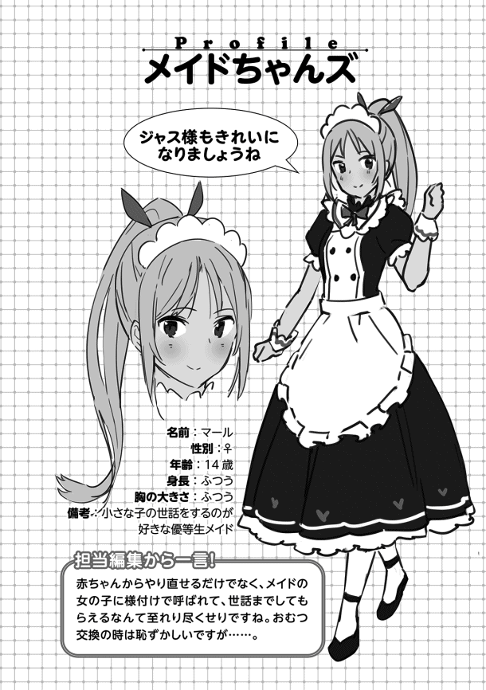
だんだんと暖かい日が増えてきたなーと思う今日この頃。睡眠時間も安定してきたのか、起きたときに「今は何時くらいだろう？」と首を傾げることも減ってきた。
ま、時間については他に明確な手がかりがあるしな。
「う？」
開けてくれている窓から、低い鐘の音が聞こえてきた。恐らく時計塔は、やや遠いところにあるのだろう。柔らかな鐘の音を、ゆっくりと数える。
二......三......四──。うん、四時だな。そしてベッドの柵によってできた影の角度を見れば、今が朝だということが分かる。五回鳴る頃が最も太陽が高くなるから、五時で正午と考えて良さそうだ。だったら、一日は十の時間に区切られている、ということになる。
つまり、二四時間制に直すと......朝の九時か十時くらいってことか？ 計算が面倒くさいなぁ。
「へふぅ」
時間を把握しただけで脳みそがぐんにょりしてしまったので、早々に首の向きを下から左へと変える。そこにはいつも通り、俺の癒しの天使ちゃんがいるのであった。
「きゃあ〜ん♪」
「おーう！」
朝の光に蒼い瞳を輝かせ、俺に向かってとびっきりのスマイルを見せてくれる。いやあー、今日もセーレたんってば可愛 いのお〜。
......なんで東北弁が出てきたのかは、俺にも謎だ。
「うやぁ〜ん」
「あっはー」
甘えるような声を出しながら、俺の手を取ろうとする子猫ちゃん。近頃はなぜか自分のではなく俺の指をパックンするのがお気に入りのようだが......おおっと娘さん、ちょいと待っておくんなせえ。
「う〜」
悲しげな顔を見せるセーレたんに笑みを返す。お兄ちゃんにはな、今やらないといけないことがあるんだ。
というワケで、トレーニングスタート！
「あーうぇー、いーうーー」
今日は、同時に手足を動かしながらの発声練習。多少見てくれは悪いかもしれないが、こうすればまさに一石二鳥ではないかと思いついたのだ。部屋に誰もいない今なら、見てくれも気にしなくていいしな。これでノリのいい曲のひとつでもあれば最高なんだが、ないものは仕方がない。そこはアカペラで何とかする。
すると悲しそうだったセーレたんが笑顔になり、俺のマネっこをして遊び始めた。
「ああ〜ん。あぅ〜ん♪」
「......」
ああチクショウ！ なんでこんなにカワイイんだああああーーーっ!!
俺がやると、きっとひっくり返って死にかけの昆虫みたいだろうに、この子がやるとまるで子犬のダンスだ。蒼くてまーるいおめめをキラキラさせて、ものすごーく楽しそうに遊んでいらっしゃる。
......おおう、あまりの可愛さに思わずストップしてしまった。改めてトレーニングを再開。
「あーおぅ、あーおぅ」
「あお〜〜〜〜んっ♪」
「......」
ああ、なんて楽しそうなんだ......。俺がこうしてトレーニングを始めると、この子もマネしてくれるんだよなあ。今やそんなセーレたんを見たいというのが、俺がトレーニングに励む理由の過半数を占めつつ──。
「──はっ!? 」
って、イカンイカン！ あくまでも俺が政権与党でなければ、この子の導き手になれないではないか。ココはもっと、気合いを入れて頑張らなければ。
「あーっ、いーっ！ うーっ、うーっ！」
「あ〜いっ♪ ああ〜〜いっ♪」
「えーっ......。おっ、おぉー......ぉ」
「あ〜......ぅ。あ、あぁ〜〜ん......」
「......はひぃ」
「......はふぅ」
あっという間に息が切れたー......。
考えてみれば、俺はまだ赤ん坊だった。喋りながら手足なんて動かしていたら、すぐ疲れるのは道理ではないか。大人の身体でもすぐバテていたのに。
って、それは単なる運動不足か。
「はぁ、はぁ......」
「はふっ、はふぅ〜......」
気だるい感覚が全身を襲う。隣のハニーもお顔を真っ赤にして、おデコにはうっすらと汗をかいていた。
ああでも、そんなセーレたんも可愛いなあ。それが見られただけでも、ミョーな達成感が──。
「......」
でもやっぱり、発声練習と運動は別々にやることにしよう。効率が悪い。
二兎 を追う者は一兎も得ず。先人の言うことは確かであった。
──多少の失敗なんかもしつつ、俺はセーレたんと一緒にトレーニングに励む。
先日はうさぎさんから貴重な教訓を得たので、今朝はうさぎさんよりも可愛い女の子と楽しくトークをしようと思う。
「おーっ」
「う〜？」
さっそく目を覚ましたセーレたんに話しかけると、まるで小首を傾げるかのようにこっちを向いた。少しぷっくりとしたほっぺが、コレまた可愛らしい。つんつんしたくなるね。
「あむっ♪」
「あ」
また食べられてしまった......。
温かな朝の日射しが注ぐベッドの中、セーレたんが蒼い目を細くして嬉しそうに俺の手を両手で掴み、指先を口に含んでいる。
「お、おー」
「ん〜♪」
喋ってくれませーん。早くも頓挫 か？
......いや、ここで諦めたら終わりだ。むしろ積極的に声をかけ続けて、なんとか指を抜くスキを窺 うべきだろう。
ということで、よろしければ抜かせていただけませんでしょうか？
「あーう、あうあーう」
「む〜ん」
「おうおーっ、おうーん」
「んん〜っ♪」
「......」
お伺いを立ててみたが、どうやらよろしくないらしい。もしかして、俺はこのまま指を咥えて見ていることしかできないんだろうか？ 咥えているのは向こうの方だけどさー。
しかし、見ていると俺の方にもだんだんと本能的な衝動が湧き上がってきたので、残る右手の親指を咥えてみる。
「あむっ」
「む〜ん？」
「んむんむ」
「ん〜っ」
うん、そうだねー。確かに落ち着くわコレ......。
ていうか今、普通に会話が成り立ってないかい？
「うーん......」
「む〜ん？」
これからどうしようかと悩んでいると、セーレたんが片方のおててを俺に伸ばしてきた。
「......むー？」
「んむ〜♪」
どうも、「わたしのおてて、あげるー」と言っているらしい。
いや別に、自分の指に満足していないワケじゃないのだが......。
「んん〜っ！」
「ぶふっ!? 」
目の前に出された手をじーっと見ていると、ムリヤリ突っ込まれた!?
だけどこの子も赤ん坊。正確に手を口のスキマに挿し込むことなどできず、実際には口と鼻との間、そのくぼみの部分をパンチする結果になってしまった。
──人体急所のひとつ、「人中 」である。
「うぉぉぉぉ......！」
まともな力もなく、握ってもいない手とはいえ、油断していたところに直撃したので地味に痛い......。
思わず咥えた指を吐き出すと、今度はセーレたんの指先が優しく俺の唇に当てられた。
「む〜む〜」
「......」
ちょっと涙目になりながら、俺はやむなくその手を受け入れた。お手上げである。
「......ん？」
「む〜ん♪」
すると、嬉しそうに目を細めるセーレ様。満足なされたようだ。
「......ムフッ！」
だけどセーレ様？ お願いだから、まだ歯の生えていない歯グキを指先でこちょこちょするのはやめてくれません？
すっごいムズムズするんですけど！
「......っく！」
「ぁぅん♪」
お返しに妹ちゃんの舌の歯グキをくすぐってやると、身体をぴくんと震わせて口を開きそうになりながらも、また力を入れて俺の指を咥え直した。で、またくすぐってくる。
意外と辛抱強い子だ......。
「んっ......んー！」
「んむ〜んっ！」
くっ、やったなー！
お互いに口のスキマからヨダレが出てくるが、気にしている余裕はない。指を離したら負けだと言わんばかりに、お互いの歯グキをくすぐり合う。
「......ぷはぁ！」
「ぷふぁ〜」
結局、指と口が疲れてきて同時に離すまで、くすぐり合いは続いたのだった。
あーあ、服やベッドのシーツにもヨダレがー。
「きゃあ〜ん♪」
「......」
俺、いい歳して何をやっているんだろう？
ふと我に返ってみて......凹んだ。
──己の子供っぽさに少々落ち込むも、なんとか気持ちを立て直すことに成功した。俺の頭をなでなでして励ましてくれた、お袋とセーレたんに感謝である。
「うーっ！」
両手をぐっと握り締め、トレーニングへの決意を新たにする。
今度は運動をしよう！ 男のトレーニングといったら、やっぱ筋トレだぜ。
食事もさっき終わったところだし、腹ごなしにもちょうどよかろう。
「おうっ！ おうっ！」
なるべく手足の指先にまで力を入れ、男らしくパワフルに手足を動かす。もはや、死にかけの昆虫などではない。
まだまだ元気な昆虫だ！
「......」
自力で身体を起こせないという意味では、なんにも変わっていなかった。
「あ〜ん、ああ〜んっ」
俺のトレーニングを見るとはやり、お隣の天使ちゃんは俺のマネをし始めた。外は雨が降っているようだが、セーレたんは今日も相変わらず可憐だ。
しかし、今日の俺はストイックなのだ。
「あーう、あーう！」
可愛らしい女の子にあんまり目もくれず、ひたすらに手足を動かし続ける。なお、これだけ動いてもオムツが緩むことはない......キッチリと巻いてくれたマールちゃんに感謝だ。
これがチャロちゃんだと、たまに緩んじゃうときがあるんだよなー。お袋も以前はそうだったけど、今はバッチリである。特にオシリのラインをきゅっと引き上げる具合に関しては、マールちゃんにも引けを取らない。
「......はふぅ」
そんなことを考えているうちに、早くもスタミナが切れてしまった。仕方ないんだけど。
「はう〜......」
セーレたんも疲れてくったりしているので、二人で休憩に入る。ムリをしてもいいことはないもんなー。よく動き、よく休む。これぞ「超回復」のコツである。
「うぇーい」
「ふあぁ〜」
身体中の力を抜いて適度な疲労に手応えを感じる。すると、部屋のドアが優しくノックされた。
「失礼します」
ドアの向こうから聞こえてきたのは、落ち着いた女の子の声。彼女達はいつも入る前に同じことを言うので、たぶんそういった意味合いなんだろう。
しばらく待っていると、俺の視界の中に空色の髪のメイドさんが姿を現した。
「Экйγε ──あら？」
マールちゃんは俺達の顔を見てわずかに目を大きくすると、回れ右をして一旦フェードアウト。だが、すぐに手ぬぐいと着替えを持って戻ってきた。
「汗をかいていますね。Бот ......ですか？」
そう言って優しく微笑むと、俺達の顔を順番にそっと拭いてくれる。つり目がちの瞳は澄ましていると少しキツそうにも見えるのだが、この娘 はいつも穏やかな笑みを向けてくれるのでそうは感じない。
「はい、きれいになりましたね」
「きゃあ〜ん♪」
先に近い方にいたセーレたんからお顔を拭いてもらい、服も着替えさせてもらう。赤ん坊に汗は大敵だ。放っておくと、かゆくなるわ冷えてくるわで悲惨なことになるからなー。
もちろんお着替えの間、俺は天井とマールちゃんの笑顔だけを見ておりました。
「はい、ジャス様も」
「おーん」
最初は若くて可愛い女の子に脱がされるのはメチャクチャ恥ずかしかったけど、既に何度もシモのお世話までされている身である。入院しているようなもんだと思えば気も楽だ。
さすがに目が合うと恥ずかしいので、テキトーに視線は逸らすのだが。
「ああ〜ん♪」
「......うぐ」
しかし、セーレたんは待ったナシである。見ないでー。
「ふふふっ」
その間にも、産まれたままの姿になった俺の身体を若いメイドさんに拭き拭きされる。首の周りや脇の下など、汗の溜まりやすい場所は要注意だ。無論、あんなトコロやあんなトコロも──。
「はい、きれいになりました♪」
「あうぅ......」
ありもしない天井の染みでも数えるつもりが、俺の視界は彼女の素敵な笑顔でいっぱいであった。結局、最後まで見つめ合ってしまった......。
あくまでも仕事として、プロフェッショナルに拭かれる分にはこっちも平然としていられるのだが。しかしみんな、本当に楽しそうな顔でお仕事してくれるので......そう思ってくれるのは嬉しいんだけど、やっぱりそれ以上に恥ずかしい。複雑な赤ちゃん心 であった。
「あああー」
「ふふふふふっ」
リアル赤ちゃんプレイに身もだえしている俺を見て、マールちゃんはわずかにあどけなさの残る顔に母性を感じさせる笑みを浮かべて──。
何か言いながら、ベッドの柵の金具を外し始めた。
「さあ、セーレ様」
「あ〜ん」
「......ん？」
てっきり脱がされた服を持って出ていくのかと思っていたら、マールちゃんは大人しくにこにこしていたマイシスターを抱っこした。そしてくるっと後ろを向いて空色のポニーテールを揺らし、目の前にある大きなソファーへ天使ちゃんをゆっくりと座らせる。どうやら、俺達をベッドの外へ出してくれるようだ。嬉しいサプライズである。
俺もセーレたんも今では自分で頭の重さを支えることができるので、背もたれがあるソファーなら座ることもできるのだ。
このまま行けば、背もたれナシでお座りできるようになる日も決して遠くはないだろう。
「きゃあ〜♪」
昼前の暖かな日射しと柔らかなソファーの快適さに、妹ちゃんは大喜びだ。よかったなー。
手足を動かして上機嫌なセーレたんを眺めていると、俺の側の金具も外される音が後ろから聞こえてきた。
「はい、ジャス様」
俺達の寝ているベッドは双子用で、縦も横もけっこうな幅がある。だから一人で俺達を外に出そうとすると、わざわざぐるーっと回って両側の柵を倒さないといけないんだよな。そんな手間をかけてまで連れ出してくれる彼女には、本当に感謝である。
「あーいっ」
「まあ......♪」
大人しく仰向けになり、俺も抱っこしてくれるのを待つ。マールちゃんは笑みをこぼした。
華奢 な女の子にはけっこう重たいんじゃないかと思う俺達だけど、マールちゃんは「よっ」と小さく声を出して要領よく抱き上げてくれた。以前にも赤ん坊を世話したことがあるみたいで、抱っこの仕方はお袋よりも慣れているようだ。かなりの安心感がある。
「......おー」
「ふふっ」
抱き上げられた浮遊感と高くなった視界に、思わずテンションが上がる。親父の「高い高ーい」もスリルがあってイイけど......どっちの方が好きかと聞かれたら迷うな。
さすがにお袋やアナさんには及ばないけど、それでも十分に柔らかな感触と、爽やかな花のような香りに包まれながら、俺もゆっくりとセーレたんのお隣へと「おっちん」させてもらう。「えんちょ」でも可。
ちなみに「キチンと座る」という意味であって、どちらも下半身のアレではないのであしからず。
「あぁ〜ん」
「あうっ」
俺自身の重みでソファーがちょっぴり沈み、身体が傾いて隣のセーレたんとくっつき合う。雲の上に乗っているみたい......というと大げさだけど、ソファーはふかふかですっごく快適だ。更に妹ちゃんは俺の足をぺちぺちと叩き、まるで「いらっしゃーい」と言ってくれているように見える。ありがとなー。
「はぁ......。私も失礼しますね」
さすがに赤ん坊二人を立て続けに運んで、少し疲れたらしいマールちゃん。両肩を軽く回しながら小さくため息をついてから、まだまだ座れるスペースのある俺の右側へと腰を下ろして──。
「おうっ!? 」
「きゃん♪」
ソファーが一気に沈み、俺とセーレたんが一斉にそっち側に倒れてしまった。
「......おぅふ」
目の前には、エプロンドレスに包まれた女の子の太もも。俺はその上に上半身を乗せ、更に妹ちゃんに左から抱きつかれる形になっている。
「両手に花」を超える、まさかのサンドイッチ伯爵 状態。できれば前世で体験したかった......。
「ふふっ、申し訳ありません」
なんて言いながら、マールちゃんはくすくすと笑って見下ろし、俺とセーレたんの頭をなでなでする。日射しが当たって空色の髪がいっそう明るく輝き、見上げていると本当に空のようでキレイだ。
一瞬見とれてしまっていたことに気づき、慌てて耳かきをされるような体勢のままベビーベッドの方へ目をやる。その足元には、俺達の脱いだ服や拭いた後のタオルがまとめてカゴに入れられていた。
状況から察するに、彼女はしばらくの間、を俺達と一緒に過ごしてくれるらしい。
「нЭОк ......ですね」
明るい窓の方を見て目を細めてから、俺達に微笑みかけてくれるマールちゃん。たまに耳にするフレーズで、恐らくは「いいお天気」とか「暖かい」とか、そんなニュアンスなのだろう。
少しでも言葉が分かるようになると、それを足がかりにして芋づる式に理解できる範囲が広がっていく。辞書も参考書もない状態でも、意外と何とかなるもんだ。
「......」
温かさと柔らかさに全身を包まれていると、だんだん眠たくなってきた。セーレたんも耳元で小さな息づかいが聞こえてくるだけで、特に何をするでもなくただ俺に抱きついてじっとしている。
穏やかな沈黙の時間。......しかし、やがて頭の上から、とてもキレイな声が聞こえてきた。
「♪〜〜。♪〜♪〜〜っ、♪♪〜〜〜〜」
目を開けて頭を上げてみると、マールちゃんが俺の頭に手を置いたまま歌を口ずさんでいた。ゆったりとしたテンポで、たぶん童謡か何かだろう。いつもは落ち着いた低めのトーンで話す彼女だけど、唄うときには高いハープのような声色を聞かせてくれる。
電話に出るときに限って声を裏返すオカンとは、ワケが違う。
「♪〜〜」
俺の視線に気づいたマールちゃんは、唄いながら微笑んで俺の頭を再びなで始めた。
そのまま寝ていいですよ、と言ってくれているみたいに。
「......」
その無言の言葉に甘え、俺はまた目を閉じて彼女に身体を預けた。俺に抱きついているセーレたんは、既に小さな寝息を立てている。
「♪〜〜♪〜、♪〜〜♪〜〜」
俺も、幸せな眠気に身を任せることにした......。
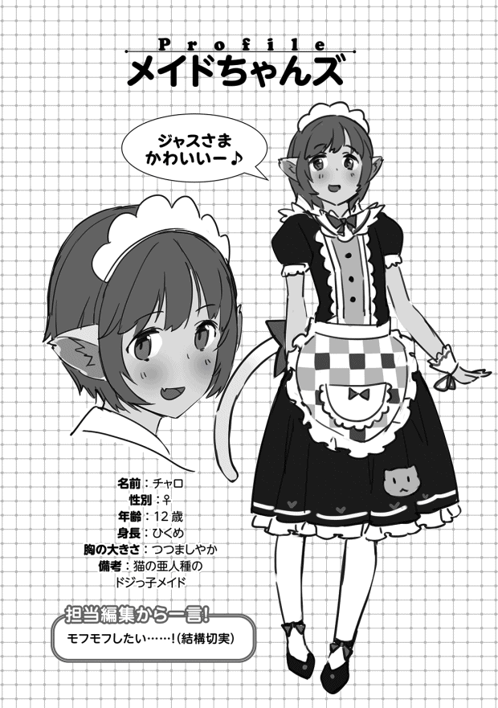
俺は──いや、俺とセーレたんは春生まれなんだろうなー、という推測は当たっているようだ。昨日や今日では分からないけど、しばらく前と比べてみると体感的に暖かいと思う日は確かに増えていた。
昼間よりも、夜の方が分かりやすいかもしれない。寒い日が完全になくなったしな。比較的緩やかな温度変化から鑑 みるに、この地域の気候は温帯に属するんだろう。梅雨があるかどうかはまだ分からないけど、雨季と乾季のように極端な分かれ方ではないようだ。
「はい、どうぞー♪」
食事もオムツ替えも終わった朝のひととき。その後も部屋に残ってくれたチャロちゃんの手には、小型軽量で柔軟性に富む球形物体が握られていた。
物体も何も、まさにスポンジみたいなボールそのものなんだけど。
俺とセーレたんは、今日もベッドから出してもらってソファーに並んでお座りしている。チャロちゃんは俺達の前で、絨毯に直接ひざをつけて座っていた。足はつま先を立ててかかとにお尻を乗せているので、正座ではなくその一歩手前のような感じだ。
「うー」
楽しそうにしっぽを揺らすチャロちゃんの手から、両手で慎重にボールを受け取る。
「あはーっ♪」
やっほーい、ボールだボールだーっ！
......我ながら子供みたいな反応だとは思うが、実際に子供なんだから仕方がない。俺の手でも握れるお手頃サイズ、そしてふにふにと容易に形を変える柔らかさ。そして赤い色。
思わずむしゃぶりつきたくなるような、なんともセクシーなバディだぜい。
「おおーっ」
絶妙な握り具合と感触を確かめ、俺のテンションが上がる。
こ、これも握力トレーニングのためだ。決して遊んでいるワケじゃないんだからねっ！
「ほらほら、もうひとつありますよー」
「おほーっ！」
なんと、スカートのポケットからもうひとつ！ ......完全に遊んでいるような気もするが、気にしなーい。
両手に花、ならぬ球となった俺はバンザイをして喜ぶ。しかし......それで終わってはいけない。
「はう〜......」
横でセーレたんが自分の指を咥え、仲間にしてほしそーなうるうるとした瞳で俺を見つめているのだ。
もちろん俺はお兄ちゃんだから、ボールの片方を妹ちゃんにご進呈。はいどーぞー。
「きゃあぁあ〜ん♪」
親指を口から離し、セーレたんは俺の片方の球をしっかりと両手で受け取った。そして嬉しそうに両手でにぎにぎし始める。
うひゃーっ、ラッコちゃんみたいで可愛いぜー！ 写真集を出したら、最低でも一〇〇万部 くらいは行くだろう。
「ジャスさまは、おりこうですねーっ♪」
チャロちゃんが満面の笑みを浮かべ、俺のことをほめてくれた。八重歯がチラリと覗く。
この子もまた可愛らしい。
「ああ〜ん」
「おーっ」
渡したボールをセーレたんが俺に向けてきたので、俺も自分のボールをさし出してくっつけてみた。親愛の証である。
ふたつ並んで形を変えるボールを見て、セーレたんは嬉しそうに押しつけてきた。見ていたチャロちゃんもしっぽと耳を動かして喜び、もちろん俺も二人が喜んでくれて嬉しい。
「あははははっ♪」
白い部屋の隅から隅まで、更には開いている窓から外へと、どこまでも三人の笑い声が広がっていく。この家に暗いところなど、どこにもないのであった。
「あら〜？」
チャロちゃんも新しいボールを出して、三人で押しくらまんじゅうをしていると、お袋がおっとりと戻ってきた。少し前に汚れた俺達の服を持って出ていったのだが、笑い声が聞こえたんだろうか。
白くゆったりとしたワンピースに、波打ってキラキラと輝く金色の髪。いつ見てもお姫様のようである。
「チャロちゃん、楽しそうね〜」
「はいー！」
側までやってきたお袋に、チャロちゃんが立ち上がって話を始めた。お袋も何かを喋り、しばらくやり取りが続く。
まだまだ理解できない部分も多いが、俺とセーレたんの名前以外にも「ボール」を意味するらしい単語など、聞き取れる部分もそれなりにあった。
「あらまあ〜♪」
話を聞いたお袋は、ぱふっと両手を合わせて微笑む。
そんなお袋もキレイなのだが......それ以上に、両腕に挟まれて「ぱふ〜ん」というか「むにょ〜ん」と形を変える二個のボールの偉大さよ。
もちろんながら、俺達の持っているボールなどとは比べものにならず、チャロちゃんもまた右に同じであった。
ソファーから見上げている俺には、お袋の顔の鼻から下が見えないほどである。
「う、うわぁ......」
しかしチャロちゃんは身長差から、ソレをほとんど目の高さで目撃してしまっていた。オレンジがかった黄色い目が点になっている。そしてさっきまで上を向いていたしっぽも、耳と一緒に垂れていく。
対するお袋はにこにこしながら、頭の上に「？ 」を浮かべたような表情で首を傾けていた。
大丈夫だぞチャロちゃん。キミはこれからなんだからな！
まー、さすがにお袋やアナさんレベルは難しいかもしれないけど......。
「うふふふ〜、ありがとう〜」
「きゃう〜ん♪」
ボールは三個しかなかったようで、四人になった俺達は持っているボールを手渡すことでキャッチボールみたいなことをして遊び始めた。俺達は相変わらずソファーの上で、お袋はチャロちゃんと一緒に床の上である。お袋は背が高いので、足を横に流してちゃんと座っていた。
「あ〜ん」
「あっ、ありがとうございますー」
セーレたんも自分のボールに固執することなく、ちゃんと自分のボールを誰かに渡し、そして受け取っている。今回はチャロちゃんに渡した。えらいねー。
ボールを持った三人は、誰が渡すのかを決める。言葉の通じない赤ん坊が二人いるから、言葉よりも表情や声のトーン、ジェスチャーなどが重要だ。それで、決まった人は待っている相手の顔を見て、それから「はい、どうぞ」とボールを差し出して受け取ってもらう。たまにバッティングすることもあるけど、そのときは全部受け取って、また誰かに渡せばいいのだ。
誰から言い始めたワケでもないのだが......いつの間にか、そんなルールができ上がっていた。
「あーい」
「きゃあ〜」
不思議と飽きないこの遊び。今度はセーレたんの手が空いたので、俺のをプレゼントした。受け取ったボールを嬉しそうに両手でふにふにしているのを見ると、こっちまで嬉しくなってくる。もちろん、お袋もチャロちゃんも笑顔の花を咲かせていた。
次は、俺が誰かから受け取る番だな。
「はい、ジャスちゃ〜ん」
「どうぞですー」
「あい〜ん」
と思っていたら、全員の手が一斉に俺の目の前に差し出された。
「うっ？ ううぅ......」
え、ええっと......この場合はどうすりゃいいんだ？ たとえ両手でも、三個全部は持てないぞ？ こうなったら、どれか一個は口でキャッチするか......。
じゃあ、いったい誰のボールを咥えたらいいんだろうかーと悩み始めたところ、三人ともがほぼ同時に噴き出すように笑い始めた。
「うふふふふふ〜っ♪」
「あはははははーっ♪」
「きゃあぁあ〜〜ん♪」
「......」
もしかして俺、からかわれたんでしょうか？ しかも、一人はまだ赤ん坊だというのに......。
コレが世にいう、女性の団結力というヤツなのか？
お、恐るべし──。
男の俺には理解できないナニカに戦慄 していると......お袋が手を引っ込めて立ち上がり、部屋の隅に並んでいるタンスのひとつに向かって歩き始めた。チャロちゃんはカーテンのように揺れる長い後ろ髪を見て首を傾げ、その間に俺はなおもボールをくれようとしていたセーレたんからそれを受け取った。それからもお袋を見ていると、引き出しのひとつから何かを取り出してこちらに戻ってきた。
「チャロちゃん、これを〜」
「はいー？ ......あっ！」
お袋の手の中から、チャロちゃんの手の中へと渡された何か。チャロちゃんはひざ立ちになり、更に耳としっぽもピンと持ち上げて、明るい色の瞳を更に輝かせた。チャロちゃんの持っていたボールはセーレたんに渡されて──これで、いちおうは全員が何かを持っていることになった。
......楽しい遊びが、終わってしまった。
「うふふ〜」
「あははっ」
手の中のボールをいじりながらちょっと寂しい気分になっている俺と、もらったボールを自分の鼻にくっつけて遊んでいたセーレたん。そんな俺達に、二人は目配せし合いながら微笑んでいた。
「ジャスちゃん、セーレちゃん、見ていてね〜。......さあ」
「はいっ」
お袋の言葉に大きくうなずいたチャロちゃんはひざ立ちのまま、その何かを持ったグーの手を俺とセーレたんとの間に差し出してきた。二人で同じ方向に首を傾げていると、その手が目の前でゆっくりと開かれていく。
「......う？」
「あう〜？」
白く華奢な手のひらに載っていたものは、これまた白くて丸い石っころ。それは平べったく、赤ん坊の手に持つにはちょっと大きそうだった。まあ、うっかり赤ん坊が飲み込まない、安全な大きさだと言い換えることもできる。
しかも。
──その表面に、何かの図形みたいなモノが刻まれていた。
「......!! 」
目にした瞬間、なにやらぞわぞわとしたような感覚が、脳天からつま先まで一気に駆け抜けた。
パッと見た限りは、刻んだ溝に塗料か何かを使っただけの意味が分からない謎のマーク。そのマークだって、特に複雑なものではない。手描きはちょっと難しいとしても、道具があれば小学生にでも描けそうだ。
だがこのとき、半ば確信にも近い予感が──興奮が、俺の心を支配していた。
「──くださいねー？」
チャロちゃんの異世界語と共に、その石っころがほんの少しだけ遠ざけられた。ソファーから動けない俺には、もうそれだけで手の届かないものとなる。もっと近くで見たかったのに......。
そのことに歯がゆさを覚えならも、俺は謎の石を凝視し続けた。
なおも見ていると──。
「......ぁ」
石全体......特に、刻まれていた図形がぼんやりと光り始めた。
だが、チャロちゃんの手の上にあるのはそれだけ。石を光らせるギミックなどは見当たらないし、もしも蛍光塗料でも塗っていたのであれば最初から光っているハズ。そもそも、昼前の明るい部屋の中でも光って見えるのだから、その光の強さはちょっとしたものだ。
暗闇の中であれば、十分に明かりとして使えそうなくらいに。
「さあ、Мτиож ──」
お袋がなんと言ったのか、ハッキリと俺の耳に入らなかった。
だがその意味は、すぐ後に知らされた。
「あっ!? 」
「きゃん！」
俺とセーレたんが、同時に驚きの声を発する。
直前にいっそう輝きを強めた石は、その輝きをまるごと石の外へと。
──上空へと、打ち上げた。
「ふあっ!? 」
石の表面からぽーんと飛び出した光の球はゆっくりと上昇を続け、間もなくして天井と俺達との間で静止。そして優しい輝きを、空中で保ち続けた。
「......」
恐らく、みんなも俺と同じように見上げているのだろう。さっきまで温かな笑いに包まれていた部屋は、一転して水を打ったように静まり返っていた。
目を細めるほどは強くない、その光。でも確かな輝きを放つそれは、まるで小さな太陽のように、俺の目には映っていた。
「あはは......どうでしょうー？」
小さな声で笑いながら言ったチャロちゃんに少しだけ目を向け、すぐにまた仰ぎ見る。言葉もなくしばらく見つめていると、光球はだんだんと弱くなっていき、やがて消えた。
隣のセーレたんは感嘆めいた吐息を小さく漏らし......お袋は何も言わず、穏やかに微笑んでいた。
「......ぉぉおおおおおおおおーーーーっ!! 」
目に焼きついた光の余韻もなくなってから、ようやく俺の口から驚きの叫びが飛び出す。光の球が出ていた間、俺は果たしてちゃんと呼吸をしていたのか。まったく覚えていない。
石を持つチャロちゃんと隣のお袋の顔を交互に見ながら、俺は限界まで目を見開いたまま手を叩く。
「きゃああぁあぁああああ〜〜ん♪」
俺と同じく初めての光景を目にした妹ちゃんも、少し遅れてから、今までに聞いたこともないほどに興奮した様子でバンザイをし、喜びの声を上げた。そんな俺達を見て、お袋とチャロちゃんも頬を緩ませる。
「うふふふふふ〜っ♪ ビックリしたかしら〜？」
「あははっ、喜んでいただけたみたいですねー♪」
いや、ビックリなんてモンじゃないよ!? どう見たって、アレはアレでしょ！
決してプラズマなんかじゃない。
──「魔法」だ。
この世界には、「魔法」が本当にあったんだ！
「ほわあああああああーーーーーーっ!! 」
「きゃあぁあああぁぁあああ〜〜ん！」
いい加減に目が乾いてきて瞬きをしながらも、俺は目をまん丸にして痛いほどに手を叩く。セーレたんも俺のマネか一緒になってぱふぱふとおててを叩き始め、お袋とチャロちゃんも一緒になって拍手を始めた。
外では本物の太陽が輝き、部屋の中では四人分の拍手と笑顔の花が咲く。
「うふふふふ〜。よかったわね〜」
「はいっ、わたしも嬉しいですー！」
その後もチャロちゃんは、いくつもの光球を打ち上げてくれた。音も熱もない、だけどなんとなく温かみの感じられる小さな花火。
空中にいくつも咲いては消える、その花の輝きを。
「おおおおおおーーーーーっ！」
「ひゃああぁああ〜〜ん♪」
......俺はきっと、いつまでも忘れないだろう。
暖かな光に包まれ、まったりとした時間が過ぎていく。
「あぁ〜ん。きゃあ〜」
今日もソファーに座らせてもらって日光浴を楽しむ俺達。暖かい、というにはちょっとばかり気温は高いのだが、セーレたんは手足を動かし、きゃっきゃと喜んでいる。
そして俺達の足元では、マールちゃんが絨毯に座って石けんとお日様の匂いがする衣服の山を片づけていた。
「〜〜♪」
けっこうな大所帯 な我が家、当然ながら洗濯物もけっこうな量である。だけどマールちゃんは鼻唄さえ口ずさみ、楽しそうに仕事をしていた。
いつもながら、マジメだなーと感心する。
「はい、どうぞー」
「ええ」
しかし、さすがに一人で片づく量じゃない。マールちゃんの隣にはチャロちゃんもいて、まずは彼女が洗濯物の山の中から服を引っ張り出して、そのしわをキレイに伸ばしてからお姉さんに渡しているのだ。
今もチャロちゃんは、親父のものらしきでっかいシャツを引っ張り出していた。それを絨毯の上に置いた布製の板に乗せると、白いしっぽを上向きに揺らしながら、だ円形の板に取っ手がついたような物体をシャツに押しつけて滑らせる。すると、服のしわがドンドン取れていった。
「できましたー♪」
「うん」
そうしてキレイになった服をマールちゃんが受け取り、手早くキチンと折り畳んで服の持ち主や種類ごとに分類していくのだ。なんとも見事なコンビネーションであった。
「はぁ......」
しかし、二人がかりでも少し疲れてしまったのだろう。チャロちゃんの耳としっぽから次第に力が抜け、へにゃりと垂れ下がっていく。それを見て、マールちゃんが彼女の肩を叩いた。
「飲む？」
「うん！」
元気よくチャロちゃんがうなずくと、マールちゃんはすぐ横にある、ソファーの横にある小さなテーブルへと目を向けた。そこにはジュースらしき飲み物が入ったグラスが、やや厚みのある石のようなコースターの上に置かれている。
マールちゃんは手を伸ばし──だけどグラスではなく、下のコースターに指先を触れた。しばらくすると、グラスの表面に小さな水滴が浮かび始める。ちなみに、グラスの中に氷は入っていない。
「はい」
「ありがとー！」
チャロちゃんは嬉しそうな顔でお礼を言ってグラスを受け取り、こくこくと飲んで「ぷはぁー♪」と可愛らしい声を上げた。元気になったようで、また猫の耳としっぽがぴんと上を向き始める。
続いてマールちゃんも、仲のいいことに同じグラスに口をつけて、残りの半分をゆっくりと飲んだ。「はぁ......♪」と、ちょっぴり色っぽい吐息を漏らす。
そして空になったグラスをコースターの上に置き、気分を新たにして仕事を再開した。
「あう〜ん」
「うー？」
隣のマイエンジェル様はどうやら、俺が手に持っているボールをご所望の様子。俺は遊ばないので渡してあげると、柔らかいそれを両手でにぎにぎして楽しそうに笑った。
「あはー」
それだけで、俺の方まで嬉しくなってくる。自然と笑みを浮かべ、俺はソファーの背もたれに大きな頭を更に押しつけ、白い天井を見上げた。
その中央には、丸くて大きな磨りガラスのようなもの──恐らくは石だろう物体がはめ込まれ、室内を隅から隅まで煌々 と明るく照らしていた。
コードレスのアイロン に、短時間に飲み物を冷やせるコースター 。そして光にチラつきのない、まるでＬＥＤのような天井照明 ──。
そのどれもが、俺の記憶の中にある現代日本の科学文明と比べても遜色 がない。
「......」
魔法文明、恐るべし。
発達した科学は魔法のように見えるというが、その反対もまたしかり。俺の生まれてきた世界は、想像以上に発達しているらしい......。ファンタジーっぽい世界というと中世ヨーロッパ的なイメージだったが、これなら今後も快適な生活ができそうだ。
もしも、毎日家の窓から桶に入ったウ○コを「ファー！」とか言いながら、外の道に投げ捨てるような世界だったらどうしようと思っていたのだ。実際に、大昔のヨーロッパはそうだったらしいからな......。軽く想像してみただけでもオカンが走る。
ということで、気持ちの凹んだ俺は、頭の中で「悪寒 」を「お袋」に置き換えてみた。すると......なんということでしょう！
中世暗黒時代の街並みが一瞬にして、サンダルに白いワンピース、そして金色の髪に赤いハイビスカスの花を挿した可憐な美少女が、南の青い海と空をバックに真っ白な砂浜を楽しそ〜に走っているイメージへと置き換わってしまったではありませんか。「うふふふふふ〜♪」と笑うお袋が目に浮かぶようである。
「......ううーん♪」
ああ、とても癒されるー。そっちの方が、精神衛生的にも絶対にいい。俺はしみじみとうなずいた。
話があさってに逸 れてしまったが......今も天井で光っているこの照明については、生まれ変わった俺が最初に目にしたモノのひとつであり、同時にとても救いとなったものでもある。
右も左も判らない、更には身体も満足に動かせない状況で、もしも夜の明かりがなくて完全に真っ暗だったり、あるいはゆらゆら〜と影が揺らめく薄暗いローソクが一本だけだったりしたら──。
「......」
嵐が吹き荒れ雷鳴がとどろく洋館ホラーは間に合っているので、もう一度お袋に砂浜を走っていただこう。うふふふふふー。
......だけどそのせいで、最初の頃はてっきりココが地球のどこかだと思っていたのだ。だから、特にチャロちゃんを初めて見たときには頭が真っ白になったよ......。
「あう〜っ？」
「う？」
ぺちぺちと太ももを叩かれたので意識と視線を戻すと、セーレたんが笑顔で俺にボールを差し出してきた。返してくれるらしい。
受け取ると、天使ちゃんはまさに天使のように笑って自分のおててを叩き始めた。俺もなんだかめでたい気分になり、ボールを持ったままドンドンぱふぱふーと拍手をする。
「きゃあ〜ん♪」
「あはーっ♪」
温かい空気に包まれた、穏やかなひととき。さすがにテレビやラジオはないらしいけど、ココではそんなモノはなくても平気だ。ネットやスマホなんかも......あれば便利だろうけど、時間つぶしのツールとしては必要ない。
「あははははっ」
「ふふふっ」
だって、こうして可愛らしいメイドちゃん達が俺達を見て、楽しそうに顔をほころばせてくれるんだもの。
まだ聞き取れない言葉も多いし、こっちから話しかけることもできないけど......。
それでも、十分に楽しいコミュニケーションを取ることができるのだ。
「あぁ〜ん♪」
「おーう！」
ほら、こうしてセーレたんともお喋りできるぜ！
なんとなーくだけどな？
この世界に魔法──手から直接なにかを出しているのを見たことがないから、仮に【魔導具 】とでも呼ぶことにしようか。そんな男心をくすぐるモノを見て、テンションがうなぎ登りの今日この頃。俺の気持ちと同様に、日中の気温もわずかにだが確実に上昇していた。夜には、虫の声が聞こえるようにもなってきている。
陽 の射し方を見るに今日も午前中に起きられたらしく、セーレたんはチアリーディングのように、そして俺はひっくり返ったオモチャのロボットのように、ベビーベッドの上で手足を動かしてあいた。すっかり日課となったトレーニングである。
「あーうっ。あーうっ」
「ああ〜っ、ああ〜ん♪」
「あー......ふぅ」
「はふ〜ん......」
相変わらず、すぐにバテるんだけどなー。夕暮れの河川敷 で殴り合った後のごとく、二人で大の字になって休む小人 。
あんた、なかなかやるじゃないか。フッ、お前もな......。
「......」
いつもの残念な脳内劇場を切り上げ、俺は重い頭を少し動かす。
相変わらずの、ちっちゃな手のひら。もっともっと大きくなったら、俺も彼女達のように魔導具が扱えるようになるんだろうか。
......というか、ナニをどーすれば使えるようになるんだ？ 一日どころか、一刻でも早く使ってみたいんだけど。
俺の封印された右手がうずくぜー。
「うーん......」
「きゅう〜？」
思い悩んでいると、セーレたんが愛らしい声を出してグーパーしていた俺の手を握った。そして小さくシェイクハンド。
「あう〜ん♪」
「あはー」
運動直後でちょっと暑いけど、その温もりに癒されるー。前々から思っていたけど、この子って何かオーラみたいなものがあるよね。
窓から入ってきた風が俺の顔を優しくなで、あまり多くない髪をくすぐっていく。涼しくて気持ちがいい。
ちなみに、ときどき頭皮のマッサージ......というか、適当にぺちぺちと叩いて刺激は与えているのだが、そっちの成果のほどは不明。手足の方は、だんだん力がついてきたような実感があるのになあ。
「......ん？」
そういえば、さっきからかすかに「ヒュン！」と風を切る音が外から何度も聞こえてくる。なんだろう？
「──入るわね」
耳を澄ましていると、反対方向からノックの音と女の人の声が。もう見なくても分かるけど、上から俺達の顔を覗き込んできたのは、やはりアナさんであった。更に横から、チャロちゃんもひょっこりと耳と顔を出した。俺達を見た瞬間、ぴこっと両耳が上に跳ね動くのが可愛い。
「Яоч 、掃除しますよー♪」
今日も楽しそうにしっぽを振りながら、チャロちゃんがセーレたんのいる方に回ってベッドの金具を外し始めた。アナさんも俺達に優しく笑いかけて頭をなでてくれた後、同じく俺の側の金具を外して柵を倒す。ハッキリと聞き取れなかったけど、ベッドの上を掃除してくれるのだろう。毎日のことだからな。
先に柵を倒し終わったチャロちゃんが、身を乗り出すようにして天使ちゃんを抱え上げる。
「うぅん......しょっ！」
「きゃあ〜♪」
セーレたんは手足を動かして喜んでいるが、そのせいでチャロちゃんが少し苦労していた。ただでさえ小柄だし、俺達も成長しているからな。チャロちゃんは持ち上げるのを一旦やめ、しっかりと抱え直してから「ふんっ！」と少々乙女らしからぬ声を上げて持ち上げた。ほんのりと顔が紅潮し始め、持ち上げるのと同時に上を向いたしっぽがびびびと震えている。彼女には悪いけど、見ていると思わず口元が緩んでしまう。
でもセーレたーん？ いい子だから、大人しくしてあげようなー。喋れないのでそう思いながら目差しを注いでいると、俺の番がやってきた。
「さあ」
そう短く俺に声をかけると、手慣れた様子で易々と抱き上げるアナさん。俺が大人しくしていたせいもあるんだろうけど、さすがである。
「あうっ」
そして俺の上半身がアナさんの母性の象徴に乗り上げ、軽くバウンドした。いつもながら、すごい弾力性である。
「うんっ......しょーっ！」
俺が極上のサスペンションに揺られている間に、チャロちゃんは大人しくなったセーレたんをなんとか抱っこし、アナさんのすぐ後ろにあるソファーに運んで天使ちゃんをお座りさせた。直後、ソファーの足元にひざをつき、セーレたんのすぐ横に頭を乗せてぐったりしている。その重みでセーレたんが傾き、チャロちゃんの頭に抱きつく格好になった。
「はふー......」
「きゃあ〜ん♪」
まるで「ありがとう、お疲れさまー！」と言っているみたいで、なんとも微笑ましい光景だ。
「ふふふっ」
アナさんも二人を見て笑い......そしてサスペンションが揺れる。思わずしがみついてしまった。ミルクの中に完熟バナナを入れたような、なんとも甘い香りがふわふわと漂う。
「......う？」
ちょうどそのとき、窓の外からひときわ鋭い風を切る音が聞こえてきた。顔を上げた俺に気づいたアナさんが、俺の期待に添うように身体ごと振り返ってくれる。更に窓に向かって歩いてくれて、俺は暖かく眩しい光に目を細めた。
「......」
ちょっぴり怖々と、だけど少しずつ目を開く。外の新鮮な空気が俺の肺を満たし、鮮やかな緑の色彩がだんだん見えるようになってくる。とはいえ、まだピントはぼやけていてハッキリとは見えない。だが、その中に黒っぽい人影があることは、すぐに判った。そのシルエットはかなりの長身で、しかも服装の色には見覚えがあった。親父だ。
「おおー！」
期待に俺の胸は弾み、アナさんが俺の頭をなでながらくすりと笑い、その胸もまた弾む。
親父は朝に俺とセーレたんを見に来てくれたときと同じラフな格好で、何やら長い棒のようなものを両手に持ち、背筋を伸ばして自然体で構えていた。先端が空を向いているそれを見れば、休日のサラリーマン恒例の（？）、接待ゴルフの練習ではないことは明らかである。
茶色い色から考えても、恐らくは木刀か。いや、棒はまっすぐで反りがないように見えるから、「木剣 」と呼んだ方がいいかもしれない。......聖徳太子の持ってるアレじゃないよな？
「......」
ところでその木剣とやら、ちょっとばかり長すぎるような......？ 親父の背丈から考えて、一メートルどころじゃないように見えるんですけど。
しかし親父はそれをゆっくりと、まったく身体を揺らすことなく振り上げた。
そして、瞬きをする間もなく振り下ろす。
「......ッッ！」
かすかに親父の息を吐く音が聞こえ──ることはなく、恐らくはその声をかき消したのだろう。代わりに、空気を切り裂く鋭い音が耳に飛び込んできた。
「うゎぁ......」
す、すげえ......！ あまりの迫力に、思わず背筋がゾクゾクした。
しかも剣先は、芝らしき草のギリギリ真上でピタリと止められていた。俺の視力ではそこまで見えないが、地面を叩く音がしなかったのだから解る。
「フッ！」
次に親父は木剣を横に構え、水平に振るった。野球のスイングとはちょっと違うように見えたそれは──しかし、速すぎて具体的にどう違うのかは分からなかった。
というか、一瞬だけ見えた半円の軌跡がとてつもなく大きい......。
今、俺の顔をなでたそよ風も、実は親父の剣によって生み出されたモノなんじゃないかと錯覚してしまう。野球のボールくらいなら、ホームランどころかむしろ真っ二つにしてしまいそうだ。
しばしば親父は軍服っぽい服を着ているが、本当に軍人か騎士のような仕事をしているのだろう。それも、我が家の裕福っぷりを考えれば、そこそこ高い地位で。
だけど......再び木剣を構えた親父を尊敬しながら見ていると、その緊張感からあまりに程遠い、なんともほわ〜んとした声が聞こえてきた。
「あら〜、まあ〜♪」
思わず頭が傾き、ズッこけそうになってしまった。見ると、窓枠の外......その下の方から、お袋が顔を出していた。
「......ぉお？」
太陽の光を浴びて、お袋の柔らかな笑顔と全身が金色に輝いている。本当に女神様みたいだ......。
それにしても、俺がお袋を見下ろしていることに違和感を覚えるが、家の中と外では高さが違うのだろう。でも、なんでそんなところに......と思ったけど、どうやらお袋は外に置いてあるアウトドア用のテーブルでくつろいでいた模様。そんなモノが置いてあったんだな。そのすぐ近くにはなかなか立派な木が生えていて、テーブルとその周囲に木陰を作っていた。葉っぱのすき間から明るい光が漏れ、俺とアナさんのいるところにも同じ木漏れ日が当たっている。
お袋が手を振ると、アナさんが俺の小さな手を取って、ぷらぷらと左右に振ってくれた。
「ところで、セーレちゃんはどこなのかしら〜？」
首を傾げながらの問いかけに、アナさんは何か早口気味に答えて俺ごと後ろを向いた。外が明るかったせいで部屋の中が急に暗くなったように見えたものの、すぐに目が慣れてくる。
ソファーではラブリーな妹ちゃんがお座りし、絨毯にひざをついたままのチャロちゃんが楽しそうに振っているしっぽを目の前に見せて遊んでくれていた。......あ、セーレたんがしっぽを掴んだ。
俺はまだ触らせてもらったことがないので、ちょっとうらやましい。
「あう〜、う〜」
だけど、俺が見ていることに気づいたセーレたんは、そのしっぽを手放して俺の方へ手を伸ばしてきた。あまりの可愛らしさに、胸がきゅんとする。
「あ、あははー」
「もう......」
片やチャロちゃんは、こっちに目を向けて苦笑いを見せた。アナさんはため息をついている。そして何やら指示を出すと、チャロちゃんはすぐに立ち上がってベビーベッドの布団を畳み始めた。どうやら、「早く持って行きなさい」とか、そんなことを言われたようだ。
で、布団を抱えてドアに向かって歩いてくチャロちゃんを見てから、アナさんは俺を抱っこしたままセーレたんの方へ。チャロちゃん頑張れーと、心の中でエールを送っておく。
「さあ、セーレ様も」
「きゃあ〜ん♪」
おおう。なんとアナさん、俺を片手で抱っこしたまま、もう片手でセーレたんをも抱き上げた！ さすが力持ち──げふんげふん。
......ではなく、バイタリティーにあふれていらっしゃる。
「おー」
「ああ〜ん」
同じ胸の上で再会を果たし、俺達は紅葉のようなおててどうしを繋いで喜び合う。それを見たアナさんは小さな笑いを漏らしながら、ゆっくりと再び窓際に歩き始めた。
「きゃあ〜」
「うふふふふ〜。セーレちゃんも楽しそうね〜」
セーレたんもお袋に会わせてもらうと、いっそう嬉しそうな声を上げた。親父も俺達に気づいたようで、こっちへ歩きながら軽く手を上げていた。セーレたんは親父にもエンジェリックなスマイルを見せる。
暖かな木漏れ日を浴びて笑うセーレたんは、お袋にも負けずキラキラと輝いていた。
「きゃああ〜♪」
「はっはっは」
天使ちゃんは片手を伸ばすと、親父が嬉しそうに笑った。親父の短い銀髪が日光にきらめいている。
ハッキリ顔が見えなくとも、その輪郭が既にイケメンである。
「......」
それにしても、なんというキラキラ家族だろうか......。何かのレアカードか？
「は〜い」
「ああ」
隣に来た親父に、お袋がテーブルの上にあったカップを手渡す。さすがセレブ、お茶を飲みながら優雅に親父のことを見ていたらしい。
それを片手で一気に飲み干すと、なんともカッコイイ笑みを浮かべてカップを返した。銀色の髪と、白い歯がキラリと光る。
「......ふふっ♪」
お姫様みたいなお袋でさえ、夫の笑顔にちょっと照れているように見えるのは気のせいだろうか。親父の飲んだカップを、両手で包むように持って微笑んでいる。
「ありがとう、【セフィ】」
「うふふ〜」
お袋の名前が「セフィ」というらしいことが、最近になってやっと分かった。なにしろ、メイドちゃんコンビはそう呼ばないし、メイド服を着ているときのアナさんも普段は同じだ。恐らくは「奥様」みたいな呼び方なんだろうと思う。そして親父の名前は──まだ聞いたことがない。
それらしい単語の候補はあるけど、お袋の例から考えると「ご主人様」とか「旦那様」とか、そういった単語である可能性が高いからな。まだ確信が持てないのである。
「よしッ！」
お袋から愛のお茶をもらった親父は、木剣を持っていない方の手をグッと握った。それから俺とセーレたんに何かを語りかけ、また庭の真ん中へと戻っていく。お袋は窓のすぐ側に立ったまま、俺達もアナさんに抱かれたまま、親父のトレーニングを見学する。
まだ家の外に出してもらえない俺達にとって、じっくりとお外を見せてもらえる機会はなかなか貴重だ。
「ダアッ！ フゥッ！」
再び親父が木剣を振りだす。お茶を飲んでいたときに分かったが、アレは親父の胸くらいまでの長さがあった。やはり一メートルどころではないだろう。当然ながら相応の重さもあるハズで、なのに親父は軽々と、ときには片手で振り回している。そこまでムキムキには見えないんだけど、スゴイ腕力だ。肩や手首も強いんだろうな。
「おおー！」
「きゃは〜ん♪」
俺は、素人目にも解るその研鑽 ぶりに──そしてセーレたんも、それがスゴイことは分かるのだろう。ビュンビュンと風を斬り続ける親父に、アナさんの胸をぱふぱふと叩いて賞賛の声を贈っていた。
......俺は叩かないぞ？
アナさんも鼻から静かに息を抜きながら何かを呟き......お袋は何も言わずに、ただじっと金色の後頭部をこちらに見せている。長すぎる髪をまとめているリボンが可愛らしい。たまにそよ風が吹いて、わずかに揺れるだけだ。
「ハアアアアアッ！」
主に俺とセーレたんの歓声に、親父のテンションはますますヒートアップ。ひときわ大きな雄叫びを上げると、地面の芝スレスレを削るように剣が振るわれた。
いや......実際によーく見てみると、草の先っぽが散って宙を舞っていた。それでも剣速に衰えはまったく感じられず、木剣なのにまるで本物のような切れ味を見せている。
顔はイケメンで背は高く、身体もよく鍛えていて剣の腕前は見ての通り、しかも俺達にはとても優しい。歯も光るし、いったいどこまで完璧超人なんだろうねえ......。
とは思うものの、目の前で繰り広げられている迫力満点の剣舞に、俺の男心は刺激されまくりである。ますますキレとスピードを増していく剣技に、俺もセーレたんもより大きな声援を送る。
「おおおおおーー！」
「きゃあぁああ〜♪」
「はっはっはっはっは！」
親父も喜んでくれたようで、グッと両足を開いて横に剣を構えると、まるで竜巻でも起こしそうなほどの強烈なスイングを見せてくれた！
あまりのスピードとパワーに、かすった地面が斬り裂かれ、土と草が吹き飛ぶ。
「おおおおおおおーーーーー!! 」
「あああ〜ん♪」
俺はもちろんのこと、セーレたんも大はしゃぎだ。
しかし──。
「......はああぁぁぁぁ」
俺の後頭部に、なんとも深いアナさんのため息がかかった。まあ確かに......スゴイ剣術ではあったけど、扇状にハゲてしまった庭の一部を見ると、アナさんがため息をついたのも納得できる。
直すの、タイヘンそー。
「......」
そう思っていると、微動だにしなかったお袋が、おしりの辺りまで届く長〜い金髪を揺らしながらゆっくりと親父の方へと歩いていった。満足げに剣を振り抜いた親父は、お袋の顔を見ながら大股を開いた姿勢を維持している。
きっと、「もう、パパったらダメじゃな〜い♪」とか、やんわりと注意されてしまうんだろうな。なにしろ、生まれて一度も怒った顔など見たことのないお袋である。想像もつかない。
「うふふふふ〜」
思った通り、お袋の穏やかな笑い声がかすかに聞こえてくる。
そして親父もきっと、苦笑いでも浮かべながらひと言「ははは、すまない」とでも言って一件落着──。
「ヒイッ!? 」
「!? 」
な、なんか親父......。
いきなり怯えきった叫び声を上げて、直立不動になりましたよ？
「うふふふふ〜」
一方のお袋は、こちらに背中を向けたまま、いつも通りの笑い声を漏らしている。......ように、聞こえる。
いったい親父は、お袋のどんな顔を目の当たりにしているのか──。
戦慄する俺の隣で、セーレたんは青い瞳を俺に向けて小首を傾げ、背後のアナさんは再び小さなため息をつく。
「──」
遠くて聞こえないが、お袋が親父に何かを言ったようだ。
「は、ハッ！」
その直後、親父がビシッと敬礼をした。まるで、将軍閣下に直接命令された三等兵のようである。
で、親父は木剣を脇に抱え、両手を腰に添えて駆け足でどこかに行ってしまい──またすぐに戻ってきた。その手に木剣はなく、代わりにそこそこ大きな木の箱を持っている。
それから親父はお袋の足元にしゃがみ込むと、木箱から次々と道具を取り出し、扇状にハゲ上がった地面をせっせと直し始めた。
過去に何度もあったのか、その手つきは意外とスムーズである......。
「うふふふふ〜♪」
その姿を見下ろしていたお袋は、いつも通りのお姫様スマイルを浮かべ、長い髪とスカートをゆったりと揺らしながら戻ってきた。俺と目が合うと、小さく手も振ってくれる。
「きゃあ〜ん」
セーレたんも嬉しそうに声を上げた。俺も笑顔になる。
「あ、あははー......」
くれぐれも、お母様を悲しませるようなコトは慎もう。
俺は頬を引き攣らせながら、心に深く深ーく刻み込んだのであった。
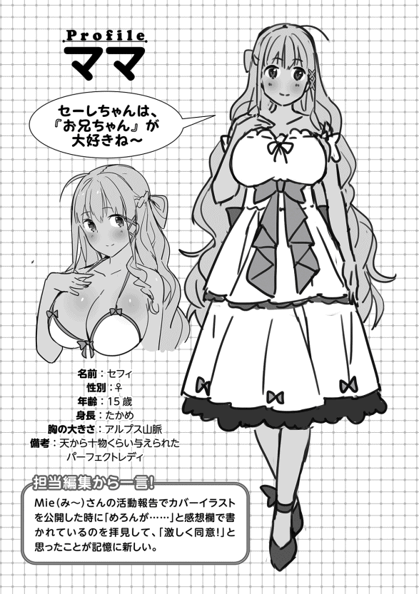
──本格的に暑い日が増えてきた。夜になると、虫の声なんかもよく聞こえる。
俺は涼しい時間帯に起きているとき、またいろいろと考えるようになっていた。前世について思うこともいろいろとあるが、今のホットな話題は「魔法」について。いや......魔導具について、と言った方がいいかもしれないな。
セーレたんがすやすやと眠っているすぐ隣で、俺は心地よい虫の声とハニーの寝息をＢＧＭに、魔導具の明かりが消えた薄暗い天井をぼーっと見上げていた。
「......むー」
あの光球を初めて見た後も、誰かが道具なしにそれらしいものを使っているのを見たことはない。まだ断定するのは気が早いが、この世界での魔法は必ず魔導具を介する必要があるのか......あるいは、特定の才能か何かがないと使えないのかもしれない。この部屋の照明にも使われているくらいだし、むしろ特殊な力を誰にでも簡単に使えるようにと作られたモノこそが魔導具である、という気がする。
「......」
俺の知っている限り、魔導具には人の魔力が必要。常に送り続ける必要ないのかもしれないけど......時間が経つと効果がなくなってしまうことは、天井の明かりを見ても間違いあるまい。つまり、魔法の道具とはいっても「夢の永久機関」などではなく、人からのエネルギー供給が必要だということ。
そして人間の──俺自身の中にも、きっとその魔力があるハズなのだ。
その証拠に。
「すぅ〜......」
隣で気持ちよさそうに眠っているセーレたんからは、今でもそれらしいモノをひしひしと 感じるんだよね。
最初は、美少女すぎてオーラがほとばしっているのかと思っていたのだが......。
「......」
誰かが聞いたら思いっきり笑われそうなんだけど、実はお袋からもビシバシと感じていたので、異世界とはそういうモノなのかと本気で思いかけていたのだ。しかし、チャロちゃんにもそこそこ感じられたオーラは、なぜかマールちゃんやアナさんからはあまり感じられなかったので、その説は否定された。ちなみに親父も──美少女ではないのは当然として、やっぱりイケメンなのにオーラ的なものはそれほど感じない。
となれば、それこそが「魔力」なのではないかと、俺はそう考えているのである。
「うー」
で、肝心な俺自身は......まったく分からない。悲しいくらいに、まったく。
自分自身のだからこそ分からない、というのでなければ、俺は才能ナシということになってしまう。
俺と双子だろう天使ちゃんがバリバリなのだから、俺だってそれなりにあるものだと......信じたい。
「......」
俺はゆっくりとまぶたを閉じた。ぼんやりとカーテンから漏れていた光さえもなくなり、俺の視界は真っ暗になる。そして俺は、俺の中にあるハズの、魔力的なマジカルパワーを探ってみる。
目を閉じたのは感覚を研ぎ澄ますためだ。決して、悲しくてちょっと涙が出てきそうになったからではない。
そんなモノより、俺は魔力的な何かに出てきてほしいのだ！
さあ俺の才能よ、カモーン。恥ずかしがらずに出ておいでー！
「うー」
「うううーっ！」
「......ふぅ」
気張りすぎて疲れた。赤ん坊の体力は少ないのだ。
それに、あんまり力 むと下半身から違うナニカが出てきそうで怖い。それは勘弁である。
「......ふぁあ」
力を抜いていると、だんだん眠たくなってきた。......フッ、今日はこのくらいにしておいてやろう。魔法は一日にしてならずと言うしな......言わないか？
俺は自分自身に捨てゼリフを吐き、ついでにため息も吐き出してから寝ることにした。
セーレたん、おやすみー。
また何日か経ったある日。今日は親父が休みらしく、朝から俺達の部屋に遊びに来てくれていた。
「は〜い、きれいになりまちたね〜♪」
「あはー」
お袋にオムツを交換してもらい、身も心もスッキリ！ ......日に何度も替えてもらっているのだ。とうに悟りも瞳孔も開きまくっている。
ついでにチャクラも開いてくれれば、俺にも魔導具が使えるようになるかもしれないのになー。
「ほほう、ибХно ──」
ラフな服装の親父がお袋の肩の後ろから顔を出し、恐らくはお袋の手際の良さをほめたのだろう。お袋が嬉しそうに笑っている。
ちなみに親父も、何度も俺やセーレたんの世話を手伝おうとしてくれたことがある。イケメンで剣術の腕前もすごくて、更には赤ん坊の世話まで積極的に手伝おうとするなんて、なんと理想的な父親なんだろうか......。
だが実は、親父はあまり手先が器用ではないらしい。おっかなびっくりな手つきでセーレたんを逆に怖がらせて何度も泣かせてしまうなどして、今ではすっかり懲りてしまったようである。
親父には悪いけど、目の前にでっかい手が迫り来てブルブルと震えていたら、怖くて泣きたくなる気持ちはよーく分かる。俺も不安で硬直したもんなぁ。
しかし、俺達の抱っこの仕方だけはなんとかマスターしている。なるべくガマンしていた俺のときはともかく、初めて天使ちゃんを泣かせずに済んだときなんて、むしろ親父の方が大はしゃぎをして、セーレたんが蒼い瞳をまん丸にしていたことを覚えている。
「はははっ」
「あ〜」
お袋が汚れ物を持って部屋を出ていた間、親父は俺とセーレたんを交互に抱き上げ、高い高ーいをしては嬉しそうに笑っていた。
「......はい、ジャスちゃ〜ん」
「おおー！」
お袋が戻ってくると、親父と二人で俺達を絨毯の上に下ろしてくれた。ふかふかのソファーも悪くないが、広い絨毯の上はそれはそれで魅力的なフィールドである。メイドちゃん達が毎日ちゃんと掃除してくれているから、ゴミなんて落ちていないしな。
まだ一人ではお座りできないのだが、少し支えてもらえれば一応はできる。広い部屋を見渡すと、そびえたつ家具が小 ジャレた高層ビルやマンションのように見えてきて、けっこう楽しい。向かいの妹ちゃんも親父に背中と頭を支えてもらい、きゃっきゃと笑っていた。
朝の光が窓から降り注ぎ、可愛らしい笑顔をよりいっそう輝かせる。まさしく、地上に舞い降りた天使であった。
「うふふふふ〜。さあ、ジャスちゃん、セーレちゃ〜ん」
しばし俺のことも親父に託したお袋は、タンスの上のぬいぐるみや、部屋の隅っこにあったオモチャ箱らしいところからオモチャを持ってきて、俺達の周りに置いた。セーレたんはそれらを見てますます瞳をきらめかせ、俺は俺で異世界の赤ちゃん用オモチャの数々に、それなりの興味を引かれてアレコレと視線を動かしていた。
謎の動物のぬいぐるみや、獣耳 としっぽのついたお人形。そして、フェルトのような布でできているらしい、派手な色のブロックなどなど。日本のオモチャですらそんなに詳しくはないが、向こうにもありそうなモノも多い。赤ん坊の喜ぶオモチャは、世界が違っていてもそれほど変わらないのかもしれない。
今度は親父のあぐらの上に座らされると、親父は周りにあるいろんなモノを取っては、俺の前に見せてくれた。見るだけではなく、もちろん触らせてもくれる。
「おー？」
ほほう。この布製のピラミッド、中に鈴が入っているのかー。叩いてみると、かすかに音が聞こえる。なかなか粋 な作りである。いぶし銀だねえ〜。
「はははっ、ジャスは──」
なんにでも興味を示す俺の様子が面白いのか、親父が何やら言いながら穏やかに笑った。お袋もセーレたんをひざに乗せ、俺を見てにこにこしている。
向こうの方が明らかに座り心地がよさそうだけど......ま、それは言うまい。
「これはどうだ？」
「おおー」
このぬいぐるみっぽい人形は、なんと中に柔らかい針金が入っているらしい。ポーズを自由に変えられて、かつ固定できるのが魅力だな。かなり力がいるけど。
ちなみに今は、手足が人体構造的にあり得ない方向に折り曲がっていて、猟奇事件みたいになっている。
「うーうー」
......はい、私が犯りました。
哀しい事件であった。
「ああ〜ん。あ〜っ」
俺の脳内二時間サスペンスが佳境を迎え、崖の上で一部始終を語り尽くした犯人（俺）が逮捕・連行されていくシーンをバックに、スタッフロールと女性ボーカルの主題歌が流れ始めた頃。セーレたんは背中を預け、笑っているお袋を見上げておててを伸ばしていた。
それに気づき、お袋は頭をなでなでしてから、手近に置いてあったぬいぐるみを取ってセーレたんにも見せてあげる。あっちの方はまだしっかりと、存命していそうなポーズであった。
ちなみに、俺もよーく観察してみると......。
四本脚でしっぽと耳は長く、だけど鼻は小さく、代わりに額には小さな角があって、鋭そうな牙もあるけど顔立ちそのものはわりと愛らしく、そして全身はピンクでモコモコしている──という生物？ で、あった。
今のこのときまで、まったく俺の目に留まらなかったことが不思議でならない。
「......う〜？」
俺の感性ではファンシーとファンキーの中間あたりに位置づけされる謎のオブジェクトを前に、セーレたんは澄んだ瞳をぱちぱちとを瞬かせ、その頭をわずかばかり斜めに傾けた。至極 真っ当なリアクションである。
それにしても......コレ、この世界には本当にいるのか？ セーレたんは文句なくキュートだからいいとして、見上げると親父まで首をひねっているぞ。もしかして、錬金術か何かの産物？
だがお袋はそう思わないのか、未知の物体 をセーレたんの前で小刻みに振りながら、いつも通り綿菓子のような微笑みを浮かべている。
「うふふふふふ〜♪ 可愛いでしょう〜？」
ひざに抱く娘とまったく同じキレイな瞳で、小首を傾げながら同意を求めるように俺と親父を見つめてくるのだが──。
「い、いや......う、うぅむ」
「う......、うー？」
夫と息子は、何も言えなかった。
お袋様の問いかけには笑ってごまかし、未確認動物 で遊び始めたセーレたんの無邪気さに頬を緩めた俺達。なお、ちっちゃなおててに持つには少し大きいので、絨毯の上に降ろしてもらって例のブツを転がして遊んでいる。「ぶーぶー♪」という感じで。
「ほら、ジャス」
「おー」
そして俺も同じように、親父から次々といろんなモノを手渡されてはいじくり倒す遊びを続けていた。コレが意外と楽しく、また異世界文化の理解にも役立つのであなどれない。そこでビックリしたのが、いかにも男の子が好きそうなオモチャの中で、箱に四つの車輪のついたモノがあったことだった。
まあ......少し考えてみると、荷車や馬車みたいなモノさえあれば、異世界にも普通にあっておかしくはないんだけどな。その発想がすぐに出てこなかったので「まさか自動車かっ!? 」と目を見開いてしまったのである。
ところで今、その車は絨毯の上に置かれ、俺の手によって前後に動かされている。ぶーぶー。
「ははははは」
「うふふふふ〜」
少しずつ気温の上がってきた、明るい部屋の中。親父とお袋は寄り添うように座って手を握り合い、俺とセーレたんが遊ぶ様子を眺め、とても幸せそうに微笑んでいた。
「うーうー」
あはは。まったく、お似合いすぎて笑うしかない。
「......おお！」
俺は俺で、いかにして車輪が絨毯の毛に絡まないで済むかを工夫しながら遊んでいると、不意に親父が声を上げたのでそちらを見た。すると親父はひざを立てて少し前に出て、そのまま床に両手をついて四つんばいになった。いわゆる「お馬さんスタイル」である。
続いてお袋も「あらあら〜」と笑いながら、スカートに手をやりながらゆっくりと立ち上がる。
「......」
おいおい、いくらラブラブだからって朝っぱらからそんな──。
というジョーダンを頭に浮かべる間もなく、俺は背後に回ったお袋によって持ち上げられて、親父の背中に乗せられた。
......あれ、いつの間に俺の後ろに？
「おおーっ！」
新しい遊びに、俺の疑問はどこかに飛んでいく。かなり不安定だけど、すげー背筋だ......。
それに、この目線の高さ。ソファーに座らせてもらったときよりも高くなった。さすがにベビーベッドには及ばないものの、下を見るとちょっとスリルを覚えるほどである。
決して悪くはない、それどころかけっこうテンションが急上昇しているのだが......さっきまで後頭部全体に当たっていたクッションの、なんとも言えぬ柔らかさにはさすがに及ばない。母は偉大だ。
「うふふふ〜。さあ」
「ああ」
お袋が声をかけると、親父はうなずいてからゆっくりと四つんばいで歩き始めた。
おおっ、背筋がっ！ 肩甲骨がぁー！
「あーお♪」
コレは楽しい！ 馬というよりは象か恐竜にでも乗っているような気分だが、波打つ親父の背中に這いつくばるのは、なかなか非日常的な経験であり、男の本能的な冒険心を刺激される。お袋も、隣をゆっくりと歩きながら俺の身体を支えてくれているから、スリルはあっても危険は感じないし。
「うふふ〜。ジャスちゃん──」
「はっはっは！」
お袋は女神様のように上から俺を見守り、親父は俺のはしゃぐ声を聞いて笑い、ますます身体を揺らす。
赤ん坊の身体は、なんて不自由で不便なモノなんだと、心の中で悪態をついたことも数知れないが──。
「あははー！」
こういう「家族との触れ合い」が素直にできるのって、せいぜい幼稚園くらいまでだよな......。ガキんちょの年になったら、さすがにこっ恥 ずかしくって頼めないし。
普通なら、大きくなったら忘れているハズのこんな経験も......きっと俺は、これから何年経っても覚えていられるだろう。
「......」
神様なんてモノが、本当にいるのかどうか知らないけど。
このことについては、ちょっと感謝しないといけないかもしれない──。
「あああ〜んっ！」
「......ぅ？」
大きな声が耳に入り、我に返った。ワイルドなお馬さんの上から見下ろすと、セーレたんが俺に向かって一生懸命に両手を伸ばしている。
ずっと遊んでいたハズの謎生物は、その隣にころんと横たわっていた。
「はう〜ん、あぅ〜......」
「......」
ただ、ぬいぐるみに飽きただけなのかもしれないし、両親を独占している俺がうらやましくなったのかもしれない。
でも、まっすぐに俺に視線を向けてくれるあの子を見ていると──都合のいい解釈なんだろうが、何よりも俺のことを求めてくれているように見えて、すごく嬉しかった。
「おおーっ！ あーっ！」
親父の歩みが止まっていたので、俺もなんと片手だけをあの子へと伸ばす。するとお袋が穏やかに笑い、それに気づいたらしい親父も俺達のことを見て、短い笑い声を漏らした。
「うふふふ〜。あらあら〜」
「フッ......」
再び動き始めた親父は、まっすぐあの子の元へ。セーレたんが親父の腕を叩き始めると、お袋は倒れたぬいぐるみを起こしてから、脇の下に手を入れてふわりと持ち上げ、そして俺のすぐ後ろに座らせた。
すると、途端に嬉しそうな声で喜ぶ妹ちゃん。
「あはっ、きゃあぁあ〜ん♪」
「あははー！」
ぺちぺちと後ろから頭を叩かれるが、痛さなどなく、出るのは笑い声だけ。お袋も俺達を両手で支えながら、本当におかしそうに笑い始める。
親父も、なんとか俺達のことを見ようと首をねじり──。
「ううッ!? 」
背中の水平を保ちながらムリヤリ振り向こうとした結果、どうやら首に痛みが走ったらしい。無理はいかんよ？
「......ぐむむ」
そして熊のごとく巨大な全身を震わせ、それから残念そうにうつむいた。背中から哀愁 が漂っている。
それを見て、お袋がますます笑う。
「まあ、あなたったら......うふふふふ〜！」
「......ははは」
親父も下を向いたまま、小さく肩を震わせた。
もちろん、俺とセーレたんも。
「きゃあぁあああ〜ん♪」
「あははははー......おほうっ!? 」
ちょっ!? せ、セーレたん、髪は引っ張らないで！ 抜けたら困るッ!!
遠くから鐘の音が聞こえてくるのも気にせず、俺達は疲れるまで思いっきり笑ったのだった。
──最近になってひとつ、分かったことがある。
「うひぃ......」
この世界にも、セミはいるのだと。
眩しいのを通り越して、目に痛みさえ覚えるほどの日射し。メイドちゃんズがカーテンを閉めてくれているが、そうすると今度は、窓は開けてあっても風の通りが悪くなってしまう。
幸いなことに、前世と比べれば湿度は大したことはないようだが......いかんせん赤ん坊というのは新陳代謝が活発で、体温が高い。実はよくは知らないけど、理屈から考えるとたぶんそうだろうし、実際にセーレたんに触ってみてもそんな気がするので、合っていると思う。
「やあん！」
「......うー」
手を取ろうとしたら、嫌がられてしまった......。だが、その気持ちはよーく解るので仕方がない。
「あぅ〜......」
「うひぃー」
セミの合唱が恨めしい。真っ昼間 から、気持ちよさそうに熱唱しやがって......。
だがこの世界でも、夏はやっぱりクソ──おおっと。
心の中とはいえ、この子の教育上、乱暴な言葉遣いはよろしくないかな？
「......はぁ」
この世界でも。
やっぱり、夏はうんち 暑いのであった。
「......」
日中に身体を動かすのは苦行すぎるので、暑い時間帯はなるべく魔力トレーニングに費やすようにしていた。心頭滅却すれば何とやら、である。
目を閉じて呼吸を整え、今日も俺はひたすら己の中にあるハズの、小さな宇宙的パワーを探ってみる。
「......ぁぅ〜ん」
「ぎゃっ!? 」
い、痛 ってえ......。セーレたんにおデコを叩かれた！
見ると、顔中に玉のような汗を浮かべたセーレたんと目が合う。ちょっと目つきがうつろだ。そして投げ出したような右手が、俺の額へ見事な逆水平チョップをお見舞いしていた。その手もやっぱり湿っている。俺はその手を取り、そっと下の方へと戻してあげる。
これしきのことで、お兄ちゃんは怒らないのである。
「やぁん！」
「ぎゃぅ!? 」
まさかの二度目!? 同じところに同じチョップを食らい、目の中に星が飛んだ......。
で、でも、お兄ちゃんは怒らないのだ。
「や〜ん！」
「ほっ」
......フフフ。三度目は受け止めたぜ。
実際のところは逆なのかもしれないが、それでも俺は精神的にお兄ちゃんなのだ。そう何度も──。
「あぁ〜ん♪」
「ぐふっ!? 」
今度は足を蹴られたあああ！ 可愛い顔して、なんという策士......。
さすが俺のセーレたんだな！
だが楽しそーな顔を見ていると、集中を乱されても怒りの気持ちなんてコレっぽっちも湧いてはこない。
とはいっても、さすがに「もっとぶって！」とは思わないけどさ。
「あ〜あ〜」
「......おー」
よしよし。お兄ちゃんが一人で心頭滅却してたから、退屈だったんだよなー？
でも、「それじゃあ一緒に心頭滅却しようぜ！」なんて言っても通じるワケがない。そもそも言えないし。
となれば......遊んであげるしかないな。
「いぇー」
「あぁん♪」
お腹の横を突っつくと、くすぐったそうに身体をよじる。可愛いなあ〜。
更に手を握ってグリグリと押しつけると、セーレたんは笑いながらくねくねし始めた。
「あははー！」
「きゃあああ〜♪」
仲よく兄妹でスキンシップ。これはこれで楽しいものだ。
たまに反撃されて俺もくねくねするが、お互いに疲れるまで身体のあちこちをくすぐり合う。こんな遊びができるのも、子供のうちだけだもんなー。
「......はぁぁ」
「ぁぁん......」
あー、暑い。背中の下も暑くて、俺達はたまに寝返りを打つ。だけど動ける範囲には限度があるので、やっぱり暑さ からは逃 れられない。袋小路であった。
少し前にマールちゃんとアナさんが来てくれて、身体を拭いてお着替えもしてもらったのだが、それでもすぐに暑くなってくるのである。
クーラー......は、さすがにないか。せめて扇風機でもあればなあー。
「......ぅぅ〜ん」
隣を見ると、セーレたんは寝苦しそうながらもお昼寝を始めていた。食事を兼ねた水分補給もしたし、確かに俺も眠たくはある。ヒジョーに寝つきにくいが。
「......」
鈍っている頭を商店街のガラガラのごとく、ゆっくりと回し始める。てきとーに頭を使えば、俺もじきに眠たくなるだろう。それに特賞はムリでも、ポケットティッシュくらいはもらえるかもねー......って、誰にだよ。
既に頭が残念賞だが、取りあえずは魔力について考えてみよう。
「くぅ〜」
今も横で眠っているセーレたんからは、「オーラ」のような何かが放射されているのが判る。
物理的には感じないのに、だけど確かに「何か」を感じるという感覚。......なんともモヤモヤする表現なのだが、まさに感覚的なモノなんだからどーしようもない。
「......」
そして厄介なことに、自分自身の「オーラ」は相も変わらずサッパリなのだ。
自分の体臭は自分自身では分からない......みたいなもの、なんだろうか。
「うー」
お袋とチャロちゃん以外のみんなだって、身体に触れた状態で意識すると確実に分かるんだけどなぁ。だから、俺だけないというコトは考えにくい。
俺には前世の記憶がある、という特異点さえ無視すれば。
「......ん？」
そういや、俺のこの「記憶」って、どこから来たんだ？
生まれ変わった「俺」の脳に刻まれていたとすれば、だったらなぜ、どうやってインストールされたんだ？ お袋のお腹の中で「俺」の身体が作られる過程を考えると、入り込む余地が見当たらない......。
ま、異世界なんだしただでさえ超常的なコトが起きているんだから、理屈では計り知れない何かが起こったのかもしれないけど。
だが、それでも敢えて理屈で考えるならば──俺のこの「記憶」は、外から「何らかの形」でこの脳に入り込んだ、とした方が理解しやすい。
でもでも......胎児の作りかけの脳みそに、決して少なくはない前世の「情報量」が、果たして書き込めるんだろうか？ そんなムチャをすれば「脳」が壊れそうだと容易に想像できるし......実際に最初の頃は、ちょっと頭を働かせただけで割れそうなほどの痛みを覚えたのだ。
だから、脳とは別の「ハードディスク」みたいなモノがあって、それが今の「俺」の中にくっついたのだと考えると、いちおうは納得できる。
パソコンに例えて考えてみると、な？
「くぅ〜......ん」
しかし俺の頭は、眉間 にしわを寄せて眠っている可愛いセーレたんと比べても、並外れて大きいワケではない。というか、ほとんど同じくらいだと思う。......そうでよかった。
ならば、かなり荒唐無稽 な発想だけど、「ハードディスク」になりそうなモノといったら──。
「......」
「魂 」──なんだろうか。
そして、魔力も同じく霊的なモノとだとするなら......。
我ながらムチャクチャすぎるこじつけなんだけど、いちおうの筋は通る......ような、気はする。
「うぅ......」
ああ、頭が痛くなってきた......いろんな意味で。だが、これ以上は考えてもどうしようもないし、証明する手だてもないしなぁ。
いい加減、精神的にも肉体的にも疲労がピークに達してきたので、俺もこのまま眠気に身を任せることにした。
このトンデモ仮説が、俺の魔力を感じられるきっかけにでもなれば、いいんだけど......な......。
──今日もまた、憎きお天道様がどこかへ行った。てやんでえ、もう来るなー。
「ああー」
「あぁ〜」
だけど、余熱はいまだにジリジリと俺達を熱し続けている。まったく、シューマイじゃねーんだぞ......。
みんながコマメに身体を拭いてくれたり服を替えさせたり、ときには扇子 みたいなので扇 いだりもしてくれるんだけど、それでも暑いものは暑い。
こういうときは、いつもみたいにタライみたいなモノでちゃぷちゃぷとするんじゃなくて、もっと大きなお風呂かプールでザブーン！ と豪快にいきたいモンだね。......ま、今の俺だと間違いなく溺れるけどな。
二五メートルプールで犬かきをしている俺とセーレたんの姿を夢見ていると、例によってちゃんとノックをしてから女の子の声が聞こえてきた。
「ジャスちゃ〜ん、セーレちゃ〜ん♪」
スカートの丈は長いまんまだけど、上は薄着になってますます目のやり場に困るようになった、お袋である。
「おー......お？」
だが返事をしたところで、入ってきたのがお袋だけじゃないことに気づく。なんと、夕方以降には帰ってしまうハズのアナさんもいたのだった。しかも、まだメイド服を着ている。
その上マールちゃんとチャロちゃんまで続々と入ってきて、ベビーベッドの四方を取り囲んだのである。
「あぁ〜ん♪ きゃあ〜」
「うー？ ううぅー？」
天使ちゃんは素直に喜んでいるが、俺は目を丸くして「？ 」がいっぱいである。
「さあ、早くしましょう」
「は、はいっ」
「分かりましたー！」
状況の解らないまま、アナさんの指示によってメイドちゃんズがベッドの金具を外していく。ちなみにお袋は、にこにこしながら俺やセーレたんと握手をして遊んでいた。
「それじゃ、Οεщкг 」
更に俺の聞き取れない指示によって、セーレたんはマールちゃんが、俺のことはお袋がそれぞれ抱き上げた。
......相変わらず、どうして埋まってしまわないかが不思議なほどに柔らかなクッションである。さすがは神素材だ。
「うふふ〜、ジャスちゃんはいい子ね〜」
「おー......」
いまだに「？ 」な俺を見て、お袋はふんわりとした笑みを浮かべた。
そして──。
「さあ、行くわよ」
「ええ〜♪」
「はい」
「はいー」
「う......？」
ワケの分からないまま、部屋の外へと連れ出されてしまった。
「......」
花のような香りのするお袋に抱かれ、俺はクッションごと上下に揺られながら廊下のあちこちを眺める。出してもらえたこと自体は初めてではないのだが、コレは非常にレアなことである。
天井には魔導具の明かりが等間隔に灯っており、外が暗くなってきた窓には列をなして歩く俺達の姿が映っている。壁は部屋と似たような感じで白く、床は古い学校のような木の板張りである。その廊下を靴を履いて歩いているため、コツコツと耳に優しい音がいくつも重なって聞こえてくる。
俺の前にはマールちゃんがいて、まさしくしっぽのような空色の髪を揺らして歩いている。ちょっと毛先が跳ねているところがチャームポイントだ。
チャロちゃんは最後尾らしく、出てきた部屋のドアを閉めてから小走りで追いついてきたようだ。前を向いているので見ていないが、小刻みに聞こえてきた靴の音がなんとも可愛らしかった。
「入って」
ほどなく廊下の突き当たりまでやってくると、左右と前にある三つの扉のうち、先に着いていたアナさんが、唯一空いている真ん中の部屋へとマールちゃんを誘導する。......初めての部屋だ。
ちなみに左の扉はリビングで、今までにも何度か連れていってもらったことがある。しかし、右の扉はいまだに謎である。
で、真ん中はなんの部屋なんだろうなーと首を傾げていると......お袋に続いてアナさんが中に入り、なぜだか目の前でドアを閉められてしまった。
俺とお袋、後ろにはチャロちゃんもいるのに、である。
「うぇ？」
少し見えた限りでは、あまり広い部屋ではなかったみたいだが......。謎である。
「うふふふ〜」
「ジャスさま、かわいいー♪」
「あうっ、あうーっ」
閉め出されたにもかかわらず、お袋もチャロちゃんもなぜかその場から動かない。そして二人がかりで頭や身体を触られてくねくねしていると、再び扉が開かれた。姿を現したのは、もはや言うまでもないアナさんである。
「さあ」
「ええ〜」
俺にも分かる短いやり取りがなされ、やっと中に通された。俺はクッションから顔を上げ、後ろを向いて初めての部屋を見る。
中は意外と狭い上にやや長細く、しかも正面には、入ってきた扉とはまた別の扉があった。そっちは引き戸である。先に入ったマールちゃんとセーレたんの姿が見えないので、二人はその先にいるのだろう。
「それじゃ──」
アナさんはお袋に何かを言い、そのもうひとつの引き戸の前で靴を脱ぐような動作をしてから、開けた引きとの向こうへとまた消えた......らしい。
お袋のアレにしがみつくような体勢になっているため、首が回らなくてよく見えないのだ。
なので、靴をどこかに置いたらしい音以外にも「パチン」とゴムのような音が二回ほど聞こえたんだけど、その理由については分からなかった。
「......」
それも謎といえば謎なんだが......それ以前に気になっていることがある。部屋の中には、雨の日とはまた違う、もわ〜っとした温かさと水の匂いが充満しているのだ。
この狭い部屋といい、コレってまさか──。
「チャロちゃん、お願いね〜」
「は、はいっ？ ......はうっ！」
とある可能性に思い当たったそのとき、俺の身体はお袋からチャロちゃんの手に委 ねられた。せいぜい小学校の高学年くらいの体つきであるチャロちゃんは、かなり成長した俺のことを重たそうに抱きかかえている。意外としっかり抱いてくれるんだけど、たまにフラつくときがあるのでちょっと怖い。下手に動かないよう、俺はぺたんこなチャロちゃんにしがみつく。
そうしていると、やがて後ろからご機嫌そうな、お袋の鼻唄が聞こえてきた。
「ふ〜ん、ふふ〜ん♪」
「お、奥さま......？」
ところが、チャロちゃんは不思議そうな声を上げてお袋のことを見上げている。左右のねこ耳が動き、お袋の方へと向けられた。
俺も気になったのだが......背後でふぁさっと布らしきモノが下に落ちた音がしたので、振り返るのは急きょ中止。
「あ、あのー......」
「ふふふ〜ん♪」
「......」
ひ、非常にイヤラシイ──じゃない、イヤ〜な予感がする。
そしてその予感は、一寸たりとも間違っていなかった。
「ジャスちゃ〜ん♪」
「ぶはああっ!? 」
横から顔を出すお袋。
思った通り、ヴィーナス様 が誕生しているううううーーーーーーっ!?
「じゃ、ジャスさまっ!? 」
「あら〜？」
「けほっ、けほっ......！」
思いっきりむせた俺の背中を、二人が優しくなでさすってくれる。だがそれどころではない。
もしかしなくても──ココは脱衣場。
俺達はこれから、タライではなく、初めて本物のお風呂に入れられるところだったのだ！
「ジャスちゃ〜ん、お風呂でちゅよ〜♪」
「......」
食事のときには毎度おなじみの、ダイレクトなクッションに抱かれて風呂場へと連行される。
今日は、更に輪をかけてダイレクトだけどな......。
「お、おおーっ」
俺の出した声が、わずかに反響して聞こえた。風呂場には特有の湿気と温かさ、そしてお湯の匂いと薄い湯気が立ちこめている。家族全員で入れそうな広さだ。
ちょっとした旅館レベルだな......。
床にはタイルのように平べったい石が敷き詰められ、壁と天井もすべてが灰色の石──いや。つなぎ目が見えないから、ひょっとしてコンクリート？ ......とにかく、そう見える何かでできていて、無数の水滴が張り付いていた。天井には例によって魔導式の照明があり、窓は横の壁に一ヶ所だけ。高いところに四角くぽっかりとくり抜くように作られていて、そこから湯気が暗い外へもくもくと逃げ出していく。その代わりとばかりに虫の澄んだ歌声がかすかに飛び込んできて、豪華なお風呂に夏の風情を添えていた。
そして、浴槽 も奥にあるのだが......これがまたスゴイ。まるで御影石 のような模様の、黒くてツヤのある石のブロックで造られていた。深さはよく分からないけど、広さは風呂場全体の半分近くを占めていそうだ。
小さな子供だったら泳げそうだな......。いつかやってみようか？
その一方で、便器のようなモノはどこにも見当たらない。やはり西洋式ではなく、現代の日本式に近いようだ。あまりにスゴすぎて、シャワーらしきものがないことにむしろホッとしたよ。
もはや、俺の中にあった「ファンタジー世界」のイメージは粉々だ......。
「うふふふふ〜」
カポーンではなく、ポカーンと口を半開きにして風呂場を見渡す俺を見て、お袋が笑っている。灰色の風呂場に、アップにした金色の髪と白い肌が映えて眩しすぎる......。思わず目を逸らす。
本当はずっとキツく目を瞑 っていようかと思ったのだが、それではあまりに不自然かと思ったのでやめた。上半身については、毎日見ているから今更だしな。......それでも眩しいんだけど。
よって、注意するべきは下半分のみとなるワケだが、眼下にはまろやかなアルプス連峰がそびえているので問題ない。
......というか、お袋はよくこんな視界で普通に歩けるよな。足のつま先が見えんぞ？
「お、奥様？」
「あ、あんた、どうして......」
「うふふ〜。だって〜」
思った通り、ふにょふにょとした微笑みをたたえるお袋とは対照的に、マールちゃんとアナさんが戸惑いの声を上げた。二人とも、さっきの俺のようにポカーンとした顔でお袋を見ている。
まあ、それはそうだろう。なにしろ、メイドさん達は服を着たままなんだから。
「あはははは......」
出入口に立っているチャロちゃんもメイド服のままで、乾いた笑いを漏らしている。そんな中、お袋だけがヴィーナス様。
本来はその方が正しい姿ではあるけど、そりゃポカーンとなるわな......。
ちなみにメイドさん達は、全員がスカートを太ももの位置までまくり上げ、そこにヒモかバンドみたいなものを巻きつけて固定している。その状態でマールちゃんは胸元に天使ちゃんを抱いて、浴槽の側の床にひざをついて座っていた。アナさんはその横に立っている。
......普段は絶対に見えない生脚が思いっきり見えているので、コレはコレでかなり眩しい光景なんだけど。
「きゃあぁあ〜ん♪」
セーレたんがマールちゃんの腕の中で、手足を動かして喜んでいる。可愛いねー。......でも今は、あまり見てはいけない。
この状況から考えるに、恐らくお袋達にとっても今日が「初めて」なんだろう。それでアナさんが今から、「赤ん坊のお風呂の入れ方」をレクチャーしてくれるんだと思う。
そんなワケなので、俺とセーレたんも当然、生まれたままのスポポポポポーンである。
「うふふ〜。セーレちゃ〜ん♪」
「ああ〜ん♪」
「......」
だから、お袋は脱がなくてよかったんだよ......？
お袋に抱かれたまま、温かい湯船に首から下を浸けてもらう。浮力が身体を持ち上げ、まるで雲の上にでもいるようだ。
俺は目を瞑り、この世界で生まれて初めての本格的な風呂を堪能する。
「あはあー......♪」
極楽 だあー......。
入る前に石けんで洗ってもらったし、身体も心もスッキリ。幸せすぎて、スライムみたいに溶けちゃうかも。いつにも増して隅々まで洗われてしまった恥ずかしさも、お湯に溶けてどこかに行ってしまう。そのまま排水溝に流れてくれ。
「ひゃああぁ〜......♪」
横からも俺と同じように、極楽を味わっているセーレたんの声が聞こえてくる。入る前はかなり怖がっていたけど、マールちゃんにちゃぷちゃぷとお湯をかけてもらっている内にだんだんと慣れ、今ではすっかり蕩 けていた。もはや、宇宙が震えるほどの愛らしさである。
「はぁあ〜ん......♪」
お袋もまた、とても気持ちよさそうに──って、ため息混じりの声が色っぽすぎてヤバイな！ しかもなんか、俺に接触しているアルプス山脈がゆったり、ゆったりと揺れてるし。
......話には聞いたことあるけど、やっぱりソレって浮くんだな。都市伝説かと思ってた。
「ふぁあー」
さっきから、左半身に擦 れっぱなしのソレには目を瞑ることにして......俺は実際にも目を閉じたまま、とにかくひたすらに、無我夢中にお湯の温かさを堪能していた。
なぜならば。
「気持ち、いいわね〜」
「そうですね......♪」
「はひー。気持ちいいれふー......♪」
「本当、いいお風呂ねえ......♪」
「ひゃあ〜」
「......」
俺の周囲にいる、全員がヴィーナス様と化してしまったからである。元祖ヴィーナス様が一人ずつ順番に声をかけ、やがて全員を説得してしまったのだ。
「ふあー」
「うふふふ〜。ジャスちゃんは、特に気持ちよさそうね〜」
お袋の声にみんなが笑う。......気持ちいいのは確かなのだが、俺はそれを口実にしてひたすら目を閉じていた。出している声やため息も、半分はワザとである。もう、不自然とか言っている場合ではない。
まぶたを隔てた向こう側には、さぞ幻想的な雪景色が広がっているんだろうが......コレは紛 れもなく現実。
お湯は無色透明であり、しかも意外と浅くて、お袋のアレの半分くらいまでしか届かなかった。湯気も薄く、視界をさえぎるほどではない。ましてや、どこからともなく「謎の光」が射し込んで、女性陣のアレやコレを都合よく隠してくれる──なんてコトもあり得ない。
せっかくの魔法なんだから、天井の照明にそんな機能があればよかったのに......。
「はふー」
ああー、心臓がエライことになっている。目を瞑ったら瞑ったで、今度はお湯とお花畑のような香りがより強く感じられ、かすかな音や声なんかもいっそうよく聞こえてくる。おかげで、「気持ちいい」という単語を完璧にマスターしてしまった。
いくつも聞こえてくる吐息の、なんと艶 っぽいこと──。
「ひゃあああんっ!? 」
「......!? 」
な、なんだっ!? 今の甲高い声はチャロちゃんか！ ジャブンとお湯をかき混ぜたような音も聞こえたけど、いったいナニが？
「ああー、もうっ！」
「ふふふふふっ！」
「あらあら〜、チャロちゃんったら──」
チャロちゃんがすねた様子で何かを言い、それでみんなが笑っている。大したコトじゃないってことは分かるけど、何があったんだろうか......。
と思っていると、その理由が判明してしまった。
「あうっ!? 」
お、俺のおデコに冷たい何かがあああーーーー!! ......って、もしかして水滴か？
つい目を開けてしまうと、お袋が俺を見下ろして笑っていた。
「うふふふふふ〜。あらあら〜」
そして、温かい人差し指でおデコを拭ってくれる。ああ、ビックリしたー。
横からマールちゃんとチャロちゃんの笑う声も聞こえ、アナさんもぷっと噴き出していた。......もちろん、そっちの方は絶対に見ないようにする。
そして、心臓をバクバクさせながらもほっとして再度まぶたを閉じたところ、笑い終わったマールちゃんが一転して、何やらしみじみと呟いた。
「はあっ。奥様もアナさんも、大きいですよね......」
「......」
一部の単語が省略されていたものの、それでも意味はよーく解った。解ってしまった。
こういうベタな会話って、実際にあるんだねえ......。
「ですよねえ......。わたしも──」
続いてチャロちゃんが大きなため息をつき、うらやましそーな声色で言葉を続ける。
コレもまた、なんと言っているのかは想像がついてしまう。
「うふふふふ〜。チャロちゃんもマールちゃんも──」
お袋が何かフォローしているようだ。だけど俺も、二人はむしろこれからだと思うぞ？ そういう歳だと思うし。......お袋も見た目通りの年代だとすれば、更なる進化の可能性を秘めていることになるのだが。
な、なんということだ......。
「あう〜ん」
しかしお袋がそうならば、気持ちよさそーにしているセーレたんも、将来はかなり明るいということになるよな？ ま、仮にそうでなかったとしても、その魅力が色あせることはあり得ないんだけどな！ 色気が増すか可憐さが増すか、それだけの違いである。
一方、アナさんは疲れたようなため息をついていた。
「はぁ......。でも、大きいと──」
その後の言葉はちゃんと聞き取れなかったが......これもやはり、おおよその意味は推測可能だ。そうね〜って、お袋もしみじみとうなずきながら相づちを打ってるし。
俺が大きくなったら、肩叩きでもしてあげよう。手作りの回数券でもあげようかね？
「......」
ところで......だんだん言葉が理解できるようになってきたのはいいんだけど、そのせいでガールズトークまで聞いてしまったな。不可抗力とはいえ、心の中で謝っておこう。ごめんなさい。
だけど、この世界の女の子もそういうコトって気にするんだな......。
耳元で聞こえるお湯の波打つ音と、まだ何やら聞こえてくる中でひとり感心していると、アナさんがパンパンと手を叩いて女の子達のお喋りを中断させた。
「さあ、そろそろ出るわよ」
「そうね〜」
「分かりました」
「はーい！」
「......ふひぃ〜」
た、助かったあー。少し頭がぼーっとしてきていたので、そういう意味でも渡りに船だ。
こうして初めてのお風呂は、気持ちよかった以上に疲れてしまったのであった。
早く、一人で入れるようになりたいものだ。
いつか、湯船を赤く染める前に......。
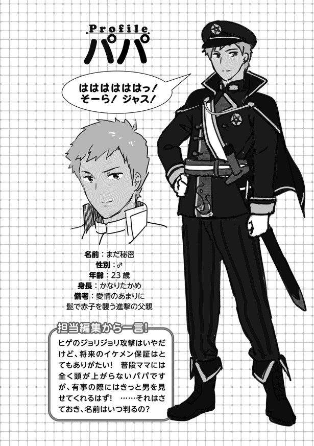
セミの大合唱も気温も、どうやら峠を越した模様。まだ暑いことに変わりはないけれども。
今日もまた見事な、日本晴れならぬ異世界晴れである。
「きゃあ〜っ！ あぅあう〜」
「んおーっ」
日中は触れ合うことをちょっと嫌がっていたセーレたんだったが、最近はまたくっついてくれるようになった。自力で身体の向きを変えるのが容易になってきたのもあり、ころんと転がってはぴたりとひっついてくるのだ。可愛いったらありゃしない！
それに心配していた俺の髪も、触ってみるといつの間にかイイ感じになってきているようだし......しっかりと風を受け止め、まさに順風満帆である。
「あむぅ〜ん♪」
「おふっ？」
心なしかふっさり感の出てきた自分の頭を感慨深く触っていたら、その手を天使ちゃんに取られた。で、可愛らしいお口にそのままぱくり。
俺もその気持ちは分かるのだが、近頃どうも口の中のムズムズが治まらないんだよねー。だから何かを噛んでいたくなる。俺はたいてい自分の指で済ませているんだけど、セーレたんはなぜか半々くらいの確率で俺の手を取りに来るのだ。
別に「きちゃない」だなんては思ってないぞ？ ベタベタにはなるけどな。
ちなみにそんなときは、見られないように気をつけながら自分の服で拭っております。
「あむあむ〜」
「おおーぅ」
歯ぐきを使った甘噛 みをされて、なんともくすぐったいような──そして、ビミョーに圧力が強いので痛い一歩手前の感覚。アゴの力というのは、意外と強いものなのだ。
......恐らくは、歯が生え始めたんだろう。着実に成長しているんだなぁ。
「あはははははっ♪」
そんな俺達を、チャロちゃんが柵越しに眺めて笑っている。ピンクにオレンジの混じったパパラチアピンクの髪に、黄色みの強い瞳はひまわりを思い起こさせる。
ちなみに「パパラチア」というのは......どういった意味かは知らないけど、ピンクとオレンジの中間を指す言葉で、サファイアによく使われる。というか、それ以外に見たことはないな。前世の小さかった頃に新聞のチラシの写真で見て、その色のキレイさが今でも印象に残っている。
「大特価！」と書かれていた値段の、ゼロの多さも合わせて。
そんな少女が涼しそうな明るい色のワンピースを身にまとい、ねこ耳としっぽを動かしながら小さな八重歯を除かせて明るく笑っているのを見ると、こっちまで明るい気分になってくる。今日はメイド服じゃないところを見ると、たぶん休みなんだろう。チャロちゃんもマールちゃんも数日おきに休みがあるらしく、だけどそんな休みのときにもしばしば俺達の顔を見に来てくれたり、遊んだりしてくれる。
チャロちゃんは俺達を見て顔をほころばせ、頭をなでたり手のひらを突っついたりしてくる。特に、突っつかれたときにその手を掴むと、すごく嬉しそうに笑ってくれた。それこそ、ひまわりの花が咲いたように。
「あはっ♪」
一体どんな事情があって、ウチで住み込みで働いているのかは知らないが......。そんなことなどおくびにも出さないこの子は、まだまだ幼さの抜けきらない見た目によらず、とても強い子だと思う。
「あら〜、チャロちゃ〜ん」
ベタベタになった手をチャロちゃんに拭いてもらっていると、今度はお袋が入ってきた。白い服が好きらしいお袋だが、肌の白さはそれにも負けないほど明るい。更にはボリュームあふれる金色の髪が合わさり、ただ姿を見せただけでも部屋の中が数段明るくなったような気さえする。
「チャロちゃん、お出かけしていなかったのね〜」
「はいー」
お袋はベッドの側まで来ると、チャロちゃんと何やら話を始めた。いちおうは主人と雇われ側という関係だけど、本当の家族のように仲がいい。他の家やこの世界の世間一般がどうかは知らないが、この家のそういったところはすごくいいと思う。
それにしても......薄着だと、お袋の白いめろんが強調されてヤバイな。鎖骨のすぐ下が踊り場と化している。
身長差もあって、チャロちゃんもお袋が笑うたびに目と鼻の先で揺れるソレに、ときどき目を奪われていた。
「さあ、おっぱいのお時間でちゅよ〜♪」
「う〜？」
「ぉ？」
俺のお腹の上によじ登ろうとしてくる天使ちゃんと戯れていると、お袋がこっちを向いてお姫様のような笑みを浮かべた。隣のチャロちゃんもそれを聞いて、すぐにベッドの金具を外し始める。それから柵を外側に倒し終わると、近い方にいたセーレたんは直接お袋が、そして俺はベッドの反対側に回ったチャロちゃんが抱き上げ、お袋のところへと連れていってくれる。
お袋の白いめろんは、既に二個ともご開帳済み。いつもながら、赤ん坊でさえ目を奪われるほど、芸術的な美しさである。チャロちゃんも俺を抱えたまま、ほえ〜っと感嘆のため息をついていた。
「はい、召し上がれ〜」
お腹が空いていたらしいセーレたんはすぐに嬉々と飲み始め、俺も心の中で手を合わせてから、おもむろに口を近づける。
「......」
いつ聞いたのかも忘れてしまったが、赤ん坊に歯が生えてくる時期になると、お母さんはかなり痛いんだってな......。セーレたんに気をつけてと言ってもさすがにムリだから、せめて俺だけでも気遣うようにしよう。
変わらず優しい微笑を浮かべているお袋を見上げ、俺はそう思った。
夜に鳴く虫の声も変わり始め、どことなく秋の気配を感じるようになってきた。まだ気温はそれなりにあるけど、日本みたいにムシムシしないのがいいね。
「むう〜んっ」
「おふぅ」
セーレたんは俺の手を枕代わりにして、そこから更に転がって俺の上に乗ってこようとする。そういう遊びが、最近のお気に入りらしい。湯上がりの身体はポカポカとしていて、ふにふにとした柔らかさも心地いいのだが......なにしろ、俺とこの子は双子。ほとんど同じ成長度合いである。
......赤ん坊の頭って、けっこう重たいのよ。脇腹にゴリゴリすると、コレが地味に痛い。
「へあ〜ん！」
「うー......」
それとなく頭をシーツの上に戻そうとするのだが、木製のおしゃぶりを咥えた妹ちゃんはいっそうしがみついてくる。ちなみにこのおしゃぶりは、親父が買ってきてくれたらしい。
もちろん俺も咥えている最中で、口に入れるところだけはゴムのような素材が使われている。特に味はしないし、歯ぐきで噛んでも痛くないので俺も気に入っている。前世の記憶があるだけに多少の抵抗はあったのだが、たまーに咥えさせてもらうと気持ちが落ち着くのは確かである。いい仕事ですねー。
「ふぅ〜ん......♪」
しばらく押し合いへし合いをしたところ、やがてセーレたんは俺の脇の下あたりに頭を落ち着けることにあいなった。木のおしゃぶりの先が脇腹をぐりぐりしているが、上に乗られるよりはいいのでガマンしよう。
さて......これから眠くなるまで、いつもの魔力トレーニングをしようか。
「......」
よくマンガやアニメなどで「身体の奥底に眠る力が〜」みたいなのがあるけど、この世界の魔力もそれに近いんじゃないかと思っている。あるいは、「血液の流れと同じく、気の流れが〜」みたいなモノかもしれない。他にも、ファンタジーモノなんかにはよくある「空気中に漂うマナを集めて〜」というパターンも考えたが、実際に目にする魔導具の数々から察するに、外からというよりは人間の体内から出てきたモノを使っているように思う。でなければ、天井の明かりなんかは永久に点灯し続けているハズだからな。
まあ、可能性だけならいくらも考えられるので、今は内側にあるモノとしておく。
「ふぅ......」
目を閉じてゆっくりと深呼吸をし、心臓の音に耳を傾けながら、己の中にあるであろう「何か」が循環しているイメージを思い描く。だんだんと大人しくなってきたセーレたんの発する「オーラ」にも、意識を割いてみるといいかもしれない。
お手本なんてどこにもないのだから、思いついたことはとにかくやってみる。
「......」
天使ちゃんのオーラを手がかりに、俺の中にもよく似たものがないか、探してみる。ちょうどお風呂上がりで血行が良くなっているハズだから、それも手がかりになるかな？
ほぼ毎日やっていることではあるけど──今夜に限っては、何故だか上手くいくような気がしていた。
「んー？」
単に「流れ」を意識するだけでは、ちょっと弱いのでは？
ふとそう思い、その流れに手を入れるイメージを追加してみる。山の中で小さな清流を見つけて、それをすくってみるかのように。
「......んん？」
すると、指先にかすかな「何か」が触れたような気がした。思わず目を開けてみたが当然、その指は何も触れていない。
これは、もしかすると──！
「お、おおお......？」
な、なんかあるよ？ シャッチョサーン、ナンカアルヨー！
思っていたのより若干ハードな感じがするけど、確かに感じられるモノがある。実際の指には、なんにも触っていないのに！
「......ふにゅ〜？」
「あっははー！」
俺が大きな声を出したせいで、眠りかけていたセーレたんが目を覚ましてしまった。ぼんやりとした蒼い瞳を俺に向け、重たい頭をちょっとふらふらさせているのがコレまた可愛らしい。俺はそんな妹ちゃんに手を伸ばし、頭を優しくなでなでする。起こしてごめんなー。
「おおっ？」
なんか今、この子からほとばしっているオーラを、手のひらにも感じたぞ？ まさに雲を掴んだような感じで、空気抵抗みたいなものはなかったんだけど。
なでなでしているうちに妹ちゃんがまた目を閉じたので、俺もまた高揚感をなだめつつ目を瞑り、さっき感じたばかりのアレを再現する。
「......ん」
ずっと短時間で、あの指先を滑るような、硬いようで柔らかいような気もする不思議な感覚を指先に覚えた。なんとなーくだが、コツを掴めた気がするな。
そこから更に一歩踏み込んでみよう。触れている指先をもう一歩中へ突き入れ、意識を「流れ」の方へと移す──。
「あえ？」
なぜかビクともしませんよ？ 確かに押している感じはするんだけど、突き入れることができない。そして押そうとすればするほどに、その何か──つまりは俺自身の中にある魔力の、その大きさを思い知らされる気分になってきた。
コレが、俺の持つ魔力の大きさを示しているのであればいいんだが......。
でも、一ミリたりとも動かせる気がしないのは、一体どうすればいいんだろうか？ コイツを動かせなきゃ、魔導具に魔力を入れることもできないだろうに。
痔の薬じゃあるまいし、注入できなきゃ塗ればいいってモンじゃないだろう。
「......むー」
キレイな虫の声が聞こえてくる夏の夜。
どうにか大きな山を越えたかと思ったら、実はその「動かざる山」そのものを押して動かさないといけない、というムチャが待ち受けていた。
魔法への道は、一夜にしてならず......。
動かない。動かないよ。
「うぅぅ......」
とても巨大な、しかし決して硬いわけではない。むしろ柔らかい壁。
だがその壁が俺の上にのしかかってきて、まったく身動きが取れない──。
「──ん？」
「すぅ〜、すぅ〜」
そこで気がついて目を覚ますと、俺の腹の上で愛らしい天使ちゃんがすやすやと眠っていた。窓を覆う白いカーテンは明るく、部屋の空気は適度に涼しい。早朝かもしれないな。
ちなみにセーレたんは完全に俺に重なって乗っているのではなく、横からうつ伏せで上半身だけを乗り出し、まるでカタカナの「ト」のような形になっていた。ちょっとした横四方固めである。
そりゃあ、動けないワケですよ......。
お兄さん、知らない間に一本取られてました。
「おーぃ」
「すぅ〜♪」
返事がない。とても幸せそうだ。
しかし、赤ん坊のあんまり強くない身体の上に、中でも特に大きな頭が俺のお腹に乗っている状態。しかもこの子の左手は、服とオムツの上からではあるがソコにタッチ。......まさに横四方固めである。
さすがにずーっと乗られているのは厳しいので、ここはひとつグッと心をお兄ちゃんにして、眠れる妹様には目を覚まして頂きます。
「おーぃ」
「にゅう......？」
ぺちぺちと小さな手で背中を叩き、起きてもらう。その寝ぼけ眼 が俺の顔を捉えるやいなや、すぐに嬉しそうに変わって笑顔を見せた。
「んぁ......。あぁあ〜ん！」
「あはー！」
なんという可愛さだろうか。いや、なんとも言えまい。
意図せず反語的な表現になってしまったが、そのまま「ト」の字の体勢でハグを交わす。それでますます寝技で一本になっても、気にしなーい。
「あーう、あぅあぅ」
ところで、そろそろどいてくれない？
「きゃ〜」
やー。
......実際にそういった会話が成立していたかは知る由 もないが、いちおうそのつもりで声をかけてみたものの、とーっても無邪気な笑顔で見事に却下されてしまった。
「うーっ、ううーっ」
「あゃ〜？」
困った顔をして見せても、この子はお腹の上で愛らしく首を傾けるばかり。まあ、ちょっと重たいのは二、三歩譲るとしても......。
「あぁあー」
「あぁ〜ん♪」
君が触れている俺の下半身、かなーり濡れているハズなんだけどなあ。
お兄ちゃん、寝ているうちにヤっちゃってるんだって......。しっかりオムツが吸収してるけど、ばっちぃよ？
自分でトイレに行けないからとっくに諦めているが、こういうときに困る。まだ固形物を口にしていないのが不幸中の幸いだ。
「あうあうあー」
「きゃあ〜！」
短い手足をバタつかせてみるも、横四方固めは解けない。タップも意味が通じないし。
......どうしよ、コレ？
とほほーと途方に暮れていると、救いの女神様がやってきた！
「あらら〜」
いつものように優しくノックをしてから入ってきたお袋。カーテン越しの朝の柔らかな光が、その金色のウェーブがかった髪や、白い服の上から豊かな曲線を描く身体を照らす。寝ぼけた頭で彼女の姿を見たら、本当に女神様の降臨かと錯覚するかもしれない。実際、最初の何回かはそうだった。
「うふふ〜。二人で遊んでいたのね〜」
「あー」
「ひゃあ〜♪」
いえ、柔道の試合をしておりました。結果はご覧の通りです。
そんな冗談を心の中で呟いてみるも、お袋は思わず見とれてしまいそうなほどキレイな笑みを浮かべていた。
......ちょっと、スルーされてしまったような気分になった。
「さあ、セーレちゃ〜ん」
「にゃあ〜」
まるで子猫のような高い声で鳴くセーレたんを、お袋の手が抱き上げる。持ち上げるときに少し力を入れたように見えたのは、この子が順調に成長してきた証か。
「あらまあ〜、湿っているわね〜」
「やあ〜ん」
「......」
キミもそうだったんかーい。
のしかかられていたことにばっかり意識がいって、まったく気づかなかったぜ......。だがココはひとつ、紳士的な対応をしたということで納得しよう。
その間にお袋は「ちょっと待っていてね〜」と言ってセーレたんを俺の隣へ寝かせ、一旦この部屋を出ていった。
「あふー」
「きゃあ〜ん」
お袋はマールちゃんを伴ってすぐに戻ってくると、すぐに二人で俺達のおむつを交換してくれた。身も心もリフレッシュである。それから改めて、二人から順番に挨拶のキスをされる。
自然と俺達は笑顔になり、それを見た二人も目元に柔らかなアーチを描いた。いつものことながら、朝から眼福 どころではない。
敢えて名付けるなら「顔福 」である。
「それじゃあ、行きましょうか〜」
「おぉ？」
片づけも終わってこれから朝ご飯かと思いきや、お袋はそう言って再びセーレたんを抱き上げた。天使ちゃんは嬉しそうにしているが、どーゆーコト？
「さあ、ジャス様も」
「おおー？」
そうして俺も、マールちゃんに抱っこされた。春のうららかさを感じるお袋の笑顔も好きだけど、この娘の初夏のような──あるいは冬の小春日和のような、暖かさと涼しさが同居しているような笑顔も俺は好きだ。いつも、ふわりと爽やかな花を思わせる香りがすることも、そういった印象を抱かせる理由なのだろう。
ところで、俺達を外に連れ出してくれるみたいだが、いったい何があるんだろうね？ すぐに分かるだろうとは思いつつ、貴重な「お出かけ」に胸を弾ませるのであった。
俺達が向かった先は、この家のリビング兼ダイニング。風呂場にも通じる廊下の突き当たりの、左側のドアをくぐった場所である。そこは俺とセーレたんが寝起きしている部屋よりも、更に少しだけ広い感じがする。それほど物が置かれていないせいかも知れないけどな。
床は廊下と同様の板張りで、やや長方形気味の空間のちょっと手前側に、長めのテーブルが置かれていた。けっこう人数の多いこの家の全員が座っても、ひじをぶつけ合う心配はなさそうだ。表面はツルツルで、キレイな木目がよく映えている。今日はその真ん中に小さな円形のクロスが敷かれ、よく分からない紫の花が一輪、花瓶に挿して飾ってある。見るたびに置かれているものが違い、さり気なくオシャレだ。
そんなテーブルに、ラフな格好をした親父がひとり席に着いていた。俺達を見ると爽やかに笑う。
「おお、おはよう」
「あーう」
「あぁ〜ん」
俺だけでなくセーレたんもお返事をすると、抱っこしているお袋とマールちゃんも「えらいわね」と言って笑った。うむ、ウチのセーレたんはエライのですよ。
そして、俺の目には遠くてハッキリとは分からないが、奥には格子のはまった窓に沿ってキッチンが設置されている。ステンレスなのかどうかは知らないけれど、金属製のシンクもある。
つまりココは、リ ビングダ イニングにキ ッチンもついた、いわゆるＬＤＫなのだ。
「二人とも、おはよう」
「おはようございますー♪」
そこにアナさんとチャロちゃんが立ち、俺達に挨拶をしてから再び背中を向けた。チャロちゃんの白いしっぽがスカートの腰とおしりの間くらいの位置から飛び出し、上向きになってゆらゆらと揺れている。つけ根にリボンがついているので今は分かりにくいんだけど、そこは単純にぽっかりと穴が空いているのではなく、実はシャツの半袖みたいな筒状になっている。初めて気づいたときには「なるほど！」と思わず手を打ちたくなったものである。
シンクの隣にあるコンロらしきところには、金属の鍋が三つもあった。恐らくはそこから美味しそうな匂いが出てきて混じり合い、部屋中を満たしているのだろう。とても懐かしいような新しいような、なんとも不思議な気持ちになる。
それにしても......ここは本当に異世界なのかと、つくづく疑問になってくるほど設備が整っているよなあ。特に目を引くものといえば、キッチンの隅にレンガっぽい暖炉──壁の角に埋め込むような形になっていて、薪 か何かをくべるらしい部分の上がテーブル状になっている物があるくらいだ。理由は分からないけど、そこだけは魔力じゃないのか......？
だが、それ以外は前世と比べても違和感がなく、考え直してみるとかえってそれが疑問の種になってくる。どこまで文明が発達しているんだろうかと。
ちなみに隣が俺達の部屋で、位置的にもちょうどその辺りが同じ色の壁になっていたので、恐らくはココの暖炉と同じものだろう。つまり、コレで俺達の部屋も同時に暖めることができるってワケだ。
暖炉の反対側の壁にも窓があり、キッチンの窓と合わさってたくさんの光が部屋に満ち満ちていた。それで角部屋だということが解るんだけど、なのにドアがついている。ま、きっと勝手口なんだろう。
「さあセーレちゃん、お座りしまちょうね〜♪」
「ジャス様はこちらですよ」
俺がキョロキョロしている間に、俺とセーレたんは長方形のテーブルの短い一辺、俗にいう「お誕生日席」に連れていかれた。他のイスとは明らかに違う、いかにも子供用っぽい背の高いイスが二脚、並んで置かれている。背もたれとひじかけがついているヤツである。
今は外されてテーブルの上に置かれているが、専用のテーブルだってあるんだぜ！ いやっふー。
「じっとしていてくださいね」
「おーぃ」
セーレたんがお袋に同じようにされているすぐ隣で、俺もマールちゃんに専用席に座らせてもらう。ずいぶんと身体がしっかりしてきたので、座るだけなら余裕のよっちゃんである。......俺も前世の、やたら昔のネタに詳しい友達から聞いたことがあるだけで、ネタの起源とかはまったく知らない。よっちゃんって誰だ？
それはともかく、クッションを敷いてあるイスに座らせてもらうと、ひじ掛けの上にテーブル板が置かれ、俺がむやみに動かないようキッチリと固定された。落ちたらシャレにならない高さだもんなー。
「......」
イスの横から下を覗いてみると、ちょっと怖い。
「あああ〜んっ」
傾けた頭を慌てて元に戻すと、左のイスに座らせてもらったセーレたんが、こちらに向かっておててを伸ばしていた。イスどうしはわずかに離れていているけど、普通に触れ合うくらいはできる距離だ。身を乗り出さないといけないほどではない。
「おー」
だから俺も手を伸ばし、繋ぎ合う。
「きゃあ〜♪」
この子は本当に、触れ合うのが好きだね。ただ手を繋いだだけで、嬉しそうに笑ってくれる。
見ていると、どんなに苦労をしてでも守ってあげたくなるよ。
「うふふふふ〜。セーレちゃんは、『お兄ちゃん』が大好きね〜」
花咲くようなセーレたんの笑顔に、みんなも釣られて花を咲かせる。特にすぐ側に立っていたお袋は、思わずといった感じで天使ちゃんを抱き締めた。
「ああん、可愛いわあ〜♪」
「むぅ〜ん！」
そのせいで、妹ちゃんの顔が胸に半分埋まってるけどなー。
「......」
「おふっ？」
それを見て、マールちゃんがなぜか俺の頭を使ってマネをし始めた。が、メイド服の上からふにふにとするだけで、埋まるには至らず。
だけど十分なお手前だと思うので、できればマールちゃんには凹まないように言ってあげたい。顔福でありました。
なお、俺の代わりに親父がフォローしてくれないものかと目をやってみると......。
「ゴホン！ ......ンンッ！」
斜め横の席にいる親父は思いっきり明後日 の方を向き、わざとらしく咳 払いをしていた。そういったことは苦手なようだ。
ところで。
「......」
やっぱり、さっきお袋が言ったのは「お兄ちゃんが大好き」という解釈で間違いないんだろうか......。たまーに聞く単語なのだが、俺のことを指して使われているっぽいんだよね。
俺の願望からそう聞こえるんじゃないか──という可能性をなかなか否定しきれなかったんだけど、そろそろ断定してもいいと思う。
「......えへー」
別に弟がイヤというワケじゃないが、やっぱり俺としてはお兄ちゃんの方が嬉しい。やったね！
「あっ♪」
俺が笑ったのを見て、マールちゃんもなにやら嬉しそうな顔をした。
け、決して俺は、君の「ふにふに」に喜んだんじゃないぞ？ 違うからなっ！
「うふふ〜。よかったわね〜」
「むあっ、むぁうう〜！」
って、お袋も拍手しない！ 抱き締めたまんまだから、セーレたんの頭がドンドン埋まってる！
「ゴホン！ ゴホン！」
ほら、親父もさっきから咳ばっかりしてるし！
ちなみにキッチンに立っているアナさんは、振り返ってため息をつき......。
「......ぐすっ」
チャロちゃんはすぐに前へ向き直り、肩と耳としっぽをガックリと落としていた。
......そんな風になんだかんだとあった間に、朝ご飯ができたらしい。お袋は親父の隣に座り、アナさんの指示でチャロちゃんとマールちゃんが配膳をする。二人は俺達から見ると左側、出入口に近い方にいる。
上座 ・下座 という考え方はないのかな？ それと見た限り、今日の献立はパンとスープとサラダ......それと、おかずがいくつか。俺の目線の高さがテーブルのそれに近いため、残念ながらどんな料理なのかよく見えないのだ。
鼻をくすぐる匂いはヘルシーそうだが、置かれる皿の数が多いな......。朝からけっこうガッツリと食べるみたいだ。
「はい、旦那さまー」
「ああ、ありがとう」
チャロちゃんがお皿を置くと、親父は笑ってお礼を言う。相変わらずのイケメンっぷりである。
向かいのキッチン側の席にもお皿が置かれ、チャロちゃんとマールちゃんも一緒に食事を取るんだということが解る。一般的にメイドさんがどういう扱いなのかは知らないが、ここの家らしくていい。
「あ〜？ うう〜ん」
なじみのない匂いがするのが珍しいのか、セーレたんはすんすんと匂いを嗅ぎながら、興味深そうに配膳の様子を眺めている。俺も同じだけどな。
ちなみに、食後の団らんに俺達が連れてこられることは今までにもあったが、こうして食事が始まろうとしている場に俺とセーレたんが呼ばれたのは初めてのことである。まだ一緒に食べることができないのは残念だけど、この世界の食生活を観察できることは喜ばしい。
......いや。それ以上に、この一家の食事に一応とはいえ同席させてもらえたことが、純粋に嬉しい。
配膳が終わり、メイドちゃんズの二人も席に着いた。アナさんが座るらしい席にはお茶しか置いていないけど......通いのメイドさんなので、恐らくは自宅で済ませて来たんだろう。この部屋に来てから気づいたが、太陽の角度からして意外と時間は遅いようだからな。
そして最後にアナさんが座る──と思いきや。
なぜか彼女は再びキッチンに戻り、お盆に何かを乗せて、俺達の方にやってきた。で、専用テーブルではなく、その目の前にあるダイニングテーブルに何かを置いた。それから、それぞれ俺達に最も近い場所にいる、お袋とマールちゃんに声をかける。
「さあ、セフィ。マールも」
「ええ〜」
「はいっ」
「......っ！」
セーレたんが小首を傾げている隣で、俺は目を見開いていた。こ、これは......もしかして。
Ｒｅ ・Ｎｅｗ 食って、ヤツですかい？
「いい？ まず──」
アナさんは俺とセーレたんにヨダレかけを着けると、お袋の横に立って説明らしき話を始める。その隣にいる親父や向かいにいるメイドちゃんズも自分達の食事には手をつけず......と思いきや、アナさんに何かを言われ、ゆっくりと食事をしながらその話に耳を傾けていた。その様子を、セーレたんは自分の手の指を咥えてじーっと見つめている。
片や俺はというと、アナさんの話していることを聞き取ろうとするもイマイチ理解できず。加えてこれから初めて物を食べられるんだと思うと、ヨダレが出てくる一方でだんだん緊張もしてきた。
そういや離乳食って、あんまり美味しいものじゃないらしいって聞いたことあるけど、こっちの世界じゃどうなんだろうな......？
「......」
アナさんが器を持ち、小さな木のスプーンで中身をすくいながら説明をしている。やはりそれはトロトロで、一見すると白いおかゆのようであった。
となると、味も想像通りかな......。
次は実践しながらの説明なのか、アナさんは下にお皿を添えた状態で、すくったスプーンをゆっくりとセーレたんのお口へ近づけていく。
「さあ、セーレちゃん」
「んぅ〜？」
ところが、セーレたんは自分の指をちゅーちゅーするのをやめず、スプーンをじっと見つめては寄り目にするばかり。それはそれでおもしろ可愛いのだが、食事をさせようという本来の道からは外れている。まさに外道？
「ふふっ」
しかしアナさんは焦らない。赤ちゃんの様子を注意深く観察しているようで、あくまでも笑顔を絶やさず、スプーンを動かして興味を引いてみたり、不意にほっぺをつついたりしている。
そうして、しばらくトライしてみたところ。
「......ふぅ」
それなりに興味は持っているみたいだけど、結局セーレたんは食べようとしなかった。でもアナさんはムリをさせず、笑顔のまま小さくため息をつき、天使ちゃんの頭をなでなでするとあっさりスプーンを引っ込めてしまった。
「......」
家事や育児において完璧だと思っていたアナさんが、まさかの失敗？
初めての離乳食って、難しいもんなんだなあ......。
「それじゃあ、ジャス様に」
「おおぅ？」
ぼーっと眺めていたら、とうとう俺にお鉢が回ってきた！ 「行くぜハチ！」「ヘイ旦那！」ってなもんである。サッパリ意味は分からんが。
俺がそんなアホなことを考えている間に、アナさんは後ろから右側へと回ってきた。そしてお皿の中から離乳食をすくい直し、俺の目の前に持ってくる。
「さあ......あーん」
スプーンの中身を見てみる。やはりおかゆのように見えるそれは、何かをペースト状にしてあるようだ。とても粒が細かく......というか、粒らしい粒がほとんど見当たらない。そして湯気も見えず、適度に冷ましてあるんだろうなということが見て取れる。においも嗅 いでみたが、あまりよく判らなかった。
だけど見た目以上に、手間をかけて作ってくれたんじゃないだろうか......。そんな気がする。
「ふふっ」
「なぅ？」
左右に揺り動かされるスプーンを見ていると、もう片方の手でほっぺを突っつかれた。目線をあげてみるとアナさんは微笑んでいて、お袋達は興味深そうに俺の方を見ている。
「にゅ〜」
そしてセーレたんもまた、言葉通りの意味で指を咥えて俺のことを見つめていた。
「......」
初めての食事。確かに味や食感などにも興味はあるけど、それ以上に俺の身体はちゃんと受けつけてくれるんだろうか、という気もしてくる。
とはいえ、歯はそろそろ生え始めているのだ。自分で指を噛んでみると、下の前歯に当たる部分にわずかな硬さを感じるようになってきたし、歯みがき、というかマッサージらしきものは早い段階から既にやってもらっている。これもセーレたんはあまり好きではないようで、お袋達の手を焼かせていたりするんだけど。
離乳食を始める時期としては、今くらいがいいんだろうということは、俺にもなんとなく分かる。
......となれば、ここでも俺が率先してやっていくべきだろうな。
「んあー」
俺はドキドキしながらも、ヨダレのあふれそうな口を大きく開けた。するとアナさんは嬉しそうに口元を緩ませ、木のスプーンをゆっくりと口の中に入れてくれた。背後のお袋達もほっとしている様子が見えて、それだけでもやって良かったという気持ちになる。
「あむー......？」
おっ？ 思っていたより美味しいぞ？
かなーり薄味ではあるけれど、それはおっぱいも似たようなものだ。だけど舌と口の上のところで押し潰すようにしてみると、じんわりとした甘みが口の中全体に広がってきた。
肉や魚などの「オトナの食事」を連想すると「うえぇ〜」となるかもしれないが、最初から味気ないものと思っていたから、予想外に美味しく感じた。
「んむー♪」
いいね！ と親指を立てたくなったけど、そうはいかない。なので、にっこりと笑ってみせることで気持ちを表した。
その直後、みんなも一斉に破顔する。
「ふふっ、良かったわ」
「ジャスちゃんが食べたわ〜♪」
アナさんは茶色い目を細め、お袋はぱふりと手を叩いた。親父は小さくうなずき、メイドちゃんズは「よかったですー♪」とか、「ジャス様、すごく可愛いです」などと言って喜んでくれている。
ちょっと照れくさいけど、ほめてくれるのは嬉しい。
アナさんはこぼれてしまった俺のヨダレを拭いてくれた後、食べさせ役をマールちゃんに譲った。だが俺は喜んで食事を続ける。
「はい、ジャス様っ♪」
「んあー」
味はもちろんだけど、今までの食事にはなかった食感が楽しい。実はおっぱいも毎回味が微妙に違うんだけど、飲むだけでいいという点では一緒だったもんなあ。なにより、のどごしが違う。
次はチャロちゃんが席を立ち、マールちゃんからスプーンを受け取って差し出してくる。とっても楽しい食事であった。
「......さあ、セーレ様も」
ふと横目で見てみると、アナさんに促されたらしいお袋が、もうひとつの離乳食をすくってセーレたんに見せているところだった。パッと見は普通なんだけど、アナさんの慣れた手つきを見比べると少しだけ心許 ない感じがする。
「む〜......」
アナさんでさえ失敗したばかりなのに、さっきの今ではダメだろうと思いながら見つめる俺。その間にもチャロちゃんからスプーンをもらい、口の中でもごもごさせてみる。
無意識に普通に噛んで食べようとしていたが、さすがにムリだったので舌ですり潰 す。うまうま。
そうしているとセーレたんと目が合い......なんと、今度はちゃんとお口を開けたのだ！
「あ〜っ」
「んおーっ！ ......ぁ」
嬉しい驚きのあまり、つい食べかけの離乳食を思いっきりこぼしてしまった。ゴメンよチャロちゃん......。
だけど何かが面白かったらしく、チャロちゃんもマールちゃんも大笑いしていた。ちょっとビミョーな気分である。
「うふふふふ〜。セーレちゃんも食べてくれたわ〜♪」
「ええ、ええ」
視界の左側では、お袋とアナさんが手を取り合って喜んでいた。セーレたんはお口をもごもごさせながら、そんな二人を見て蒼いおめめを白黒させている。やや戸惑い気味の様子で食事をしているセーレたんも、やっぱり可愛い。
いつの間に代わり番こになったのか、次はマールちゃんから食べさせてもらいつつ、俺もラブリーシスターの記念すべき初・離乳食を我が目に焼きつけていた。そしてそれは、他のみんなも同様だった。
だがそのとき、アナさんから衝撃の言葉がっ。
「......思った通り。先にジャス様が食べてくれたら、セーレ様も食べてくれたわね」
「はへっ！」
な、なんと!? まさか、すべて計算通りだったとおっしゃいますかっ！
さすがのアナさんもときには失敗するのかと思っていたが、それさえも計略のうちだったとは......。
アナさん、恐るべし。
「あはははっ、またこぼしちゃいましたー！」
「......あ」
んでもって、俺はまた盛大に離乳食をこぼしていた。チャロちゃんは俺の顔を見て声に出して笑い、マールちゃんも口元を押さえながら、もう片方の手で俺の口を拭いてくれる。
あーあ、また迷惑をかけてしまった。
「ふふふふふっ！」
「うぅ......」
まったく......俺ときたら、何かのコントじゃないんだからさー。
──気のせいが気のせいではなくなり、気がつけば当たり前になっている。日常の中での変化とは、そういったものだ。
ふと振り返ってみると、今まで歩いてきた跡が道になっている、というか。
「きゃいきゃいきゃいきゃい、きゃあ〜♪」
「うぇいうぇいうぇいうぇい、うぇ〜〜い」
お前らはどこの運動部だ、と言われそうな、意味不明な声のやり取りを交わす俺とセーレたん。言うまでもなく、当人達もよく分かっていない。
いつの間にか暑い暑いと嘆く日はほとんどなくなり、ずっと広い広いと思ってきた双子用ベビーベッドも、そこそこ動けるようになってくると手狭に感じるようになってきた。
今日は雨が降っているようだが、常に屋内にいる俺達にとっては関係がない。魔導文明のおかげで、外は暗くても中は明るいしな。
というかむしろ、雨が降った方がミョーにテンションは上がる。
「ひゃああ〜ん！」
「おおっふー」
睡眠や食事などの生活リズムがかなり安定してきて、遊びの時間も増えてきた俺達。今がまさにその最中で、腹ばいで俺の上に乗っかろうとしてくるハニーちゃんを、俺は赤ん坊最速の動きである、必殺・ローリングサンダー......よーするに、転がることによって避けた。
「んにゃあああ〜」
「はっはー」
手足をじたばたさせて、楽しいけど悔しそうにも見えるセーレたん。立ち位置が逆な気がしないでもないが「捕まえてごらんなさ〜い♪」ごっこである。俺は柵のある端っこに追い詰められながらも、余裕のよっちゃんフェイスを見せた。
......だから、よっちゃんって誰なんだよ？
「きゃああああ〜ん」
「おおう！」
しかし、俺の妹ちゃんもなかなかのヤリ手である。腹ばいのアザラシ走法では敵わないと気づくや、すぐに俺の必殺技であるローリングサンダーをコピーし、劣らぬスピードで猛追してきた。
な、なんという才能だ！
「......くっ」
だがキミは哀しいかな、その必殺技が必殺たる真の理由に気づいていない。
その技は、視界がぐるぐる回ってしまうという致命的な欠点を抱えている。また、気づかぬうちにお互いの頭と頭がごっつんこして泣いてしまうという、最悪の事故が起こる可能性を常にはらんでいるのだ！
それどころか、柵に頭をごっちん、なんていう大惨事の可能性もある。想像するだけでも涙が出そうだ。
......この子のお兄ちゃんとしては、そんな哀しい運命 は到底受け入れられない。断固拒否する！
「きゃあぁあぁあぁあ〜！」
「むぎゅっ！」
故に俺は身を挺 し、柵とセーレたんとの間に挟まれる結末を甘んじて受け入れる。
でも悔いはない。あるのは笑顔だけだ。
「きゃああ〜ん♪」
「ぐふぅー」
両手を上げて降参している俺に、セーレたんが半ば乗るようにして抱きついてくる。
妹よ、ついに兄を超えたな！ ......昨日も、同じようなことを思った覚えがあるけど。
最近は前歯もハッキリと分かる程度に生えてきて、離乳食の回数も増えてきた。そのおかげもあるのか、特に手足にグッと力が入るようになってきたので、運動能力も急激に伸びてきた感がある。動くと当然お腹が減るので、それでなおさら食が進むという好循環ができつつあった。
能力が向上するのは嬉しいし──それに、お袋やアナさんのアレが少し赤くなっているのを見ると、離乳食への移行を進められてよかったと思う。それでもほとんど痛そうな顔を見せないから、なおさらな。穏やかに微笑んでくれているのを見ていると、尊敬の念を新たにすると共に、胸がきゅんと痛くなるんだよ。
ただ......粗相をしたときのアレもまた、だんだん本格的になってきたというデメリットもあるのだが。
急速な発展には相応の大小──もとい。代償が伴うんだということを、俺は地球の産業革命以降の歴史以外から、初めて学んだ気がする。
「ふふふっ。見ていて飽きないわね」
「だよねー♪」
可愛い妹の抱擁......ちょっとばかりベアハッグになりつつあるそれを受けながら遠い目をしていると、ソファーに座って俺達の熱いバトルを観戦していたマールちゃんとチャロちゃんが、笑顔を輝かせて感想を言い合っていた。楽しんでもらえてなによりだ。
「それじゃあ、そろそろ」
「うん」
セーレたんに取られた手を噛まれてアイタタタ......となっていると、マールちゃんがぽんと手を叩き、それを合図にチャロちゃんと一緒に立ち上がった。今日もアレをしてくれるようだ。
俺が期待の目差 しで見つめていると、二人はにっこり微笑みながら柵の金具を外し始めた。
さあ今宵 も、飢えた魔獣を野に解き放つのだあーっ！
「いろんな動物さんがいますね」
「おー！」
......と、いうことで。
ソファーに上げてもらった俺達は、それぞれ彼女達の脚の間に座らされ、絵本を読んでもらっているのでした。とりわけ知識欲に飢えている俺にとっては、まさしく垂涎 のひとときなのである。そして今は夜ではなく、まだ昼前なのであった。
「じゅるり......」
「ふふっ」
実は物理的にもヨダレが出ているのだが、マールちゃんはそのたびに優しく拭いてくれる。離乳食を食べるようになってから、どうも出てくる量が多くてね......申し訳ない。
ちなみに俺にはマールちゃん、セーレたんにはチャロちゃんがついている。小柄で力の弱そうなチャロちゃんには妹ちゃんの方が抱っこしやすいのか、近頃はこの組み合わせがパターンになりつつある気がするな。
「ジャス様、これがお馬さんですよ」
「......お、おぉ」
お馬さん、ごっついなあー。いかにも繊細そうなサラブレッドのイメージと比べてみると、脚は鉄柱のように太く、足首周りにはふさふさの毛がたくさんついている。全体的にも筋肉がすごくて目つきも恐ろしく、中には頭に角が生えているものさえいるようだ。だけどユニコーンのような優しそうな雰囲気はなく、むしろその角で突き殺しに来そうな迫力である。
そんな「お馬さん」がかなり写実的なイラストで描かれているのだが、なんと後ろに車をつけて引っ張らせている「馬車」もあるらしいのだ。だから、俺も取りあえずは「馬」として認識することにした。
しかしこんなの、一体どうやって飼い慣らしてるんだろうな......？ 絵に添えられている説明書きが読めないので分からないんだけど、そもそも草食かどうかも疑問だ。
「これが、いのししさんですよ」
「......」
どう見ても、生きたフォークリフトだよねコレ......。もしくは、巨大カブトムシのご親戚。こんなのが野生にカッポカッポしているのかと思うと、背筋が寒くなるな。
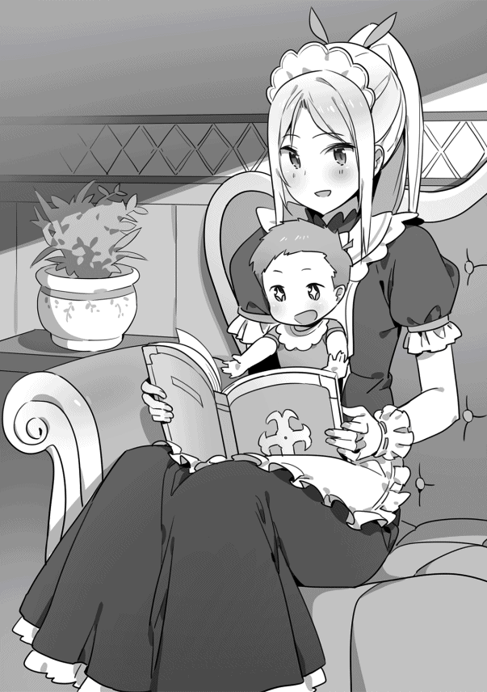
しかし考えてみると、人間であるハズの親父も超人的な剣の使い手だ。もしそれをこんな動物相手に振るうことがあるのだとすれば──確かに、それくらいの実力がないとダメなんだろうなと納得できる。
なんというか、やっぱり異世界なんだな......。
「あははははっ、かわいいですよねー♪」
「ひゃああ〜ん！」
俺が戦慄 しているかたわら。チャロちゃんに抱かれたセーレたんはおしゃぶりを咥えさせてもらい、しかも表紙からしていかにも女の子が好きそうな、メルヘンチックな絵本を見せてもらって大喜びしていた。まだまだ赤ちゃんなのに、やっぱり女の子なんだねー。
ところでチャロちゃんは、読んで聞かせることよりも絵を見せることを重視しているようだ。マールちゃんもどちらかと言うとそうなんだが、言葉でもある程度の説明をしてくれるので、俺としては非常に助かっている。言葉だけだと、表情や視線、前後の動作などで推測していかないといけないからな。
イラストという具体的な大ヒントがあると、理解のしやすさが段違いだ。加えて文字も書かれていれば、それも一緒に学ぶことができるしな。
更に掘り下げて観察してみると、「本」そのものについても、なかなかしっかりと作られていることが解る。さすがにフルカラーとはいかないようだが、この本だって多色刷りされていて、紙質も決して悪くない。多少は繊維 が見えていたり色も茶色かったりするけど、サラサラで真っ白なコピー用紙のようなのが当たり前と考える方がムチャだろう。それなりの製紙と印刷の技術があるのは明らかだ。
もっと考えてみるなら......こういった本がごく一般に流通していること。ウチがどうやら貴族らしいとはいえ、個人が買える値段であるらしいということ。そして本を作って売ることが商売にできるくらい、識字率や教育水準が高いんだろうということ。
......実際に合っているかどうかはともかく、そこまで考察や推測ができてしまう。
だけどまさか、絵本というものがこれほど世界や言葉の理解に役立つものだったとは......。目からウロコがポロポロ落ちすぎて、全身が埋もれてしまいそうだ。
「ふふふっ」
熱心に本に見入っている俺の頭を、マールちゃんは小さな声で笑いながら優しくなでてくれる。チャロちゃんもそうだが、この娘 も見た目の年齢に反して赤ちゃんの扱い方が上手いよな。ベビーシッターの経験でもあるんだろうか？ とても気立てのいい娘 達だということは疑うべくもないが、まだまだ俺の知らないことはたくさんある。
まったく、知りたいことが多すぎて、ヨダレが止まらんよ......。
「はい、ジャス様も」
「んあ？」
やたらに尾の長い極彩色 の鳥の絵を見ていると、マールちゃんにまた口を拭いてもらってから、俺用のおしゃぶりを咥えさせられた。
「むーん」
本に垂れるといけないもんな......。
助かります。
しばらく降ったりやんだりを繰り返していた天気が良くなり、空には数日振りの青空が広がっていた。涼しい空気を深く吸って吐くと、とても気持ちがいい。
「ふんっ！」
小休憩を終えた俺は再びうつ伏せになり、両手を広げて絨毯に押し当てた。そして、力を込めて身体を持ち上げにかかる。
腕立て伏せなどとは程遠い、単なる上体起こしである。
「うぅぅぅぅ......っ！」
まだ食いしばれるほど歯が生えていないので、こういうときにちょっと困るな......。まさしく生まれたての子鹿のように両腕をプルプルさせるも、なかなか上半身を浮かせることは叶わない。いや、持ち上げること自体はできるんだけど、すぐに力尽きてしまうのだ。
「......うへぇー」
あー、もうムリ。すぐに絨毯に突っ伏し、またまた休憩。更なる高み への道は、まだ遠いなぁ。
俺が死んだカエルのポーズを取っている横を、可愛らしいオットセイ、もしくは凛々 しい女性隊員ごっこをしているセーレたんが、するするする〜っと移動していく。
「きゃあ〜♪」
うん、上手に腹ばいで動いているね。さすがに俺の全力の匍匐 前進には及ばないけど、けっこう速い。お袋やメイドちゃんズも驚いていた。
すっかりベビーベッドが手狭になってきた俺達は、遊びの時間については絨毯の上に降ろしてもらえることが普通になっていた。その分念入りに掃除しないといけなくなっているようだが、それでもイヤそうな顔ひとつせずに掃除をし、かなり重たくなってきただろう俺達を降ろして遊ばせてくれるのだから、本当にありがたい限りだ。
みんなに感謝の気持ちを抱きつつ、俺はころんと転がって仰向けになった。そして、「ふぅ」とため息をひとつ。
見上げた白い天井には魔法の光が灯 り、太陽と一緒になって俺達を明るく照らしてくれている。今日も穏やかな、いい日だ──。
「ひゃあああああ〜〜〜ん♪」
「ぐふううううっ!? 」
朝からちょっぴり黄昏 れていると、いきなり妹様が視界の外から飛び込んできた！ 大きな頭がほとんどハンマーと化し、俺のストマックにジャストミート。
ジャスパーは三のダメージを受けた。
「きゃああ〜」
「お、お、おおぉ......」
な、中身が出るかと思った......。更に抱きつきからお得意の横四方固めに移行しかかっていたのを巧みに防ぎ、なんとか対等なクリンチへと持っていく。
この子、可愛い顔をしているが意外と油断ができんのだ。
「ふふふっ！」
俺達がベッドにいない間、その上を掃除していたアナさんが俺達の遊びを見て噴き出している。かなりウケたようで、それなりに痛い思いをした甲斐 があったというものである。
「おーっ！」
「にゃあ〜？」
いきなりフライングヘッドバットは危ないゾ？ という意味を込めて柔らかな金色の髪をなでてみるが、残念ながら伝わらない。無邪気ないたずらっ子はくりっとした蒼い瞳に俺の顔を映し、俺のお腹の上で小首を傾げている。
......もうそれだけで何でも許す気になってしまう、この子の魅力が憎らしい。
「失礼します」
我が妹君がいずれ傾国の美少女になるんじゃないかと心配していると、優しいノックの音がしてマールちゃんが入ってきた。いつもの空色をしたポニーテールは、こういう天気のいい日にはいっそうキレイに映る。
「......あら？」
入口で靴を脱いだマールちゃんは重なり合っている俺達を見ると、笑顔のままに軽く首を傾けた。ちなみに、見るからに西洋的な文化を築いているこの世界だが、この部屋についてはなんと土足厳禁である。そのおかげで、俺とセーレたんは絨毯の上で遊べるのだ。
「アナさん、終わりました」
「そう、ありがと」
マールちゃんはアナさんと短い会話を交わしながら、ソファーの横にある小さなテーブルの上から何かを取り、そのまま俺達の方へ歩いてきた。きっと、俺達のベッドにあった毛布やシーツなどの話をしているんだろう。アナさんが掃除していたのは、何もかもがなくなってスッキリとしたベビーベッドの上部なのであった。
ところで赤ん坊の俺から見ると、短いソックスを穿いた彼女の細いおみ足が、だんだんと近づいてくるんですけど......。
「あっ、あー」
い、いくらスカートの丈がひざまであるとはいっても、俺は今、床に仰向けになっているのだ。そのため俺の視界からは、彼女の白い肌がふくらはぎ、ひざと、少しずつその見える範囲が上に上にと──！
「セーレ様、お髪が乱れていますよ」
「あう〜？」
「......ふ、ふぅ」
危なかったぁ......。暗い傘状になったスカートの中が見えそうな直前で、マールちゃんがひざをついてくれたおかげで見えずに済んだ。
まあ、マールちゃんにはたまにお風呂に入れてもらっているので、面積だけならそれどころじゃない範囲を既に目に入れてはいるんだけど......。だが俺は極力見ないようにしているので、なんとかセーフ──じゃ、ないかなーと、俺は思っていたりするワケであり。
俺の方だって、いや〜んな部分を思いっきり見られたり洗われたりしているワケであり、それでおあいことゆーコトに、して......くれないかなあ。
「さあ、セーレ様」
「あ〜ん」
ドギマギしている俺のことなどつゆ知らず、マールちゃんは俺の上からセーレたんを抱き上げて、正座のようになったひざの上に座らせると、持っていた櫛 で髪を梳 き始めた。それだけではなく、同時に持っていた手鏡をセーレたんの方へ向けて、髪が整っていくのを見せてあげている。
「あんや〜？」
「ふふふっ」
自分の映った姿を見ておめめをパチパチさせている様子に、マールちゃんが笑みをこぼす。それが自分だって、この子はちゃんと分かっているのかなー？
セーレたんが女の子だからか、マールちゃんに限らずみんなは、こうやってときどき鏡で自分の顔を見せながら身だしなみを整えてあげている。その姿はとっても微笑ましく、俺はもちろんのこと、アナさんも笑顔で二人の様子を眺めていた。
「はい、できましたよ」
「やあ〜ん♪」
キレイになったのがお気に召したようで、セーレたんはとても嬉しそうな声を上げた。よかったねー。
ひざの上から解放されると、まるで俺に「見てー」とでも言うように、その場にお座りしたまま両手を伸ばしてくる。......ああもう！ ベリーショートくらいに伸びた金色の髪と、蒼くて澄みきった瞳があまりに可愛すぎて、思わず転げ回りたくなるなあー！
本当に転がってやろうかと腰を捻 ろうとしていたところ、マールちゃんがひざをついたまま俺の方に近寄ってきた。
「さあ、次はジャス様ですよ」
「お？」
えっ、俺の髪も爆発してる？ そう思っている間に俺は起こされ、更にくるりと後ろを向かされると、メイド服のスカートに包まれた柔らかな太ももの上へとライド・オン。
「ジャス様もきれいになりましょうね」
「......ぉー」
俺は男なんだから、別にー......と喋ることのできない俺は、されるがままに髪を直される。優しく頭皮をなでる櫛の感触が、ちょっぴりこそばゆい。俺はそれをガマンしながら、手鏡に映された俺の顔を見つめた。
毎日見ているように、セーレたんの髪は明るい金 色で、瞳は吸い込まれそうなほどにキレイな蒼色をしている。お袋と一緒だな。
だが、双子であるはずの俺は──。
「......」
──髪は銀 色で、目は碧 色なんだよな。
この色は親父と一緒だから、それはそれで血の繋がりは実感できるのだが......。
「はい、できましたよ」
「......おおー」
マールちゃんの手鏡には、短い髪をキレイに整えてもらった男の赤ん坊が映っている。左右のほっぺがぷっくりと膨らんでいるけど、それはそれで赤ん坊らしく、まあそれなりに俺も顔の作りは悪くないんじゃないかなーと思う。それどころか、今の親父に似るならちょっと期待できるかもしれない。
......遠い未来のフサフサまで保証されているかどうかは、分からんけどなー。
「きゃああ〜っ♪」
黄色い声に我に返ると、お座りしているセーレたんが、モミジのようなおててを叩いて喜んでいた。どうやら、俺の姿がおメガネにかなったらしい。やったぜ！
しかもマールちゃんとアナさんにもそう見えたのか、賛同の言葉を俺にくれる。
「はい、格好よくなりましたね♪」
「ええ、旦那様によく似ているものね」
「お......おー」
きっとお世辞なんだろうけど、それでもちょっと照れるなあ......。
三人の女性達から見つめられ、俺はなんともくすぐったい気分になったのであった。
──と、あとは特に何事もなーく時間が過ぎるのかと思っていたら。
「あら」
「ん？」
すっからかんになったベビーベッドに腰掛けて俺達を眺めていたアナさんが、窓の外をふと見て何かに気づいた。その声に俺とセーレたんも顔を上げ、マールちゃんも興味を示した。
「どうしたんです？」
「ほら、噂をしていたら」
「......あっ」
立ち上がってベッドに近づいたマールちゃんも、その何かに気づいたらしい。っていうか、なんなんだ？
「あーうー」
「な〜ん」
双子そろって声を上げるとメイドさんコンビが振り返り、お互いに顔を見合わせるとにっこりと微笑んだ。そして絨毯にお座りしていた俺達を抱き上げ、窓のところまで連れていってくれる。
なお、俺を抱っこしてくれたのはマールちゃんである。
「......あ」
「きゃあ〜♪」
そこで、俺達も見た。
窓の外に広がる庭。秋も本格化してきて緑の鮮やかさにはかげりが出てきたものの、芝はいまだ青さを保ち、右の方にはまだ縦横のポールがあるだけの洗濯物の干し場がある。奥の壁際には何かの木が生えており、その足元にある花壇には秋の花がそよ風に揺れている。
そんなキレイな庭を背景にして、親父とお袋が向かい合っていた。
「......？」
まあ、それだけなら特になんでもないのだが......。
どうして親父は、木剣をお袋に向けて 構えているのだろう？
「あら〜♪」
「......おお」
窓から俺達が見ていることに気づき、お袋は手を振り、親父も木剣から片手を外して軽く上げてくれる。それで、わずかに張り詰めていたように感じた空気が霧散した。
「おー？」
「あぁ〜ん」
マールちゃんとアナさんが、それぞれ俺達の手を取って振り返してくれる。
ところであの二人、何をやっているんだろう......？ いつものように親父が剣の素振りをしているだけなら、お袋が向かい合っている理由が分からない。外にはお茶もできるテーブルとイスが置いてあるんだから、前みたいにそこで座って見ていればいいんだから。
同じ疑問を抱いたのか、アナさんが声をかけた。
「セフィ、何しているの？」
「ええ〜。жяъэЯ がずいぶん良くなってきたから、軽〜くЭкто をね〜」
「......？」
えっ、なに......？
俺もそれなりにこの世界の言葉が解るようになってきたと思うんだが、肝心なところの単語が聞き取れなかった。
「あなた、大丈夫なのー？」
「ええ〜♪」
心配の様子を見せるアナさんに、お袋はのほほ〜んと手を振って見せる。どういう意味なのかとマールちゃんの顔を見てみたが、この娘も知らないようで小首を傾げている。
「あ〜」
セーレたんが自分でおててを振っているのを視界の隅に映しながら、俺は二人が向かい合って──というか、親父がお袋に木剣を向けている理由を考えてみる。
今日は仕事がないのか、あるいは午後からなのか。けっこう出勤時間がマチマチらしい親父は、いつもの動きやすい薄い服を着ている。俺の視力もけっこう良くなってきたので、半袖から覗く両腕には鍛え抜かれた筋肉も見て取れる。すげーよなー。
対するお袋も、普段と変わりないワンピース系の服。涼しい風が吹き抜けると、ロングのスカートと、途中で折り返してなおオシリの辺りまで届くほど長い髪がふわりとなびいた。
思わず、見とれてしまいそうなくらいにキレイである。
「......むー」
ひとつだけ思い浮かんだことがあるのだが、あまりにお袋の雰囲気に合わなすぎて、自分でもどうしてそんなコトを考えたのか不思議に思ってしまう。
まさか、親父の剣の稽古 の相手を、お袋が務めるとか──ねえ？
己のアホな考えを、笑ってかき消そうとしたその直後。
「──フッ！」
なんと、親父がお袋に向かって剣を持ったまま突っ込んでいった!? その「まさか」かよッ!!
「うふふ〜♪」
だがお袋は、これから奥の花壇にお水をあげに行くの〜、とでも言いそうな微笑みをこちらに向けたまま。
......親父の一メートルは優にありそうな木剣のフルスイングを、わずかに頭を動かしただけで避けて見せた。
「 っ」
今──見ないで避けた よな？
風圧で髪が揺れるほどの、トンデモない親父の剣撃を。
「......」
信じられない出来事にアナさんは固まり。
「......きゃあっ!? 」
「わうっ！」
マールちゃんは、かなりの間が空いてから短い悲鳴を上げた。後退 りと共に思いっきり身体が揺れて、抱っこされている俺も焦る！
「あっ......も、申し訳ありませんっ！」
「お、おー」
いや、それでもちゃんと抱っこしてくれているから、いいんだけど......。
だが、俺達がそんなやり取りをしている間にも、親父は猛烈な勢いでお袋に迫りながら剣を振りまくっている。
「ハアッ！ セアッ!! 」
「うふふ〜」
「......」
いやいやいやいや。うふふ〜じゃないでしょう......。
怒り狂う猛牛を捌 くマタドール、だったらまだ理解できる。
でもお袋は、まるで満開に咲き乱れるお花畑の真ん中でくるくると踊るお姫様のような呑気さでで......。
本気で殺す気なのか!? と正気を疑うほどの親父の剣を、易々 といなしているのだ！
「お、奥様......すごい」
「聞いてはいたけれど、これほどなんて......」
当たりそうで当たらない紙一重で、親父の攻撃を踊るように避け続けているお袋の姿に、マールちゃんとアナさんも目を見開いている。なぜか、驚愕 というよりは感動しているように見えるんだけど。
それからアナさん......聞いていたって、何を？
「きゃああああ〜〜ん♪」
「......」
そして、アナさんの豊かな胸に抱かれているセーレたんは、なんとも無邪気に喜んでいた。
この子、将来は思った以上に大物になるかもしれない......。
「流石 ......だなッ！」
「うふふふふ〜」
マールちゃんの感嘆のため息を頬 に感じながら、俺は親父とお袋のバトル──いや、ダンス？ 二人の温度差が大きすぎてなんと言えばいいか分からないナニかを、食い入るように見つめる。一瞬でも目を離したらどうなるのか、ヒヤヒヤモノだ。アナさんも、いったい何を聞いたのか教えてくれないし......。
だがそんな俺の不安をよそに、親父とお袋はお喋りができるほどの「よっちゃん」らしい。......もう、よっちゃんの正体はどーでもいいや。
そんな心の余裕は、俺にはない。
「あなた〜、もっと速くてもいいわよ〜？」
「ああッ！」
「......」
おいおい、更に動きが速くなったぞ......？
親父の剣は冴えに冴えまくる。しかしお袋は相変わらずくるくる〜と回り続け、踊るようにしてそれを完璧に回避している。そのわりにはスカートや髪や胸の揺れがほとんどなく、お袋の周囲だけに何か別の物理法則が働いているのかと考えてしまうほどだ。
「ひゃわあっ!? 」
そんな親父とお袋を凝視しすぎて目の渇きを覚え始めた頃、庭の隅から甲高い誰かの悲鳴じみた声が聞こえてきた。心配しながらもココからじゃ見えないので視線をそわそわさせていると、やがて右の方から洗濯物の入ったカゴを抱えたチャロちゃんが、しっぽを逆立てながら怖々と歩いてきて。
「うわっ。す、すごいですねえー」
そしてお立ち台を使い、隅っこでせっせと洗濯物を干し始めた。
「......」
チャロちゃんも、意外と肝が据わっているんですね......。
「あああ〜ん」
セーレたんも、さっきからずっと喜んでるし。
......さすがは異世界である。
日々の気温が少しずつ下がってきて、朝夕にはやや肌寒く感じることも増えてきた。身体を起こして外を見てみると、ガラス越しに見える庭の草木にも枯れた色がチラホラと。お掃除のときか日射しの暖かな日中でもなければ、窓を開けてくれることも少なくなった。
「やあ〜っ、ああ〜ん！」
「......おおぅ」
後ろから聞こえる声に止まって振り返ると、セーレたんが一生懸命に俺に追いつこうと、絨毯の上で腹ばいで動いていた。一方の俺は、しばらく日課にしていた腕立て伏せモドキが功を奏したのか、四つんばいになってハイハイ歩きができるようになっていた。そうなると、移動範囲が一気に広がる。
いくら才能あふれる天使ちゃんとはいえ、ちゃんと目的を持ってトレーニングをしている俺のスピードとスタミナには、なかなか追いつけない。
「あーい」
だから俺は、こうしてセーレたんが追いついてくるのを待ってあげるのだ。
この子が俺を追いかけてくれるのなら、それがこの子にとっていいトレーニングになるだろうという考えもあって。
「んにゃあぁああ〜......」
お座りして待っていた俺の下に、ちょっと疲れながらもセーレたんがやってきた。絨毯に寝っ転がったその子の頭を、よくできましたとなでてあげる。すると、輝くような笑顔を見せてくれるのだ。
「きゃあ〜ん♪」
「あははーっ」
そんなに喜んでくれると、俺も本当に嬉しいよ。
こうして、これからも一緒に大きくなっていこうな。
一方、相変わらず魔力の方は押しても押してもビクともしなくてちょっと挫 折 気味なのだが......。フィジカルトレーニングの方は着実に成果が出ていて、俺のモチベーションを上げてくれている。歯が生えてくるにしたがって離乳食の量や内容も変わってきて、ようやく「食べている！」という実感が持てるようになってきたのがコレまた嬉しい。
その分、出したモノもかなーり臭うようになってきたんだけど......。
一歩どころか半歩ずつだけど、ちゃんと成長しているのだ。
「あー、いー、うーっ」
「あぁ〜ん」
お座りしたままダンス風に手足を動かすと、セーレたんもマネをして可愛く踊る。俺は発声練習も同時にやっているが、ハニーは楽しそうな声を出している。
「うあああああああーーーー」
「きゃああああああ〜〜〜」
今度は絨毯に寝そべり、どこかにぶつからないように気をつけながら、ひたすらに転がっていく。平衡感覚を鍛えるのだ。
セーレたんも遅れてころころと転がってくるので、先に安全を確保した俺が受け止めてあげる。
......目がぐるぐる回って動けないので、文字通りに身体を張って。
「うひぃー」
「ふにゃあああ〜」
セーレたんもおめめを回してしまったようで、頭をふらふらさせながらも楽しそうに笑っている。子猫みたいな声を出して、本当に可愛いねー。
こうしたトレーニングは、誰も部屋にいないときにだけするようにしている。ただ遊んでいるだけならともかく、いかにもそれらしいトレーニングをしていたら不自然すぎるからな。
俺に向けてくれているみんなの笑顔が歪むところなんて、俺は絶対に見たくない。
「ふー......」
先にバテて仰向けになっていた妹ちゃんの隣へ、俺も寝転がった。おデコには汗をかき、身体中にはだるさを感じる。
前世ではロクに筋トレもしなかったクセに、ちょっと頑張りすぎたかー。
「......はぁ」
この世に生を受けて、はや数ヶ月。地球の暦を当てはめれば、恐らく半年は過ぎているだろう。
前世への想いは断ち切れた......とは完全には言えないものの、今の境遇を素直に受け止めようと思うくらいには吹っ切れている。平和で進んだ世界と優しい家族に恵まれて、本当に幸せだと思う。
だから、こそ。
──俺が前世の記憶を持っていることは、誰にも知られてはならない。
少なくとも、話しても大丈夫だという確信が得られるまで。
それまでは、せいぜい「ちょっと変わった男の子」くらいで済むようにしなければ。
「はあ......」
だけど、そうしながらもいろいろと頑張って、可愛い妹が立派な女の子に育つようにサポートしてあげたいのだ。今もこうして前向きにやってこれたのも、この子のおかげだからな。
もしも俺が一人っ子だったら、この世界や家族を受け入れるのにも相当な時間がかかっただろう。だから、本当に心から感謝している。
前世でも、将来に大した目標や夢なんて持っていなかった......と思う俺にとって、この子や家族の笑顔を絶やさないことが──。
もっともっと笑顔になってもらうことが、今の「俺」の、何よりも大きな目標なのだ。
昨夜の食卓で、俺が離乳食のお代わりをねだったことにお袋達がビックリしていた。そして今朝、アレの臭さにチャロちゃんが鼻を摘んでいた。......ごめんよ？
「ほっ、ほっ」
今日は朝からけっこう冷え込んでいたのもあり、身体を温める意味でもなおさらトレーニングに打ち込んでいた。必殺のローリングサンダーでソファーの足元の角に頭をぶつけ、危うく俺自身が必殺になるかと思った一幕もあったが、それを除けばまあまあ順調。
その部分もしっかりと革張りだったから、それも不幸中の幸いであった。それでも泣いたけど。
「あぁぁぁ〜......ん」
「......あっ」
ハイハイでのタイムトライアルに熱中していたところ、一生懸命についてこようとしていたセーレたんが途中リタイアしていたことに、ようやく気づく。
「はあ、はあ〜」
「うぅぅー」
ご、ごめんよー。まさか、限界まで追いかけてくれるとは思ってなかったんだ。
汗をいっぱいかいて絨毯に寝転ぶセーレたんを、お詫びの気持ちを込めてなでなでする。そういえば俺もけっこうな汗をかいており、身体中にかなりの疲労を感じる。頑張った分だけ伸びるような気のする時期とはいえ、ムリは禁物だ。
それに今日はみんな忙しいのか、朝の掃除が終わってからはあまりこの部屋に来ない。だったら俺がお兄ちゃんとして、この子のことをちゃんと見てあげないと。
俺は妹ちゃんに寄り添い、服で汗を拭いてあげてから隣に寝転んだ。この子の体温が感じられて、ちょっと冷え始めた俺の身体を温めてくれる。
「ただいま戻りました」
疲れてぼーっとしていると、マールちゃんらしき声が聞こえてきた。親父が仕事から帰ってきたときに近い単語から、恐らくは外出していたんだろうと当たりをつける。続いてお袋も入ってきたが、二人は布製の肩掛けカバンをそれぞれ左右にかけていた。カバンはパンパンになっていて、けっこうな大荷物に見えるんだけど......何か買ってきたのかな？
そう思っていると、絨毯に腰を下ろしたお袋がカバンの中から小さな服を取り出した。
「うふふ〜、どうかしら〜？」
「......おー」
「んにゃ〜？」
どこをどう見ても、大人が着る大きさではないそれ。もこもこしていて温かそうな服で、俺達の冬用の服なんだと判る。デザインから見て、たぶん俺のだろう。
マールちゃんも同じように腰を下ろしてから、今度はセーレたん用らしい可愛い服を見せてくれる。
もしかして......二人のカバンの中身って、みんな俺達の服？
その量に喜びつつも、いくらかかったんだろうと考えていると、俺達の顔を見たお袋が小首を傾げた。
「あら〜？」
「奥様、どうなさい......あ」
マールちゃんも言葉を途切れさせると、二人で笑いながら立ち上がり、タンスの引き出しを開け始めた。
「あらあら〜、いっぱい遊んだのね〜」
「ええ、たくさん汗をかいていますね」
セーレたんはさっき俺が整えたんだけどな......って、自分のことをすっかり忘れていた。それにセーレたんだって、いつものキチンとした姿から比べると明らかに髪や着衣が乱れている。一度拭いた汗も、また出てきているしな。
改めて頑張りすぎたかと反省していると、二人が引き出しから出したタオルで俺達の顔や身体を拭いてくれる。
「お風呂はまだ──」
「はい、チャロに──」
聞き取れた内容から、実はお留守番だったらしいチャロちゃんに、マールちゃんがお風呂の支度を頼む話をしているらしい。そういえば、俺達の様子を見に来てくれたのはチャロちゃんだけだったな。アナさんの姿も今日は見ていない。休みの日なんだろう。
マールちゃんが空色のポニーテールを揺らして部屋を出ていくのを見送ると、お袋が一人で世話の続きをしてくれる。さっそく、買ってきた服を着せてくれるようだ。
よーく見るとどれも古着のようなのだが、どうせ赤ん坊はすぐに成長して新しい服が必要になるだろうから、むしろその方が経済的だな。
「うふふふふふ〜♪」
まるでお人形さんを相手に着せ替えごっこを楽しむ少女のごとく、お袋は楽しそうに服を着せてくれる。デザインはどれもあまりに可愛すぎるのだが、今の俺は赤ん坊なので仕方がない。もっと大きくなれば、俺もカッコイイ服を着られるようになるだろう。具体的にどんなのかは......サッパリ見当もつかないが。
俺、服のセンスにはまったく自信ないんだよ......。
「さあ、できたわ〜」
「おおー」
「きゃあ〜♪」
なかなか肌触りのいい服を着せてもらい、俺もセーレたんも大喜びだ。俺達の姿を見たお袋もたいそう喜んでくれて、お座りしていたところを二人いっぺんに抱き締められた。いつものことながら、横にふたつ並んだクッションの大きさと柔らかさがものスゴイ。
もしもこんなエアバッグが車に搭載されていたら、みんなアクセルを全開にして壁に突っ込んでいくに違いない。......狂気の世界だな。
「ジャスちゃんもセーレちゃんも、お腹すいたでしょう〜？」
「うぇっ？」
「あ〜ん」
悲惨なのになぜか幸せそうな事故現場を想像していると、お袋がそのエアバッグを自らの手でむむにょ〜んと持ち上げた。無論、その中身は空気などではなく、俺達への惜しみない愛情や栄養、そして夢などが詰まっている。
「は〜い、今あげまちゅからね〜」
今日もまた、俺達はお袋の愛情を分けてもらったのであった。
──頭を使いすぎてズキズキするのを、俗に「知恵熱」と呼ぶけど。
本来の知恵熱とは、意味が異なる。
「うぅ......」
身体が鉛のように重く、指を動かすのも億劫 だ。頭もぼーっとして、天井がぐにゃぐにゃに歪んで見える。そこに照明の光が合わさって、まるでお椀の中に生卵を割って箸でシャカシャカとかき混ぜたようになっているのが、考えようによっては面白いな。あははー。
......そんな風に考えて、しんどいのをごまかしてるだけなのだが。
だけど幸いなことに、咳 やのどの痛み、鼻水などの症状はほとんどない。高熱だけっぽいな。
となると、これがかの有名な「知恵熱」か......？
「うー......」
うつろな目で波打つ天井を見つめながら、水没でもしたみたいに回転の鈍った頭をなんとか回す。確か赤ん坊は、離乳食を始めるくらいになると急に熱を出すことがあるんだったか。うろ覚えだが、生まれる前や母乳などを通じて、母親からもらった抗体の効力がその頃に切れ始めるために起こるとか起こらないとか、そんなことを聞いたような覚えがある。......違ったっけ？
「......」
まあ、そんなことはどうでもいい。
問題は他にある。
「きゃぅ......」
俺の隣で、可愛いセーレたんが苦しそうにあえいでいる。顔は熱で赤くなり、とても辛そうに表情を歪めている。
「はっ、はっ......」
セーレたんは浅く早い呼吸を繰り返し、身体の中で渦巻く病魔と必死に戦っている。俺は前世で何度も経験しているからいいけど、この子にとっては初めての高熱だ。どれだけ辛いことか......。
すぐ隣でその姿をを見、息づかいを聞いているだけで、俺の心は高熱なんかよりもはるかに辛く、痛くなる。できれば、この子の熱も俺が引き受けてあげたいが......それは叶わない。
「あぅぅ」
見えない拘束具を引きちぎるように手を動かし、彼女の熱い頬をなでる。セーレちゃん、ごめんな......。
もしかすると、俺がムリをさせたのが原因かもしれない。
「......ぁあ〜♪」
それなのに......この子は俺の顔を見ると、少しだけ嬉しそうに顔をほころばせた。本当に、なんていい子なんだろうか。
だからこそ、なおさら俺の心は締めつけられる。まさしく「後悔先に立たず」だ。
「うぅー」
それでも、この子の辛さが少しでも紛らわせることができるのならと、俺はセーレちゃんの身体に触れ、手を握ってあげる。
......やはり、熱い。
「ジャスちゃん、セーレちゃん......大丈夫？」
そんな俺達の顔を、お袋が心配そうに覗き込む。恐らくは今朝だろう、俺達の異変に最初に気づいたのは彼女だった。そのときに、いつものほわ〜んとした笑みがみるみる青ざめていったのが、強く目に焼きついている。そして、青白い顔をしながらもつとめて冷静に俺達の症状を確かめてくれていたところにチャロちゃんが来て──そこから、家中が大騒ぎになった。
『たたたたた......タイヘンですううううーーーーー!? 』
まず、大慌てでチャロちゃんがそう叫びながら部屋を出ていくと、間もなく仕事へ行く支度をしていたらしい親父が、ものすごい物音を立てながらなだれ込んできた。
『だっ、大丈夫かああああああああッ!? 』
──半裸状態で。
次にやってきたマールちゃんは比較的冷静だったようで、チャロちゃんと一緒にお湯の入った桶やタオルをなどを持って──きた矢先。
『奥様っ！ ま、まずは、ジャス様とセーレ様のおから......だ──』
半裸の親父を目の当たりにして、顔を真っ赤にして硬直するというアクシデントはあったけど。桶を落とさなくてよかった......。
そしてなんとか持ち直し、お袋とマールちゃんがそのお湯とタオルを使って俺達の身体を拭いて着替えさせてくれた。ちなみに親父とチャロちゃんは、その後ろでわたわたしていた。
『もう、チャロ！ だ、旦那様も......も、もう少し、お静かにっ』
『はうっ！ ......ご、ごめんなさい』
『す、すまん......』
それのせいでマールちゃんに注意されてしょんぼりしていたけど、俺は感謝してるよ？ おかげでほっこりできたからな。セーレたんもきょとんとしていて、しばし辛さを忘れていたようだった。
ところで、そういうマールちゃんも視線が何度か親父の方に向いていたような......ま、気のせいだったということにしておこう。
それから、俺達の着替えが終わった頃にアナさんが登場。俺達の様子を見ると、すぐにテキパキとみんなに指示を出してくれた。
まずはシャツとパンツだけという格好だった親父を追い出し、しっぽがタワシみたいになっていたチャロちゃんはその場で深呼吸をさせた。更に、不安そうだったお袋には優しく声をかけてから俺達の看病を任せ、アナさん自身もマールちゃんと少し落ち着いてきたチャロちゃんを連れ、いろいろと指示を出しながら三人で部屋を出ていった。
前からすごい人だとは思っていたけど......アナさんって、やっぱりすごい。
──そんなバタバタがあり、今に至っている。
「ジャスちゃん、セーレちゃん、頑張って......」
少し顔色の戻ったお袋が部屋でひとり、水で濡らしたタオルで俺達の顔をそっと拭いたり、おデコに当ててくれたりしてくれている。すーっと熱が取れて、少しだけ楽になる。
とはいえまたすぐに熱くなってくるのだが、お袋は何度も何度もしてくれる。チャロちゃんとマールちゃんも桶の水を交換するなど、こまめに様子を見に来てくれていた。
「ぇへへー」
俺もセーレたんを見習い、笑顔を見せて大丈夫なことをアピールした。お袋とセーレちゃん、両方に向けて。
赤ん坊の身体はそれなりの辛さを訴えてくるけど、前世での病気の経験から、精神的には十分に余裕がある。それに、危機感を覚えるほど深刻な病気だという気はしないので、水分さえしっかり摂っていれば大丈夫だろう──というのが俺の判断だ。その肝心な水分も、ちゃんとお袋に摂らせてもらったしな。セーレたんも俺と一緒に飲んでくれたので、ひと安心だ。
それよりも、もしも俺が原因でセーレちゃんに辛い思いをさせてしまっているのだとしたら......と考える方が、ずっと胸が痛い。
けど、こぼれたミルクを皿に戻すことはできない。だから俺は、セーレたんの手を取って励ましながら、心配してくれるみんなにも笑顔を見せる。
「ぁ〜」
「......ふふっ」
そのおかげか、セーレたんもお袋も、ちょっとだけ微笑んでくれた。
熱のせいで時間の感覚がハッキリしないのだが、しばらくしてメイド服に着替えたアナさんが、私服の上から白衣を羽織 ったお医者さんを連れてきてくれた。あれからアナさんの顔を見なかったのは、直接病院まで行っていたんだろう。さすがに電話みたいはモノはないだろうし......。
ちょっと年配でふくよかな感じの女性の先生は、とても慣れた様子で俺達を診察してくれた。いつだったか忘れたけど、けっこう前にも俺達の健康診断をしてくれた覚えがあるので、我が家のかかりつけの先生なのかもしれない。
間もなくチャロちゃんとマールちゃんもやってきて、診察の様子を四人が先生とベビーベッドを囲むようにして見守った。それから診断結果らしき話を、先生が手振りも交えてみんなにしている。ちなみに親父はあれから見ないので、恐らくはそのまま仕事に行ったんじゃないだろうか。
ところで、熱の原因は分かったんだろうか......残念なことに、それらしい単語は聞き取れなかった。しかし、ゆったりとした先生の表情や話し方を見ると、深刻な内容ではなさそうだ。
「ほっ......そうですか」
お袋もメイドさん達も、話を聞き終わると安心したような表情を浮かべていた。それを見て、俺も胸をなで下ろす。
本当によかった......。
「ふー......」
「あぁ〜......」
先生が帰った後、俺とセーレたんはスープのような離乳食を食べさせてもらい、しばらく眠った。ちょっと漢方みたいな苦味とニオイがしていたから、きっと薬が入っていたのだろう。セーレたんも気づいたらしくて最初はずいぶんと嫌がっていたが、例によって俺が率先して飲んでみせると、しぶしぶながらも飲んでくれたのでよかった。
次に目覚めると、部屋のカーテンはすっかり暗くなっていた。そして俺の身体もずいぶんと楽になっていた。明かりのついた天井もぐねぐねしていない。
すぐ左側を見てみると、セーレたんの顔色も心なしか良くなっているみたいだった。ゆっくりとお腹を上下させ、安らかな表情で眠っていた。峠は越えたようだな。
ほっとしているとお袋がすぐに顔を出し、俺達のおデコに順番に手を触れた。そして俺と同じように、ほっとため息をついて微笑む。
「よかった......お熱、下がってきたみたいね」
お袋の座っていたソファーには、めくれた毛布が置かれていた。そのすぐ横にある小さなテーブルには、いろいろな看病道具一式が置かれているのも見える。
なお、俺達のいるベビーベッドから見てソファーは左側にあるのだが、反対側には誰も使っていない大人用のベッドもある。毛布はそこから持ってきたようだ。
「......ぁ〜」
「おー？」
そのとき、視界の手前でお姫様が目を覚ました。ゆっくりと蒼い目を開け、まだぼんやりとしているみたいだが、俺とお袋の顔を見ると柔らかな笑みを見せてくれる。
「きゃあ〜」
疲れているせいかちょっと弱々しいけど、その声には確実に元気が戻っていることが感じられる。
「ジャスちゃんも、セーレちゃんも、よかったわ......」
そう言ってお袋が笑う。セーレたんと同じ蒼い瞳に、少し涙がにじんでいた。ああ、本当によかった。そして......お袋もみんなも、心配してくれてありがとう。
なーんて、ちょっとした感動に浸っていると。
「ジいヤああああーーーースううううーーーーッ!!
セええええーーーーレえええええええええーーーーーーーッ!! 」
ドタバタと廊下を走る音が近づいてきたなーと思うと、ブチ破らんほどの勢いで部屋のドアが開けられた！ それから俺達の真上から突っ込んでくるように姿を現したのは......制服姿の親父だった。仕事から帰ってきたらしい。
「......っ!? 」
「おおうっ!? 」
しかしあまりの勢いに、セーレたんがびくっと身体を震わせる。キレイなおめめはまん丸で、ビックリしすぎて声が出ていない。
親父はよほど急いできたのか、息づかいがかなり荒い。汗もかいている。そんな顔がベッドの頭の方からクワッ！ と、しかも俺達から見ると上下が逆さまに現れたのだ。
「じゃ、ジャス、セーレ、大丈夫かッ......!? 」
「お、おー......」
「......」
俺もかなりビックリしてバンザイのようなポーズをしていたが、かろうじて返事はできた。でも、セーレたんは微動だにしない。
限界まで目を見開いた赤ん坊兄妹と、碧の目を血走らせた逆さまの親父と視線が交わる。親父はまだ呼吸を荒げている。
大急ぎで飛んで帰ってきてくれた親父には悪いんだけど......ハッキリ言って、怖い。
「............だはあああぁぁぁぁーーーーーーー」
しばらく見つめ合った後、親父はベッドの柵の上に両手を置き、体重をかけるようにして半ば崩れ落ちた。体重がかかり、ギギギっと柵が危うい音を立てる。
顔を上に向けてみると、柵越しに銀色の髪の先っぽだけが見えていた。
「よ、よかったあああああああ......！」
し、心配かけたね親父......。でも、それ以上ベッドに体重をかけるのはやめようか？ ミシミシミシって、ベッドの柵がもっと危険な悲鳴を上げ始めたからさー。
しかも、俺の隣ではもうひとつの悲鳴も上がりつつあった。
「ふえっ......」
「あ」
左に目を向けると、セーレたんが可愛いお顔をくちゃくちゃにしている。キレイな蒼い瞳には、宝石のように光る涙が次々と──。
なんとか泣かせまいと、セーレたんに声をかけようとしたそのとき。
「うふふふふふ〜」
ベッドの横で硬直していたお袋が、笑った。
それはもう、菩薩 のような笑みである。
「あ〜な〜た〜？」
お袋に呼ばれ、ベッドの下からゆっくりと頭を上げる親父。
「......ん？」
するとお袋は親父の下へ歩み寄り、白魚のような手を襟 の後ろに入れて──。
「おわああッ!? 」
「!? 」
──片手で親父を引っ張り上げた。
「もう、あなた〜。ジャスちゃんとセーレちゃんが、びっくりするでしょう〜？」
親父はハニワのような顔をして、全身を硬直させている。だけど、それは俺も同じである。
セーレたんも驚いたようで、泣き出す一歩手前の表情で固まっていた。
「ですから、静かにしましょうね〜」
自分よりも背の高い親父を見上げ、お袋がにっこりと微笑んでいる。満開の花さえ恥じらいそうな、とても魅力的な微笑みである。
「うふふふ〜♪」
「......」
あまりに魅力的すぎて、背中のゾクゾクが止まりません......。
親父もブルリと大きく震えると、引っ張られた前襟で絞まりかかっているように見える首を、無言のまま何度も縦に振り始める。俺も思わず、天使ちゃんに向けて開きかけていた口を真一文字に結んだ。
一方、泣きそうだったセーレたんは。
「きゃああ〜♪」
ちっちゃなおててを叩いて、とても喜んでいた。
「......お、おぉー」
ま、まあ......取りあえず泣き止んでくれて、なによりだ。
そう思いながら、俺も控えめに手を叩くのだった。
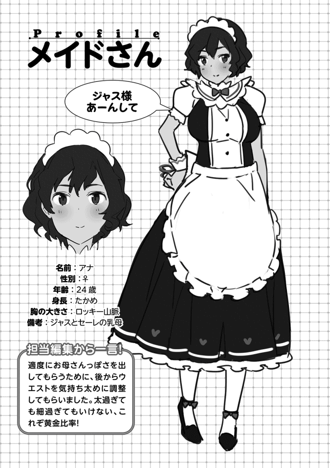
──初めての病気から数日。
俺もセーレたんも、すっかり元気になった。
「きゃああああ〜ん♪」
「あはははははーっ♪」
窓から明るい日射しが降り注ぎ、俺達はベビーベッドの中で仲よく並んで笑っている。部屋の中はとても暖かい。
「ああ〜ん」
「あははー」
右へ左へと寝返りを打ち、ときには上になったり下になったりして遊ぶ。病み上がりなのでベッドからはまだ出してもらえないけど、こうして二人でいれば、いくらでも楽しく遊ぶことができる。周りにはオモチャもいくつか置いてくれてあるしな。
本当に、この子が元気になってくれて良かったよ......。
「あふぁ〜......」
しばらく遊んでいると、セーレたんがなんとも可愛らしいあくびをした。それから俺の身体にくっつくと、身体を丸めるようにして目を瞑る。
「......」
次の日になると俺達はかなり元気を取り戻し、みんなもすごく喜んでくれた。つきっきりで徹夜の看病をしてくれたお袋には、特に感謝だ。
でもまだ微熱があったため、その後もお袋とメイドちゃんズとでローテーションを組んで看病してくれた。たとえ昼間の家事の最中であっても、ほんのわずかな時間でもあれば顔を見に来てくれる。庭の方から窓越しに顔を出してくれることもあった。チャロちゃんはジャンプしても、腕と髪の毛しか見えなかったが......。
ちなみに俺が「知恵熱」ではないかと思っている、高熱の原因について。朝にメイドちゃんズが話していた内容を聞いたところ、どうもここ数日の急激な寒さが影響したのではないか、ということらしい。確かに、いきなり冷え込んだもんな......。
とはいえ、トレーニングのしすぎで汗をいっぱいかいたことも無関係ではないだろう。特に夜の、「おやすみ」のキスをもらった後のトレーニングは控えないと。やはり反省すべきだと思った。
この子が辛い思いをするだけじゃない。家族のみんなにも心配をかけてしまう。
ところで、熱を出してからは夜になっても部屋の中がかなり暖かいのだが、もしかするとキッチンにあった例の暖炉を使ってくれているのかな？ こういったところからも、みんながどれだけ俺達のことを気にかけてくれているかがよく分かる。
そうでなくても、普段から食事やお風呂、そしてシモの世話まで......本当に、何から何までやってくれているのだ。しかも、嫌そうな顔ひとつ見せずに。むしろ楽しそうに。
身体の発達を促すためのトレーニングも、それはそれで大事だけど......。なによりも大事なのは、よく食べてよく眠り、元気にすくすくと育つことだからな。
それこそ、この家の──いや。
今の「俺の家族」にできる、いちばん最初の孝行だろう。
季節から考えて、俺もセーレたんも生まれてまだ一年も経っていない......ハズ。それはつまり、この身体は運動能力はもちろんのこと、体調を維持する機能だってまだまだ未発達だということだ。加えて俺達は常に一緒にいるため、どちらかが体調を崩せばもう片方も影響を受けやすい。体力だってそんなにあるワケじゃないんだから、たかが風邪でもこじれたら大変なことになる。
今回は軽く済んだけど、次からは本当に気をつけないと──。
「あふ......」
セーレたんの静かな寝息を聞いていたら、俺もちょっと眠くなってきた......。そういえば、そろそろお昼寝の時間か。もう少ししたら、遠くから鐘の音も聞こえてくるだろう。
生活のリズムが安定してきたおかげで、俺達がいつごろ眠くなっていつごろお腹が空くか、そのタイミングが実際にそうあるべき時間帯とだいたい一致するようになってきた。真夜中にいきなり目を覚ますことも減った。......オネショをしたときは別だが。
「ふうー」
このまま寝てもいい時間なんだけど、もう少しだけ何かしようか。今ではもうつきっきりでの看病もされなくなったけど、完全に体力が戻るまでは身体のトレーニングはしないと決めた。だから最近は、魔力のトレーニングに専念している。どうも、「ナニか」が掴めそうな感じがしているんだよなー。
俺はセーレたんを起こさないように気をつけながら姿勢を正し、仰向けになって目を閉じる。もしそのまま寝ちゃったとしても、それはそれで構わない。
「......」
魔力のトレーニングに関して、つい最近まで俺は「動かざる山」をなんとか動かそうと躍起になっていた。
しかし考えてみると......その「山」って、俺の持つ魔力の「すべて」じゃなかろうか？ つまり、それを動かすということは「全力を振り絞る」こととイコールであり、もしそれができるようになってしまったら、俺の魔力はたちまち空っぽになってしまうというコトだ。
今でもたまにお袋やチャロちゃんが、例の光の球を打ち上げる石を使って見せてくれるけど......どう見たって、アレは全力全開とは程遠い。ていうか、そもそも全力だったら一回打ち上げただけでおしまいである。
なので、今は山全体ではなく、その一部だけをなんとか手から出してみようと努力しているのだ。ちなみにイメージはトコロテン。
「むー......」
右手を自分の胸に当てるようにし、人差し指を伸ばす。それから、身体中をめぐる魔力を感じ取る。ココまでは慣れたものだ。
次に、その魔力が人差し指の先にもちゃんと流れてきていることを意識する。指先は神経が集まっている場所なので、特にイメージしやすい。しばらく集中を続けると、敏感な指先をなでるように、ちりちりと魔力が流れているのが分かる。......たぶんな？
ココまで来たら、更に次のステップだ。もう少し意識の範囲を広げて、今度は右腕に流れ込んでくる魔力の量を、意識的に増やすようにイメージしていく。手で水をかくように、魔力の流れを指先の方へと誘導する感じで。その一方で、腕から出ていこうとする魔力は押し止 める。
やがて腕の中にドンドン魔力が溜まり......更にもっともっと押し込んでいくと、その魔力は出口を求めて指先に集まってくる。
「......くっ」
指の先に集まった魔力がドンドン凝縮され、ほんの薄皮一枚で閉じ込められている。第一関節から上が、ちょっと熱くなってきている......ような気がする。たぶん錯覚だろうけど。
あとは「あともう一押し」をして、先っぽからぴゅーっと出せるようにすればいいのだ。
「んぐ......」
さあ、出ろ。出るんだじょー！
デロデロデローン！
「......あっ!? 」
指の皮をすり抜け、魔力がほとばしるイメージを思い描く。それを何度も繰り返していると、不意に指先から圧力が抜けた感じがした！
コレはもしや......本当に魔力を身体の外に出すことができた!?
期待を不安に胸を弾ませながら、恐る恐る目を開けてみると──。
「へっ？」
でろ〜ん。
俺の人差し指の先から。
──本当に、「ナニカ」が出ていた。
「おぎゃああああああああああーーーーーーーーっ!? 」
なんじゃあああコリャアアアアアアーーーーーっ!?
想像なんかじゃなく、本当にトコロテンみたいな謎の物体が飛び出してるんですけど！
太さと長さは......ちょうど俺の指と同じくらい。赤ん坊の指なので、小さなモノである。
見た目は半透明で、まさしくトコロテンのようにぷるぷるしている。
まるで「ぼくは悪いトコロテンじゃないよ！」と自己主張しているかのようである。
「......」
い、いや、悪いモンだったらマジで困るんですけど......。なにしろ、コイツは俺の中から出てきているんだから。
俺の中の人が邪悪だというコトになってしまう。
「うー」
本当にコレ、俺の魔力なんだろうか？ エクトプラズム的なものじゃなくて？
俺にくっついてすやすやと眠っているセーレたんみたいに、もっとオーラ的なものがドバババーって出てくるものとばかり......。
まさか、イメージ通りに「でろ〜ん」と出てくるなんて思ってなかったぞ。
「......ひゃう〜？」
俺がちょっと大きな声を出してしまったせいで、セーレたんが起きてしまったようだ。ちっちゃなおててで目をこすり、しょぼしょぼさせている。起こしておいて悪いんだけど、子猫みたいで可愛いなーと思ってしまった。
そして、そんな子猫ちゃんを微笑ましく眺めていると......。
「ふぁ〜？」
その蒼く澄みわたった無垢なる瞳が、謎のトコロテンＸ の姿を捉えた。
「......」
ええっと......ど、どうしよう？
トコロテンはぷるぷると震えながら「悪者じゃないよ！」とアピールしているが、どう見たって怪しいことこの上ない──。
「きゃあああ〜ん♪」
「......えっ」
しかし、なぜかセーレたんはお気に召したらしい。蒼い瞳を宝石のように輝かせ、トコロテンを生み出している俺の右手を両手で包んだ。
「きゃあ〜う！ ひゃあ〜ん♪」
なんだか、ものすごーく喜ばれている......。ぷるぷる具合がお気に召したんだろうか？
トコロテンも嬉しいようで、よりいっそうぷるぷると震え始めた。
実は、前から薄々とは感じていたんだけど、この子って。
「......」
ちょーっとばかり、感性にオリジナリティがあるよな......。
お袋と同じで。
「きゃあぁあ〜〜ん♪」
とびっきりの可愛い笑顔を見せる妹ちゃん。まさしく天使。
きっと、素敵で無敵な女の子に育ってくれるだろう。
「......あは。あははーっ」
俺は、トコロテンと共にぷるぷると震えながら、改めてそう確信したのであった──。
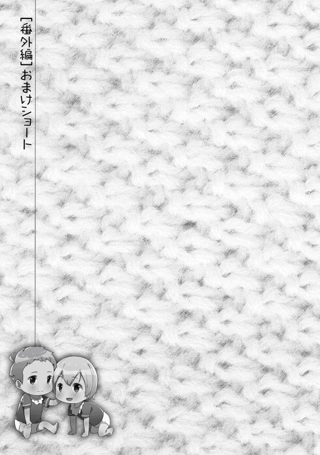
「チャロ、セーレ様を運んでくれる？」
「はいですー！」
アナさんに言われて、セーレさまをしっかりと抱っこします。
「ふんぬっ！ ......お、重く、なりました......ねー」
「きゃあ〜♪」
ミルクのにおいをふわふわさせて、わたしの腕の中でセーレ様が嬉しそうにしています。奥さまと同じ色の髪が、とってもキラキラしていてまぶしいくらいです。
それにしても、赤ちゃんって本当に大きくなるのが早いですねー。生まれたての赤ちゃんからお世話するのは初めてだったので、ホントにビックリです。
セーレさまもジャスさまも、おとなしいからいいですけど、そうじゃなかったら怖くて抱っこできないかも。
「......ふうっ」
後ろを向いてすぐのところにあるソファー、だけど私はゆーっくりと動いて、セーレさまをお座りさせます。今がお昼だったら、これだけでも汗が出そう......。
でもその間にアナさんは、ジャスさまを軽〜く抱っこして、ベッドをぐるりと周って、わたしとほとんど同時にジャスさまをお座りさせちゃいました。さすがです。
「きゃあぁああ〜♪」
「あははー♪」
ぴったりとくっついて、セーレさまとジャスさまが喜んでいます。ホントに仲よしさんですねー。
ケンカをしているところを一回も見たことがないのは、双子だからなんでしょうか？
「じゃ、後はお願いね」
「分かりましたー」
アナさんがベッドからお布団などを抱えて、お部屋を出て行きます。今朝のわたしは、おふたりと遊ぶのがお仕事です。
「さあ、なにして遊びましょうかー？」
「ううー？」
「はう〜？」
わたしの顔を見て、ジャスさまとセーレさまが同じ方向に首をかしげました！
あまりにカワイすぎて、背中からしっぽに「びびび！」としたモノが走ります。きゃああーっ♪
「......こほん。え、えっとー」
逆立ったしっぽの毛を手で直しながら、おふたりの前にひざをついて座ります。わたしの声にそろって目を丸くしているのがまたカワイイんですけど、ちゃんとお世話しないと......。
「あー......」
「ん？」
気がつくと、ジャスさまの碧の目が、わたしの顔から斜め下に動いています。セーレさまは、そんなジャスさまの手を取って一人遊びを始めました。
そういえばジャスさまって、わたしの耳やしっぽじーっと見ていることが多いですよねー。このおうちに亜 人種はわたしだけですから、それが珍しいんでしょうね。
「......」
そこで、つかんだままのしっぽをゆらゆらと動かしてみます。
するとジャスさまも、同じように目で追いかけ始めました。
「んおおーっ」
「......あははっ♪」
同じよーな赤ちゃんはけっこう多いんですけど、ジャスさまは特に追いかけてくれますね！
オモシロイくらいに、まったく目を離しません。
しかも、左右に二、三回動かしていると、セーレさまも気づいて同じように目で追いかけ始めました。
おふたりそろって、まったく同じように目を動かしています。
「ほらー」
右へ動かすと──。
「んぉー」
「あ〜」
ジャスさまとセーレさまも、目を右へ。
左へ動かすと──。
「んあー」
「うゅ〜？」
やっぱり、左へ。
「......っ!! 」
か、カワイすぎるううぅぅぅぅーーーーっ♪
耳がふるえて、止まらないっ！
思わず立ち上がったわたしは、ぶんぶんと振り回しちゃいそうになるしっぽを押さえて、あくまでもゆーっくりと動かします。
「うえーっ」
『......』
上に動かすと、下に。
「したーっ」
『......』
下に動かすと、下に。
「ぐーる、ぐーる」
『......』
ぐるぐる回すと、ジャスさまとセーレさまも目だけを、まったく同じように動かします。
やっぱり双子だから？ みごとに同じ動きです！
逆回転や上下左右を混ぜてみても、やっぱりイッショ。頭をふらふらさせながら、ぴったりと追いかけてくれます。
「あはははははっ♪」
じゃあ、これはどうですー？
今度は動かすのをやめて、ゆーっくりとしっぽの先を目の前に持っていきます。
そして、おふたりの目がまん中にだんだん寄り始めたところで──。
──いきなり、ビュンっ！
『......!? 』
「ぷふーーーーーっ！」
あははははは......っ！ いきなりの動きに、ふたりとも目をまん丸にしてる！ お口も大きく開けて、まったく同じ顔でビックリしてるのがオモシロすぎるうーっ!!
しかも、バランスをくずしてこてんと横に倒れてしまいました。
ビックリした顔のまま、折り重なって。
「......はひっ!? 」
うぎゃっ!? お、おかしすぎてお腹が......。
「──チャロ、何してるの？」
「はひっ、はひぃ......」
お腹を押さえてじゅうたんを転がっていると、戻ってきたアナさんにヘンな顔をされてしまいました......。
お買い物からの帰り、入り口の門を通ったところでふと立ち止まり、見上げます。
すっかり見慣れた「私達」の家。白壁と青空との対比がとてもきれいで、午後の明るさに目を細めます。
「もう、一年かあ......」
正確にはまだ一年も経っていないけれど、ここへ来るきっかけになったことも考えると、ほぼ一年と言っていいでしょう。
成人前の最後の年。いろいろあるだろうことは分かっていたけれど、まさかこうしてチャロと二人、この都 に来て同じメイド服 を着ることになるなんて──。
「はぁ......」
きっと間違いなく、私の一生の中でいちばん目まぐるしかった一年になるでしょう。あんなことがあって、奥様にお声をかけていただいて、こっちに引っ越してきて、お二人が生まれて。
......そして、すべてがやっと落ち着いてきたかなと思ったら、もう一年です。
「ふふっ♪」
あんなに死にもの狂いになるほど忙しかったはずなのに、今思い返してみると「楽しかったな」という感想しか出てこなくて、思わず笑ってしまいました。
「あっと......いけない」
青い空に小鳥が横切って、我に返ります。早くこの食材をお届けしないと、夕食が作れません。
肩の買い物かばんを掛け直して、私は「我が家」の玄関に向かって、足を進めます。
中に入ったところ、ちょうど奥様が廊下にいらっしゃいました。とても産後とは思えないほっそりとしたお身体を、長い髪が優しく包み込むようにしてキラキラと輝いています。
未 だに、見とれてしまうことが少なくありません......。
「あっ、奥様、ただ──」
お声をかけようとした私に、奥様はこちらを向いて「しーっ」と人差し指を立てられました。慌てて口を押さえます。
廊下の端で、陽の差す窓を背にしてこっそりと覗いていらっしゃったらしい、ドアの向こう。誰の部屋なのかは、言うまでもありません。
私も音を立てないよう、忍び足で廊下を歩いて近づいていきます。
（お昼寝、ですか）
（ええ〜）
静かに微笑み合って、言葉を使わずにお声をかけます。
（ほら、見て〜）
そう奥様に誘われて、私は肩のかばんがずり落ちないように気をつけながら、少し腰をかがめてドアの隙間を覗きました。すると奥様も、私の両肩に手を乗せて──。
「......」
背中にもずっしりと柔らかいモノを感じますけど、それについては気にしないことにします。
......いえ。それがすぐ気にならなくなるほど、とっても可愛らしい光景が目に飛び込んできました。
「あ......」
特注の大きなベビーベッドの中で、ジャス様とセーレ様が、ぴったりと寄り添ってお休みになっていまたのです。
「......」
「......」
部屋の中は、しんと静まり返っています。離れているので、お二人の寝息も聞こえてきません。
カーテン越しの光を浴びて、赤ちゃん特有の少しだけ赤いお顔と、それぞれ旦那様と奥様の色を受け継いだ髪が、柔らかく光って見えます。
まるで、ここだけゆっくりと時間が流れているようです。
『ふふっ』
思わず漏れてしまった声が、偶然......いえ、必然的に奥様と重なりました。何度見ても飽きることのない、笑みが止まらなくなる光景です。
（気持ちよさそうに寝ているわ）
（はい）
ささやき声で、頭上の奥様と言葉を交わします。
ジャス様は仰向 けで、セーレ様は横向きで。兄妹仲良く、笑みを浮かべてすやすやとお休みです。
「んむ......」
お休みといっても、まったく動かないわけではありません。可愛らしい手足がたまにぴくぴく動いて、ジャス様はお口ももごもご動かしていらっしゃいます。
ふふ、何かいい夢でもご覧になっているんでしょうか......。
「にゃうん......♪」
「ふがっ」
くすくすと笑いながら見ていると、セーレ様がジャス様にもっと頭をすり寄せました。
でも、それがお鼻に当たって、ジャス様がビクンとのけ反ってしまいます。
『ぷっ！』
ついつい、奥様と二人で小さく噴き出してしまいました。
「......んんー？」
あーあ、ジャス様がお目覚めになってしまったようです。少し不機嫌そうなお顔で、ゆっくりとまぶたを持ち上げました。
「......」
そして、ジャス様が真っ先にご覧になったのは、セーレ様。
対して、お兄ちゃんに頭突きをしてしまったセーレ様は、何も気づかず、ますます嬉しそうなお顔でお休み中です。
もっと大きくなってもそうですけど......赤ちゃんも、一緒に並べるとしばしば叩き合ったりつかみ合ったりするのが普通です。なのに、このお二人に限っては、そんな「けんか」をしているのを見たことがありません。
私も双子をお世話するのは始めてですが......その中でも、ジャス様とセーレ様は特別なように思います。
今だって、頭突きをされてしまったジャス様は、怒るどころか──。
「......っ!? 」
仰向けのまま、静かに微笑みながら見下ろしたジャス様。
セーレ様に向けたそのまなざしが──あまりにも優しくて。
私の中を、大きな何かが一気に駆け抜け、全身がぞくりと震えてしまいました。
「......」
「──ちゃん、どうかし──」
「......」
「マールちゃん？」
「......えっ？」
奥様に呼ばれていることに気づいて、思わず頭を上げてしまいました。私の後頭部に奥様がぶつからなかったことに気づいたのは......少し経ってからのことです。
「どうかしたの〜？」
「あっ、い、いえ......」
急に動いてしまったことに慌ててお詫びしてから、もう一度こっそりとドアの隙間を覗きました。
でもそのときにはもう、ジャス様は再びお休みになった後でした。
「そろそろ、ご飯お支度をしましょうか〜」
「......はい」
まるで、奥様やお子様達を見つめるときの旦那様のような、あのまなざし。
セーレ様から感じられる、魔力の大きさにばかり気を取られていた私は。
──ジャス様は将来、きっとセーレ様以上のすごい方になられる。
そう、確信したのです。
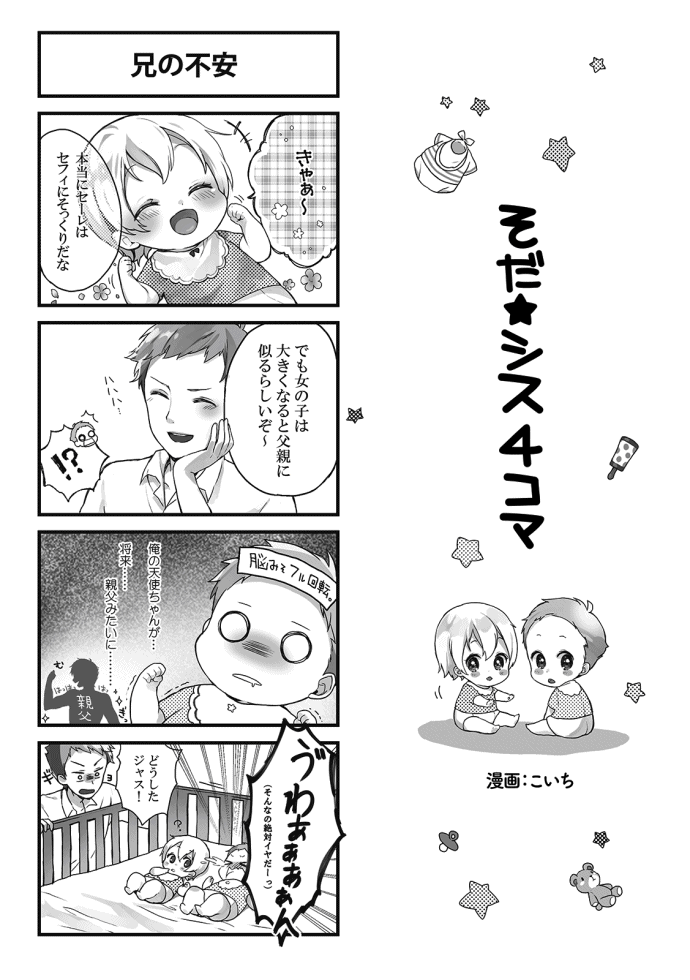
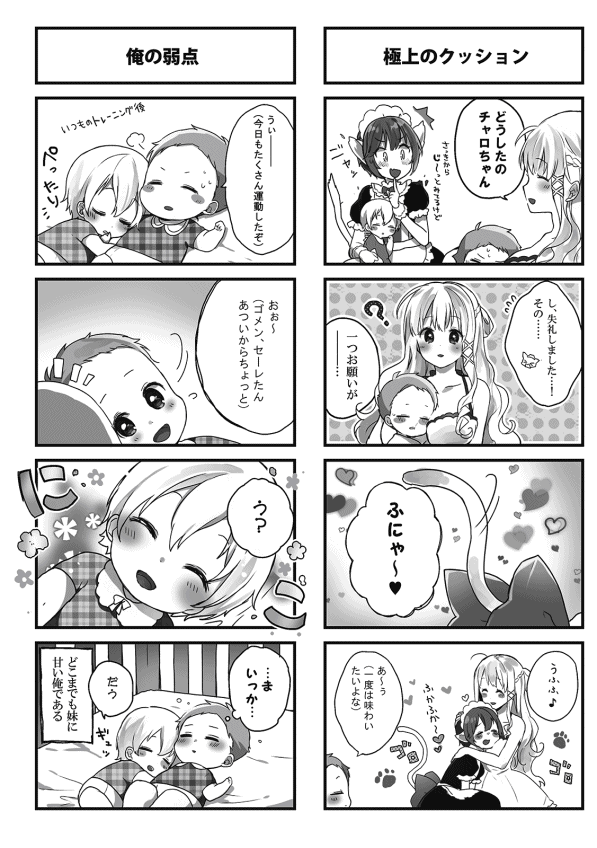
こ、これがウワサの「あとがき」ですか......。原稿以上に何を書いていいのか困る、という話に間違いはありませんでした。
「いえーい！ みんな見てるうー？」
と、まるでＴＶの生放送をしているガラス張りのスタジオの向こうで、ピースしている子供のようなことを言ってみます。......だって、何を書いてもイイって言われたしぃー。
みなさん、初めまして。Ｍｉｅ（み〜）と申します。ちなみに（ ）の中が読み方となっておりますので、気軽にお呼びいただけると嬉しいです。
世にたくさんある書籍の中で、この本をお手に取ってくださり、本当にありがとうございます。しかも、この「あとがき」まで読んでくださっているなんて、もうみなさんに足を向けて寝られませんね。どっちを向いて寝たらいいんですかーっ！
......お堅い文章が書かれていてもつまらないと思いますので、ちょっと砕けた書き方をしております。ご容赦ください。
ここ数年、「小説家になろう」というウェブサイトに連載されている作品が続々と出版されておりますが、私もその一人です。しかし、その中でもかなり異色な作品を書いている自覚がありましたので、まさかお声がかかるとは夢にも思っておりませんでした。
担当さんと出版者様の、むぼ──あくなきチャレンジャー精神と、感想文までくださった熱意に心を打たれました。
「なろう」の中では、もはや珍しいモノではなくなった「書籍化」ですけど、世間一般的には「自分の書いた作品が出版された！」となれば、それはもう奇跡に近い貴重な経験です。ですので、お金を出して買ってくださったみなさんにはもちろん、私自身もこのレアな経験を思いっきり楽しませていただこうと思い、それはもうフリーダムにやらせていただきました。「なろう版」の改訂ではなく完全な書き直しになっているのは、その筆頭です。
そういった、私のワガママのほとんどを叶えてくださった担当さんと出版者様は、やはりフリーダム精神にあふれていらっしゃいます。もはや私は、立ったまま寝るしかありません。フラミンゴみたいに。
私はとっても楽しかったのですが......ページの向こうにいらっしゃるあなたにも、この作品を楽しんでいただけたでしょうか？ そうであれば嬉しいです。
なお、「いや、まだ読んでないし。俺（私）は先にあとがきから読む派だしぃ」という方は──ここでのネタバレは避けますので、この後で本編をごゆっくりどうぞ。ちなみに犯人は第一発見者です（何の犯人だ？）。
ところで、この作品は「赤ちゃん小説」と銘打たれております。
しかし実際には、他の「転生系」作品では軽〜く流されされがちな乳幼児期から順を追って、主人公達が成人するまでの半生をできるだけじーーーーーっくりと「ノーカット完全版」に近い形で描き切る、というコンセプトです。ちゃんと成長しますのでご安心ください。
「なろう」の連載でも当初は「いつまで乳児なんだー！」というご意見をたくさんいただきましたが、連載四年目（これを書いている時点）となった現在では「あ、そういうものなんだー」「生きてる間に最後まで読めるかなあー」と、悟りの境地に達してくださっています。ありがたいことです。
次巻につきましては、ひとまず二巻までは出させていただけるようです。ウェブと違って商業作品ですから、そこから先は結果次第ということになりますが......。
だからこそフリーダムにやらせていただいたという側面もありますけど、できれば書籍の方でも長く楽しく連載させていただきたいな、と願っております。
二巻では、新しい生活に慣れてきた主人公がイイ感じに暴走を始める予定です。
新しいキャラ（男子、喜べー。かわいい女子だぞー）も登場しますので、よろしければまたよろしくお願いいたします。
最後に、お世話になった多くの方々に感謝を。
まずはウェブ版で応援くださっている読者のみなさんと、連載の場をご提供くださっている運営様。「なろう」がなければ、この作品は生まれませんでした。
次に、出版という機会をくださったＴＯブックス様と担当のルナさん。そのフロンティアスピリッツには脱帽です。
そして、素敵すぎるイラストや「おまけ」を描いていただきましたｄｄａｌさんと、こいちさん。私の想像の中だけだった世界が目に見える形になるというのは、なんともいえない感慨深さがあります。
それだけではなく、製本から流通、それから書店のみなさんまで。考えてみると、実に多くの方々が関わってくださっています。改めて、書籍化ってすごいなーと思いました......。
この次もまた、よろしくお願いいたします。
......ふぅ、これできっちり四ページですね。学生時代の、国語の文章問題の経験がこんなところで活かされました。
ではまた、二巻でお会いできることを楽しみにしています。
二〇一六年 二月某日
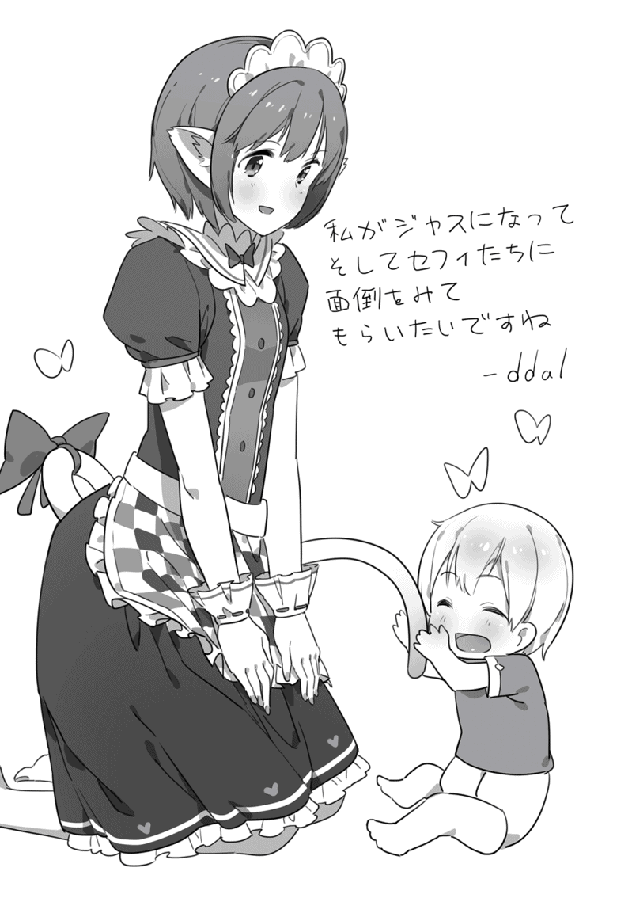
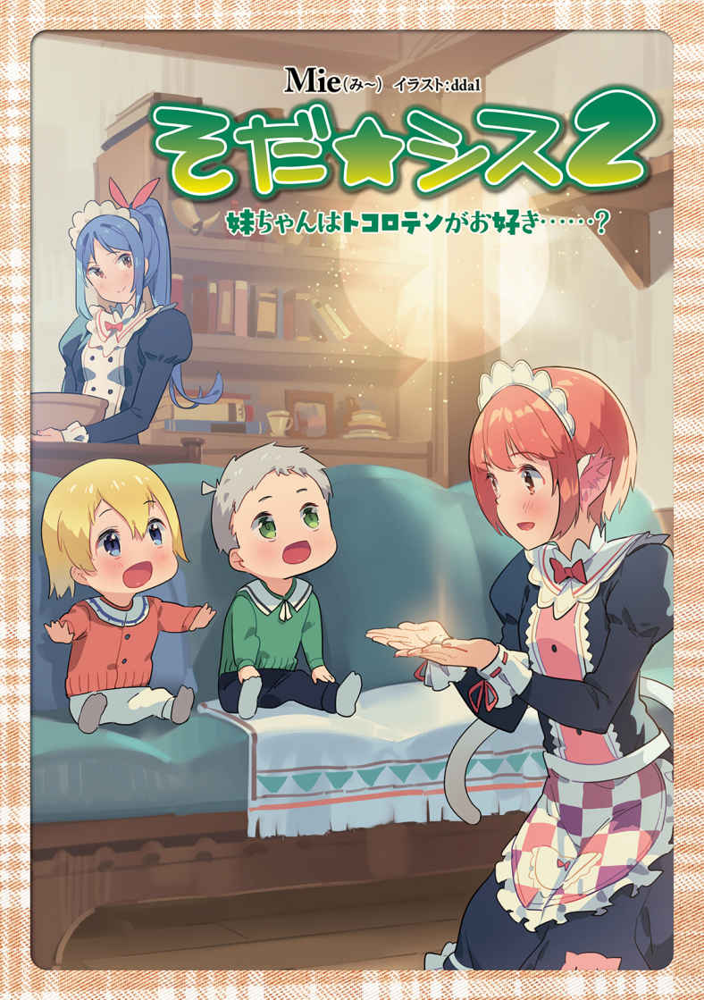
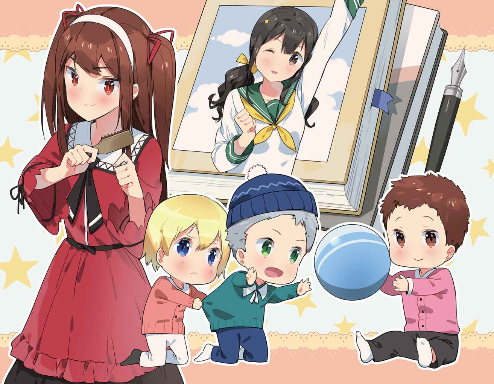
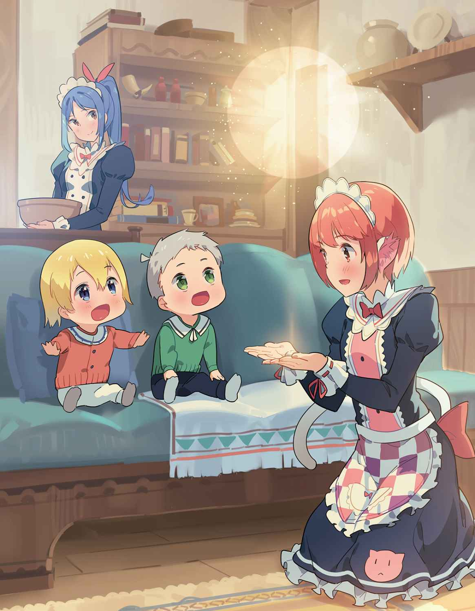
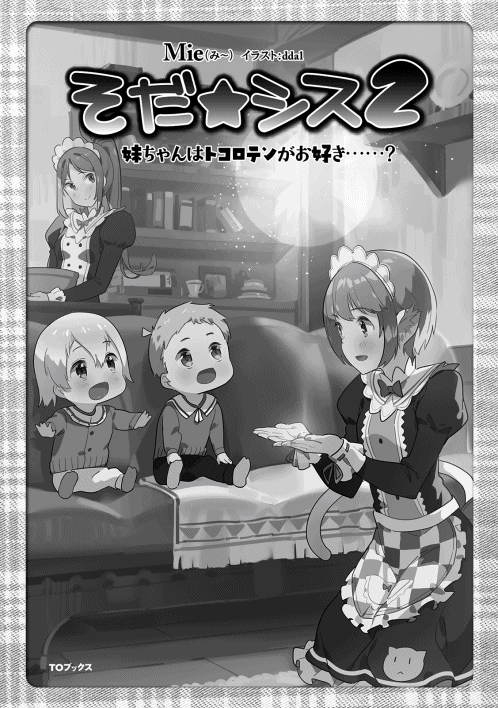
ｃｏｎｔｅｎｔｓ
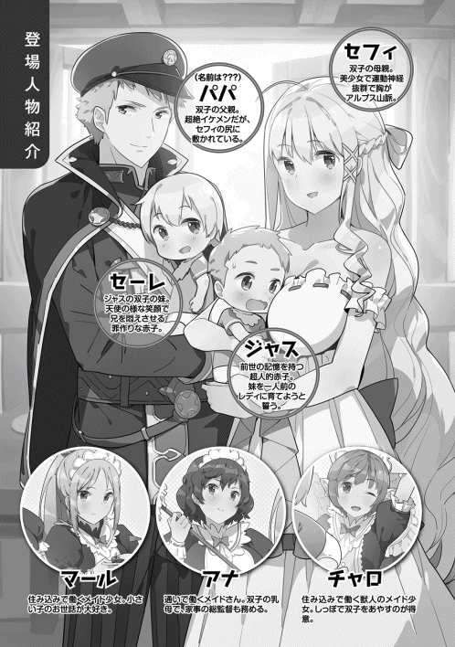
──子供の頃、こんな経験はなかっただろうか？
テレビやマンガの主人公に憧 れ、己の内にも奇跡の力が眠っているのではないか、と考えたことが。そして、実際にキャラクターと同じポーズを取って真剣に念じてみたことが。
「ハアアアアアアアーーーーーーッ!! 」なんて、叫んじゃったりしてさ。もちろん、具体的な技名でもかまわない。
だけどそれも、純真だった少年時代のささやかなひとコマ。いつか思い出がセピア色になった頃、久し振りに出会った友人達と酒でも酌 み交わしながら笑って話せる程度のものだろう。
......小学校の休憩時間、それで半ズボンのおシリの部分を思いっきり引き裂いた、なんて伝説 を打ち立てていない限りは、たぶんな。
あのときは、着替えの体操服があって本当によかった......。
「きゃああぁあ〜〜ん♪」
「下半身だけ世紀末覇者」として君臨 していたあの頃の思い出に浸っていると、ふと横から天使の歌声が聞こえてきた。我に返って重たい首を捻 って見れば、そこには喩 えでも何でもない、まさしく天使がそこにいた。
朝の光が降り注ぎ、純白のシーツが眩しい大きなベッド。隣にいる彼女は、柔らかそうな金色の髪に光の輪っかを頂き、屈託のない笑顔を俺だけに向けてくれていた。
きらきらと輝く蒼い瞳が印象的な、この世で最も可愛い赤ちゃん 。
俺の双子 である妹様、セーレたんである。
「あぁ〜ん？」
「おーう」
鈴を転がすような声に、俺も快く応える。遠い遠い過去──前世の記憶 に思いを馳 せ、死んだ魚のような目をしていた俺を気遣ってくれたんだろう。見た目だけでなく、心もまた天使なのである。
同じ「あぁ〜ん」でも、ヤンキーなんかとはワケが違う。
「あはー」
「きゃ〜」
俺が笑うと、この子も笑ってくれる。季節はもう夏を通り過ぎて秋に入りつつあるようだが、俺の心の中では、今でも春のそよ風に乗って桜の花びらが舞い踊っているよ。
「......」
そういえば、あの日も春だったな。
いつの間にか、見知らぬ世界で赤ん坊に生まれ変わっていた ことに気づいたのは──。
こんなキテレツ体験を経てもなお俺が平静でいられるのは......もちろんそれだけではないんだけど、いちばんの理由は、いつも俺の隣でこの子が笑ってくれていたからだ。
そのおかげで俺は突然終わってしまったらしい前世とある程度の折り合いをつけ、「ジャスパー」としての人生を歩んでいく決意ができた。むしろ、何の因果か今も残っているこの記憶を活かし、この子が立派な大人に育つよう見守り、力になろうとさえ思うようになったのだから。
俺にとって、この子は救いの天使でもあるのだ。
「あ〜ん。やあぁ〜！」
「んぉー？」
また遠い目に──今度は温かい目差 しになっていると、再びセーレたんの声が聞こえてハッとする。いかんいかん、年を取ると妙にノスタルジックになっていけねえや......って、ゼロ歳なんだけどなー。前世の記憶だって、高校を出たかどうかの辺りまでしか覚えてないし。
今日も可愛い妹ちゃんは、双子用らしい大きなベビーベッドに、俺と向かい合わせにお座りしている。そして小さくて温かいおててで、それと同じくらい小さな俺の右手を包んでいた。ぷにぷにしていて、肉球を触っているような幸福感。とっても癒 される。
季節の巡りからして、恐らく俺達は生後半年かそれくらいかと思われる。さすがに一年は経っていないだろう。人間、生まれ変わった気になれば意外となんとかなるもので、謎の異世界語の聞き取りにもそこそこ慣れ、ある程度は理解できるようになってきた。まだまだ舌が回らないから、喋るのはムリだけどな。「あーうー」が精一杯だ。
だがそれでも、生まれてからずーっと寝食を共にしていれば、この子が何を言いたいのか──何をご所望なのか、くらいは見当がつく。だって双子だもの！
「あんあぁ〜〜ん」
「あーい！」
可愛い妹からのお願いに「よーし、お兄ちゃんに任せとけ！」とばかりに返事をする。するとセーレたんは握っていた俺の手を放し、期待の目差しで俺を見つめた。
大きく息を吸い込みがてら、ふと見上げる。高い天井に埋め込まれている、丸い照明──ただし電気ではなく、魔力 を使って光るそれが目に入った。今は朝だから消えてるけど。
「むんっ」
俺は開いた自分の右手を見つめ、更にその手首へ左手を添えた。そして念を込め始める。
......かつては覇者とさえ呼ばれた俺である。そんな俺にかかれば、本当に「魔法」──魔力のあるこの世界でなら、たとえまだ赤ん坊の身であろうとも、我が内に秘められた力を目覚めさせることなんぞ朝飯前！ 残念ながら、さっき離乳食をいっぱい食べさせてもらったばかりなので実際には「朝飯後」なのだが......そのおかげでエネルギーは満タンだ。よって、なんの問題もない。
さあ俺の右手よ、今こそ乙女の願いに応え、修行の成果を見せるときだっ！
「やあああああああーーーーっ！」
「きゃああああ〜ん♪」
蒼く澄んだ瞳を期待に輝かせ、可愛らしく拍手をしてくれるセーレたん。
その目の前で、俺はついに力を解き放つ！
「あああああああーーーーーーっ!! 」
──にょろ〜ん。
と、手のひらから、トコロテンみたいな半透明のナニカ が出てきた。
「きゃああぁああぁあ〜〜〜〜〜〜♪」
プルプルと震える出したて新鮮なトコロテンをぺちぺちと叩きながら、俺のベイビーはとても喜んでいらっしゃる。ホラー映画のような「キャアアアアアアーーー」とはほど遠い、まるで太陽のように明るい笑顔、そして歓喜に満ち満ちた声であった。
さすがはセーレたんである！
「......」
でもやっぱ、なんか違うよなあ......。もっとこう、「ズババババーッ！」的なモノを期待していたのに。
ってゆーかさ、なんなんだコレ？
「あああ〜ん！」
「......おーっす」
異世界にて新たな生を受け、はや数ヶ月。
俺は今、人生最大の謎と困難に直面していた──。
りんりんと虫の声が聞こえ始める宵 の口。
魔法の明かりが灯 る別の部屋で、縦長のダイニングテーブルに一家が集まって夕食を取っていた。
「はい、あ〜ん」
小さなテーブル付きのイスに座らされている俺。ガッチリと下半身を固定できる、落下防止を兼ねたベビーチェアである。
その右側から、白いペースト状の食べ物をすくった木のスプーンが近づいてくる。
俺は抵抗することなく、素直に口を開けて受け入れた。
「あー......むっ」
口の中に入ってきたスプーンを咥 え、生えて間もない上の前歯が軽く当たる。それを敏感に感じ取ったのか、スプーンが器用に俺の上の歯をなぞりながら、ゆっくりと引き抜かれていく。口の中には、人肌くらいに温かいペーストだけが残った。
俺は目をパチクリさせながら、まだ生えていない奥の歯ぐきで離乳食を丁寧にすりつぶす。
ふがふが。
「うふふふふ〜♪」
天上から降り注ぐ滝を思わせる、美しく長い金色の髪。そこから甘い花のような香りが漂い、俺の周囲を覆 っている。吐息が感じられるほどの近さで、その髪の持ち主──手にスプーンを持った美少女の唇が、優しいアーチを描いた。
白くキメの細かい肌に、可愛らしい鼻がデコレートされた生クリームのようにちょこんと乗っている。その下に色づく唇はイチゴほどの濃さはなく、まるで上品に咲く春の桜のよう。加えて、彼女はただ美しいだけではなく、湧き上がる愛情を俺に対して惜しみなく注いでくれていることが見て取れる。わずかにあどけなさを残す美貌に浮かべた、優しい笑顔。
魅力的な美しさに母性をも兼ね備えた、女神のごとき少女であった。
「......」
俺はドギマギしながらも、無心で口を動かす。蒼い宝石のような瞳は見ないよう、ちょっとだけ横を向いて。
それにしても......まだ味覚が未発達なのか、それとも濃いものはまだ厳禁なのか。まあ、きっと両方なんだろう。
「ジャスちゃん、美味しい〜？」
「むー」
ぶっちゃけ、あんまり味はしない。よーく味わってみると、少しはうま味を感じるのだが......。いわゆる、素材そのものの風味を活かした味付けなのである。手間をかけて作ってくれることには感謝しているんだけどね......だが育ち盛りの男子としては、そろそろ豚骨ラーメンでも食いたいところである。トッピングに、かいわれでも添えて。
ちなみに俺の名前はジャスパーというが、普段は「ジャス」と呼ばれている。同様に、セーレたんも本来は「セレスティア」という名前らしい。......なんと美しい名前か。
「そう、よかったわ〜」
俺のビミョーな返事にもかかわらず、少女は我がことのように喜んで笑顔の花を開かせた。そしてスプーンを持ったままの手にもう片方の手を添えて、身体も使って喜びを表す。そのことが嬉しくて、俺も釣られて笑顔になる。
一方、ほっそりとした彼女の両腕の間には、可愛らしい顔に反して凶悪なまでにたわわな白いめろん が二つ。布地の下で、むにゅ〜んと形を変えた。
「......」
今もなお毎日お世話になっている、母性の象徴であった。
何を隠そう......この美少女はなんと、俺とセーレたんの母親なのだ！
名前については、「セフィ」って呼ばれているのをたまーに聞く。そう呼べる人は限られているけどな。
金色の髪と蒼い瞳は、我がラブリーシスターとまさに同じ色。その血筋が確かに受け継がれている。そして、カエルの子は──いや、ここは「女神の子は天使」とでも言うべきか。
母親がこんなに美少女なのだから、セーレたんもまた神話級の美少女になることは明白。疑う余地など、どこにあろうか。いや、あろうハズもない。
たとえ、ねこの額 ほどであろうとな！
「むんっ！」
「はい、あ〜ん♪」
おおっと。心の中で熱弁していたら、再び俺の口元にスプーンがやってきた。早く口を開けて、離乳食をもらわなければ。
いまだにキレイすぎるお袋にはドキッとさせられることも少なくないが、「あ〜ん♪」自体には慣れたものだ。
「うふふふふ〜。おりこうでちゅね〜♪」
「あうっ」
だって、こうしてキスされてしまうことも珍しくないのだから......。
早く慣れないと、心臓が保 たん。
片や、俺の左側で子供用のイスに座っているセーレたんもまた、離乳食を食べさせてもらっていた。俺達はいつも一緒である。
「はい、あーんしてくださいねー」
同じデザインのベビーチェアに、大人しく収まっているセーレたん。その更に左側から、お袋とは別の少女がスプーンを近づけていた。
「あ〜......ぅん」
可愛らしいお口を開けてご飯を食べるマイエンジェル。俺がため池の人面魚ならば、この子はツバメのヒナである。
「あはっ♪」
その魅力に、エプロンドレスの少女もメロメロだ。
小さな頭の形に沿った、オレンジがかったピンク色のボブカット。その髪の両側で白い毛に覆われた三角形の耳 がぴくぴくと揺れ、小柄な背中の後ろでは、同じく白い毛に覆われた長いしっぽ が右へ左へと軽やかに踊っている。肌は女の子らしい白さと若々しさにあふれていて、それらを除けば特に変わったところはない。
オレンジがかった黄色い瞳は大きくパッチリとしていて、その中にセーレたんの顔を映してキラキラと輝いている。髪と瞳の色もファンタジーだが、それくらいは誤差の範囲内だ。
小学生の高学年──中学生にはちょっと見えない、小柄で幼さの残る「ねこ耳」少女。ここが異世界だということを全身全霊で証明している彼女は「チャロ」と呼ばれ、住み込みでこの家に働いているメイドさんの一人である。
「セーレさまもカワイイですねー！」
「きゃあ〜ん」
前世でなら「アニメ声」と言われただろう、甲高い声。
......語尾に「にゃ」がつかないところに、現実的 さを感じる俺であった。
「あの......奥様」
わいわいと楽しそうな左側を見て、俺もメロメロになりながら離乳食を食べさせてもらっていると、テーブルの向かい側にいたもう一人の少女が話しかけてきた。空色の長めの髪をポニーテールにし、チャロちゃんと同じ紺色のメイド服をきっちりと着こなす、マジメで優しそうな印象の娘 である。お袋と同じくらいの歳か、ちょっと年上かもしれない。
ちなみにこの娘も住み込みのメイドさんで、「マール」と呼ばれている。俺やセーレたんみたいに愛称だと思うのだが、フルネームはまだ知らない。
なお、他にも「アナさん」という通いのメイドさんもいるが、夕方には帰ってしまうし来ない日もある。
「......？」
お袋は、俺に食べさせながらそのスプーンでうっかり自分のおかずも食べてしまったところで声をかけられ、蒼い瞳を二、三度瞬 かせた。その艶 やかな唇には、木のスプーンの柄が残されている。そのままの状態で、かくんと少しだけ首を横に傾けた仕草が、やたら可愛らしい。
「ない かふぃ ら〜？」
そう言うと、お袋はようやくスプーンを引き抜いた。......抜いてから返事すればいいのに。
このお袋様は、ぽわわ〜んとしたお姫様然とした外見にたがわず、ちょっぴり天然さんなのである。
「いえ。お召し上がりながらのお世話は大変でしょうから、ジャス様のことは私にお任せいただければ、と......」
申し訳なさそうな上目遣いで、マールちゃんがお袋と俺の顔を交互に見つめている。そりゃまー、後輩（？）のチャロちゃんは自分の食事を置いてセーレたんのお世話をしているのに、自分は奥様を差し置いて一人食べてる状況だからなあ。
だがそれも彼女が悪いのではなく、彼女の奥様がそうしたいと言ったからなのだ。でも、さすがに一人で両方に食べさせるのは忙しすぎると、チャロちゃんがマイスターのお世話を買って出たのである。つまり、マールちゃんは出遅れてしまったワケだ。
「あら〜、いいのよ〜？」
「とは、おっしゃいましても......」
形のいい眉をますますハの字にするマールちゃん。その間にも、楽しそうに食事をしているチャロちゃんとセーレたんの様子をチラチラと見ている。最初はあまり進んで食べようとしなかった俺の天使ちゃんも、今では離乳食の食感にご満悦のようである。よかったよかった。
そうして喜んでいると、俺のところにも白いペーストの乗ったスプーンがやってきた。
無論、同じスプーンである。
「は〜い、あ〜んしましょうね〜♪」
「......」
にこにこと満面の笑みをたたえるお姫様を前に、俺には口を開けるより他になす術 を持たない。シモのお世話までしてもらっているんだから、今更だしな......。
観念した俺の顔を見て、お袋だけでなくマールちゃんも顔をほころばせた。
「だったら、チャロちゃんと代わってあげてくれるかしら〜」
「はいっ！」
お袋からの妥協案（？）に、マールちゃんは栗色の瞳を輝かせてすぐに席を立った。ややつり目なので澄ましていると気が強そうに見えるんだけど、実際にはとっても優しいお姉さんなのだ。
ふわふわとポニーテールを揺らし、軽やかな足取りでテーブルを回ってこっちに来る。
「さあ、私が代わるからチャロは食べなさい？」
「えー、でも......」
だけどチャロちゃんは、愛らしくお口を開けて待っているセーレたんと、マールちゃんのいた席の隣にある、自分の手つかずの食事を何度も交互に見た。白猫の耳としっぽがせわしなく動いている。
「さあ」
チャロちゃんの持っているスプーンを渡すようにと、手のひらを見せるマールちゃん。
それでも葛藤 していると。
──くぅ〜っ。
言葉を待つ沈黙の中、なんとも可愛らしいお返事が......。
お腹のあたりから聞こえてきた。
「ふわあああああああああっ!? 」
ぼんっ、と音を立てるような勢いで真っ赤になるチャロちゃん。セーレたんが口を開けたまま小首をかしげる。
「はぅあ......！」
うつむいたねこ耳少女を見て、お袋とマールちゃんは柔らかく微笑んでいる。もちろん、俺も同じような顔をしているだろう。耳が真横に倒れてびびびびと小刻みに震え、白い毛を透かしてほんのりと赤くなっているのが俺にも分かる。
「さあ」
「......ひゃい」
先輩のお姉さんに優しく肩を叩かれ、育ち盛りな少女はスプーンを渡すと、うつむいたまま自分の席に戻っていった。
ところで──。
「はい、あ〜ん♪」
「あー」
親父はいつになったら帰ってくるんだろうなー？
なお、セーレたんがお袋と同じ髪と目の色を引き継いでいるのに対し、俺は親父と同じ銀の髪と翠 の瞳を受け継いでいる。だから、双子なのに俺達兄妹の見た目は全然それっぽくない。
親父は長身でクールっぽいけど優しいイケメンで、しかもエリートの軍人か警察みたいな仕事をしているらしい。奥さんは超がつくほどの美少女だし、セーレたんも「超」を無限大につけても足りないくらい。更に可愛いメイドさんまでいるという、どこのマンガの主人公だと叫びたいくらいの勝ち組っぷりである。今のところ、頭髪が薄くなりそうな兆候もないし......どこかに弱点はないのか。
だが家を出る時間も帰ってくるのも不安定で、しかもしばしば疲れた顔で帰ってくる。優雅そうなイメージに反し、宮仕えが楽じゃないことは容易に察せられる。
もしも俺が起きているうちに帰ってきたら、今日もまたニッコリと笑って迎えてあげることにしよう。
「セーレ様、あーん......」
「ふあ〜ん」
「ああっ、可愛いいいいいいーーーーーっ♪」
俺の横では、素直に笑顔でお口を開けるセーレたんにご飯をあげたマールちゃんが、首を激しく振りながら身悶 えしている。ポニーテールがでんでん太鼓 と化し、キレイな顔を何度も叩く。
はっはっは。そうだろう、そうだろう！
「ジャスちゃんも、あ〜ん♪」
「んあー」
大きく口を開けながら、お兄ちゃんも鼻高々なのであった。
「美味しいでちゅか〜？」
「おー！ ......ん？」
「あら〜、どうしたの〜？」
「うーん」
ところでさ。
......親父の名前、いまだに聞いたコトないんだよなー。
無敵のイケメンっぽい親父だが、意外なところに穴があったもんである。
今日も秋の優しい日差しが、窓から降り注いでいる。絨毯 の敷かれた広い子供部屋の真ん中で、俺は今日も可愛い天使ちゃんと遊んでいた。
ハイハイでほとんど自由に動き回れるようになったので、日中はこうしてベビーベッドから出してもらえるのだ。
「きゃあ〜♪」
俺は手のひらから例のブツを出し、にょろにょろ〜っと動かしてセーレたんに見せてあげていた。なんだか非常にお気に召したようで、出してあげないと逆にご機嫌斜めになってしまうほどである。おかげで、他のおもちゃやぬいぐるみなどには前ほど興味を持たなくなってしまった。
「あはーっ」
果たして、コレでいいのだろうか......？
そう内心で首を捻りつつも、セーレたんが花のような可憐な笑顔を見せてくれるので、ついついコイツを出してしまう。
俺のモノながら、ちょっぴり嫉妬 してしまいそうだ。
「おんよー？」
「きゃあぁあ〜ん！」
面白いー？ と聞いてみると、セーレたんは俺のトコロテンを両手で握りながら嬉しそーな顔を見せてくれた。蒼い目が絶えずきらめき、まるで夏の南の海のようである。
前にチャロちゃんから見せてもらった石──魔力を込めると光の球を打ち上げるそれを見せてもらってから、俺もなんとか同じことができないかと小学校時代のような恥ずかしい修業をこっそりと続けてきた。
その結果が、この。
──乳児 から生まれた「にょろ太郎」である。
時代劇風に見得 を切ってみたところで、カッコよくもなんともない。
「......」
意味不明にもほどがあるよな、コレ......。もちろんコイツは、他の家族には誰にも見せていない。
さすがに電化製品はないものの、代わりに魔力を使った便利グッズ──俺は「魔道具 」と呼ぶことにしたが、それらのおかげで近代レベルかそれ以上の生活ができているこの世界。みんなすごく優しいけれど、こんなモノを見せたらどんな反応を示すかは、まったくの未知数だ。
......好ましく思ってくれる保証なんて、どこにもない。
今のところ、俺の身体にはコレといった異常もなさそうだし......もっとこの世界の文化などについてよくよく理解してから、打ち明けるかどうかを決めた方がいいだろう。
俺が「前世の記憶」を持っていることについても、な。
「きゃああああ〜！」
今のところ安心して見せられるのは、無垢 なる赤ん坊である、この子だけだ。
「ほーい」
ま、出ちゃったモノは仕方ない。どーせならポジティブな方向に考えて、何かに活かすことができないかと、こうしてセーレたんに見せながらいろいろ検証や実験をしているところである。
「むー！」
ほーら、くねくねしてるぞー？
まずは、俺のもみじのような小さな手のひらから出ている物体Ｘ を、念を込めてどこまで伸びるか試してみる。笑顔の眩しいセーレたんの目の前で、半透明なヘビが笛の音 に合わせてにょろにょろ〜っと壺 から出てきたような感じで踊る。
「きゃあ〜っ！ ああぁあ〜〜〜んっ♪」
「あっはっはー」
ああ、本当に嬉しそうだなあー。セーレたんはぱちぱちと手を叩いてくれている。無邪気な笑顔が輝いているぜ！
「......」
本当に大丈夫なのか......？ 教育的な意味で。
なにしろ、乳児の前で触手状の物体を見せる教育法なんぞ、前世では聞いたことがない。てゆーか、あったら怖 えよ。
「ふわあ〜」
「......おおー」
コイが龍になる逸話のごとく、半透明のナニカがにょろにょろ〜っと天に向かって伸びていく。
これぞホントの登竜門！ ......んなワケあるか。
セーレたんは可愛い顔を輝かせ、そして俺は心の中でアホなひとりボケツッコミを入れながら、口を半開きにして触手の先端を見上げる。
だんだんと竜頭蛇尾 ......というか全体的に細くなっていくソレは高い天井には届かず、結局はかなり手前で行き詰まった。やはり、ドラゴンへの道は遠い。
「......むー」
乳児の目で見た感覚だからかなりテキトーだが、せいぜい一メートルか......一メートル半もないくらいか？ でもまあ、今の俺の腕の長さからすれば、相当に長いと言える。
もしコイツを自由自在に扱えるようになれれば、マジックハンドのように使えて便利かもしれない。モノは考えようだ。
あと、本体 の成長に伴ってコイツも伸びるのかについても、ときどきチェックしておこう。
「んなぁ〜」
「おおぅ」
子ねこのように鳴くセーレたんの声で我に返り、切なくなった俺はすぐに触手を手元に戻した。......もう「触手」でいいか、コレ。「にょろ太郎」よりはいくらかマシだろう。
どっちもどっちな気もするが......。
天使ちゃんに対する愛しさと、自分の開花した能力に対する切なさとの間で、俺はビミョーな気分に浸っていた。
ベッドの端っこに寄って見上げると、秋らしい青く青く高い空が垣間見える。窓の外には芝の広がる庭があり、奥の壁には木や花壇もある。更にその向こうはお隣さんの家だ。
今日も今日とて、俺はお袋達がいない隙 を狙って触手の調査を続けていた。
「んあー？」
絨毯の上にお座りし、俺は目の前のセーレたんに両手を上に向けて開いてみせる。いつ見ても小さな手だ。
さあ、触手が出てくるのはどっちでしょー？
「んぅ〜」
これもお袋からの遺伝なのか、天使ちゃんは大きな頭を可愛らしく横に傾けた。すっかり伸びた金色の髪は耳を隠すほどになり、よーく見るとストレートではなくわずかに波を描いていることが分かる。対して俺の毛は、ようやく頭皮を完全に覆い隠してひと安心と言ったところ。個人差の範囲内なんだろうけど、生えなかったらどうしようかとちょっと前まで戦々恐々 としていた。
「や〜ん」
日の光を浴びて輝く金髪に見とれていると、同じくキラキラしている青い瞳が片方の手に視線を止め、柔らかい二つのおててで俺の手を包んだ。ハニーは、俺の左手を選んだようだ。
おしきた！
「おーう！」
俺は大きくうなずくと、左手に念を込める。果たして現れたのは、例によってあの触手である。舞台の奈落からせり上がってくる千両役者のごとく、そいつは俺の手のひらから堂々とした姿を見せる。
形を整えてみるとなかなかキレイな、見事な半透明の四角柱であった。
「きゃああぁああ〜♪」
可愛いおててを叩いて喜んでくれるセーレたん、ギガかわゆす！ まだ立ち上がることができない代わりに、座ったまま オベーションをしてくれた。満を持 した登場に「いよっ、待ってました！ 日本一 ！」ってなもんである。......日本一はさすがにないか。
「あははーっ」
百万両のおひねりにも勝る笑顔に頬が緩み、俺も触手芸に熱が入る。サイコロ切りにしてフルーツポンチの中に入れたら美味しそーなそれを、俺は手を使わずにイメージだけでプルプルと踊らせてみた。
「ひゃあ〜ん！ きゃあああ〜っ！」
右に傾ければ右に、左へ傾ければ左へ。セーレたんは触手と一緒にダンスを楽しんでいる。俺も思わず、重たい頭にバランスを揺さぶられつつ身体を傾ける。
......ならば、前後に動かしてみたらどうだろう？
「あ〜うん、あ〜うん♪」
「......おおお」
ロッキングチェアに座ったみたいに、マイシスターは身体を前後に揺らし始めた。ヘビメタのライブとは対照的な、なんともスローライフな眺めは見ていると心が浄化されていくようだ。
「ふわあぁぁぁぁー」
なんかもう、このまま成仏しそう♪ ......悪霊か俺は。
ブンブンと首を振って意識を現世に戻した俺は、次の実験へと移行した。なんだか、触手よりもセーレたんの実験と化しているような気もするが、可愛いので気にしない。
ということで次は、上下に伸び縮みさせてみよう！
すると、蒼い目の天使ちゃんは片手を振り上げて。
「きゃあ〜♪」
「あ」
──めちょ。
触手を叩きつぶした。
「......あーあ」
俺とハニーの手の間で、触手は失敗したピザ生地のように平らになってしまった。まあ、痛みはまったく感じないからいいんだけどさ。
「あにゃ〜？」
ぺったんこになった触手を見て、セーレたんは大きな目をパチパチさせる。そんなお顔もまた愛らしい。
俺の無邪気な天使様は、たまーにバイオレンスになるのであった。
夕方にちょっとした空き時間ができたのか、メイドさんが部屋にやってきて俺達の相手をしてくれていた。窓の外にはうっすらと朱 みがかかり、薄暗くなってきた部屋の中を天井の明かりが白く照らす。
「彼は、精霊様にお願いをして──」
普段、俺とセーレたんが仲よく寝ているベビーベッドを見守れる位置に置いてある、ふかふかのソファー。彼女はそこへ腰掛け、俺と天使ちゃんを左右に座らせて絵本を読んでくれている。
「すると、川の流れが──」
とても落ち着きのある、優しくて少し低めの声に耳を傾ける。淀 みなく紡がれる言葉に眠気を誘われながらも、俺は目をこすってそれに抗 う。メイド服のスカートに包まれた、柔らかそうな太ももの上に置かれた絵本の文字を懸命に目で追い、俺は文字と声とを照らし合わせていた。
言葉と文字、そして挿絵。それらを同時に示し、正しい意味を誤解少なく教えてくれる。異世界言語をマスターするには、これ以上の機会は他にない。
それにしても......森を切り払うだとか川の流れを変えるだとか、なかなかファンタジーかつ豪快なストーリーだな。しかし、男の冒険心をくすぐる内容に胸を躍らせている俺の傍 らで、セーレたんは彼女に身体を預けてこっくりこっくりと船をこいでいた。
ヘタをすると中学生くらいにも見える童顔のお袋よりも、むしろよほどお母さんらしく見えてしまう妙齢 の女性。とはいえ、まだまだ三十路 には届いていないだろう。この女性 こそが、通いでウチに来てくれている三人目のメイドさん、アナさんである。
癖のあるベリーショートの髪は赤っぽい茶色で、朗読の合間に俺達へ向けてくれる瞳は黒い。お袋よりも背が高く、表情を引き締めればかなりの迫力と厳しさを感じさせるが、俺達に向けてくれる目差しはどこまでも優しい。触れ合わせた半身から服越しに伝わってくる身体はとても柔らかくて温かく、母性に満ちあふれている。そんな、日本人女性──前の世界を思い起こさせる容姿は、ことさら俺には親しみと安らぎを与えてくれる。
お袋やメイドちゃんズは西洋系、またはファンタジー系の美少女。しかも、前世の感覚が残る俺には年下に見えるからなあ......。どうしても、ドキドキが安らぎを上回ってしまうことが多い。
「ふふっ」
見上げた俺と目が合うと、アナさんが穏やかに微笑んでくれた。ただし......エプロンドレスを持ち上げている母性の象徴のおかげで、さっきから口元がまったく見えていない。
「......」
お袋にも負けないご立派なお手前は、安らぎだけではなく、適度なドキドキも同時に与えてくれる。しかもこの女性 は、うら若き少女メイドちゃん達にはできない、乳母 としての仕事も請け負っている。
それは、つまり──。
「もうすぐ夕ご飯の時間だから、今日はダメよ？」
い、いや、そーゆー意味で見ていたワケじゃ......。
「......ぉー」
まことに悩ましい限りであった。
──大きなゴツゴツとした手が、ベッドにいた俺と妹ちゃんの頭を順番になでる。
「では、行ってくるな」
「おー！」
「や〜♪」
耳に心地の良い低音を響かせ、制服を着た親父が薄い笑みを見せる。俺とセーレたんは手を挙げてそれに応えた。
紺色に金の縁取りがあしらわれた制服はビシッと決まっており、背中の中程までの短いマントを羽織っている。警察というよりは軍隊──それも、実戦よりも式典なんかに向いていそうな印象である。
頭には上が平らな帽子を被り、スッキリと刈り上げた銀髪はとても爽 やか。朝の日差しを照り返し、髪の出ている側頭部から後頭部にかけてが雪原のようにきらめいている。
切れ長の瞳は翠の色合いを帯び、先の尖ったあごのラインや引き締まった体格と相 まって、日本刀かサーベルのごとき鋭さを思わせる。が、それも家族の前では鞘 に収まり、とても優しい。
「うふふふ〜」
親父の隣には、お袋が寄り添うように立っている。白いワンピースに、オーロラも霞 むような超ロングの金髪が輝く。お袋は女性として背の高い方だと思うが、親父はそれ以上の長身なので絶妙にバランスが取れていた。
お袋が絵本から飛び出したお姫様ならば、親父はそのお姫様を守る近衛の騎士か。こんな美男美女のカップル、いるところにはいるんだなー。
俺の髪と目の色は親父譲りだが......俺がいつかこうなるとは到底思えん。
「はは、重くなったな！」
「そうね〜」
親父が俺を抱き上げ、お袋はセーレたんを抱き上げる。見た目にそぐわずたくましい腕に包まれ、俺はため息を漏らすのであった。
「うーし」
親父が仕事に行きお袋も部屋を出ていったところで、俺は今日もトレーニングを開始する。赤ん坊の身体は、寝て起きるたびに成長しているような感覚がある。まー実際にはそこまでではないにしても、数日前までできなかったことが昨日今日にはできるようになったりと、思春期以上の成長や発達が実感できるのは確かだ。
新しいことができるようになるたびにお袋達が手を叩いて喜んでくれるのもあって、日々のトレーニングはとても楽しい時間となっていた。
「きゃあ〜♪」
今朝の親父のマネだろうか、セーレたんはお人形さんを両手で掲げて「高い高〜い」と遊んでいる。なんと可愛らしいことか！
俺もいつかはセーレたんを「高い高―い」してあげたいところだが、そのときはこの子も相応に成長している。ならば、やるとすれば......お姫様だっこか？
試しに、お袋そっくりに成長したセーレたんが俺の首に腕を回して抱っこされている姿を想像してみる──。
「ぐふうぅぅぅぅーーーーーっ!? 」
思わず後ろにひっくり返り、後頭部を絨毯に打ち付けてしまった。
け、けっこう痛い......。
「やあ〜〜っ！」
俺の「ゴツン」という音を聞いたのか、天使ちゃんが人形を放り出してハイハイで俺のところに来てくれた。そして、覆い被さるように抱きついて心配してくれる。
「はう〜ん」
「......あはは」
ちょっとした横四方固 めになってしまって、身動きが取れん......。でも、その優しさがとても嬉しくて、後頭部のじんじんとした痛みなどアッという間に飛んでいってしまった。
さすがは俺のセーレたん、柔道の寝技でダメージを回復させるなんて、想像だにしないことをサラリとやってくれる。
「ふぅ」
「きゃあ〜」
そのまま床の上で抱き合い、ころころと転がることしばし。「捏 ねられるパン生地」ごっこを堪能 したセーレたんは、やっと俺から離れてくれた。大の字になってご満足されている横で、俺はのそりと起き上がる。
ちょっとフラフラするが、すぐに治るだろう。
「おちっ！」
座ったまま両手を握り、気合いを入れる。そろそろ今日あたり、例の目標が達成できそうな気がする。
「ふぁ〜？」
ぷにぷにほっぺを赤く染めたセーレたんが俺を見上げるが、上下するお腹をさすってなだめる。君はもう少し休んでおいで。
「きゃああああ〜♪」
さすったのがくすぐったかったようで、無垢な笑い声を上げる妹ちゃんの姿に口元が緩む。親父もセーレたんの笑顔にはデレデレしっぱなしだが、俺も人のことは言えない。
「にゃあはああぁあぁ〜〜〜！」
「......おおぅ」
気がつくと、いつの間にか片手どころか両手でお腹をくすぐりまくっていた......。踊るように手足を動かし、ますます顔を赤らめて笑うセーレたんに、むしろこっちが照れて赤くなりそうだ。
セーレたんの魅力、恐るべし。
「むんっ！」
今日こそ高い壁を乗り越えるぞと、俺は自分の頬を叩いて気合いを入れる。ぺちっ、とイイ音が鳴った。
「あぁ〜ん」
「......くっ！」
もう一度叩く。
「んあ〜？」
「うくっ！」
も、もう一度だ。
「ひゃあ〜んっ♪」
「......」
この子、わざと俺を誘惑してないか......？
早くも悪女の才能を開花させたのかと背筋を振るわせ、俺は威嚇 するゴリラのごとくほっぺをドラミングし、かろうじてその誘惑を振り切った。ちなみに服は着たままなので、決して大阪名物ではない。アルミの灰皿もココにはないしな。
さっきこの子が投げたお人形さんをハイハイで拾ってきて身代わりに抱かせ、俺は崇高なる使命に臨 む──。
「ふーぅ」
有名ななぞなぞで「朝は四本足、昼は二本足、夜には三本足になる生き物はなに？」というのがある。言わずもがな、答えはヒューマンである。
だが実際の人間、というか赤ん坊は、寝返りから始まって腹ばいを始め、ハイハイをマスターした後でようやく何かに捕まりながら立てるようになるものだ。この身をもって体験したのだから間違いない。つまり、「朝」にも段階がある。
人は、そう簡単には立てないのだよ！
「むふー」
って、できないことに胸を張ってどーする。
「きゃああぁあぁあ〜」
ちなみにセーレたんは、お人形さんをラッコのように抱きしめながら俺の目の前を転がっていった。楽しそうに遊んでいるのだが、中に針金が入っていてポーズを取らせることのできるお人形さんは、首も手足もエライ方向に折れ曲がっていた。ちょっと怖い。
まあ、それは後で直してあげるとして......。事故を防ぐためか、今この部屋には歩行器や手押し車などの、立ったり歩いたりするための補助器具の類は置いてない。が、その気になれば、ソファーでもベビーベッドの脚でも利用すれば立つ練習くらいはできる。
しかーし！ そんなものを使わずとも、俺には既に「杖」──三本目の脚があるではないか！
......俺の性別のコトを言ってるのではない。
「ううっ！」
俺は四つん這いの姿勢から両手を重ね、絨毯につけている右手に念を込めていく。ほどなくして、手の中でこんもりとしたふくらみが生じた。
その正体は無論、例の触手である。
「おぉぉぉぉ......！」
見た目は柔らかそうなトコロテンだけど、実は強く念を込めると動かしたり形状を変えたりするだけでなく、固さも変えられることが判った。しかも、それで自分の頭とかを叩いてもまったく痛くないというオマケ付き。そこまで硬くなるワケじゃないしな。
つまり、たとえ立つのに失敗して頭を触手にぶつけても、ケガをする心配は少ないってコトだ。コレが木製のベビーベッドの脚だったら、角で額をパックリ──なんてこともあり得る。
しかも手から生えているので、別に握らなくても手放すことはない。
セーレたんが触手を口に入れようとするのを見てビックリしたのがきっかけだったが、この発想をひらめいたときには「アイキャンフラーイ！」と叫びながら風呂場から飛び出したくなったぜ。
......別に風呂場で思いついたワケではないし、そもそもセリフが違うんだけど。
「うっ......く！」
ゆっくりと伸びる触手に両手で捕まり、なおも高くしていく。頭さえフラつかなければバランスは取れるので、俺はとにかくひじを曲げないようにして踏ん張りながら、触手の操作に集中していればいい。そしてある程度の高さになってきたら、今度は片足を前に出してグッと力を込め、腕にかかる負担を肩から背中へ、それから腰、ひざへと移していく。
「うぅぅ......」
両脚が震えている。まさに、生まれたての子鹿のごとく。
数日前だったら、このあたりで力尽きて座り込んでいるところ。だが今日は、まだ余力がある。
それに。
「ふああ〜っ」
転がって戻ってきたセーレたんが仰向けのまま、そばで蒼い瞳をキラキラさせて俺のことを見上げている。お人形さんはどこかに置いてきたみたいだが、今の俺にそれを探す余裕はない。
だが......そんな目でば見られたら、立たんワケにはいかんですたい！
「ふんぬーっ！」
なぜか九州男児になった俺は、足腰に更に力を込め、背骨をまっすぐに伸ばす！
そして──。
「うわあああああーーーっ♪」
できたああああーーーっ！ ジャスパー選手、カウント九 で立ちました！
試合終了です！
「ふわああああ〜」
セーレたんもおててを叩き、俺の成功を祝福してくれる。すごく嬉しい！
「わああああ──うぷっ!? 」
だけどそこで集中力と精神力が切れ、固さを失った触手が潰 れてしまった。必然的に思いっきり顔を下にして倒れるが、「めちょ」っと潰れて広がった触手がそのままクッションとなり無事である。こうなることも予想通りだ。
......ちょっとだけ、鼻を打って痛かったのは予想外だったが。
「あっはっはー」
「きゃあぁああ〜」
触手を枕にして笑っていると、ころんと半回転して四つん這いになったセーレたんが俺の頭をなでなでしてくれる。
すっごく疲れたけど、それ以上にすっごく嬉しい。
......でも、ね？
「あ〜んっ」
摘んでモチのように伸びた触手を、お口に持っていっちゃダメだぞー。
俺も試しに食ってみたことはあるから大丈夫だとは思うが......そもそも常識的に考えて、触手は食べるモノじゃありません。......触手の常識ってなんだよ。
ちなみに、口に入れた途端にふわっと溶ける食感は、コーラでじっくりと煮込んだ豚の角煮を思い起こさせる素晴らしさではあったものの──肝心の味が皆無であった。甘くて美味しい角煮だったイメージが、味のなくなった風船ガムへとランクダウンしたことは言うまでもない。
そんな残念な思いをさせてはかわいそうなので、急いで触手を引っ込める。
「む〜」
「うっ」
そ、そんな可愛い顔をしたら......い、いや。
ダメなんだからねっ！
開け放たれた窓から、気持ちのいい風が入ってくる。俺は顔を上げ、目を細めてその風を受ける。額の上、短い前髪が稲穂のように揺れるのを感じた。
「ふぁー」
日が暮れて冷え込んでくるとちょっと寒いけど、今日みたいに晴れた日中は残暑もなく、清々しいことこの上ない。まさに秋、何をするにしてもいい季節である。
「きゃ〜」
座っている俺の周りをハイハイでお散歩していたセーレたんが、俺の脚の上にこてんと横になった。
「うおぉ」
こらこら、本の上に寝そべっちゃダメだってばー。手から出した触手を妹ちゃんの身体の下に滑り込ませ、ちょっとだけ横に転がして本を救出する。
「うぇー！」
「？」
めっ！ と注意しようとしたのだが......発音が伴わずに変な声になってしまった。
本は、図書館か貸本屋などから借りてくる以外、よほど裕福な家庭にしかないのが地球での昔の事実。あとは教会とか。
この国の文化レベルは近世か近代に近いっぽいけど、それでも高級品である可能性は決して低くない。大切にしないとな。
本を閉じてそっと横に置き直すと、制服っぽい格好をした少女の絵が目に入った。まだ読めない単語がほとんどだったが、恐らくは小説だろう、という程度のことは理解できた。
またいつか読み直してみるか。
「やあ〜ん。ああぁ〜ん」
「......あいあい」
開いた俺の足の間で、天使ちゃんが右へ左へと半回転しながら見上げてくる。どうやら、さっきのがお気に召したらしい。
俺はもう一度触手を伸ばすと、背中の下に平たくした先っぽを差し込んで、軽くくすぐってあげた。
「きゃああ〜♪」
セーレたんは俺に向かって両手を伸ばしながら、嬉しそうにくねくねし始めた。そして首を振った拍子に目の近くへかかった髪を、俺は触手を出していない方の手でそっと横に流してあげる。本当にキレイな金髪だ。
「あああ〜」
「はははっ」
ほんと、いつも楽しそうだよなー。いつまでも見ていたくなる。
もちろん、そうしない理由はどこにもない。時間はいくらでも──。
「ん？」
......と、唐突に部屋の外からノックの音と声がした。
「失礼しますねー」
「わお!? 」
慌てて触手を引っ込めた直後に、ドアを開けてチャロちゃんが入ってきた。危なかった......。
ひざ丈の、少し短いメイド服のスカートがわずかに浮き上がり、こちらにくるりと背を向けて入口で靴を脱いでから絨毯に上がる。白いねこのしっぽが上を向き、ゆらゆらと揺れている。家の中でも靴を脱がないのがここの文化らしいのだが、この部屋に限っては土足厳禁である。
ちなみに、しっぽはスカートに作られた専用の穴──というか半袖みたいになっているところから出ているため、しっぽが上を向いたからといってスカートがめくり上がることはない。その付け根に、今日は大きなリボンを巻いている。それ以外にも、チャロちゃんのスカートには自作のアップリケが貼り付けられていて、面白く可愛いデザインになっている。
いわゆる「オモカワ」ってヤツで、セーレたんもお気に入りだ。
「......あれ？」
白いハイソックスでこちらに歩いてくると、チャロちゃんは首を傾げた。
背もちっこいけど、足もちっさいなー。
「どうして本が......」
「んー？」
「にゅ〜？」
俺とセーレたんも、同じようにきょとーんとした顔で小首を傾ける。俺はフェイクだが。
常にチャロちゃん達によって掃除や整頓がされているこの部屋では、当然ながら本もまたキッチリと本棚に収められている。......それが、どうして俺の足元にあったのか。
答えは簡単、俺が本棚から抜き出したからだ。
ただし。
──触手を使って、赤ん坊では決して届かない高さから、な。
「あれー？」
首を左右に傾けながら、チャロちゃんはひざをついて本を回収し、元の場所へと戻した。普段は読んだらちゃんと自分で元に戻しているんだけど、何回かこうして見つかってしまうことがあった。
触手が見つかるよりはずっとマシだが......気をつけないとな。
新しい触手の性質として、俺がその気になれば、いろんなモノを掴まずともくっつけられることが判明している。さすがに自分自身やセーレたんを持ち上げたりはできないけど、本くらいの重さであれば平気だ。
まだまだ未発達で自身の身体すら十分に動かせない今、ものすごーく便利で重宝しているのだが......まるでカメレオンだな。
「オモカワ」や「キモカワ」どころか、ヘタをすれば単なる「キモっ！」である。
は虫類よろしく目を見開いていると、本を片付けたチャロちゃんが俺の目の前に戻ってきて再びひざをついた。
「ジャスさま、セーレさま、いい子にしていましたかー？」
「おーん」
「あ〜ん」
俺は座ったまま、セーレたんは仰向けのままお返事をする。それだけでも、チャロちゃんは黄色がかった瞳を輝かせて喜んでくれる。
「あはっ♪ お二人はやっぱりえらいですねー！」
左右の手で同時に頭をなでなでされ、二人して目を細める。本のことはもう気にしていないようで、なによりだ。
......これぞ、ホントの棚上げ？
「あははははっ」
「きゃはあぁあ〜ん♪」
俺がつまらないギャグを考えている間にも、チャロちゃんはひっくり返っている天使ちゃんのお腹をくすぐって遊び、同時に俺にはしっぽをチラつかせて逆猫じゃらし、もしくは俺じゃらし（？）で遊んでくれていた。
「ほらほら、ジャスさまのお好きなしっぽですよー」
「んおーっ♪」
俺が手を出すと、白いしっぽの先がひょいっと逃げる。で、手を引っ込めるとちょろちょろっと出てくる。その繰り返し。
我ながら見事に遊ばれているワケだが、可愛いメイドさん、しかもリアルねこ耳少女のしっぽを目の前で見せられて、興味を引かれないハズがないのだ。
コレは仕方がない！
「ほらほらー」
「わあーっ！」
まあ、後になってから「何やってるんだろうな、俺」って凹 むことも少なからずなのだが......それもまた仕方がない。悲しい性 なのである。
そうして、なにやら悟りの道らしき光明を見出 していたところ、またもやドアの外から女の人の声がした。この、のーんびりとした癒し系ソプラノボイスはお袋である。
「チャロちゃ〜ん、ここかしら〜？」
「あっ、はーい！」
甲高いキンキンボイスでチャロちゃんが返事をすると、開いたドアから金髪のお姫様が顔を出した。
「ちょっと、いいかしら〜？」
超ロングな髪を揺らして顔だけ見せるお袋に「はい、なんでしょうかー？」と応え、俺とセーレたんの頭をもうひとなでしてから駆け寄っていくメイドちゃん。身体は小さいけれど頑張り屋さんだ。ただ、目の前で急に立ち上がって、振り返りざまに駆け出すのは止めた方がいいと思う。
なにしろ、こっちは赤ん坊。非常に目線が低いワケで......スカートがひざ丈じゃなかったら危なかった。
「あのね〜？」
「はいー」
身体を起こし、俺の腰に抱きついてきた妹ちゃんをなでながら、二人の方へ目を向ける。何を言っているかは聞き取れないが、お袋はチャロちゃんに何か仕事を言いつけているようだ。やがて「お願いね〜」という言葉に元気よく返事をし、チャロちゃんは靴を履いて部屋を出ていった。その直前、お袋と一緒ににっこり微笑んで手を振ってくれたことがちょっと嬉しい。
「......ふーむ」
さて、どうしようか？ 窓の外は明るく、お昼まではもうしばらく時間がある。泣くほどお腹が減っていることもなく、お昼寝をするほど眠くもない。
また適当に本でも引っ張り出すか、立ち上がる練習をしようかと考えていたのだが......。
「ひゃあ〜♪」
下からじわじわと俺の身体を伝って這い上がってくるセーレたんに、俺はそろそろ後ろに押し倒されようとしていたところである。どうも、今朝のセーレさまはキャットファイトをご所望のようだ。単に抱き合って、ごろごろと転がるだけなんだけど。
それもまた良しと思い、心の中で「ファイッ！」という謎のレフェリーの声がかかったところで──。
「ごめーんくっださーいっ♪」
パタパタと廊下を駆ける軽い音と共に、女の子の甲高い声がドア越しに俺の耳へと飛び込んできた。しかし、まったく聞き覚えのない声である。......誰だ？
そう思いながらセーレたんに押し倒されて逆さまになった視界の向こうで、ドアがガチャリと音を立てて開かれる。
「あっ、いたああああーーーーーっ！」
「う？」
「ひゃ〜？」
そして、やはりまったく見覚えのない小さな女の子が、逆さまになった部屋の中に現れた。
「きゃーっ！ 二人で抱き合っちゃって、かっわいいーっ♪」
「......」
え、ええっと......ホントに誰？
俺のお腹に乗っかったセーレたんと二人、きょとーんとした顔を女の子に向ける。
ドアのところで俺達を指さし、小さく身体を弾ませてはしゃぐその子は、とにかく俺の知らない女の子であった。
視界が逆さまなので判然としないが、見た感じは小学校の高学年ぐらいか。いや......一瞬そう見えただけで、実際にはもっと下か？
まず飛び込んできたのは、スレンダーな体型を包む、バラのように鮮烈な深紅 のワンピース。赤色を帯びた茶色い髪は、見事なまでにまっすぐだ。長さは腰くらいまであり、飛び跳ねるのが収まるとバネのように巻き戻ってサラリと流れ、背中を覆った。そこへ窓からの日光が当たり、髪に艶やかな光の筋がいくつもできる。前髪の上には小さめのカチューシャ。更に左右の髪を軽く一房 ずつ取って結び、キュートかつコケティッシュなツインテールを作っていた。
この時点でもう、相当にオシャレに気を遣っているんだなーということがよーく解る。こういう女の子、日本にもいそうだ。
だが、俺達をじっと見つめる瞳がこれまた印象的。白い小顔とは対照的にアーモンド型の目をパッチリと大きく見開き、興味津々な光を無数に宿して輝いている。その光の加減で赤っぽく見えるが、実際には黒い目をしているんだろうなーという感じがする。
胸元には黒のタイを結び、赤と黒で二段になっているスカートの丈は短く、こっちの世界では初めて見るミニスカートである。そこからすらっと伸びた細い脚を、黒いタイツが覆い隠す。
こんなにもコーディネートに気合いが入っているもんだから、パッと見ると相当に大人びて見えたのである。......実際には、ドアの半分くらいの身長しかないんだけどな。
たぶん七、八歳──もうちょっと下かもしれない。
「あはっ。見てる見てるぅー」
小さく色づく唇に人差し指を当て、きゅっと腰を捻る女の子。そのポーズがコレまたプロのモデルみたいで、それはもう小憎らしいほどに似合っている。
俺はもちろんのこと、さすがのセーレたんまでもが目が点になっていた。
「ふふん♪」
兄妹そろって目を瞬 かせていると、今度はちょっぴり反り気味に背中を伸ばし、唇に当てていた手のひじの下へ、もう片方の手を添えてポーズを取る。その拍子に、ミニスカートがこちらに向かってひらりと揺れた。
これがトドメであった。
「......」
俺はとうとう目を逸らした。
この子の黒タイツはひざ上までしかなく、しかもスカートの下の段は黒い。よって、その間にですねえ......白く輝く柔肌がチラチラ覗くワケですよ。
俗にいう、「絶対領域」ってヤツが!!
これがチャロちゃんか......いや、もう少し年上の子ならまだいい。
が、単におマセなだけな、まだまだお子様なのにと解っていても、ついつい目が行ってドキッとしまう男の悲しさよ！
さすがに変な気持ちにはならないが、ものすごく負けた気がする......。
「......あはっ、勝ったぁ♪」
「──!? 」
なっ......!? なあああーーーーーーにいぃぃぃぃぃぃーーーーーーーーっ!?
あまりにも衝撃的なセリフに、俺は驚愕と絶望の底へと突き落とされた。
「ふふーん。あたしのミリョクって、こんな小さな赤ちゃんにも通用するんだぁ」
「あっ、ぁぁぁ......」
こ、コイツ......初めからそのつもりだっただとぅ!? ますます悔しいっ！
腰と長い髪、それからミニスカートを揺らして喜ぶ女の子の前で、俺はただ目と口を開き、呆然と勝者を眺め続けるよりなかったのであった......。
──ちなみに、セーレたんはというと。
「きゃあああああ〜〜〜んっ♪」
俺のお腹の上で、無邪気におててを叩いていた。
大の字になって仰向けに倒れる無残な敗者......と、その上に乗ってお喜びの天使様に対して、戦慄 の小悪魔嬢が靴を脱いでご挨拶 にやってきた。
暗黒の狭間に白き聖域をチラつかせ、禁断の箱が開く直前にひざをついた女の子は、一転して年相応の、花咲くような明るい笑みを見せる。どんな髪用石けん を使っているのか、フローラルというよりはフルーティな、甘ったるい香りが漂う。
「あははっ♪ あたし、【エルネスタ】。【エルネ】って呼んでくれればいいよ。えっと......分かるかな？ えー、るー、ねーっ」
俺達が聞き取りやすいようにと、自分の唇を指さして注目させ、わざわざゆっくりとリピートして名前を教えてくれる。やっぱりこの子も、普段の呼び名は本名（？）を縮めるんだな。
それにしても......。
小悪魔だけど、わりといい子なのかもしれない。
「ぉ、おぉー......」
だが、またもやスカートに目が行ってしまった哀れな敗残者 にとっては、勝ち名乗りのように聞こえてしまうのも事実。その名は一発で俺の心に刻まれ、俺は呻 くような声で応じた。
そうだエルネ嬢。君こそがチャンピオンだ......。
「きゃあ〜」
「きゃん、ムチャクチャかわいいーっ♪」
両手を振って応えた天使ちゃんを見ると、小悪魔嬢は途端にほにゃ〜っと頬を緩ませ、金色の頭をなでなでし始めた。このチャンピオンでさえ、一瞬で魅了してしまった......。
やっぱりこの子は、無敵のエンジェル様やー。
「あははーっ。......ボクのビックリしてる顔も、かわいいよっ♪」
そう言って、逆さまの視界に映ったエルネちゃんが微笑み、俺の頭も優しくなでてくれた。まるでひざ枕されているようなアングルに、さっきまでとは違う意味でドキッとさせられる。
なんだろう。これくらいの歳だったらまだまだワガママ放題だろうに、この子は意外と落ち着いている感じがして、なんだか「お姉ちゃん」ぽいな。
「ボク達の名前は聞いてるよっ。金髪の女の子の方がセーレちゃんで、銀髪の男の子がジャスくんだよね？」
「にゃあ〜♪」
「......ぉ、ぉー」
セーレたんはお日様のような笑顔でこねこのようなお返事をし、俺もまたドギマギしながらもリアクションを返す。すると女の子は陰になって黒くなった瞳をすっと細め、俺達の頭を更に優しくなで始めた。
さんざん暴れ回った俺の心臓が、たちまち静かになっていく。
「ビックリさせちゃって、ゴメンね？」
「おー」
ちろっと赤い舌の気を覗かせ、謝ってくれるエルネちゃん。
すっごい、いい娘 だ......。
「でも、すっごいよねー。双子なんだってね？」
「......」
冷静になってきたところで、頭の中に疑問が湧いてきた。そういやこの娘、よく俺達のことを知ってるよな？ いきなり入ってきたところを見ると、近所の子かねえ......？
しかし考えてみると、家族以外──住み込みのチャロちゃんとマールちゃん、それから通いのアナさんも家族同然だし、たまーに来るお医者さんも例外とすると、今までにそれ以外の人を一度も見たことがない。お袋達はちょくちょく外に出ているみたいだし、それなりに近所付き合いがあるなら、ウチに来る人がいても全然おかしくないのに。むしろお袋達なら「うちの可愛い子達を見て〜♪」とか言って、積極的に呼んできそうだが......。
いろいろと考えつつも、まだ言葉を話せないのでこの娘に聞いてみることもできず「ま、いっかー」と軽く流すことにした直後。
またまたノックの音が聞こえ、今度は知っている人の声がした。
「......ねえチャロ？ まだいるの？」
ちょっと低めで滑舌のいい声は、アナさんである。お袋も頼りにしている節のある、我が家のメイド長さん。いつものように「失礼するわね」と赤ん坊相手にもキッチリと丁寧な声かけをした後、音を立てないようにそっとドアを開けた──んだろう。
今は頭のすぐ上にエルネちゃんが座っているため、決してそっちを見るワケにはいかないのだが。
しかしそこで、アナさんの予想外なリアクションを耳にする。
「えっ!? ......なんで、あんたが」
「ん......？」
アナさんの「え」に濁点がつきそうな発音に意表を突かれるも、恐らくはその対象であろうエルネちゃんはアナさんの方に振り向いた後であり、その表情を見ることはできなかった。
「へぅん！」
代わりに、ふわっと広がったエルネちゃんの後ろ髪が背中を回って半周し、セーレたんの鼻先をかすめた。甘〜くフルーティな香りが振りまかれると同時に、ちょっと面白い天使ちゃんの顔を見られたのはラッキーではあったけど。
「くちっ！」
お鼻をひくひくさせて、可愛かったです......おおっと。
それはいいとして、今はアナさんとエルネ嬢である。
「えへへっ。来ちゃった♪」
「来ちゃった、じゃないわよ！」
アナさん相手にも小悪魔っぷりを発揮するエルネちゃんであったが、対してマジメなメイド長さんはかなりの剣幕で喋り立てる。
......ちょっとだけ、「都会で一人暮らしをしていた主人公のところに、田舎から幼なじみのヒロインが突然転がり込んできたときのセリフみたいだなー」と思った。
「НчубЯгФпж ──!! 」
「大丈夫だってばぁ、ママ 。だって──」
その間にも、二人のやり取りが続く。
やや怒っているらしいアナさんに対し、応える方のエルネちゃんも少しテンションがＵＰ。特にアナさんは早口で、なんの話をしているのかイマイチ解らないけど──。
「ふぇ？」
っていうかエルネちゃん。
──今、「ママ」って言った？
「きゃあ〜♪」
セーレたんの両肩を掴んで横に転がし、俺は急いで四つん這いで振り返る。ちょっとおハナが出ちゃっているので、服の袖で拭いてあげよう。ついでに、反対の袖で俺の顔も。
見ると、エルネちゃんは向きを変えて座り直しており、部屋に入ってきたアナさん──さっきのが聞き違いでなければ「ママ」を見上げて、言葉の応酬......というよりも、なんだかお叱りに対する言い訳みたいなことを言い返していた。
おマセに見えても、こういうところはまた年相応だな。
「はぁ......まあ、それはいいわ。だけど──」
「でもぉ」
だが、こうして見ると......うん、確かに似てるな。
髪や目の色はもちろん、キリッとした目つきとか、鼻のラインとか。性格だって、まったく違うように見えて意外と似てるような気がする。今だって、エルネちゃんはけっこう言い返しているし。
赤ん坊相手に丁寧に接してくれる部分も、さ。
「それに、勝手に来るなんて──」
「うぅ......ごめんなさぁい」
とはいえ、百戦錬磨 っぽいアナさんの言葉の数々を前に、エルネちゃんは次第に口数が少なくなってきた。腰に手をあてて仁王立ちしているアナさんと、絨毯にぺたりと女の子座りをしているエルネちゃんの位置関係が、そのまんまの力の差として決着を迎えそうだ。
話の雰囲気となんとか聞き取れた範囲から推測すると、どうやらエルネちゃんは留守番の約束を破って、勝手にウチへ来てしまったらしい。
確かに、エルネちゃんの方に非がある。......けど、アナさんももうそのくらいで許してあげていいんじゃないかな？ エルネちゃん、ちょっと泣きそうになってきたのを手をぎゅっと握って堪 えてるし。
そう思った俺は、まだお怒りの燻 っているお母さんの足元へハイハイで近づき、ロングスカートの裾を掴んで引っ張った。
「だあー♪」
同時に、なんとセーレたんも俺に続き、二人の間にすとんと座って顔を上げて......。
「きゃああぁあ〜♪」
天下無双のエンジェルスマイルで、援護射撃をしてくれたのだ！
さすがのコレには、アナさんの吊り上がった眉と肩も一発で撃沈である。
「はぁぁ......。そうね、エルネも反省しているみたいだから、もういいわ」
アナさんはスカートを手で押さえながらひざをつき、俺の頭をなでながら柔らかく微笑んでくれた。俺を包むアナさんの香りはミルクのような、バナナのような優しさで、思えばこれもまたエルネちゃんと系統が近いと言えるかもしれない。
そしてエルネちゃんも小さくため息をつくと、もう一度お母さんに向かって頭を下げる。
「うん、ごめんなさい」
おっし、これで一件落着だな！
と、思っていると。
「......ジャスくんもセーレちゃんも、すっごくいい子だよぉ〜♪」
「うひゃああっ!? 」
「ひゃうんっ!? 」
目に涙を貯めた満面の笑みで、俺とセーレたんをまとめて抱きしめてきた！
「ああ〜ん、ありがとーっ！ もう大好きっ！ いっぱいキスしちゃう♪」
「うひゃあっ!? 」
「きゃああ〜♪」
うわああああ!? 抱きついたまま首を左右に振って、俺とセーレたんの顔中にキスのラッシュをお見舞いしてきたっ！
やっぱ、こういったところはアナさんと全然違う！
「むっちゅうううううーーーーーーーーーっ♪」
「あぁあぁああぁぁあ」
「きゃあぁああ〜ん♪」
こっ、小悪魔だああああーーーーっ!!
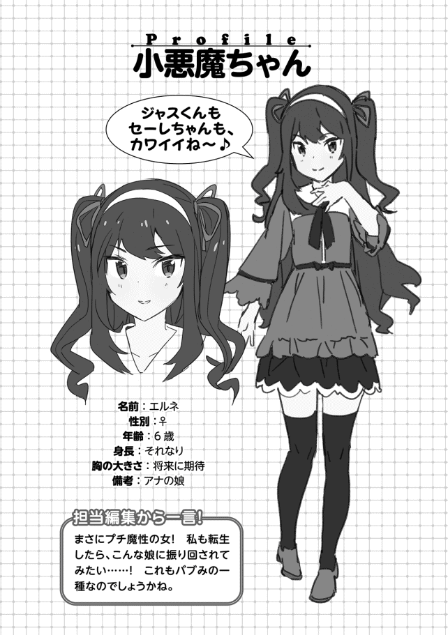
マジメでお堅いところさえあるアナさんとは対照的に、ラテン系にも通じる情熱的な勢いと魔性を併せ持つ恐ろしい娘・エルネちゃん。
だがいきなり我が家に遊びに来てしまったことをお母さんに叱られた後、帰ってきたウチのお袋に対して、殊勝 にも深々と頭を下げた。
「勝手にジャスくんとセーレちゃんのところに来て、申し訳ありませんでした......」
「娘のΜлФяц 、誠に申し訳ございません......」
母親のアナさんまで隣に並び、娘と一緒に直角に腰を折り曲げた。何か特別な言葉遣いなのか、俺には分からないところもあった。
ちょっと大げさすぎる謝罪にも見えたが、お袋は戸惑うことなく、むしろ貴婦人のように上品かつ堂々とした姿で、親娘の謝罪を受け入れた。
「......いいわ。もう気にしないで」
そしてお袋が許しの言葉をかけると、二人は改めて深々と頭を下げた。
その様子を、俺とセーレたんはソファーに座って、チャロちゃんに濡れタオルで手や顔を拭き拭きされながら眺めていた。セーレたんはタオルを顔に近づけられるとちょっとだけ嫌そうに首を捻っていたが、先に俺が大人 しく拭かれると次はまったく嫌がらなくなった。
「はい、キレイになりましたねー」
「ああぁ〜ん」
チャロちゃんが褒め、セーレたんが喜んでいるのを横目に口元を緩めながら、俺はお袋達の一部始終を見届けていた。
「......」
まあ、普段はかなりフレンドリーな接し方はしていても、いわば勤め先──雇い主のお宅に、子供がアポなし突撃ちゃったんだもんなあ。それにしても、今のお袋の凛とした雰囲気は、本物の貴族かお姫様のようだった。
ひょっとして......アナさんとお袋は、「親しき仲にも礼儀あり」ということを、エルネちゃんに対してわざとすぎるくらいに見せつけることで教えているのかもしれない。だとすると、それを打ち合わせもなくその場でやって見せたのだから......。
アナさんもお袋も、すごいよな。
「......うーん」
もしかすると「フリ」とかじゃなくて、本当に身分差があるのかもしれないけどな。
ま、俺は気にしないさー。
──次の日の、お昼前。
前から俺が絵本好きだということをアピールしまくったおかげで、仕事の家事が一段落 ついたらしいマールちゃんにソファーで読んでもらっていると、こんこーんと軽やかなノックが聞こえてきた。
「ぉ？」
「あれ？ 誰だろう......」
セーレたんも揃って三人で顔を上げ、マールちゃんは小さく呟きながら首を傾げる。俺もそうだけど、ノックの仕方にもビミョーな個性があって、誰が叩いたのかだいたい分かるのだ。俺の場合は、なんとなーく「気配」みたいなモノも感じるんだけど......。
ちなみに気づいたのは、わりと前からだ。
......そんな殺し屋みたいなスキル、前世の俺にはなかったハズなんだが。
「はーい？」
マールちゃんが応えると、カチャリとノブを回してドアが開いた。
そこから顔を覗かせたのは──。
「おはようござい、まーすっ♪」
「あ」
昨日のキス──は、水に流すとして。
「ちゃんとお許しをもらって、遊びに来ちゃいましたー！」
我が家にちょっとした嵐を巻き起こした、小さな小悪魔ちゃんであった。
「今、『秋休み』なんですよぉ」
よっ、という掛け声と共に俺を抱き上げて一緒にソファーへ腰掛けると、エルネ嬢は隣のマールちゃんに向かってそう言った。さすがはおマセさん、服の色合いこそ昨日とあまり変わらないものの、なかなかオシャレな服で遊びに来た。
ちなみに今日は、アナさんは休みだ。あまり連続で来ることはなくて、それにアナさんが来る日には、チャロちゃんかマールちゃんのどちらかが休みの日になっているようだ。たまにそうじゃない日もあるんだけど、昨日はマールちゃんが休みで、朝からどこかに外出していた。
「ああ。そう言えば、もうそんな時期ね」
「はいっ」
話を聞いていると、俺の腰をエルネちゃんが両脚できゅっと挟んできた。そこでスカートとニーハイタイツとの間に覗く、ほっそりとした太ももの白──絶対領域を目に入れてしまい、俺は慌てて視線を持ち上げる。
「あんっ。......ちゃんとお座りしないと、アブナイよ？」
「お、おぉー」
くっ！ この娘にそんなつもりはないんだろうけど、また負けた気分だ......。
ええっと......本当にないよな？
「ところで、ちゃんと勉強はしてる？」
ひっそりと悔しがる俺の方へと来ようと、マールちゃんの座っている向こう側から手を伸ばすセーレたん。それに気づいてひょいっと自分のひざに乗せ、読みかけの本を置いたマールちゃんがエルネちゃんに話しかけた。俺は天使ちゃんと手をつなぐ。ブロークンハートが癒される。
で、直接の単語こそ省略されているが、学校の話であることはほぼ間違いなさそうだ。見た目通り、この小悪魔っ娘ちゃんは学生──きっと小学生なんだろう。
「もっちろんです！ ちゃんと、Яфн したいですからね......って、勉強の話はやめましょうよぉ！」
「ふふふっ♪」
アナさんの娘だけあって、おしゃまな外見に反して礼儀正しいところもあるエルネちゃんは、マールちゃんとも必要最低限に丁寧な話し方をしている。マールちゃんも年下の子には砕けたしゃべり方をしていて、こういったところでも異世界語についての理解が深まっていく機会になる。
でも残念なことに、解らない単語もあった。話のニュアンスからして、「秋休み」っていうのは「夏休み」と同じようなモノなんだろうとしても......。
こっちの小学校には、休み明けにテストでもあるんだろうか？ けっこうシビアだな。
「今日は遊びに来たんですもん。ねー♪」
「んぉー」
俺の空いている方の手を掴み、エルネちゃんが「えいえいおー」という感じで上げさせた。ま、羽を伸ばすお手伝いなら、喜んでしよう。
すると、隣のひざの上で......。
「ひゃあ〜ん♪」
セーレたんが自発的に、同じく繋いでいない方のおててを高く挙げた。それを見て俺はもちろん、マールちゃんとエルネちゃんも揃って可愛らしい笑みを漏らす。
「ふふふっ」
「あははっ♪ かっわいーっ！」
「あはー」
今日も晴れて爽やかな空気が窓から流れ、なんとものどかで華やかな時間が過ぎていった。
「──それじゃ、ジャス様とセーレ様をよろしくね」
「まっかせてくださーいっ♪」
まだ仕事が残っていたのか、それともお昼の支度か。ともかく、マールちゃんはそう言ってエルネちゃんに俺達を託し、エルネちゃんは自分の胸をとんと叩いた。そして空色のポニーテールがドアの向こうへ消えていくのを三人で見送る。
その直後、エルネちゃんは俺を脚の間に座らせたまま、手足を思いっきり伸ばし始めた。
「うぅ〜......んっ。うぅぅ......────くっん！」
黒いタイツに包まれた脚の指先がきゅっと丸くなり、やがてまっすぐに戻る。可愛らしい動きだった。
「はあぁ......♪」
「......」
まだ小学校の女の子とはいえ、伸びをしながら漏らす声は、ほんのちょっとだけ色っぽいなー。
そう思っていると、リフレッシュの終わったエルネちゃんが唐突に話しだす。
「......でも。ジャスくんもセーレちゃんも、おっとなしーもんねー」
「んー？」
「や〜ん」
はて、どういう話の流れなんだろうか？ よく分からんが、大人しくしているのは確かなので相づちを打っておく。
そこでセーレたんもきちんとお返事してくれるあたりは、さっすがーと言わざるを得ない。
「さって、と。......お昼まで、何しよっかなあー」
伸ばした両脚を交互に揺らし、背中とソファーとの間に挟んだ長い髪を手櫛 で流しながら、エルネちゃんが独り言のように言う。まあ、本気で赤ん坊である俺達に意見を聞くワケではないだろう。
......それにしても、いい匂いがする上にとてもキレイな髪である。触ってみたくなるな。
「ねっ、どうしよっか？」
「うぇっ？」
えっ、マジで俺達に聞いてるの？
驚いて目を丸くする俺にくすりと笑うと、エルネちゃんは部屋を一通り見回した。
「んー......。二人いるわりには、オモチャとか思ったより少ないんだよね」
「うー」
うん。まあ、あんまりオモチャでは遊ばんからなー。
俺はオモチャ自体の構造を見たら、後はもっぱらトレーニングに使うだけだし。セーレたんはたまに遊ぶけど、それよりも俺と一緒に遊ぶ方が好きだ。それに、最近は俺の触手がお気に入りで、ますます他のオモチャへの興味が薄れているご様子。俺がわざと遊んで見せたり、マールちゃんとかが遊びに付き合ってくれるときは別だけどな。
そうやって上から俺の顔を覗くエルネちゃんを見ながら考えていると、唐突にうなずき返された。
「ふぅん。そっかあ」
「──っ!? 」
つ、通じたぁ!? いいい、いや、まさかな......。
あからさまな反応はマズイと理解しつつも、思わず目を見開いてしまった。
いちおう、小首を傾げてごまかしておこう。
「あはーっ♪」
「あぁ〜ん」
「いやああーん、何回見てもかわいいーっ♪」
そこに、見事すぎるタイミングでセーレたんも横から抱きついてきて、エルネちゃんは悶えるように腰から上と首を横に振り始めた。腰まで伸びた後ろの髪は揺れただけだったが、上にくくったツインテールは広がって、右へ左へと振り回される。
そのブンブン具合が面白いようで、セーレたんが笑顔と共にぱちぱちと手を叩き始め、エルネちゃんも喜んでますます首を振る。
「きゃあぁああ〜♪」
「いやあああああーーーーん♪」
「......」
ご、ごまかせたのか......な？
セーレたん、様々である。
「......でも、どうしよ？ ボール遊びでもする？」
「んー」
「ん〜？」
エルネちゃんが首を捻り、俺も一緒に首を捻る。セーレたんもそれをマネして、小悪魔ちゃんが小さく笑った。
実は、イマイチ気乗りしないことをさり気なーくアピールしているのだが、このくらいのリアクションであれば妹ちゃんもフツーに見せるので、問題はない。
「そっか、あんまり気分じゃないんだねー」
「......」
ま、また通じたよ......。お袋達もけっこう察してくれるが、このくらいの歳の子がそれをできるっていうのは、かなりスゴくないか？
驚きをごまかすのに目をパチパチさせていると、エルネちゃんは俺とセーレたんの頭をなでながら、衝撃の理由を話してくれた。
「あたしね、ウチでも下の子 の面倒を見てるから、なんとなく分かるんだよっ♪」
「おおーっ!? 」
「にゅ〜？」
そ、そうだったんだ......。
エルネちゃんに「下の子」っていうコトはすなわち、アナさんには子供がもう一人いるというコトである。
アナさん 、若いのに二児 の母親だったとはっ！
「......」
それを言うなら、お袋もあんな可愛い顔して俺達 の母親だったな......。どこかの少子高齢化の国が聞いたら、政府高官達が泣きながら教えを請いに来るぞ。
......だけど、それなのにウチへ働きに来ているなんて、ますますスゴイよなあ。と同時に、アナさんが俺達の「乳母」の仕事をこなせていた謎が完全に解けた──ってか、今になって気づいた。
まあ確かに、アレだけの偉大なる母性をお持ちなら、キャパにも十分に余裕があるだろう。空いたリソースを仕事に活用しているアナさん。さすがである。
「うーん。ぬいぐるみ......は、男の子だもんねえー」
俺があくまでもアナさんの育児と仕事の両立について考えていると、エルネちゃんは俺達との遊びについての考えを再開した。
ところで、この部屋にあるオモチャやお人形さんの類は、しばしば入れ替えがなされている。見てみるとほとんど全部がリサイクル品のようで、俺達があんまり興味を示さないものや、成長して必要なくなってきたものと交換しているらしい。とっても経済的だよなー。
が、そうなると衛生面について不安になるところだけど、メイドちゃんズもお袋も日頃からよーく注意してくれているので、それもバッチリ。ぬいぐるみでさえ、洗って外に干してあるのをときどき見かけるくらいだ。
なお、その様子をお袋が俺達を抱っこして見せながら──
『○○ちゃん（お袋の命名）も、今日は一緒にひなたぼっこね〜♪』
──なんて言いながら、にこにこしている。
特にセーレたんが大喜びするのだ。
「取っ組み合いは......しないよねー」
いや、俺達はよくやってるよ？ しかも実は、お袋達もたまーに仕掛けてくる。特にお袋とはガチで取っ組み合うので、ムネに埋もれるわ長ーい髪やスカートに絡まるわで、毎回けっこうカオスと化す。
でもまさか、エルネちゃんとは取っ組み合うワケにいくまい。髪の長さはまだいいとしても、スカートの短さがキケンだ。
「あぅー？」
「んゃあ〜」
セーレたんの顔を見てみると、こちらも特にご希望はなさ気 な感じ。ならば、そろそろエルネちゃんのお悩み解決のためにも、俺の要望を示すことにしよう。
「うーうー」
俺を挟んでいる太ももの片方を、ぺちぺちと叩いてリスントゥミー。無論、スカートの上からである。
「んっ？ どうしたの？」
「んうー」
だが、言葉を話せるワケでもなし、かといってジェスチャーが具体的すぎても不自然。とゆーコトで、大ざっぱな動きでの意思表示を試みる。
「ああーっ」
「えっ......？」
腰を捻って後ろへ振り向き、俺が両手を伸ばした先にあるのは──本棚。
「あたし......じゃ、ないよね？」
ええ。決して、君に抱っこをせがんでいるのではございませんです、はい。
「あー」
本棚もオモチャと同様、中身の入れ替えがなされていることを俺は知っているのだ。しかも子供向きのモノだけじゃないようで、メイドちゃんズが個人的に読んでいるのも見ている。実際に触手で引っ張り出してみて、今の俺には読めない本もチラホラとあったしな。
だから、運よくエルネちゃんがそんな本を選んで読んでくれたら嬉しいなー。
......とまあ、そういう魂胆だ。
もちろん、小学生であろうエルネちゃんでも読めない本だったなら、それは仕方がない。逆に、そんな難しいのを読まれてもこっちが困る。
エルネちゃんの読めるくらいの本が、ベストなのだ。
「ジャスくんって、本が好きなの？」
「おー♪」
大きな目をパチパチさせているエルネちゃんに、本好きをアピール。
前世では、ライトノベルが限界な「活字離れ」の典型だった俺。だが今の俺にはとにかく、この世界を知るための手がかりが必要なのである。
「ああ〜♪」
セーレたんも俺のマネをして、ソファーの後ろにある本棚に向けて両手を伸ばす。
「おーん、おーうん！」
「あ〜ん、あぁ〜んっ！」
「お、おおーん......」
「あああ〜ん♪」
「......」
なんか、乳児二人で、どっかの雨乞いの儀式みたいになってるけど......。
まーいいや。
「セーレちゃんも......。そ、そこまで好きなんだ......」
「お、おょー」
「にゃあああ〜！」
エルネちゃんが若干引いているような気もするが、ここは勢いで押し通そう。
そして、それが功を奏したようで。
「二人とも、すごいんだねー。
......まだ、二歳 にもなってないのに」
「ん？」
二歳？ なんで、一歳を飛ばしていきなり二歳......？
「......っ！」
ああ、ピンと来たっ！ そういうコトか！
乳母の件を考えると、エルネちゃんの「下の子」は俺達とそう遠くない生まれのハズ。ということは、その子も「二歳」になっていないか、なったばかりだろう。その子と比べて、エルネちゃんは俺達を「すごい」とほめてくれたんだと思う。
しかし、俺達は推測だが、まだ誕生日を迎えていない。生まれてから一年未満。
つまりこの世界──少なくともこの国では「ゼロ歳」と言うのではなく、生まれてすぐに一歳、二歳と数える可能性が高い。「数え年」ってヤツだな。
もしもハズレだったら......それはそのときに覚え直せばいいし、当面はそのつもりでいよう。
「うん。じゃあ、お姉ちゃんが読んであげるねっ♪」
「──おっ？」
久し振りの名推理に酔いしれていると、不意にエルネちゃんに脇を抱えられ、いったん隣へと座らされた。で、エルネちゃんが立ち上がる。
それからソファーの後ろへ回ると、棚の下の方ではなく──高いところにあった中の一冊を背伸びしてつまみ出し、それを持ってとことこと戻ってきた。
「はいっと、お待たせ〜──あれ？」
「きゃはあぁあ〜ん♪」
「うーい」
お疲れちゃーん、と手を挙げる俺の傍 らには、既にセーレたんがべったり。エルネちゃんが離れてすぐ、こっちに来たのだ。
「たはは。セーレちゃんは......抱っこしなくてもいい、かな？」
「んー？」
うん、いいと思うよ？ そう取れるような取れないような、なんともビミョーな仕草で答える。代わりに妹ちゃんの頭をひとなでして、エルネちゃんは俺の隣へ腰を下ろした。
「じゃ、読むねー」
「おー」
さーて、果たしてどんな本を持ってきてくれたのやら。見せてくれた表紙は、けっこう渋い。実写みたいな絵が描かれていた。
あの辺に並んでいる本は、俺もまだ見たことがないので楽しみだ。
エルネちゃんは本を開くと、とっても可愛らしく高い声で、ゆっくりと読み始めた。
──むかしむかし。おじいさんとおばあさんが、住んでいました。
「......ほ？」
な、なんですと？
昔話だったのにもビックリだが......それ以上に、ものすっごく聞き覚えのある出だしなんですけど。
「ん？ ジャスくん、どうかした？」
「うー？」
ハッキリ「ＮＯ」とは言えない立場のため、例によってそれっぽく返しておく。エルネちゃんはちょっぴり頭を傾けたものの、すぐに続きを読み始める。
「こほんっ」
──おじいさんは山に狩りをしに、おばあさんは水をくみに川へ行きました。
「......」
細かい部分は微妙に違うけど、なんかますます聞き覚えのある展開だなオイ。
隣で首を捻るも、エルネちゃんは気にした風もなく次の文を読む。
──おばあさんが水をくんでいると、川の上の方から......。
「......」
こ、これはいったい......。ここまでほとんど「あの昔話」と一致するじゃないか！
思わずツバを飲む。
も、もしもこの先も同じなら、「ドンブラコ、ドンブラコ」の次は──。
──おじいさん が流れてきました。
「うおおおおおおおおおおおおおおおおーーーーーーいっ!? 」
「きゃあっ!? 」
「ひゃあっ!? 」
大声を上げてしまったせいで、エルネちゃんとセーレたんをビックリさせてしまったが......それどころではないっ！
おい、じーさん！ あんたの身に一体ナニが起こった!?
ナニかを狩ろうとして、返り討ちにでもされたのかっ！
「よ、読んで......いい？」
「あ」
し、しまった。エルネちゃんがちょっぴり怯 え気味だ。......なんとか煙 に巻こうと、セーレたん直伝・エンジェルスマイルをやってみる。
「あ、あはーっ♪」
しかも、左右のほっぺたにそれぞれ指先を当てた、スペシャルヴァージョンである。
「わわっ。か、かわいい......♪」
「きゃああああ〜んっ♪」
......うまくいったようだ。本家本元もお喜びでいらっしゃる。
ちょとだけ、それでいいのかという気もするが......先が気になるので、ここはスルーして続きをどーぞ。
「ふぁい......♪」
──おじいさんはおばあさんに助けられ、目を覚ましました。
「ほっ」
一命を取り留めたようだ。よかったな、じーさん......。
横を見ると、セーレたんもじっとエルネちゃんを見つめ、話の続きを期待しているようだ。
次の文はどうやらセリフのようで、エルネちゃんはキリッとした表情を見せた。ムリして低い声を出そうとまた咳払いをしているのが、けっこう可愛い。
「こほんっ」
──ハハハ。このオレ様も歳を食ったもんだ。昔のようにはいかねぇな......。
「......」
意外とハードボイルドなじーさんだな......。かなり渋いぞ？
ところで、流れからして、次はおばあさんのセリフだろう。
──あらぁ。嫌だわ、おじいさん。
エルネちゃんのセリフがけっこうセクシーな感じで、違和感を覚える......。
昔話ということで、ずっと頭の中ではクレヨンで描いたような風景をイメージし直していたんだが。これなら、実写系のままの方がしっくり来るな。
というか、合間に見せてくれた挿絵も表紙と同じく実写系だったし。おじーさんとおばーさんの絵も、やたら見た目が若かったし。
......まあとにかく、今はセリフの先を聞こう。
エルネちゃんは「大人な女性」が気に入ったのか、セリフに熱がこもる。
──そんな事ないでしょう？
ふふふ。だっておじいさん、昨夜だって 、あんなに激し─。
「オギャアアアァアアアアァアアアアァアアアアアアアアアァアアアアアアーーーーーーーッ!? 」
「きゃあああああああああああーーーーーーっ!? 」
俺の二度目の絶叫に、今度はエルネちゃんも飛び上がった！
「な、なんなのよもうっ!? 」
「おぎゃっ、おぎゃぎゃっ......」
だ、ダメッ！ それ以上読んだらダメだから！
どー見てもソレ、子供向きじゃないからっ!!
「ふ、ふぇえ〜......」
セーレたんが目を丸くして涙ぐんでるんだけど、今だけはちょっと辛抱しておくれっ！
「も、もうっ！ ジャスくんってば、いきなりどうしたっていうのよーっ」
いやあ......さ。た、たぶん、そのページをめくっちゃうと──な？
だが、もどかしいことに、それを伝えられる手段を俺は持っていない。
仕方ないので。
「あ、あはーっ♪」
「えっ！ なんでそこで笑うの!? 」
うーん、今度はごまかせないか──。
万事休すかという、そのとき。
「え、エルネちゃーん!? 何があったのー？」
ドアの向こうから、チャロちゃんの声が！
できればお袋か、マールちゃんの方がもっと良かったのだが──それでも助かった。エルネちゃんは読みかけの本をソファー横にある小さなテーブルに置き、チャロちゃんの問いかけに応える。
「ご、ごめんなさーい！ なんでか、ジャスくんが急に──」
その言葉の途中で、ドアが開いてチャロちゃんが飛び込んできた。
「だ、大丈夫なんですかっ！」
幼さの残る顔立ちに緊迫感を露 わにしたチャロちゃんの様子に、逆にエルネちゃんは平静を取り戻した。
「ええ......あ、はい。後ろから取ってきた本を読んであげていたら、ジャスくんが急に」
そして。そんなエルネちゃんを見て、チャロちゃんもすぐに落ち着く。
「へっ？ 本？」
「は、はい」
「......ど、どの？」
「これ......」
指をさした先にある、本の表紙を見たチャロちゃんが。
「──────あ」
一瞬、目が泳ぎました。それからしっぽの白い毛が付け根から次第に逆立ち、小刻みに震え始めました。
やがてねこ耳も同じように震え始めると。
「きゃああああああああああアアアアアアアアアーーーーーーーーーーッ!? 」
音程が高すぎてキンキンを通り越した超音波声 で叫びながら、チャロちゃんが靴を脱ぎ捨てると同時にテーブルの上へお腹からダイブした。
「きゃああああっ!? 」
ちょっとしたものが置ける程度の、小さな引き出し付き テーブルである。ほとんど体当たりのような勢いで飛んできたチャロちゃんに、いちばん近くにいたエルネちゃんも小さな悲鳴を上げてのけ反る。
そしてチャロちゃんも、乗り上げるというか突き刺さるようにテーブルでお腹を強打。身体が「へ」の字に折れ曲がってお尻は上がり、顔面は柔らかなソファーに沈み込んだ。なお、しっぽはピンと真上に立っている。
「げふぉおおっ!? げほっ、げほ......！」
『......』
ソファーに押しつけた顔を横に向け、咳き込むチャロちゃん。咳に合わせてしっぽが跳ねる。
一方で俺達三人は、身体を斜めにしてチャロちゃんを避けようとするポーズで固まっていた。急ブレーキのかかった電車の中みたいな状態である。
ところで、お腹は大丈夫なんだろうか......。心配しながら見ていたが、やがてチャロちゃんは身体を起こした。
......と思ったら、真っ赤な顔のままでなにやら早口でまくし立てる。
「こっ、こここここの本は、ももうちょっと、おっ、おおっ、オトナになってから読んだ方がイイかなあーーーって思いますよわたしはーっ！」
ダイブの際に吹っ飛ばして空中キャッチした本を胸に抱え、チャロちゃんはお尻を高くした体勢で頬を引きつらせて笑う。その姿に、エルネちゃんは思いっきり引いていた。
「は、はあ......」
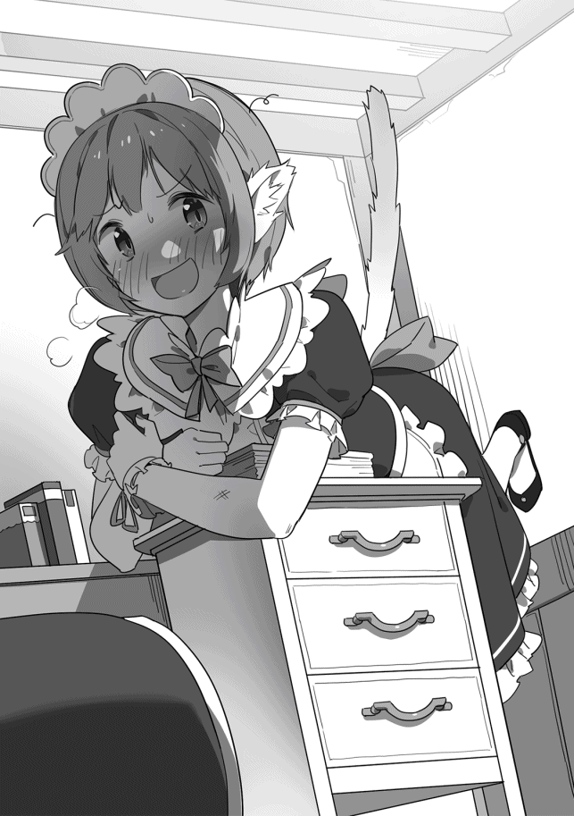
「あ、あははははー♪」
「......」
だがきっと俺は、菩薩 のような──もしくは、親戚のオバちゃんのような微笑みをたたえていることだろう。
うんうん。チャロちゃんももう、そういう本を読む年頃になったんだねえ。
「ふぇっ......」
「おおうっ」
おおっと、いつまでも感慨に耽 っている場合ではなかった。よしよーし、よく我慢したねー。
隣で今にも泣きそうになっていた妹ちゃんを抱きしめ、俺はアルカイックスマイルを浮かべたまま、小さな背中をぽんぽんしてあげる。
「ちゃ、チャロさん？ それって、もしかして......」
「あ、あははー？」
だんだん顔を赤くしながらもジト目で見下ろすエルネちゃんに、チャロちゃんは既にハードにボイルされた顔で思いっきり作り笑顔を浮かべてごまかそうとしていた。が、しっぽ全体が電動ブラシのように振動していて、その動揺っぷりが伺える。
......そのままコップや水筒の中に突っ込んだら、とてもキレイに洗えそうだな。
「ちっ、ちちちチチ、違うんだよ!? そうじゃないの！ た、ただ──」
「ただ？」
「──おばあさんはただ、女の人のフリをしてる だけだから！」
「......」
な、なんというコトを口走りなさる......。あまりの超展開に、さすがの俺も絶句である。
エルネちゃんも固まっていた。
それから十秒くらい経つと、エルネちゃんは表情が固まった状態でそのままカクンと首を斜めにし、まつげの長い瞳を何度も瞬かせた。
「......え？」
頭の上に「？ 」がドンドン増えていくのが、目に見えるようである。
「え？ えっ？ え、えっと......？」
よーするに、「おばあさん」は性別的な意味で 「おばあさん」じゃなかった、というコトなんだが──ま、まあソレはともかく。エルネちゃんは、まだ知らなかったようでなによりだ。
願わくば、これからもずっとそのままの君でいてもらいたい。
というか、こっちの世界にもあったんだな......。
「こ、コレはねっ！ ききき、近所のおオオ奥さまからあああ 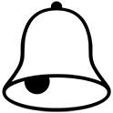 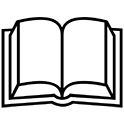 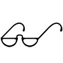 ──」
ねこ耳メイドさんがテーブルの上でジタバタしながら、誰も聞いていないことを喋り始める。ちなみに早口な上にドモりまくりで、俺には何を言っているのかサッパリ分からない。でも、それはエルネちゃんも同じようで。
「あぅ〜ん？」
セーレたんもまた、チャロちゃんの方を見て可愛らしく小首を傾げた。
......おおっと、俺もそうしよう。
「あうーん？」
これで、三人揃って同じ方向に傾いた。
「──と、というワケだから、大丈夫なの！」
「は、はあ」
残念ながら、その真相は定かではないが......。
「あにゃあ〜？」
「うー？」
──ぜひとも彼女が、「Ｂ」と「Ｌ」のつく趣向をお持ちでないことを祈る。
日中の日射 しこそ暖かいものの、朝夕はだんだんと肌寒さを感じるようになってきた今日この頃。お隣さん家 の上に見える青い空が、とてもキレイである。
「あー......」
朝のお掃除と空気の入れ換えが終わると、マールちゃんは開けていた窓を閉めてしまう。横にセーレたんを抱きながらベビーベッドに寝そべって眺めていた俺は、ちょっと残念な気持ちになる。
ついつい声に出してしまった俺を見て、振り返ったマールちゃんがばつの悪そうな表情を見せた。
「すみませんジャス様。この時期は、お二人にはあまりいい空気ではないですから......」
「うー？」
そういえば、何かお祭りがあるとかどうとかって、前にエルネちゃんが言ってたな。今度の休みに、ママに連れてってもらうんだー♪ って、すごく嬉しそうだった。
その祭りとやらに俺も連れて行ってもらいたいところだが、残念なことに日なたぼっこでさえこの部屋の窓辺で済まされ、眼前に広がる庭にも出してもらえない。俺はともかくとして、セーレたんに「外の世界」に触れさせてあげるのは、いい刺激になると思うんだけどなぁ。
正真正銘の「箱入り」として大切に扱われている、俺と妹ちゃんであった。
「はい、では外に出して差し上げますね」
そう思っていた矢先、さっそく俺の願いが通じた！
......というワケではなく、マールちゃんはベビーベッドに張り巡らされた木の柵の角についている金具をカチャカチャと外し、側面の柵を外側に倒した。
外は外でも、アウト・オブ・ザ・ベッドである。......ゾンビ映画っぽいな。
「先にセーレ様からですね」
「や〜ん♪」
マールちゃんは瞳を細めて穏やかに微笑むと、俺の腕、というか肩の付け根に頭を乗っけていたセーレたんを、慎重かつ優しく抱き上げる。
その位置がちょうど頭の収まりがいい、というのは分かるんだけどねー。屈託のないエンジェルスマイルを前にすると、「どけて」とはなかなか言い出せないのだ。......たとえ、大きな頭の重みで腕の感覚がなくなってもな。
フッ......まったく、罪な美幼女だぜ。
「はい、ジャス様も」
「おーん」
せっかくのボケをスルーされてしまったようでちょっと切ない気分になるが、それこそ美少女なメイドさんに罪はない。痺 れていない方の手を差し出し、俺は大人しくマールちゃんの胸に抱かれる。
「ふふっ。ジャス様も、どんどん大きくなっていきますね」
華奢 な細腕には楽ではないようで、持ち上げる瞬間には少し勢いをつけ、抱っこするときにはしっかりとおシリを支え、俺の上半身を胸に押し当てるようにしてくる。ふんわりと俺の頭......というか顔の横半分を優しく受け止めてくれる感触には今でも若干の照れを覚えるが、ヘタに動くとこの娘が大変なので神妙にする。
清々しい花のような香りに包まれ、俺の身体はゆっくりと絨毯の上に下ろされた。で、先にお座りして待っていたセーレたんとさっきぶりの再会を果たす。
「あ〜うん♪」
「おーいす」
すぐに抱きついてくるセーレたんの姿に、一緒に絨毯へ腰を下ろしたマールちゃんも顔をほころばせた。
「ふふふっ、本当にお二人は仲良しですね」
「きゃあ〜♪」
「おー！」
そりゃあ、モチロンですよ！
朝の穏やかな日差しと、秋の涼しい空気。そして、しんと静まりきった部屋。そんな中に、俺とセーレたんは二人っきりとなった。ときどき誰かしらが様子を見に来てくれるけど、特に朝は忙しいようでわりとよくあることである。
「あぁ〜う？」
つぶらな蒼いおめめをきらめかせ、天使のような赤ちゃんが俺を見つめる。いやむしろ、赤ちゃんのような天使様。......あれ、どっちだろう？
赤ちゃんが先か、天使が先か。非常に難しい問題である。
「......っ！」
そのあまりに可愛らしく眩しいお姿に、俺っちは反射的に両手で自分の顔を覆った。手が小さすぎて顔の下半分がほとんど隠れていないような気もするが、細かいことはドンマイである。
「いぁいー」
「ゃ？」
俺の謎の言葉に、妹ちゃんが可愛らしく首を傾けている......様子が目に浮かぶ。だが視界を封じた今の俺に、そのぷりちーなご尊顔 を拝 することは叶わぬ。
な、なんということだ！
「......いぁいー」
まさにお先真っ暗。だが、かのバブル経済の破綻を目の当たりにした投資家達も想像を絶するであろうダメージを食らいながらも、俺はついにその苦しみを乗り越え呪文を完成させた。
さあ。今こそ、開放の時だ。
「─ばぁあ♪」
赤ん坊とのお遊びの基本。
「いないないばぁ」である。
果たして俺が目にしたものは、セーレたんの満面の笑顔。
またの名を、天上の楽園──。
「きゃあぁああぁあああ〜〜〜んっ♪」
シャングリ・ラであった。
「ぐっはああああああああっ!? 」
やばいコレ、まじパねーっす！ パねーっすよ!!
再び自分の目を覆い隠しながら、今度は後ろにひっくり返って絨毯の上を左右に転がって身悶える。俺の舌が回るならば「目があー、目があーっ！」と叫んでいたところだ。
......そこへ更に。
「きゃあ〜！」
「げふううぅっ!? 」
ちょうど俺のお腹のド真ん中に、セーレたんの大きな頭が直撃！ きっと喜んで抱きついてくれたんだろうが、この直撃はまさしく「ジャスにミート」であった。
別名、クリティカルヒットとも言う。
「────っ!? 」
目ん玉をひん剥 いて呼吸が止まり、俺は四肢を突っぱねて痙攣 を始める。ちょうど、息を吸っていたところにヒットはキツイ......！
しばらくは声も出せず、死にかけの虫のごとくピクピクしていた俺だったが、抱きついたセーレたんがダメージを受けたお腹をいたわるようにすりすりと頬ずりしてくれたおかげで、ほどなくして回復を果たした。
「あぁ〜ん♪」
「はぁ......はぁ......」
あ、危なかった。まさか「いないいないばぁ♪」がコレほど命懸 けになるとは、予想だにしなかった。そして、この俺をここまで見事に手玉に取った彼女の魔性っぷりに身体が震える。
さ、さすがだ......。
そのままセーレ様にマウントを取られていると、突如として部屋のドアが開け放たれた。いちおうノックはされていたが......キツツキのような連打からすぐに開けたので、ほとんど意味がない。
「ジャスくんセーレちゃん、おっはよーーーーっ♪」
静かだった部屋に響き渡るキンキン声。俺達は窓際で遊んでいたため、逆さまの視界に映ったのは、ベビーベッドの脚の向こう側に現れた、ほっそりと眩しい太ももだけ。......正確に言うと、スカートとニーハイタイツの間に覗く絶対領域であった。しかし、それだけで誰が入ってきたのかは一目瞭然である。
例の本の騒動にも懲 りず、遊びに来てくれていることに感謝だ。
「あれっ、二人ともいない？」
「おー！」
「きゃあ〜」
また数日ぶりに来てくれたエルネちゃんに、俺は仰向けのまま声だけで返事をした。手は振っても見えないだろうし。ちなみにセーレたんは返事をしたのではなく、声を出した俺のお腹に耳を当てて喜んでいるようである。
「あははっ♪ 今日も仲よく遊んでたんだねーっ」
長いストレートの髪を向け、絨毯の上にいったん腰掛けたエルネちゃんは靴を脱ぎ始める。一生懸命に脚から抜き取ろうとしている後ろ姿を見るに、ブーツを履いてきたらしい。おマセな子である。
でも、靴がすっぽ抜けて「ひゃっ!? 」という声を上げてのけ反っている姿は、見ていて微笑ましい。
「ふーっ......♪」
やっとこさ脱ぎ終わると、エルネちゃんは短い丈のスカートを揺らしながら、ベビーベッドとソファーの間を通ってこちらにやってきた。それからひざをつき、俺と天使ちゃんの頭をなで始める。
「今日もかっわいいー！」
「ああぁ〜ん♪」
「......ぉー」
可愛がってくれるのは嬉しいんだけど、ミニスカートでそばにしゃがまれると目のやり場に困るんだ......。
ちょっと前に本人が六歳だと言っていたが、相応の小さくほっそりとした身体つきとは対照的に、よく手入れされたストレートの茶色い髪や、人に見せることを意識しているようなポーズ、そしておシャレな服装のおかげで、エルネちゃんは年齢以上の女の子らしさを漂わせている。
さぞ、小学校じゃモテるんじゃなかろうか？
「ん？」
白と黒とが織りなす禁断の領域から目を逸らし、そのついでにドアの方を見ていた俺の視線にエルネちゃんが気づいた。
「あー、アレね。ママにおねだりして買ってもらったんだけど、履くのも脱ぐのも大変でヤになっちゃうよ〜」
「ほぅ」
そりゃ六歳だからねえ。「数え年」の説が正しければ、俺の感覚では五歳──日本だったら、ぴっかぴかの小学一年生ですよ。
俺は雨の日の長靴しか履いたことないけど、それでも当時は苦労した覚えがある。二、三年生くらいのときの記憶だ。
「ふふーん。......だけど、オシャレには手間がかかるものなのよ！」
というのに、エルネちゃんはそう言ってよく手入れされた髪に指を通してかき上げて見せた。果物系のような、甘い香りがふらりと広がる。
既にしっかりとした「女の子」であることに、ある種の敬意さえ湧き上がってくる。コレが同じ五、六歳の男の子だったら、教室で「うんこうんこー」と下ネタでも連呼しながら大笑いしている年頃である。
......今時の小学生は違うかもしれんが。
「セーレちゃんも【セフィア】さんに似て美人になりそうだから、オシャレしなくっちゃね♪」
「ひゃああ〜ん」
エルネちゃんは俺のお腹に頭を乗せていたハニーを抱き起こすと、ちょっと乱れていた金色の髪を手で直し始めた。それが気持ちよかったようで、とてもお喜びだ。
ところで......セフィアというのは、もしかしなくてもお袋の「本来の」名前かな？ 「セフィ」という呼び名さえ、親父かアナさんくらいしか言わないので、俺からするとけっこうレアである。
ようやく起き上がってうんうんとうなずいていると、ふとエルネちゃんのパッチリとした黒目がこっちに向いた。
「あはっ。もっちろん、ジャスくんだっておじさま似だからね。きっとカッコよくなるよ！」
「んー」
だといいけどなー。そして、エルネちゃんも親父の名前を言ってくれなかった。いつになったら判明するのか。
「はい、お兄ちゃんもキレイにしようねー」
「ふわー」
エルネちゃんは俺の髪も梳 き始めた。ちょっとくすぐったいけど、気持ちイイ。
当たり前のことだが、俺の周りにいる家族はみんな年上である。それに上の兄や姉もいないため、その差はかなり離れている。その中で最年少だろうチャロちゃんでも、十歳以上は確実に離れているハズ。となると、この娘との出会いはとても貴重だ。
なにしろ、俺と近い年代──この世界での「子供」がどういった感じなのか、いろいろと参考にできるからな。もちろん、個人差があることは理解した上で。
この娘が学校に通っているということは、俺とセーレたんも通うことになる可能性が高い。
義務教育だったら必然だし、そうでなくても、あの親父とお袋だったら恐らくは通わせてくれるだろう。
って何気なく考えたが......これが義務教育だったら、この国の進み具合には驚嘆モノだぞ。日本でも、義務教育ができたのは明治に入ってからだし──。
「あ、また難しい顔してるー」
「ふぇえー？」
俺が考え事に耽 っていると、不意にほっぺたを摘まれた。更に両手で押さえられ、口がタラコのようにされてしまう。
「あははははっ。おもしろーい♪」
「ほぅえ〜」
やめれーっ！ だが抗議の目を向けるも、ますます面白がってほっぺたをムニムニと揉まれる始末である。おかげで勝手に口が開閉する。
「あんゃあ〜♪」
「......ぅ」
ま、まあ。セーレたんが、俺の顔を見て喜んでいるからいいけどさ......。
でも、あんまりやるとヨダレが出るぞ？
「ふふーん」
なのに、エルネちゃんに気にする素振 りはない。さすが自分にも「下の子」がいるだけあって、そのくらいではなんとも思わないようだ。
「......」
それと──この娘。
大人相手に比べると、どんな些細な言動ミスもするまい、とそこまで気を張る必要がないのが助かる。それに「お姉ちゃん」であるせいか、ミョーに話が通じるし。
子供目線からのリアルな情報を得られる相手。しかも、かなり友達に近い感覚で付き合える、とても貴重な存在なのだ。
だから──。
「ほれほれー」
「むぎゅー」
「あはははははっ♪」
だから、やめれー。
「むぁー」
......あ、ヨダレ出てきた。
うふふ〜。捕まえてごらんなさ〜い♪
これが、お袋のようなワガママバディのスーパー美少女であれば絵にもなるのだが......。
「うわあああー」
どたどたどたー。夏休みに田舎のおじいちゃん家 の裏山で採ってきたばかりのカブトムシのごとく、俺は今日も元気に部屋の中を這いずり回る。一歩でも間違えれば、「這い寄る混沌」とでも呼ばれそうな気がするな？ ......誰に呼ばれるのかは分からんが。
「きゃあぁあ〜」
ぺたぺたぺた〜。対して、お引っ越し中のカルガモもかくやという愛らしいハイハイで俺と一緒に逃げ回るのは、もちろんセーレたんである。こんな可愛いカルガモさんがいたら、たとえ皇居周辺だろうとホワイトハウスの真ん前だろうと交通規制しちゃうぜ！ ......親父の仕事が本当に警察関係だったら、マジでやってしまうかもしれん。
まーそれはともかく。俺とこの子が揃って逃げているのならば、いったい誰が俺達を追いかけているのか、というと──。
「うふふふふふ〜。捕まえちゃうわよ〜♪」
なんと、お袋である。
ここ数日は秋らしい長雨が続いていたこともあり、太陽のように明るいエルネちゃんもお休みだった。そこで「明るく＆楽しく身体を鍛えよう！」というコンセプトの下、セーレたんと「二人鬼ごっこ」に邁進 していた俺達。
その大暴れっぷりにメイドちゃんズは苦笑していたのだが、お袋はむしろ「あら〜、楽しそうでいいじゃな〜い」と太鼓判を押してくれた。......と、そこまではまだよかった。
ところが、「本当に楽しそうね〜」という感想に続いて、なぜか「ねえ、ママも混ぜて〜♪」という、非常に想定外ながらも「なんともお袋らしいなー」と納得できてしまうお言葉が飛び出した。
──結果。四つん這いで逃げる乳児二人を、同じく四つん這いで金髪美少女が追いかけ回すという、世にもシュールな絵面 が顕現 するに至ったのである。
「うふふふふふ〜♪」
俺達から見れば大きな身体で両手を絨毯につけ、白いロングワンピースの裾に覆われたひざを摺 りながら笑顔で追いかけてくるお袋の姿は、意外と迫力がある。なお、立っているとひざの裏にまで達する超ロングな髪は、踏んづけたり引っかけたりしてはいけないと、ねじってまとめて後頭部にかんざしで留めてある。
それでもまとめきれず、毛先の何十センチかはそのまま流してるけど......。
おかげで、お袋の後頭部は巨大なバウムクーヘン、もしくは巨大な円盤型アンテナを搭載した新型の早期警戒機のようであった。
が、それよりも圧巻なのが──。
「待ちなさああ〜〜〜〜〜〜い♪」
「......!! 」
四つん這いになったことでより強調された──それでもなお重力に負けず、ゆっさたゆ〜んと揺れながらもその美しき形状を維持している、二つの奇跡 である。
振り向くと、奴らは俺のすぐ後ろにまで踊り迫っていた。
「ほ〜ら、追いついちゃうわよ〜」
「おわあああああああっ!? 」
奴らに捕まったらオシマイだ！ 圧巻どころか「圧殺」されてしまうことは、既に経験済みである。しかも、もれなく「全身くすぐりの刑」というオマケ付き。
「おおおおおおーーーーー」
「ひゃああぁあぁ〜〜ん♪」
故に、かなり真剣に逃げる俺。でも一方のセーレたんは、お袋が追いかけるスピードを加減をしてくれていることもあって、けっこう楽しそうである。
圧殺もくすぐりも、わりと喜んでいたし。
「お、奥様、楽しそうですね......」
お袋が大暴れできるよう、わざわざソファーを部屋の隅へと動かしたマールちゃんが、さすがに動かしようのない大人用ベッドに腰掛けて俺達の様子を眺めている。
ちょっぴり苦笑気味に。
「うわあ、スゴすぎます......」
そして、家具の移動とお袋が髪を留めるのも手伝ったチャロちゃんは、マールちゃんの隣でお袋の一部分を目にし、深い深ーいため息をついていた。左右のねこ耳は力を失い、横にぺたんと倒れてしまっている。
......しかし、今の俺はそれどころではない。動かされずに部屋の真ん中近くにあるベビーベッドの周囲を回りながら、俺は懸命に頭を働かせる。
「ぬおおおおお」
いくら、めろん──お袋様でも、俺達を二人同時には捕まえられぬ。セーレたんはずっと俺と併走しているが、お袋は公平を期すためか、今まで俺とセーレたんとを交互に捕まえてきた。
順番からすると、次は俺の番だ。
「はふう〜......」
既に三ラウンド目ということもあり、隣の妹ちゃんは早くもバテ気味だ。元の気温は肌寒いくらいなのに、うっすらと汗もかいている。
俺もあまり余裕はないけど、どうせ俺が捕まるならばこの子は休ませてあげたい。
ならば......。
「はぁはぁ......ひょっ」
敢えて周回の外側を走っていた俺は、いきなりスピードを上げてセーレたんを追い越し、そこから急に内側へ身体を寄せた。無論、天使ちゃんは進路をふさがれる。
「ふゃあん!? 」
勢い余ってこてんと倒れてしまったが、普段から転がるのが得意なセーレたんは頭を打ったりはしない。
「ああっ、セーレ様！」
「うわっ、だいじょうぶ!? ......みたいだね。ほっ」
メイドちゃんズは一瞬焦ったようだが、俺の思った通りである。
「ふにゃあ〜」
「うふふ〜。あらまあ〜」
そしてお袋も予想通り、ダウンした妹ちゃんをなでなでしてしばし労 うと、その横を通り過ぎて俺の追跡を再開した。
「はぁ、はぁ......ふっ」
これで、思い残すことは何もない。
──兄道 とは、死ぬことと見つけたり！
「うふふふふ〜、ジャスちゃん？ つ・か・ま・え......た♪」
「ぎゃあああああああ──────むぎゅ」
そうして俺は、名誉の二階級特進を遂げたのであった。
「──それじゃあ、大人しく遊んでくださいね」
「おー」
「あ〜」
掃除を終えたマールちゃんが部屋を出ていくと、また俺と天使ちゃんは二人っきり。今日は早朝から日射しが暖かく、とても過ごしやすい。しばらくはセーレたんに絡みつかれて絨毯の上をころんころんと転げ回っていたが、朝もそれで遊んでちょいと飽きてしまったので、俺はハイハイスタイルで本棚の前へとやってきた。
「......」
それにしても、相変わらず高層ビルのような本棚だな......。棚自体は取りたててゴージャスというワケでもないと思うのだが、四つん這いの赤ん坊から見上げると、まさしくそびえ立っているように映るのだ。最初に見たときは、初めての就職活動で都会の本社ビルにやってきた田舎の大学生は、たぶんこんな気持ちなんだろうなーと思ったものである。
......まあ、そんな経験は前世の記憶にはないので、あくまでも想像なんだが。
「よっ」
今も一人で布製のボールを抱いてころんころんしているセーレたんを微笑ましく思いながら、俺は片手から触手を出して杖とし、なんとか立ち上がる。両手から同時に出せれば松葉杖のようにしてもっと楽に立てるようになるんだろうけど、今はまだまだ練習中。代わりに接地部分を広げ、ラッパ状にして安定を確保する。
「んー」
また、ラインナップが変わっているっぽいな。ほとんどが古本みたいな感じなので、安く売り買いしてお金をやり繰りしているんだろう。......略して、売買金 ？
特に子供向けの本だったりすると、ごくたまーにページの隅っこに落書きがあったりして、それはそれで前の持ち主はどんな子だったんだろうなーと思いに耽ったりと、趣 があって悪くない。
「うーん......」
取りあえず立っては見たものの、赤ん坊の視力......しかも下からのアングルでは、背表紙のタイトルはよく見えないものが多い。絵本などを読んでもらえるようになったおかげで、簡単な単語ならそこそこ読めるようになったんだけど。
今日はアナさんが来ない日らしいからエルネちゃんも来ないだろうし、太陽の角度から見てもお昼が近い。空腹を実感すると、知的好奇心も後退してゆく。
ちょっと意味が違うけど、気分的には「花より団子」だ。
「きゃああぁああ〜っ♪」
「......」
大人しく本でもと思ったんだけど......俺も一緒にころころしようかね？ セーレたんに対する愛と萌えは、団子すら凌駕 するのだ。
思わず天を仰ぎ、ため息を漏らす。
「......んー？」
「あぁ〜」
手に伝わってきた感覚に気づき、視線を下に戻す。するとセーレたんがボールを手放し、ラッパ状に広げた触手の足元に頬ずりをしていた。俺の体重を支えるのに硬くしているのだが、その感触がお気に召したようだ。
ちなみに俺の触手自体に、感覚を得る機能はない。神経なんて通っていないのだから、当然といえば当然だけどな。
それにしてもこの子、本当に俺の触手が好きだよね......。
「......」
触手好きの美幼女。──ふと頭に浮かんだフレーズに、なんともキケンなニオイを感じ取ってしまった。
触手を生やした俺が言うのもなんだが、本当に大丈夫だろうか。
「ぁんや〜。ま〜う、ま〜う〜っ」
「おおーっ!? 」
そっかそっかー！ ......って、実際になんと言ってるのかは解らんけど、俺の目を見て手を伸ばしてくる姿を目にすれば、俺のなすべきことはただ一つ。直 ちに触手の硬度を解き、再び絨毯の上に腰を下ろす。
「はにゃあ〜♪」
セーレたんは、水たまりのようになった触手をぺちぺちと叩き、わずかに手にくっつく感触を楽しんでいた。なんという可愛らしさだろう。
「うー？」
触手 と遊びたい？
「やあ〜！」
「......」
うーむ、ドイツ語で返事をされてしまった。しかも、お日様のようなキラキラした笑顔で。
その無垢で清浄なる笑顔と、ただの百均のボールペンでさえも強力無比な必殺技（クーゲル......シュライバァァァーーッ!! ）へと変貌させてしまうドイツ語のクールさに、俺のハートもグーテンモルゲンである。
......意味が分からない。
「むふーん！」
想像上のカイゼル髭 をいじりながら、「さあ、存分に堪能したまえ！」と水たまりを示す。すると、セーレにゃんはまっしぐらに飛びついた。
「ふやあぁあああぁあああ〜〜〜〜ん♪」
はっはっはー......本当に大丈夫なのかな。そんなわずかな疑問も、天使ちゃんの可愛さの前には極めて無力。諸行無常であった。
「ふぁぁあぁぁああぁ〜......」
ははは。うっとりしちゃって、まあー。
「......」
いやホント、なんでこんなに気持ちよさそうなんだろうな？ ネコにマタタビをあげたみたいになってるぞ。
そりゃまー確かに、俺だってなかなかクセになる触感だとは思うんだけど......。
「は〜むっ♪」
「おうっ!? 」
こらこら、食べちゃダメだぞー。俺の中から出ているモノだし害もないらしいことは判っているが、それでも念のためにやめさせる。この子にはなくても、逆に俺へ何らかの影響が出る可能性も考えられるし。
その代わり、飴細工のようにうねうねと変形させて楽しんでもらうことにする。俺にとっても触手を操る練習にもなって、一石二鳥だ。
じょじょに念を込め、右の手のひらから出している触手を変形させていく。ほれほれー。
「ほーえ、ほーえ」
「きゃああああああ〜！」
おっ、さっそく興味を引いた。効果覿面 である。
「むー......」
最初は、先っぽに口の切れ込みと目のくぼみを入れるだけで作れるヘビ。口の奥から長い舌を地ロチロっと出させるのは......まだムリか。強引に突っ込んだ丸太を吐き出したように見えて、かなりシュールだ。
「ひゃああ〜！」
それでも、ウケたみたいだが......。
気を取り直して、トコロテンに戻した触手を再び変形させる。
「......」
なんだ、コレ？
先端をわずかに膨らませて作った頭に三角形の耳を生やし、更に前面を引っ張り出して鼻先を形成──した、つもりが。
可愛いワンちゃんを想像してみた結果、なんともビミョーな造形ができあがった。動物らしき形状こそしているものの、それがなんの動物なのかがサッパリ分からない。
敢えて、似ているものを挙げてみるなら......バールのようなモノ？
生き物ですらねえ。
「......えぅ」
それからも、角や牙を生やしたり羽やしっぽなどをつけたりしていくにつれ、ますます原型が消えていく。気づいたときには、果てしなく名状し難きモノになってしまっていた。
「ほ、ほーや」
ほーら、セーレたん？ 名状し難きモノですよー。
いあいあー。
「にゃあああああ〜♪」
「......はえ？」
なんでか、すっごくウケてしまった......。素直に喜べぬ。
そういや俺、美術はあんまり得意じゃなかったなあー。ゴッホとコッホの違いこそ分かるが、モネとマネの区別はイマイチである。......そんな俺が頭の中の想像だけで作ったのだから、こうなることは道理であった。
今度は実際の図鑑やぬいぐるみなどを参考にして、いつか本当の意味でセーレたんに喜んでもらえる、立派な造形師にならなければ！
......ま、アーティストへの第一歩はいつか踏み出すとして。本日は、精密操作の腕を磨きつつ妹ちゃんに楽しんでいただくことにしよう。
「あいあいあいあいー」
「ひゃあぁあああぁあ〜！」
元に戻した触手を細く長ーく伸ばして、セーレたんの首の下をこちょこちょ。普通になでてあげるのも喜ぶが、この子はくすぐられるのも好きなのだ。
俺には、ちょっと理解できない感覚である。
「ちょあー」
「ふやああああぁああああ〜♪」
「......!! 」
こてんと絨毯に仰向けになると、手足の指の先をきゅ〜っと丸め、全身をくねらせて笑うセーレたん。あまりに可愛すぎて、むしろ俺の方が悶絶しそうだ。
「ちょいあー」
「はにゃあうあぁああああ〜〜〜〜！」
俺だけでなくお袋達も、スキンシップのついでにしばしばセーレたんをくすぐる。そうしたくなるのも当然であろう。とばっちりを食らって、俺もくすぐられるので堪らないが。
特に、この前の「鬼ごっこ」でお袋にくすぐられたときなど、スタミナを使い切ったところにヤられまくったので、つい──。
「はんやぁ、ひゃあああぁあ〜！」
「......」
うっかり思い出してしまい、ゾクゾクと全身が震えた。
日夜この未知なる世界に思いを馳せるたび、専用のカンバスに地図 を描くことは赤ん坊の宿命ではあるが......ああいった形でスプリンクラーが作動するのはヤバイ。開いちゃいけない扉が、ちょっとだけ開いたような気がしたもんな......。
今の俺が赤ん坊でなければ、おムコに行けなくなるところである。
「きゃあぁあぁあぁあああ〜〜〜〜♪」
「あっはっはー」
やっぱり俺は、されるよりする方が性に合っているようだ。真っ赤なお顔で全身をぴくぴくさせているセーレたんを見ると、別の意味でゾクゾクしてくる。
だが、くすぐりすぎには注意しないと──。
「......ふわぁ♪」
「あ」
──────遅かっ、た。
ご、ごめん。
「は〜い、きれいになりまちたよ〜♪」
「......おー」
本日もまた、金髪美少女に対して下腹部を露出する事案が発生。
と同時に、男性乳児のでん部を拭き拭きされる事案も発生した。
ベビーパウダーらしきモノまでぱふぱふされ、アフターケアも万全である。事件解決だ。
「うふふ〜、いっぱい出たわね〜」
いつも通りのふんわりとした笑みを浮かべ、お袋が横に立つチャロちゃんからお手ふきをもらい、自分の手を清める。それから、俺の頭をなでてくれた。隣では、先に交換をしてもらったセーレたんが、スッキリとした笑みを見せている。小さな手足を動かしているのが可愛らしい。
俺も顔に笑みを貼り付け、二人に感謝の意を伝える。
「......あ、あはー」
赤ん坊の宿命とはいえ、ものすごく申し訳ない気持ちになるよね......。特に離乳食を始めてからは、嗅覚 的にも少々リアルになってきたし。
なのに、お袋もメイドちゃんズもイヤそうな顔ひとつせず処理してくれて、いつもどれだけ感謝しても感謝しきれない。
こうしてお世話してもらうたびに、少しでも早く成長して自分でできるようにならなければ、と思うのである。
「そういえば〜」
しゃがんで足元のカゴに洗濯物をまとめているチャロちゃんに、お袋が声をかけた。ベッドに寝ている俺から見ると、ちょうど目の前にチャロちゃんの耳としっぽがあって気になる。
「エルネちゃん、風邪は大丈夫なのかしらね〜？」
「ん？」
えっ？ 最近また来ないなーと思っていたら、風邪を引いていたのか。
お袋達から「風邪」という単語をたびたび耳にするようになっていたが、さっそくあの娘が流行の波に乗ってしまったようで......大変だ。
そういやここ三日ほど、アナさんも珍しく連休を取っているようだった。たまにはそういうこともあるだろうと思っていたのだが、看病しているんだろうな。
「昨日、買い物に行ったときにアナさんに会いましたけど、熱は下がってきたっておっしゃってましたよー」
「そうなの〜。よかったわ〜」
話しかけられたチャロちゃんが顔を上げ、お袋に応えた内容に俺もほっと胸をなで下ろす。......お袋の場合は、「なで下ろす」っていうより「上をなでる」って感じだけどなー。
仰向けで見上げていると、今日も白き連峰の向こう側にお袋の顔があって、鼻から下が隠れている。チャロちゃんからのアングルだと、もはや顔全体が見えないだろうと思われる。
そこで不意に名前を呼ばれ、俺はセーレたんと一緒に連峰の向こう側を仰ぎ見た。
「ジャスちゃんもセーレちゃんも、引かないように気をつけないといけないわね」
「......そうですねー」
しゃがんでいるチャロちゃんも、俺達のことを見つめる。
二人の目差しは優しく、そして真剣であった。
──その夜。
「ということで、ママもしばらくここでねんねするわね〜♪」
「うぇっ？」
「ふぁ？」
ネグリジェのようなセクシーパジャマを着て現れたお袋に、ベビーベッドの上で天使ちゃんと抱き合って遊んでいた俺は、いろんな意味で目を丸くした。今日のは、太ももどころか腰の辺りまで左右にスリットが入っており、いつもながら目に毒な装いである。親父はよく毎日一緒に寝られるよな、と改めて尊敬の念を抱く。
お袋の両手には、そんな寝間着にはあまり合わないカバンをそれぞれ提 げていた。小学生が体操服なんかを入れて学校へ持っていくような、我が家ではお出かけ全般によく使われる布製の手提げである。中身は着替えだろう。
まー確かに、この部屋には大人用のベッドも一つあるけどさ......。
「うふふふふふ〜♪ 嬉しいわ〜」
「きゃあ〜♪」
お袋になでなでされて、セーレたんが無邪気に喜ぶ。お袋も風呂上がりのようで、全身から満開の花畑のごとき、甘くかぐわしい香りが漂ってくる。お袋は特に髪が長くてウェーブがかっているので、ただ入ってきただけで、部屋全体が温かな日射しに包まれた春になる。
それは夜でも関係がない。
「......」
にしても、藪 から棒にどうしたというのだろう？ たまーに考え方までお花畑に見えるお袋だが、お袋の謎の行動には大抵ちゃんとした結果がついてくる。結果オーライ的なことも多いけど。
「もう少し時間があるけれど、ジャスちゃんとセーレちゃんはおねむじゃないかしら〜？」
「おー？」
「や〜」
ソファーにカバンを置いたお袋が、俺達の目の上を親指のお腹でなでながら聞いてくる。それにあいまいなリアクションを返すものの、お袋には通じたようで。
「そうよね〜」
と言いながら、柵の金具を外し始めた。
「そろそろかしら〜って、思うのよ」
「......う？」
「にょ？」
順番にソファーに座らせてもらった俺達が、お袋を見上げて小首を傾げる。腰を下ろしたお袋の片側には例のカバンがあり、俺達はもう片側に並んでお座りしている。妹ちゃんを二人で挟んでいる格好だ。
お袋の言葉の意味は、ほどなくして明らかになった。
「寒くなってきたものね〜」
「お？」
カバンのひとつから取り出したのは、黄色い毛玉状の物体。というか見たまんま、毛糸の玉である。更には手頃な長さの棒を二本取り出し、その意図がハッキリとする。編み物だ。
確かに......この部屋はビックリするほど暖かいのだが、ご飯を食べさせてもらうのに抱っこされて廊下に出たときには身震いするほどに寒かった。実は、部屋の壁の一部がレンガ造りになっていて、隣のリビング兼キッチンに設置されている暖炉と繋がっているのだ。
それもまた、薪 ではなく魔力を使う「魔導具」であると知って、ボーゼンとしたことが記憶に新しい。
「ほー」
「わあ〜」
俺とセーレたんは興味津々。ま、天使ちゃんの興味は毛玉の方にあるっぽいけど。
お袋が別の毛玉を手渡すと、セーレたんはラッコのようにお腹に抱えて遊び始めた。......俺も毛玉になりたい。
お袋もふふふ〜と笑っている。
「これくらいかしら〜？」
白魚のようなお袋の両手が、親指どうし、中指どうしをくっつけて大きな輪っかを作った。それを冠のように、横のプリンセスへと被せる。
「うん、そうね〜」
どうやら、頭のサイズを測っているらしい。
──そう理解した次の瞬間、俺はこの目に奇跡を見た。
「そお〜〜れえ〜〜〜〜〜〜♪」
「っ!? 」
息を呑む。......どころか、その息が大きすぎてのどに詰まりそうになった。敢えて擬音にするなら、「ンガッグッグ」である。
何に驚いたのかというと──見えないのだ。
編み棒を持った、お袋の手元が。
「うふふふふふ〜」
工場の機織 り機さえ上回るんじゃないかと思うほどの速度で、黄色いニット布ができあがっていく！ そうして俺がぽかーんと目と口を開け放っている内にもニットの輪っかができ、更にその面積が拡大を続ける。
さすがのセーレたんも、遊ぶ手を止めて蒼いおめめを丸くしていた。
「Бσё も、久し振りね〜」
知らない単語が混じっていたけど、恐らくは「編み物」という意味だろう。とっても楽しそうだ。
ってゆーかお袋、まったく手元を見ていないんですけど......。しかも、もう既に全体の形が想像できるほどになっている。
だんだん先が細くなっていくそれは、真冬の深夜、巨大な袋を肩に担ぎ人知れず煙突から家宅侵入してくる肉体派老師──サンタクロースが被っているような、円錐 形の帽子である。
「はい、できたわよ〜♪」
「ほわっ!? 」
は、早っ!? 早いなんてモンじゃねえ！
きっちりと丁寧に編み込まれた、可愛いひよこを思わせる黄色い帽子。先っぽにはお約束通り、まあるいい毛玉がついている。どこをどう見ても市販にも劣らぬ品質であり、かつ温かな愛情も感じられる一品に仕上がっている。
しかも先端の毛玉がやや大きめで、重みで帽子全体がちょっぴり垂れてしまうところがなんともキュートであった。
「どうかしら〜？」
「......」
崇拝にも近い目差しで、陶然 と見上げる。
セクシーなネグリジェを着た、ニット界の超新星──いや。
「うふふふふ〜」
──女神様が、そこにいた。
「きゃああ〜ん♪」
「......おおー」
黄色い帽子を被ったセーレたんと、同じ形の赤い帽子を被った俺。寝る前のちょっとした時間で、赤ちゃん用とはいえ、兄妹二人の帽子ができ上がってしまった。
柔らかく伸び縮みするニットは俺達の頭をソフトに包み、それでいて、先端の毛玉を振り回して遊んでもすっぽ抜けることはない。かといって、締め付けが不快だったりすることもない。......それこそ、魔法のような手業 。
ハラショーであった。
「喜んでくれたみたいね〜。よかったわ〜♪」
ぱふっと静かに手を合わせると、間に挟まれためろん様（二個）が、薄布の中で形を変える。そっちの方......ではなく、桜が咲くような笑顔に見とれていると、静かだった部屋にノックの音が聞こえてきた。
「あら〜」
すぐにソファーを立つお袋。重みがなくなった片側が浮き上がり、セーレたんがこっちに倒れてくる。
「おおぅ」
「ああ〜ん」
ちょっと眠たそうな顔をしているが、楽しそうだ。一方の俺は驚きのあまり眠気が吹き飛んでしまったけど、金色の滝のようなお袋の後ろ髪を長めながら、ドアの向こうにいる人のことを考える。音のハッキリとしたあの叩き方は、親父で間違いなかろう。
「セフィ、ここにいたのか」
「あなた、おかえりなさ〜い♪」
ドアの隙間から親父の顔が見えた途端、お袋の後ろ姿がわずかに揺れた。声のトーンも明らかに嬉しそうだ。それだけでも、夫婦仲の良さがよーく分かる。
「ジャスとセーレも起きていたんだな」
「うーっ」
「やあ〜」
まだ消灯していない廊下から覗かせた親父の顔に、俺と天使ちゃんも揃って笑顔を見せる。
「......ああ、ただいま」
廊下の方が部屋より暗いせいもあるんだろうが、親父の表情にはけっこうな疲れの色が見て取れる。俺達の顔を見て、大きな安堵 のため息をついていた。ここしばらくはずっと忙しい日々が続いているようで、本当にお疲れ様だ。
「ははは......。やはり、子供達の顔を見るとほっとするな」
「ふふふふふ〜」
親父の零した言葉に、お袋も身体を揺らして笑う。
俺達はこうして笑顔を見せてあげるくらいしかできないが、それで少しでも癒されてくれるのなら嬉しい。
親父もふっと優しい笑みを浮かべると、更にドアを開け──。
「......ん？」
「うふふ〜」
にこにこ。
「......なあ、セフィ」
「なにかしら〜？」
にこにこ。
「入らせてくれ 」
「いやよ 〜♪」
「......」
──ドアを、お袋によって押さえつけられていた。
思いがけない展開に、俺はまた目を見開く。......その内、ドライアイになりそうだ。
「い、いや、何故なんだ──フベッ!? 」
狭い隙間に頭をねじ込もうとする親父。それにお袋は、ドアを更に閉めることで対抗。クール系イケメンな親父の顔がドアに挟まれ、ひょっとこ みたいになった。
「ぷっ！」
不憫 なんだが......ちょっと面白い。
「だってあなた〜。今朝、何だか熱っぽい気がするって、言っていたじゃない〜？」
「ぶべ」
「ぶぷっ!? 」
思わず噴き出す。
ぶ、ぶべって！ 返事が「ぶべ」って！
ちなみに隣のセーレたんは解っていないのか、それよりも眠気の方が勝ったのか、俺の肩に寄りかかってむにゃむにゃ言っている。とても可愛らしい。
だけど......お袋がいきなり「こっちで寝る」なんて言い出したのは、そのためだったのか。
そして、一枚のドアを隔てた夫婦の攻防が始まる。
「だから、だめよ〜」
「......」
「だ〜め」
「......」
「そんな顔をしても、だ〜め〜♪」
「べぶ」
親父のミョーな返事にまた笑ってしまったけど、俺もどちらかと言えばお袋に賛成である。俺は少々の風邪でもヘッチャラだが、俺が感染 ると結局はセーレたんにも感染ってしまう。お袋が風邪をもらっても同じだ。そう考えると......治るまでは申し訳ないが、ここへ入るのはしばらく遠慮してもらいたい。
「あなた──」
消えゆくようなお袋の声。聞き間違いでなければ、かすかに「お願い」と言ったように聞こえた。
「......そうだな」
すると親父も優しい声で......だけどちょっと寂しそうな表情で、小さくうなずいたのが見えた。
そして、俺達に向けて「おやすみ」と。
「ええ〜。治ったら、い〜っぱいキスしてあげますからね〜♪」
「へぼっ!? 」
一転して明るくなったお袋の声に、親父は奇妙な声とドタバタとした音を残し、ドアの向こうへと消えていった。
──ところが二日後の朝、親父がついにダウンした。
昨夜、連勤が終わってやっと明日は休みだと言っていたんだけど、そこで一気に熱が出たらしい。
今朝の食卓に降りてこなかったところをチャロちゃんが見に行くと、二階の寝室でベッドから起き上がれない状態だったという。
「奥様、行ってきますねー」
「ええ、お願いね〜」
食事と飲み物、それから恐らくは薬もお盆に乗せたチャロちゃんが、俺達の部屋にいるお袋へ声をかけてからドアを閉めた。
お袋は編み物をせず、俺達を自分の使っているベッドに乗せて、いろいろと本を読んでくれていた。
「それじゃあ、続きからね〜」
「......」
俺とセーレたんにもひざに毛布を掛け、歌うような声で読んでくれるお袋。静かでちょっと寒い部屋に、お袋の声だけが染み渡る。なんとなく空気が重く、セーレたんも今朝はいつもより静かにお話を聞いていた。
パッと見た限り、お袋はいつも通り 。早い時間にお医者さんに来てもらって、熱さえ引けばもう大丈夫らしいという話を俺も聞いたので、俺達は胸をなで下ろした。でも、だからといって心配じゃないハズはないだろう。
「そうして、精霊様は──」
だって、今のお袋は、俺達のために親父の様子も見に行かないようにしているんだから......。
どこか遠くから、低く重たい鐘の音が聞こえてくる。
あ、昼だなーと何となく上を向き、お袋も「あら〜、お昼ね〜」とのんびり口にしたところで、ノックの音がした。
「奥様、用意ができました」
「マールちゃん、ありがとう〜」
お袋が自分のところの毛布だけをめくる。ちなみに、朝夕のご飯は俺達も隣のリビングへ連れて行かれて一緒に食べるのだが、お昼ご飯は基本的に別メニューである。
「ジャス様、セーレ様。お腹はいっぱいになりましたか？」
マールちゃんが部屋の中に入ってくると、やや腰をかがめて俺達に声をかけてくれる。俺達は、二人揃って元気よく返事した。
「おー！」
「ひゃあ〜ん♪」
「ふふっ。よかったですね」
はい、お先にごっつあんでした。マールちゃんが優しく微笑み、お袋もまた瑞々 しく色づいた唇を緩ませる。
「ええ〜、いっぱい飲んでくれたわね〜♪」
「きゃあ〜い♪」
「......ぉー」
お昼の特別メニューとは......お袋かアナさんにしか用意ができない、アレである。
じんわりと暖かい日だまりの中、「お食事」しているお袋とセーレたんの姿は宗教画のような神聖ささえ感じられるのだが。
「うふふふふ〜。ジャスちゃんはとても優しく飲んでくれるわね〜」
「......」
そりゃまー、けっこう気をば遣っております故に。
見ていると、お袋もアナさんもほんの少しだけ顔をしかめることがあったし──敢えてドコとは言わんが、赤くなっていたりもしていたからな。ちょっと前からセーレたんにも俺の指をちゅぱちゅぱさせて、あまり痛くしないように特訓中である。
「でも、この頃はセーレちゃんも優しいのよね〜」
「それはよかったですね」
にっこりと相づちを打つマールちゃんの前で、俺も心の中でうなずく。特訓の成果が出ているようで、なによりだ。
小さくうんうんとうなずいていると、マールちゃんがお袋に話しかけた。
「......ところで、奥様」
「なにかしら〜？」
「本当に、お召し上がりになるんでしょうか？」
「大丈夫よ〜♪」
「......？」
どういう意味だ？ お昼に呼びに来たんだから、食べるに決まっているでしょうに。......でもなーんか、俺の認識がズレているような気がする。
ビミョーな違和感に首を捻っていると、またノックが聞こえてドアが開いた。
そこで俺──俺達は、予想外の人物を目にした。
「......ふーう。よく寝た」
「え......？」
声を漏らしたのはマールちゃんだったが──気持ち的には俺もまったく同じだった。
なんで......今朝方に高熱で起き上がれなかったっていう親父が、ボッサボサに寝癖のついた髪を掻きながら、この部屋のドアを開けているんだーっ!?
「うふふふふ〜。おはよう、あなた〜♪」
「......んおーう」
いかにも寝起きという感じで、目を擦りながら気の抜けた返事をする親父。ちょっとフラフラしているみたいだが、ついさっきまで熱を出していたようにはとても見えない。
マールちゃんも目を丸くして「まさか、本当に......」と呟いていた。
だけどお袋はいつものように、ふわふわとした笑みを浮かべて親父と会話をしている。
「ああ、腹減った......。食事、用意してくれたんだな。助かるよ」
「ええ〜。もちろんよ〜」
「は、はい......」
向こうから匂いがするんだろう。親父がお腹をさすりながら顔を廊下の方に向けている。
お腹がいっぱいで満足そうにしているセーレたんは別として、俺は口が半開き。マールちゃんも似たような表情をしていたが、かろうじて親父に言葉を返していた。
「......」
ええっと、つまり......。
たった半日足らずで、もう治しちゃったと？
お袋がいつも通り だったのも、こうなるって分かっていたからか？
「あなたが風邪を引くなんて、珍しいわね〜」
「ああ。身体よりも気疲れの方が祟 ったんだろうなぁ」
「お風呂も沸かしていますからね〜」
「おお、助かるよ」
「............」
こ、この親父、鋼鉄か何かでできているのか......？
お袋もいい加減タダモノではないが、親父も相当なモノらしい。さすが夫婦。
俺とマールちゃんは呆然とした顔を見合わせ、セーレたんは眠たそうにおめめを擦っていた。
「あっはっはっはっはっはー！」
「おおおおおおおおーーーー」
腹も満たして汗も流してサッパリした親父に抱き上げられ、遊園地のアトラクションよろしく振り回されている俺。めでたく俺達の 部屋に入ることも許され、親父はテンションも元気も一二十パーセントであった。
「ははは。楽しかったか？」
「もっす」
お、おう。......乳児だけに、もう少しでバターになるかと思ったけどな。
「あぁ〜ん！」
無事にソファーの上へと着陸すると、セーレたんがおててを叩いて無事の生還をお祝いしてくれた。俺は片手を挙げて無事をアピール。
「お、おぅふ」
あーなんか、セーレたんが俺の周りを回っているように見えるー......。
ちょっと得した気分だな？
ぐわんぐわんとした余韻に浸っていると、親父のたくましい腕が天使ちゃんに迫る！
「そら、次はセーレの番だ！」
「きゃああ〜」
「んぉお！」
ちょっ!? 女の子に、さっきのアレはキツイと思うぞ？
そんな俺の心配が通じたのか、セーレたんについては優しくいたわるように抱き上げて──振り回した。
「はっはっはー！」
「ひゃああぁああぁああ〜♪」
「......う？」
あれ？ けっこう大丈夫っぽい？
ちょっとしたアクロバット飛行もしくはジャグリング状態になっているも、ウチのお姫様はけっこうお喜びのご様子。ちっちゃな両手を横に広げ、世界一可愛い飛行機ちゃんとなっている。
「あーっはっはっはっはっはー！」
「にゃああぁあああぁぁあ〜〜」
さすがはセーレたん。意外とたくましいお姫様であった。戻ってきてから俺に抱きつき、ご機嫌っぷりをアピールしてくる。
そういえばこの子、服やカーペットの髪の毛とかを取る「コロコロ」みたいな勢いで絨毯を転げ回るのも大好きだったな......。
「さあジャス、次はお前の番だぞ！」
「おほーっ！」
なにっ、もう!? っていうか親父、本当にテンション高いな！
むしろ俺達が二人がかりで親父を遊ばせているような気になってきたところで、救いの女神様がご光臨あそばされた。ドアからぴょこんと顔を出したのは、チャロちゃんである。
ちなみにお袋は「せっかく沸かしたんだもの〜」と、昼下がりのお風呂を満喫中だ。
「旦那さまー、お城 の方がいらっしゃいましたー」
「......何？」
えっ、「お城」？ 絵本のおかげで覚えることのできた単語に、俺も親父と同じセリフを心の中でこぼす。そのときに予想がついていたが、本当に親父は城に仕えるような仕事をしているらしい。
「......」
真剣な声色に顔を上げると、親父の目つきがまさしく剣のように鋭くなっていた。だけど抜き身ではなく、いつでも鞘から抜けるように構えたような感じ。部屋の空気が一気に張り詰める。
その中で俺は、日本の旗本と西洋の騎士、どっちのイメージを思い描くべきかで少し迷った。
「緊急か？」
短い問いかけに、チャロちゃんはちょっと戸惑い気味に応える。家では見せない、ちょっと剣呑 な雰囲気に押されているようだ。立っていたねこの耳が左右に倒れていく。
「い、いえ」
だが、答えを聞いた親父から重々しいオーラが抜けていく。途端にチャロちゃんは胸に手を当てて大きなため息をつき、俺もそうしてから自分の身体がこわばっていたことに気づく。テレビでも映画でもない「本物」の雰囲気に、俺も気圧されていたようだ。
しかし──。
「ふむ......そうか」
「......」
そう言って真面目な顔をしている親父は......両腕にそれぞれ俺とセーレたんを、千両箱のように抱えて仁王立ちしていた。
銀髪碧眼 の親父を見ても、俺がとっさに西洋騎士をイメージできなかった理由である。
「あ〜ぅ〜？」
「おお、セーレ！ よしよし......♪」
「きゃはあ〜ん♪」
しかも、腕の中できょとんとしているセーレたんを見ると、たちまち引き締まっていた顔がふやけた。で、ボディビルダーのようなポーズのまま、俺も一緒に上下に揺すり始める。
「はっはっは」
「やあ〜ん」
「......」
見た目もカッコイイし、子供にも優しくてイイ親父ではあるんだけど......。
完全無欠なイメージが崩れ去ったのと同時に、その中から、ちょっぴり残念な部分がはみ出してきたように思うのは、気のせいだろうか？
まあ、親近感はグッと増したけどな。
「旦那さま？ えっと......」
「ああ、悪い。......どなたでしょうか？」
親父は俺とセーレたんをソファーに座らせると、ビシッと気を付けの姿勢になり、誰何 の言葉をドアの方へと向けた。チャロちゃんがドアを大きく開けると、そこには親父と同じデザインの制服──恐らくは、軍服を着た男性が立っていた。
「はっ、トーマスであります。【オリオール】──いえ、【ジェイド】Ｋигбθ ──」
紺色を基調に、金の縁取りのあしらわれた制服。そして腰にサーベルを帯びた男性が、親父に向かって見事な敬礼を見せる。メガネをかけているせいもあって生真面目 そうな印象が強いけど、やはりその身体つきからはよく鍛えられたオーラが漂っている。
「失礼致します」
「！」
だが、俺がより注目したのは、その人の言動すべて だ。
難しい単語が大半で解らなかった部分も多いけど、だんだん異世界語に慣れてきた耳にハッキリと聞き取れたのが「オリオール」と「ジェイド」という二つのフレーズ。
この男性の名前が「トーマス」だということは、すぐ分かるとして。その直後のフレーズが「親父の名前」──しかも「名字」まで喋っていた可能性が高い。
ずーっと謎だった二つのことが、恐らくはこの瞬間に解けてしまった！
それに男性の言葉遣いや態度からしても、親父の方が先輩もしくは上司だろうということも判る。......いや、上官と言うべきか。
あと、こっちの世界にも「メガネ」があるということも解った。
「なんだ、お前か。どうした？」
「はっ。昨日、АμпΔφйьч ──気になりまして」
「そうか、それはすまんな」
「はっ」
ドアのところまで歩いていった親父と、入口に直立したままの男性が言葉を交わす。うーん......やっぱり、相手の人の言うことがちょっと理解しづらい。けど、お見舞いに来てくれたのかなー？ という雰囲気は伝わってくる。
ちなみにチャロちゃんは、ドアを大きく開けた時点で廊下に出てしまったので見えない。
「ところで、お身体の方は？」
「ああ、問題ない」
「............は、はあ」
あ。ケロリと応えた親父に対して、リアクションまでにけっこう間が空いたぞ？ しかも今、指でメガネの位置を直したし。
どうやら親父の回復力は、この世界でもちょっとフツーとは言い難いらしい。
「おお、そうだ。紹介しておこう。俺の息子と娘だ」
会話が途切れたところで親父が振り返り、部下らしき人に俺とセーレたんの名前を紹介し始める。呼び名ではなく、フルネームの方だ。すると男性の視線がこっちを見て黙礼してきたので、俺も反射的に──。
そこでハッとなり、縦へ動かしかけた首をぐりんと回して強引に横へ変えた。......ちょいと不自然だったかもしれないが、会釈を返すよりはマシだろう。
ついでに笑ってごまかしておく。
「あ、あはーっ♪」
「あんゃ〜？」
幸いなことに、セーレたんも同じ方向に首を傾げてくれたので、けっこう双子らしいご挨拶になったと思う。
「ああ、こちらが噂の......」
一見すると仕事バリバリの秘書みたいな感じな人だったけど、俺達に向けてくれた目差しは優しかった。無事にごまかせたらしいことも幸いである。
ところで、「噂の」ってなんだ？
「......おい、噂って何だ？」
「城中で有名ですが何か？」
「......」
俺と同じコトを思ったらしい親父に対し、部下さんの切れ味鋭い返しが炸裂。今度は親父が黙り込んだ。
「具体的には──」
「いや、いい。やめてくれ......」
部下さんよりも背が高いのに、今や親父の後ろ姿の方が小さく見える。というか、実際に頭を下げていた。
いったい職場で何をしたんだ、親父......。
親父に「残念属性」を見出していた俺の目は、やはり間違っていなかったようだ。
こっちの世界では分からないが、以前の世界には「アイドル」という職業があった。
常に無数の人々──とりわけ異性のファン達からの視線を一身に受け、取るに足らない一挙一動にさえもキャーキャーと黄色い声援を浴びせられる。ときにはうらやましいのを通り越して、同情の念さえ抱 く職業である。
つまり、何が言いたいのかと申しますと──。
「だあーっ」
『きゃああああああ〜〜っ♪』
今まさに、俺がそういう立場になっているのである。一家で夕食を囲む、リビング兼ダイニングでの一幕であった。
「じゃ、ジャス様......まさか」
身体を固定できるお子様用テーブルに座らせてもらい、両手を前に出して「ちょーだい」のポーズをしている俺。その隣に立ってわなわなと震えながら、頬を赤らめて問いかけてくるのはマールちゃんである。
「ま、まさか、ご自分でお飲みになりたいとおっしゃるのですかっ！」
「だーだー」
俺はロシア式の返事をしながら肯定を示す。そして、マールちゃんの持つ木のカップに向かって手を伸ばす。
かいがいしく飲ませてくれるのは嬉しいんだけど、ぶっちゃけカップを傾けてくれるのにタイミングを合わせて飲むのが難しくて、こぼしやすいんだよなー。こぼれたジュースがあごを伝って服の中に入るとイヤだし、握力もそこそこついてきたし、俺としてはそろそろ自分で飲みたいお年頃なのである。本場のインド式カリーのように、冷ました離乳食を手づかみで食べることもできるようになってきたから、飲む方もな？
ということで、くっださーいなー。
「あの、奥様......」
「......ええ〜」
栗色の瞳を潤ませ、何か大事のように許可を求めるマールちゃんに、お袋はちぎって口に入れたパンをゆっくりと飲み込んでから、にこやかな笑みで応えた。その隣で親父も「いいんじゃないか」と言っている。
「そっ、それでは」
二人からゴーサインをもらい、マールちゃんは固唾を呑んで......更には俺のカップのジュースもひと口ふた口飲んでから、俺の両手の間にカップを差し出す。
「......どうぞ」
「んおー」
あれ、なんで飲んだんだろう？ 俺が持ちやすいように、カップを軽くしてくれたんだろうか？ という疑問から首を傾げつつも両手で受け取る。
「はい、ゆっくりですよ......」
「うー」
アヒル口で返事をする俺。マールちゃんは万が一落としても大丈夫なように、カップの底に手を添えてアシストしてくれる。
コレがコントだったら、いきなりカップを押しつけられて歯をぶつけるところだが、もちろんマールちゃんは優しいメイドさんなのでそんなコトはしない。安心してコップに口をつけ、傾けていく。
『......』
目の前にあるカップのせいで見えないが、みんな視線が俺に集まっているのをひしひしと感じる。
「しゅー、しゅー」
頑張って飲もうとするものの、なかなか唇に液体が触れずに空気ばかり吸い込んでしまい、ちと恥ずかしい。マールちゃん、けっこう飲んだな......。
なんだか、生まれて初めてそばを啜 ろうとするも、なかなかうまくできない欧米人のような気分である。......いや、想像だけど。
しかし、ようやくひんやりとした感触を唇に感じ、ゆっくりとジュースを口の中に含み入れる。イチゴっぽい果物にミルクを混ぜたような、甘くて優しい味であった。
「......こくん」
『きゃああああああ〜〜〜〜っ♪』
その直後、我が家の女性陣が黄色い声と共に拍手をしてくれる。ちなみにマールちゃんはアシスト中なので、声だけだ。
親父はさすがに声は上げないが、俺と目が合うとクールなイケメンスマイルをくれた。
しかも、俺の左側でセーレたんまでもが手を叩いて喜んでくれていた。
「きゃあああああ〜ん♪」
たかだかジュースを飲んだだけなのだが、ここまで祝福してもらえると照れくさい以上に誇らしい気持ちになってくるな！
「はふー」
俺は口の周りをミルクジュースでベタベタにしたまま、胸を張ってみた。
えっへん。
──そうして俺がまた大人への階段をひとつ上がった、次の日。
「ふっかあああーーーーーーーーつ!! 」
リズミカルなノックの後、部屋の中に入ってきたエルネちゃんが久しぶりに顔を見せた。
黒いマフラーを首に巻き、赤い服にひざ上のスカート。そしてすらっとした脚には黒いニーハイタイツを装備して、やはり今日も眩しい絶対領域を覗かせている。
赤と黒の割合が逆になることもあるけど、何かこだわりがあるのか、おおむねこの娘はこういったファッションである。
「......あはっ♪」
おまけにパッチリとした瞳を片方閉じて、「きゃるる〜ん♪」と、どこかの魔法少女みたいなポーズを決める。だがコレがまたプリティーで、よく似合っていた。
「おおー！」
「ああ〜ん！」
部屋で一緒に本を読んでいた俺とセーレたんは、そろって手を挙げてごあいさつ。
エルネちゃん、風邪が治ったみたいでよかったなー。
「ほんっ......とっ！ もう退屈で退屈で、死にそうだったよぉ〜」
靴を脱いで入ってくると、エルネちゃんはそう言いなが、俺達に抱きついてきた。座った勢いで長い茶色のストレートヘアが左右に広がり、甘くフルーティな香りに包まれる。
「んもう！ 勉強しなくていいのはいいんだけどさぁ......だけどその代わりに部屋から出してもらえなくって、ココにも遊びに来れなかったからさあー。......あ、ジャスくんもセーレちゃんも元気だった？」
「おーん」
「にゅ〜？」
絨毯にぺたんと腰を下ろしたエルネちゃん。ハグしていた身体を離すと、俺達の頭をなでながら、いつものように怒涛 の勢いで喋り始める。セーレたんは何を言っているのかサッパリで小首を傾げているが、俺も比較的単語が簡単なおかげでかろうじて聞き取れている状態だ。
それにしても、完全に治ったようだな。
「はあ......♪ このお部屋、あったかーい！」
「あはー」
あっはっは、そうでしょうそうでしょう。残念ながらいつもではないが、冷え込んだ夜には暖炉に火......というか魔力を入れてくれるので、次の日も朝くらいまでは暖かいのだ。まあそうでなくても、セーレたんと抱き合っていればまったく寒さを感じないからいいんだけどな。
お袋達も何かにつけ抱っこしてくれるが、水仕事の後とかだと手が冷たいので、ほっぺを触られて「うひゃー」とか言いながらも、逆に妹ちゃんと二人で冷えた手を温めてあげている。冬山に限らず、人肌ほど温かいものはない。
エアコンなんてモノがないからこそ、余計にそう思える。
「はあー......じゅうたんのお部屋って、ごろーんってできるからいいよねー」
そう言ってマフラーを外すと、俺のすぐ隣で寝っ転がるエルネちゃん。絨毯の上にキレイな髪が扇形に広がる。
......って、スカートがめくれて際どくなってるぞー。
「そういえば、なんの本を見てたのー？」
聞いてないし......。まあ、そもそも注意してあげることはできないのだが。
ため息をつくお兄さんの横で、エルネちゃんはうつ伏せに姿勢を変え、絨毯に頬杖 をついて図鑑のページを適当にめくり始めた。セーレたんもマネをしてひっくり返ると、本を挟んでエルネちゃんと向かい合い、「きゃは〜ん」と笑う。
チョー可愛いんですけどー！
「図鑑って、またシブイのを見てるんだね......」
「おー」
俺達が見ていたのは、大判の「魔獣」図鑑である。
「魔獣」というのは動物の突然変異みたいなモノで、それこそバケモノじみた強さを持っているらしい。一般人が立ち向かうのはあまりに無謀で、対抗できるのは、ものすごーく強い「騎士」か軍隊。もしくは、魔獣と同じく絵本にもしばしば出てくる「精霊様」のみ。そのため、人間ははるか昔から防壁を築いた中に街を作り、外界から身を守ってきた、という。
加えてこの国は「聖母様」なる存在が守ってくれているんだと。文字通りの守護神だな。最後の方のページになんか、ドラゴンらしきモノまで載っているし......。
なんともファンタジーな話である。
「おじさまって、聖母様とお話したこともあるんだってね。すごいなー」
黒タイツに包まれた脚を交互にばたばたさせながら、エルネちゃんが「あたしも一度でいいからお会いしてみたいなー」とこぼす。
この国の城に住んでいるという、守護神様。
俺達の親父は、そこに勤めているワケで──。
「お......おおー」
この作品は、フィクションではございません......。
今更ながら、俺はモノスゴイ世界に転生してきたもんである。
「──でねー？ この前もそいつがあたしとか、その子の脚をチラチラ見ててねー」
「ほーん」
俺と向かい合って座り直したエルネちゃんが、俺の両手を取っていろいろとポーズをさせながら話しかけてくる。セーレたんはというと、今はチャロちゃんにベッドの上へ乗せられてオムツ替えの最中である。
「見方があんまりイヤラシイから、『なに見てんのよ！』って言ってやったの！」
「......お、おー」
ばしーん！ とビンタをするように俺の手を振らせて妖しく微笑むエルネちゃん（小学生）。相変わらずのおマセさんである。
てゆーか、そんな話を赤ん坊 にされても困る。
「あ、あははー......」
チャロちゃんもこっちを見て、苦笑いしていた。そして、年上らしいもっともなアドバイスをする。
「見られるのがイヤなら、もうちょっと長くした方が」
「見られるのはいいんです！ イヤラシイのがイヤなだけで！」
「......」
見られるのはいいんかい。
「それに、短い方が脚が長く見えるじゃないですかあー」
「まー、それはそうなんだけど......」
おいおい、チャロちゃんの方が丸め込まれてしまうのか......。
そういや、チャロちゃんもメイド服のスカートは短めにしているけど、それでもひざが見えるくらいだもんな。私服のときもそう。お袋達にいたっては、必ずひざ下のロング丈である。
だが、この小さい身体のせいでどーしてもローアングルから見上げる形になることが多い俺にとっては、それが非常にありがたい。
「それでね、授業のときなんかも──」
俺がオムツを替える番になっても、エルネちゃんのマシンガントークは続く。俺の代わりに今度はセーレたんのおててを取って遊んでいるのか、「きゃあ〜」と楽しそうな声が聞こえてくる。
「......おおーっ。これはこれは」
と思っていたら、足元からエルネちゃんの声が......。
あーもー、なんでみんな見るんだよー！
「ううーっ！」
「あははっ♪ 怒んないでよ〜」
とまあ、困ったところも多々あるのだが......小悪魔ちゃんの話はけっこう参考になることも多い。学校に通っているから、そういう話もいっぱいしてくれるからな。今は秋休み中らしいけど。
俺がセクハラガールズ に非難の目を送っていると、ベッドの下から天使の声が聞こえてきた。
「やあ〜ん」
「んー？ セーレちゃんも見たいの？」
「んがあー！」
んなワケあるかあああーーーーーっ！
「あははははっ、ジョーダンジョーダン」
「うぐー......」
ウィンクでごまかされた......。分かっているのに、怒る気が失せてしまうのが悔しい。
それにしても、いつもながらテレパシーかと思うくらいに話が通じるな。だが気は許せても、油断のならない女の子であった。
朝食が終わって、子供イスに備え付けのテーブル板を外してもらうと、我が妹ちゃんはちっちゃな両手を高く掲げた。
「きゃあ〜い♪」
セーレたん必殺・「抱っこして〜」のポーズである。
「あっはあああぁああ〜ん♪ セーレちゃん、可愛いわあぁあああぁああ〜〜〜♪」
テーブル板を抱きしめて顔をゆるゆるにしたお袋が、なんとも色っぽい声を上げて腰をくねらせている。こっちも悩殺ものだ。
『きゃああああああーーーーーーーっ♪』
食卓の向こう側ではマールちゃんとチャロちゃんまで身悶えしており、まるでフラダンス。外はすっかり冬だというのに、ここだけ常夏のハワイと化している。
「ふわああああーーーーっ♪」
だけど俺だって、テーブル板でお腹から下を固定されていなければ同じようにくねくねしているところだ。
イスごと倒れたら怖いから、ガマンしているがな。
「ンンッ！」
ちなみに親父は、わざとらしい咳払いをして新聞で顔を隠していた。
......さすがに親父はくねくねしない。なによりである。
「さあ、歯磨きちまちょうね〜」
「ひゃあああ〜」
ひとしきり悶えた後、お袋はテーブル板の代わりに天使ちゃんを抱え上げ、その場でくるくると回り出す。それも終わって満足すると、もう一度座らせてキッチンから歯ブラシを持ってきた。その柄は木でできているものの、意外と俺の知っているものと大差ない。ちなみにリラックスできるよう、板は外したままだ。
今や下の歯は完全に顔を出し、上側もこのところ歯ぐきがムズムズしてきた。デンタルケアは、歯が生え始めた時点で始めるものなのだ。
最初はやはり嫌がっていたマイシスターも、これまた俺が率先して磨かれることでだんだん慣れてきた。今でもご機嫌が斜めだと多少はぐずってしまうが、誰かが抱っこしてあやすとすぐにエンジェルスマイルを取り戻して受け入れてくれる。
「は〜い、あ〜ん」
「んなあ〜」
お袋が歯並びのいい口を開けたまま、横から娘の歯を磨く。うんうん、いくらお袋似で元がよくても、歯が悪くなったら可愛さが半減だもんなー。
アイドルは歯が命って、昔から言うしな。
「は〜い、いい子でちゅね〜♪」
「んやあ〜♪」
楽しそうに歯磨きしている親娘を横で眺めながら、俺は何度もうなずいた。
──歯もキレイになったところで。
「あはははははーっ♪」
チャロちゃんが絨毯の上を四つん這いの格好で歩き、長くて白いしっぽをゆらゆら〜と揺らす。そのたびにしっぽの付け根に巻いたリボンの鈴が、澄んだ音を立てる。
「きゃああああ〜♪」
その後ろを、セーレたんが同じく四つん這いで追いかけていた。とっても楽しそうで、また心温まる光景である。
......一方の、俺。
「ジャス様、こちらですよー♪」
目線の先で、紺色の布に包まれた大きな桃が揺れていた。これでもかというくらいにフリフリかつドンブラッコッコと、それはもう左右に大きく揺らしていらっしゃる。
肩の横に流れて垂れ下がった空色のポニーテールもまた、すごく楽しそうに揺れていた。
「......」
だが、俺にしてみれば非常に直視しがたい。
目に毒どころか、致死量レベルである。
「ふふふっ、ほらほらー♪」
「......」
「......ジャス様？」
現状から目を逸らし、無邪気に戯 れるねこちゃんと天使ちゃんを眺めて癒されていると、おし──肩越しに振り返ったマールちゃんと目が合った。
そして、とても悲しそうな顔をされる。
「ぉ、おぉ？」
「ジャス様は、私ではお嫌ですか......？」
「ぐぁっ!? ......あ、あはーっ♪」
「よかった......」
ちゃらーんと両手を挙げて笑ってみせると、マールちゃんはほっと胸をなで下ろして微笑んだ。
うら若き乙女のお尻を凝視しないと悲しまれるって......なんなんだコレは。
前世ではクールな一匹狼で通っていた俺には無論、女の子のお尻を追いかけ回した経験など皆無だ。つーか、それだってモノの例えである。
まさか、文字通りの意味で女の子のお尻を追い回す状況になるとは......。
話だけ聞けばうらやましがる男 は少なくないだろうが、実際にやれと言われると、恥ずかしいことこの上ない。
「きゃ〜ん！」
「ああっ、捕まっちゃいましたー♪」
聞こえた声に顔を上げると、脚の長いベビーベッドの向こう側で、セーレたんがしっぽの先に飛びついてチャロちゃんを捕まえていた。チャロちゃんは横向きに転がるとしっぽの先を引き、それを追いかけてお尻に乗り上げたセーレたんを両手で一気に引き寄せる。すると妹ちゃんはチャロちゃんのお腹の上に乗る形となり、ぎゅーっと抱きしめられた。
お見事、セーレたんの一本釣りである。
「セーレさま、とっても速くなりましたねー！」
「あやあ〜♪」
抱きしめられて頬ずりをされるセーレたん。うんうん、とっても速かったぞ！ 釣られた姿も可愛らしく、どれを取っても一級品である。
魚拓 ......はかわいそうなので、代わりに大漁旗 に描かれたセーレたんを想像してほっこりしていると、再び前方の漁船から声をかけられた。こちらはまだ操業中である。
「さあ、ジャス様も！」
「......おー」
さて、俺もそろそろ釣られなければなるまい。
フリフリと大きく左右に揺れながら、一歩進んでは半歩下がるルアー。それにチラッと目をやると、俺ものっそりと動き始める。
そして、迷わず手を伸ばし──。
「やー」
「あっ！」
俺は、マールちゃんのかかとを捕まえた。
だって、目と鼻の先にあるんだもん。
「は、早いですね......」
「おー」
三秒もかからなかった。
カーテンを開けてくれた向こう側で、冬の妖精達が踊っていた。
「よく降るわねえ」
「やああ〜♪」
妹ちゃんの身体を抱き上げ、アナさんが声をかける。セーレたんは偉大なる母性の象徴に抱きついて、それをぼいーんぼいーんと叩いて遊んでいる。......俺にはできない遊びである。
もちろんアナさんは気にしていない。しかしその声は、ちょっとだけ憂鬱 そうだった。
どうしてアナさんがそういう気分になっているのか、俺には想像がついている。
「そうですね」
それを知ってか知らずか、親父が渋 い声で相づちを打つ。
今日は仕事がないようで、ラフなズボンに黒いセーターといういでたち。そんなシンプルな格好だというのに、コレがまたカッコイイ。
ちなみにセーターはお袋の手編みだ。俺とセーレたんもそうだけど。しかも俺達はオムツ以外、ズボンや靴下にいたるまでお袋のお手製である。どうだ、参ったかー。
親父は俺を抱っこし、アナさんのすぐ隣に立っている。
「部下達には悪いですけど、今日が休みで良かったですよ。πаяδ は寒いですからね」
「ふふふ」
親父の言葉にアナさんが笑う。何かイカしたジョークでも言ったんだろうか？
こうして大人どうしの会話になると、解らない単語がちょこちょこ出てくるのが困りものだ。仕方ないんだけどさ。
「ほらジャス、雪だぞ」
「おー」
知らない内にムッスリとでもしていたのか、俺の顔を見た親父が頭をぽんぽんと叩いて窓の外を見せる。透明なガラスを一枚隔てた向こう側では、白い雪が静かに、そしてゆっくりと降り続けていた。
部屋の中は暖かいけど、窓に顔を近づけるとなんとなく冷気が伝わってくるような感じがする。
「......」
そういえば、雪が降ってるのをじーっと眺めるのはいつ振りだろう。子供のときこそ無邪気に喜んでいたが、いつの間にか「寒いのヤだな〜」とか「電車止まってないだろうな」とか、夢のないことを考えるようになっていたのを思い出す。
──そんな日々も、今の俺にとっては、このガラスの向こうの更に向こう。
それこそ夢のような、遠い遠い思い出だけどな。
「ししししし、失礼しますねーっ！」
ちょっぴりノスタルジックな気分になっていると、背後からものすごい連打のノックと共にチャロちゃんの声がした。
アナさんと親父が振り返ると、俺の目にもチャロちゃんが入ってくるのが見える。
「ひゃああああ〜、寒い寒い寒いっ！」
片手でドアを開け、もう片手には布を大量に入れたカゴを持っていたチャロちゃん。飛び込むように入ってくると、靴を脱ぐ場所でこわばっていた表情がふにゃりと緩んだ。ブラシのように毛を逆立てて真上を向いていたしっぽも、途端にしおしおと垂れ下がる。
白いのを通り越して青白くなっていた顔に、ほんのりと赤みが差す。
「ふわぁ、あったか〜い......♪」
「あはー」
ははは、忙しい子だなー。
続けてお袋も入ってきて、うふふ〜と柔らかく笑う。お袋もまた、両手に布の入ったカゴを抱えていた。
「二人共、お疲れ様」
俺の言いたかったことを、代わりにアナさんが言ってくれた。親父も同じように声をかけ、セーレたんも天使の笑顔で二人をねぎらった。俺も笑顔で右に倣 う。
見て分かる通り、お袋とチャロちゃんは洗濯物を持ってきたのだ。さすがに洗濯機みたいなモノはないらしく、洗濯物は風呂場で洗っているらしい。
しかも水を使っているようで、終わった後で寒そうに手を擦り合わせているのを見かける。ウチはけっこう大家族だから、なおさら大変だろう。特にチャロちゃんは寒がりだし。
ホント、頭が上がらんよ。
「じゃあ、あなた〜」
「ああ」
ほへ〜っと緩みまくった顔をしているチャロちゃんの隣で、お袋が靴を脱ぎながら親父に声をかける。親父はすぐにうなずくと、窓際からソファーに歩いて俺をその上に座らせ、二人のところに向かった。
雨が降ったときも同じだが......一日くらいならともかく、二日三日ともなるとさすがに洗濯をしないワケにはいかなくなる。そんなとき、室内干しによくこの部屋が使われるのだ。
入れ替わりに親父が出ていくのを見送っていると、アナさんも天使ちゃんを俺の横へと座らせた。
「きゃあ〜♪」
「あっはー♪」
すぐに抱きついてくるのが、愛らしくってありゃしない！ 当然、俺もすぐに抱きつき返す。
「ふふっ。さ、私も手伝うわ」
「アナ、ありがとう〜」
抱き合っている俺達の横で、お袋とアナさんがカゴの受け渡しをしている。
で、チャロちゃんはというと。
「チャロは......少し休んでいなさい」
「ひゃひぃ〜」
カゴを絨毯に置いて、その横で丸くなっていた。しっぽも身体に沿って丸まっている。
どうやら、限界のようだった。
──最初は小さく、低めの声で。
「ぅぅぅ......」
それから、次第に大きくしていって。
「ぅぅうううゔゔゔーーーー！」
また、小さくフェードアウト。
「ゔぅぅぅーーーーー......ん」
これぞドップラー効果！ どんぶら〜効果ではない。
......そろそろ、桃のことは頭から追い出そう。
絨毯の上に移された俺は、与えられた車のオモチャで遊んでいた。初めはカーペットの上を掃除するみたいにころころーっと普通に遊んでいたのだが、やっぱり車といえばコレだよな！
「うふふ〜、楽しそうね〜」
「......」
おっと、年甲斐 もなく夢中になっていた。ハッと我に返り、最も適切なコーナリングとはどういったものかと真剣に検証していた手を止める。やっぱ、ドリフトは男のロマンだよなあー。
にこにこしているお袋を見上げると、すぐそばにカラフルな万国旗が連なっているのが目に入った。もちろん本物ではなく、すべて洗濯物だ。先にアナさんが部屋に張っていたロープへ、お袋と二人で干しているのである。
「......うー」
白、白、水色、ピンク、白、黒、深紅──と、眩しすぎる万国旗から視線を逸らし、今度は大人しく車遊びを再開。
普通の服だったら、汗さえかいていなければすぐに洗わなくても特に問題はない。上から重ね着するセーターなどであれば特に。が、そうはいかないモノもある。
俺達のオムツなんかがまさにそうだし、タオルもそう。
あと、オムツじゃないけど、肌に直接触れるアレとか......。
「ふふ〜ん、ふ〜ん♪」
まー要するに、お袋が鼻歌を唄いながらぶらーんと吊り下げている大半が、ソレなのである。親父が部屋を出ていかざるを得ない理由でもある。
一瞬、やたらに鮮烈な色合いで、かつちょっと天井が透けて見えたのがあったような気もしたけど──気にしてはいけない。
「ふふふ〜ん♪」
「......」
いけないのである。
心を純白......純真に戻し、俺は自分の隣へ目を向けた。そこには、とっても心洗われるようなピュアピュアな姿があった。
「ふやあ〜」
「ふにゃあー......」
図鑑では見たことのない謎のぬいぐるみを抱いて横になり、幸せそうな笑みを浮かべているセーレたん。謎の未確認生物がうらやましい。
更にそんな天使ちゃんを、後ろからチャロちゃんが抱きしめて、コレまた恍惚にも似た笑顔で寝っ転がっていた。
ねこ耳メイドちゃん、天使ちゃん、それからキモカワイイ......と言えなくもないクリーチャーと、一部を除いて、とても微笑ましい三層のバウムクーヘンができあがっていた。
「むふぅ......」
セーレたんの柔らかい髪に、頭の上から頬ずりをしているチャロちゃん。青白かった顔色は、今やすっかり康的な肌色とピンクに戻っていた。更に左右のねこ耳は真横に倒れ、逆立っていたしっぽの毛も元に戻って絨毯の上でぱたん、ぱたんとゆったりとしたリズムを刻んでいる。
しばらく見ていると、お袋の鼻歌に合わせているらしいことに気づいた。自分の身体の一部なんだから当然なんだが、器用に動くもんだなあー。
「ふふふ〜ん、ふふ〜ん♪」
ぱた〜ん、ぱた〜ん。
「......」
なんでだろう。柔らかそうな白い毛に覆われたしっぽが踊っているのを見ていると、なんとも無性に触ってみたくなる。むしろ、しっぽの方が「ほらほら、触ってごらんよー」と俺のことを誘っているようにさえ見える。
そういう分担なのか、俺の遊び相手はマールちゃんがしてくれることが多い。そのせいもあって、俺がチャロちゃんのしっぽに触 れる機会は意外と少ない。というか、実はセーレたんもそれほど触らせてもらっていないようだ。だいたいいつも、手が届くかどうかのギリギリのところでしっぽを揺らして遊ばせているからな。
それに、一生懸命におててを伸ばして触ろうとしている天使ちゃんの姿は、それはもう可愛いったら山のごとしである。
もしもそんなブロマイドが売られていたら、俺は即座に大枚はたいて大人買いするだろう。
「んふぅー......」
チャロちゃんは俺のハニーを抱きしめて、気持ちよさそうな表情で目を閉じている。だけどああしてしっぽが動いているのだから、いちおう起きてはいるのだろう。耳もぴくぴく動いてるし。
「むー」
今──触っても、いいかな？
「ぉー」
忍び足のようなハイハイで、ゆっくりと慎重に足元の方へと近づいてみる。なお、チャロちゃんはひざを曲げて丸くなっているので、うっかりスカートの中身を見てしまう心配はない。靴下を履いた指先がきゅ〜っと丸まっているのがちょっと可愛いなーと思いつつも、後ろ側へ。
すると、すぐ目の前にゆらーりと揺らめくしっぽの先が！
俺は四つん這いのまま、ひじを曲げて顔を近づけていく。
「......おおー」
思わず感動の声が漏れる。こんなに間近でしっぽを観察できたのは、これが初めてだ。大抵は少し遠かったり動きが速すぎたりして、なかなかハッキリと見えなかったチャロちゃんのしっぽ。それが今は、白くて細ーい毛の先までハッキリと見ることができる。
「うぅん......」
しばらく見ていると、ついさっきまで緩やか〜に動いていたしっぽがいつの間にか大人しくなっていた。セーレたんもさっきからまったく動いている気配がないし、一緒にお休みしちゃったかな？
......せっかくなので、あまり視力の良くない目を近づけて、もっとよーく観察してみよう。
「むー」
ふむふむ。実際のねこを見たときの記憶と比べると、やっぱり大きさ以外には特に変わったところはないようだな。ほんのりと、柑橘 系っぽくて爽やかな......でも、ちょっと甘い感じのいい匂いがするくらいだ。
もちろん、ノミなんてどこにも見当たらない。
「......ごくり」
で、では、いよいよ触ってみるとしよう。無意識に固唾 を飲んで、俺は恐る恐る手を近づけていく。
──ちょん。
ぴくん！
「っ!? 」
おおっ、動いた！ ......って、そりゃあ動くのは当たり前なんだけど。
起こしちゃったかなーと思ってチャロちゃんの背中を見てみるも、ちょっと身じろぎしただけのようで起きた様子はない。
一瞬だけ指先に触れてすり抜けた、髪の毛とはまた違うしっとりふわふわな感触。そう、コレがいいのだ！
──ちょんちょん。
ぴくぴくん！
「あーうっ♪」
ああっ、すごくいいね！ しっぽの先がするっと逃げて、手の甲をなでていくのがたまらない。しかもチャロちゃんは、恐らく無意識に動かしているんだろうからなおさらだ。
「うぅー」
赤ん坊的には、思いっきりしっぽを握ってみたい衝動に駆られる。だが、それはさすがに起こしてしまうだろうからグッと堪える。
「すー、すー......」
「すぅ〜、すぅ〜」
チャロちゃんの背中は動かず、妹ちゃんのと合わせて、気持ちよさそーな二人分の寝息が聞こえてくるだけ。
「......」
あくまでも、ソフトなタッチを心がけよう。
──ちょんちょーん。
ぴくぴくーん！
「あぅん......」
「！」
チャロちゃんが声を漏らした！
それに、しっぽだけでなく、足の先も動いたけど......セーフ。心の中で、審判が両手を左右に広げる。チャロちゃんのリアクションは楽しいが、起こしてしまうのは本意ではない。
これは突っつくような触り方よりも、もっと優しくなでてあげた方がいいかもしれないな。セーレたんの頭をなでるみたいにさ。
そう思い、しっぽの真ん中くらいから、先っぽの方に向かってゆっくりと。
──さわさわ〜。
ぴよーん。
「ひぁっ♪」
「へぶちっ！」
すると、不意にしっぽが跳ね上がって、毛先が思いっきり俺の鼻をくすぐった！
「ずずーっ」
うへえ、鼻水が垂れてきたぁー。
ちょっとやり過ぎたかな......。
「あらまあ〜。うふふ〜♪」
くすぐったさの残る鼻をフガフガさせていると、いつの間にか洗濯物を干し終わったらしいお袋がハンカチを持って俺のところに来てくれた。長いスカートを折って俺の隣にひざをつくと、いい匂いのする白いハンカチを俺の鼻に当ててくれる。
「は〜い、ちーんしましょうね〜♪」
「チーン！」
......ふぅ、スッキリしたー。
更に、鼻の周りもキレイに拭き取ってくれた。
「うふふ〜、ジャスちゃんはいつもえらいわね〜」
自然と笑顔になった俺の頭を、お袋は優しくなでなでしてくれる。まるで春の女神様のような笑顔に、ちょっと照れる。
と、同時に「イタズラしてたのに、なんで？」と疑問に思ったが......たぶん俺が大人しく「チーン」したからだろうと気づく。もちろん、俺は今まで一度も「チーン」を嫌がったことはない。
「うふふ〜」
一瞬きょとんとした俺の顔を見たお袋は、柔らかく微笑みながら腰を下ろし、脚を横に流した。そして黄金の大河のようにきらめく髪に指を通すと、甘い花のような香りが広がる。
まだあどけなさの残る顔立ちに、愛情に満ちた微笑み。少女っぽさと母親らしさが絶妙に溶け合った美しさに、今でもときどき見とれてしまう。
下から見上げると、そんな美貌の前にたわやかな霊峰 がそびえているのだが......。
「......おおぅ」
おおっと、今はそれよりもチャロちゃんとセーレたんである。起きてない......よな？
「すぅー、すぅー」
「す〜っ、す〜っ」
よし、セーフ。しっぽにも俺のハナはついてないようだし、そういう意味でもセーフ。
「うーっ......」
「うふふ〜」
頭をなでられながら見上げると、山脈の向こうでお袋が蒼い両目を細めた。どうやら、もうちょっと観察を続けても良さそうだ。俺はお座りからハイハイに戻り、今度はしっぽのつけ根の方に近づく。
「......」
よーく目を凝らしてみると、飾りのリボンを巻いている下に、スカートについている「しっぽ袖」が見えた。よくあるマンガみたいに服に穴が開いているのではなく、筒というか短い半袖みたいなものがあって、そこにしっぽを通しているのだ。更にその上からしっかりとリボンを巻くと、冷たい空気が中に入るのを防ぐことができる上に可愛くなる、というワケである。
そういう作りなのは、洗濯物をたたんだりしているのを見て前から知ってたけど......まさに履いている最中のところをココまでじーっくりと見ることができたのは、やはり今回が初である。うまくできてるよなー。
......せっかくだし、つけ根のところをもう少しハッキリ見てみたいな。そう思い、巻いているリボンのすき間に手を挿し入れてみる。
で、指先が触れた瞬間──。
「ああ〜。ジャスちゃん、そこは──」
「ひきゃああああああああああーーーーーっ!? 」
絹どころか、空気を裂くような高い悲鳴が部屋中に響き渡った！
同時にチャロちゃんが身体ごと宙に浮くくらい跳ね上がり、全身がピーーーン！ とまっすぐに伸びた。
「おおおおおうっ!? 」
「うきゃああんっ!? 」
予想外のリアクションに俺もビックリしたが、寝ていたセーレたんもビックリ。チャロちゃんの腕の中から飛び出し、ころころと絨毯の上を転がった。
だが間違いなく、触られた当人の方がビックリである。
「なななななな、なんでひゅかあああああっ!? 」
チャロちゃんはバウンドするように身体を起こすと、両手を後ろに回してしっぽを押さえながら、こっちを向いてぺたんと女の子座りになった。その顔は真っ赤っかで、オレンジがかった黄色い瞳はぐるぐると回り、しかも涙目。ねこ耳の内側も、ピンク色を通り越して赤くなっていた。
更にぷるぷると震えている身体の後ろで、垂直に伸びたしっぽの毛がバリバリに逆立っているのも見えた。
「ジャスちゃん......そこは触ったら『めっ』なのよ〜？」
お袋にやんわりとたしなめられてしまった。俺をなでていた手でそのまま頭を「ぽんぽん」される。
「あうっ」
先っぽの方は触っても全然大丈夫そうだったから、油断していた。まさか、つけ根の方はそこまでダメだったとは......。
知らなかったこととはいえ、ごめん。
「ふんみゃああぁあ〜......」
そしてセーレたんに目を向けると、チャロちゃんの横で仰向けになって目を回していた。あんな超高音じみた悲鳴を耳元で聞いてしまったら、そうなるのも仕方がない。
......でも、そんなセーレたんも、すっごく可愛いっ♪
「ジャスちゃん......めっ♪」
ぽんぽん。
「あうう......」
ホント、ごめん。
──すぐにチャロちゃんは許してくれたけど、俺はしばらく大人しく過ごしていた。触手を使って立つ練習もちょっとお休み。今日は日射しが暖かいのもあって、のんびりと午後の日なたぼっこ中である。
いろいろと知ったつもりになっていたけど......やっぱり、まだまだ知らないことがたくさんあるなぁ。コレが、かの有名な「無知の知」──。
略して「ムッチムチ」なのか。
「あーうー」
「ああ〜ん♪」
しみじみ思っていたところ、横からセーレたんが俺の頭をなでなでしてくれた。凹 み気味な俺を慰めてくれたようで、とっても嬉しい。
......ところで、全然略せてないよな。
「こおおおーーーーーんにっちーーーわあああーーーーっ♪」
いつもながら自分の残念な思考回路にムッチムチしていると、突然こっちまでテンションが上がってくるような元気な声が廊下から聞こえてきた。ちょうどそこにいたのか、かすかにお袋の間延びした声も耳に入る。
ほどなくしてノックの音がし、部屋のドアが開けられる。
「ジャスくんセーレちゃん、来たよーっ！」
長いストレートヘアをなびかせて顔を出したのは思った通り、今日も赤と黒の服を着たエルネちゃんである。お袋は白いドレス系の服が多いし、メイドちゃんズはもちろん紺色のメイド服。だから余計にエルネちゃんの鮮やかさが際だって見える。
そういや、しばらく見なかったね。久しぶりー。
「おー！」
「きゃあ〜♪」
兄妹で仲よく挨拶をすると、エルネちゃんは小首を傾げながらパッチリとウィンクを返してきた。小悪魔的な仕草がよく似合う娘である。
「ゴメンねー、学校とかいろいろ忙しくってさあー」
「ほーん」
ツヤッツヤに輝く後ろ髪をこちらに向けて腰を下ろすと、素早く靴を脱いで絨毯に上がってくるエルネちゃん。
へえー。ということは、もう学校が始まってるのか。家では下の子の面倒も見てるって言ってたし、けっこう頑張ってるよなあ。
エルネちゃんは俺達の正面に座り、両手で同時に俺達の頭を「いい子だねー」となでてくれた。
「きゃ〜」
「ぉー」
セーレたんは両手を挙げて、天使のように笑う。......俺も、なでられてちょっと嬉しい。
「あはははっ。......でも今日はあの子、近所のお姉ちゃんとこに預けてきたんだけどね」
エルネちゃんは舌の先を見せておどけてみせるけど、まだまだ遊びたい盛 りなんだから仕方ない。たまには息抜きしなきゃ。
「んー？」
......あれ？ でもさー。
せっかく赤ちゃんを預けてきたのに、それで赤ん坊のところに遊びに来てたんじゃ、意味なくない？
そう思ったのもつかの間、答えをすぐに教えてくれる。
「あの子、すっごい暴れんボだからさ......ジャスくんとセーレちゃんを見てると、すっごくほっとするよ〜」
「おーぅ」
よくあたしの髪引っ張るしー、と自分の髪に手櫛を通しながら愚痴るお姉ちゃん。手入れにはこだわっているらしく、まるでシャンプーのＣＭみたいにサラッサラ。おまけにフルーティで甘い匂いが、ふわ〜っと俺の鼻をくすぐってくる。ＣＭ以上だ。
そういえばアナさんも、俺達のことを「大人しくて助かる」ってたびたび言ってくれるなあ。例の子は、よほどヤンチャらしい。
で、そこでまたまた俺の言わんとすることを察してくれる。
「......ま、それだけ元気だってコトなんだけどね」
「うーうー」
うんうん、元気がないよりはある方がいいに決まっているもんなー。亭主も元気で留守がいいって言うし......って、それは関係ない。
相変わらず、この娘との会話はトントン拍子で進むので気持ちがいい。
「さーてっ、何して遊ぼうかー？」
「んぉーっ！」
「あんやぁ〜♪」
俺とセーレたんはバンザイをして喜ぶのを見て笑い、エルネちゃんがすっくと立ち上がった。釣られて見上げると、ミニスカートの中が見えそうでドキッとするのだが......そこまで背の高い子ではないのでセーフ。
まあ、思いっきり絶対領域が目に入るのでそれはそれで目の毒ではあるけど。
「んー、どうしようかなー？」
そんな俺の心配をよそに、エルネ嬢は部屋の端っこにある本棚に近づき、その足下に置いてあるオモチャ箱の前にしゃがみ込んだ。今日はそれで遊んでくれるらしい。
「わあ、いろいろあるねー」
「うー」
でしょう？
実を言うと、オモチャを使わずとも遊び方には困らない。俺には触手なんてモノもあるし。
でも、「道具を使う」ことは頭と身体を同時に鍛えるのにすごく適しているので、最近はちょっと遊び方を見直してオモチャを使う機会を増やしていたりする。
人の成長って、四十六億年にわたる進化の歴史をたどるのと一緒なのかもね。
「おっ♪ こんなのもあるんだ」
サラサラと揺れる長い髪を眺めていると、どうやら彼女の琴線に触れるものがあったらしい。なんだろーと思っていると、振り返ったその手には小さなオモチャの笛が握られていた。それほど大きな音が出ないようになっている、ホイッスル型の笛である。
「おっ」
「きゃあ〜！」
その笛を見た途端、セーレたんの瞳がにわかに輝きを増す。近頃お気に入りの一品なのだ。
ひと目見てそれを選び取るとは......お主、やりおるなっ！
なお、笛は使うたびにメイドちゃんズがキチンと洗ってくれるため、とても衛生的である。
「セーレちゃん、コレほしいの？」
「にゃあ〜ん♪」
セーレたんは子ねこのような愛らしい声でお返事をして、ハイハイで近づいてく。満面の笑みを浮かべたエルネちゃんから笛を受け取るとすかさず咥え、嬉しそうに吹き始めた。
「ぴゅるぴゅるぽひ〜♪」
「あははっ、じょーずじょーず！」
「おおーーーっ！」
なんと雅 やかな音色だろうか！ 俺もエルネちゃんと一緒に手を叩く。もしも触手を使わずに立てるなら、今すぐにスタンディングオベーションしているところである。
「ぴぴるぴ〜♪」
「セーレちゃん、カワイイーーーーっ♪」
「ぴょろぽぽ〜♪」
「ふああー......」
それはまさに、天空より舞い降りた天使の歌声。妙 なる調べにエルネちゃんは歓喜し、俺はうっとり。ますますお気に召した天使様は春満開の笑顔になり、息をするたびに「ぽひ〜、ぽひ〜」と音を奏でる。
そんな脱力系サウンドが、コレまた格別なのであった。
「はい、ジャスくんも」
脱力しきってどこか遠くを見ていると、横からエルネちゃんの笑顔が現れた。そして差し出されたのは、小さなラッパ。
もちろん赤ん坊のオモチャなので、音階は変えられない。ただ吹くだけのシロモノである。
「......もへ？」
「うん」
顔を上げると、目の前でニッコリと笑ってうなずくエルネちゃん。どうやらお嬢様は、俺にも演奏をご所望のようだ。
「ぴゅるひ〜」
その横で、笛を咥えたままのマイシスターも蒼い瞳をキラキラさせて俺のことを見ている。よりにもよって「ぴゅるひ〜」なんて言われてしまっては、俺もやらないワケにはいくまい。
俺はおもむろにラッパを受け取り、大きく息を吸い込んだ。
「すぅ......っ」
思い描く理想のイメージは、大きなホラ貝。戦国時代のドラマの戦 シーンでよく吹かれる、あの血湧き肉躍 るような重低音である。
「ぷいいぃぃぃーーーーっ！」
......まあ、どんなに頑張ったところで、そんな低い音は出ないのだが。
「おおーっ♪」
「ぴょろろろろ〜♪」
しかし、戦国の魂がこもった俺のサウンドはなかなかの音量で、女の子達にもけっこうウケたご様子。二人でパチパチと拍手してくれた。
調子に乗った俺は息継ぎをして何度も吹き始め、セーレたんも俺のラッパに合わせて咥えっぱなしの笛を吹く。そこへエルネちゃんの手拍子も加わり、ちょっとした演奏会だ。
「ぷいいーーーっ！」
「すごいすごいーっ！」
「ぴゅふる〜」
「ぷひーっ！」
「いいよいいよーっ！」
「ひゅるひゅる〜」
「ぷふっ、ぷひっ」
じ、地味にキツイ......。何度もめいっぱい息を吸い込んで吐くのは、赤ん坊にとっては意外と堪 える。
んで、セーレたん？
「ぴゅるる、ぷぴり」
ずーっと咥えっぱなしなもんだから、笛の中にツバが溜まって鳴らなくなってるぞー。
あーあ、お口の周りも大変なコトに......。
「......うわあっ!? 垂れそう垂れそう！」
俺の視線の先を追ったエルネちゃんもすぐに気づいてくれて、そばにあった手ぬぐいでセーレたんのお口を拭き始めた。
「お待たせーっ」
エルネちゃんが「天使のしずく」の洗礼を受けた物品などを持って部屋を出ていったので、二人でボール遊びをしながら待つことしばらく。すると、マールちゃんと二人で戻ってきた。
「ふふふっ、お二人で『ころころ』なさっていたんですか？」
「おーん！」
「ああ〜ん♪」
優しく微笑みかけてくれるマールちゃんに、俺達はボールに抱きついたまま一緒にお返事。なお「ころころ」とは、必ずしもボールを転がし合うものとは限らない。
大きなボールに抱きついて自分が転がったり、ボールを抱っこしてころんと仰向けになったセーレたんを俺が揺らしたり──もしくは、ボールを使わずに俺達が抱き合って部屋中を転がり回ったりすることも含まれるのだ。
そして今回は、セーレたんがてきとーに転がしたボールを俺が捕まえて、またセーレたんのところに持っていく、という遊びをしていたんだワン。......ワン？
「エルネちゃん......おもちゃ、あまり出しっぱなしにしないでね？」
「あっ、ごめんなさい！」
洗ってくれた笛とラッパをチェストテーブルの上──乳幼児の手の届かないところに置きながら、マールちゃんがエルネちゃんにやんわりと注意する。オモチャ箱の周りには、中身を漁ったときに放り出したオモチャのいくつかがそのままになっていた。
エルネちゃんは慌てて片づけ始める。
「えへへっ、ついつい忘れてた......あれ？」
ちなみに俺達が遊んでいたボールは、俺が触手を使って箱の中から出したものである。自分で出した覚えのないボールを見てエルネちゃんが首を捻っているが、俺はセーレたんと一緒にその場に仰向けになってラッコのポーズ。
そしてボールをお腹に乗っけたセーレたんと並んで、兄妹そろってニッコリ。
「あはー♪」
「きゃ〜ん♪」
「いやああん、カワイイーっ♪」
エルネちゃんは、長い髪を振り乱して身悶えた。......よし、コレで大丈夫。
マールちゃんも胸の前で両手を合わせ、目をキラキラさせて喜んでくれている。
「......少し、お休みしましょう」
「おー？」
身悶え終わったエルネちゃんが髪を整え直して片付けを再開している間に、マールちゃんはひっくり返った俺達を順番に抱き上げ、ついでにほっぺをすりすりしてからソファーの上に座らせた。ふかふかなソファーに身体を沈めると急に全身に気だるさを覚え、思わずはふぅとため息が漏れる。
そういや、けっこう部屋の中を這いずり回ったもんな......。一方で我らがお姫様はまだまだ元気なようで、隣に腰を下ろしたマールちゃんの太ももをスカートの上からぺちぺちと叩いて嬉しそうにしていた。マールちゃんは目を細めて天使ちゃんを見下ろし、優しく頭をなで始める。
このままいてくれるということは、仕事の方は一段落ついたのかな？
「ふーっ。終わりました！」
「お疲れ様」
本当の妹のように可愛がってくれるのを見て頬を緩めていると、片付けの終わったエルネちゃんが俺の横に座った。俺もマールちゃんと同じセリフを言えない代わりに、エルネちゃんの脚をぺちぺち。
無論、わずかに太ももの肌色が覗いている絶対領域ではなく、ミニスカートの上からである。
「おーおー」
「あはっ、ありがと」
俺の出したボールも片してくれたしな。いいってことよ。
気づけば思ったよりも時間が経っていたようで、黄色い太陽の光が広い部屋の奥まで入ってくる。蒼の明るさに目を細くすると、ソファーの柔らかさと女の子達に挟まれた温もりも相まって、だんだんまぶたが重くなってきた。
「......ふぁああ〜」
「ジャスくん、疲れたの？」
「ぅんむ」
エルネちゃんの声に相づち半分のリアクションを返す俺。あんまり中途半端に昼寝すると、夜の寝付きが悪くなるんだけどなぁ。けど眠い......。
不意に重たい頭が落ちてガクンとなっていると、マールちゃんのくすりと笑う声が左側から聞こえてきた。見上げると、手を伸ばして俺の頭もなでてくれる。
そして──。
「〜〜♪」
静かになった部屋に染みいるような、とてもキレイでゆったりとした歌声が聞こえてきた。
マールちゃんの子守歌だ。
「──むり〜、なさーーい〜〜♪ 〜〜しい子〜よーー♪」
「......」
ぼんやりとしてきた意識に、歌詞の単語が途切れ途切れに入ってくる。普段はちょっと落ち着いたトーンで喋るマールちゃんだけど、唄うときは声が少し高くなる。電話に出たときのオカンとは比べものにならない、とても澄んだ歌声。
ささやくようなお袋の子守歌も好きだが、マールちゃんも掃除のときなどに鼻歌を口ずさんでくれることがあって、実は密かに楽しみにしていたりする。ちなみに、チャロちゃんはいつも即興らしい謎のポップソングを口ずさみ、アナさんはしばしば、同じ歌の同じところばっかりを繰り返す。
こういった部分にも、個性って出るもんだな。
「ふぁぅ......」
ああ、もっと聞いていたいのに......俺のまぶたは下に張り付き、視界は既に真っ暗。今、俺の頭をなでてくれているのがマールちゃんなのか、エルネちゃんなのかも分からない。俺の左にぴったり寄り添ってくれる小さな身体が誰なのかは、さすがにハッキリ分かるけど。
せっかくの歌声も、だんだんと──。
「あ〜あ〜」
「......っ！」
今、マールちゃんの歌に合わせて......セーレたんも唄った？
「ああっ、セーレちゃんも歌ったーっ！」
右からエルネちゃんの声も聞こえてきた。眠りそうな俺に気を遣ってくれているのか、かなり抑えた声で。
マールちゃんもまた小さく笑いながら、今度は更にもう少しゆっくりと続きを唄い始める。
「お〜〜やーすーーみ〜〜〜♪」
「あう〜ん。はうう〜〜ん♪」
マールちゃんの歌に合わせて、セーレたんも唄う。いつかＴＶで見た、飼い主に合わせて声を上げるわんこみたいに聞こえるけど......それがまた可愛らしくていい。
それからエルネちゃんも唄い始め──。
「......」
女の子達の優しい歌声に囲まれて、俺は温かく幸せな眠りの中へと落ちていった。
数百万年前。人類は、二足歩行を手に入れたことによって劇的な進化を遂げたという。
そして、生後数ヶ月の俺もまた、二足歩行を手に入れるべく訓練に励んでいた。
さあ、すべての赤ん坊必見。誰にでもできる、カンタンな二足歩行訓練のやり方を紹介しよう！チェキラウッ！
「いえーい！」
Ｌｅｓｓｏｎ１：まずは触手を適当な長さに伸ばして、丈夫な何かにくっつけます。
「......」
誰にもできねえ......。
二足歩行なんかよりも、手から触手を出す方がずっと難しかった。人類の枠を超えた「難易度Ｚ」である。ｏｒｚである。
「はう〜？」
タンスの取っ手にくっつけた触手を、絨毯にお座りしているセーレたんが不思議そーなお顔で見上げている。俺はその隣で半透明の触手を何度か引っ張り、しっかりと取っ手に張りついているのを確認。それから、触手の出している方の手でラブリーシスターの頭を触ってあげた。触手の弾力を使って、ぽよんぽよーんと。
本当は普通になでてあげたいのだが、ちょうど俺も四つん這い しているところだったので、そっちの手しか空いていない。
「きゃあ〜ん♪」
でもセーレたんは喜んでくれた。うんうん、今日も可愛いねー。
明るくなっていく外とは対照的に、部屋の温度は下がってきている。夜はだいたい暖炉のおかげで暖かいのだが、日中はあまり使っていないらしい。
ということで、俺もセーレたんも厚着している。何日か前にお袋が夜なべせず、たった半日で編んでくれたセーターである。一晩ですらない。
......マジぱねえっす。
「あ〜んあ〜」
「おーう」
はいはい、これが終わったら触手で遊んであげるから、もうちょっと待っててねー？
Ｌｅｓｓｏｎ２：触手を縮めながら、頑張って立ってみましょう。
「ふん......ッ！」
上に引っ張られる力を補助にしつつ、脚にグッと力を入れて立ち上がる！ ファイトー！
気分はタウリン１０００ｍｇ である。
「......ふうっ」
両脚が生まれたての子鹿のように若干 震えているが、何度も練習しているだけあってそれなりにスムーズに立つことができた。空いている方の手をタンスの壁について、自分の姿勢を直立に保つ。
「きゃああ〜！」
背後でセーレたんが、ぱちぱちと手を叩いてくれている音が聞こえる。それだけでも立った甲斐があるというものだ。振り返る余裕がないので後ろ向きのままだが、男とは背中で語るもの。ありがとなー。
それにしても......人間はこうして立ち上がるにも生後数ヶ月は経たないとムリだというのに、子鹿はすごい。子鹿さん、パねえっす。
で、最後。
Ｌｅｓｓｏｎ３：ゆっくりと、壁伝 いに歩いてみましょう。
「うぐ......」
毛糸の靴下を履いたあんよをゆっくりと動かす。......すり足でなんとか肩幅まで開くと、なんだか背後から銃を突きつけられた街のチンピラみたいな体勢だなーと思った。
「ふわわ〜」
だけど、俺の後ろにいるのは怖〜い連邦捜査官ではなく、世界一可愛い天使ちゃんである。
たとえ撃たれようと悔いはない。
「や〜ん、はやぁ〜ん♪」
俺がイモムシにも負けそうな速さで動いていると、天使ちゃんは「あんよ〜がじょうず〜」とでも歌うような声と共に手拍子してくれた。思わず振り返った俺は、そのあまりの可愛らしさにハートを撃ち抜かれてしまう。
ズギュゥゥゥゥゥン！ である。
「おふぅ!? 」
大きな頭を動かしたことでバランスを崩してしまった俺は、とっさに触手にぶら下がって横に半回転。
......タンスの壁面に、後頭部をぶつけた。
「ふごぉぉおおおおおおっ!? 」
しかも、タンスの微妙な凹凸 に頭をゴリゴリゴリって！ むっちゃ痛え！
高速で横スクロールした視界の中を、やたらファンシーな星々が飛び交う。
「のおぉぉぉ......」
正面以外の頭が、二七十度痛い......。だ、だが、いくらタンスに背中を預け座り込んで悶えようとも、決して涙は見せぬ。
まあ、実際には毎日けっこう泣いているんだけど......。おっぱいとかオムツとか、仕方のないとき以外は泣かないのが、お兄ちゃんのプライドなのだ。
「......」
「はゃ〜？」
俺はぷるぷる震えながらも、触手に引っ張られたままの腕を高く掲げて無事をアピール。するとセーレたんは俺のところに這い寄ってきて、頭をなでなでしてくれた。
「や〜」
「......おぉぉ」
チラつく星に乗って、痛いのがどこかへ飛んでいく......。マジ天使。
「むふーん！」
よーし、復活！ 少しでも早く立って歩けるようになって、セーレたんに教えてあげるからな？
そういえば、俺達は生まれてどのくらい経っているのだろう？
という疑問は、数字の言い方を覚えることでだいたい解決している。
「......ぷはぁ」
コクがあるのに決してしつこくはなく、それでいてスッキリとしたのどごし。キンキンには冷えていないけれども、ドイツ辺りではむしろ常温の方がいいんだっけ？
それはいいとして......本日も美味しゅうございました。
「うふふふ〜♪ ジャスちゃん、たくさん飲んだわね〜」
心の中でそっと手を合わせて感謝する俺に、お袋が蒼く優しい目差しを向けてくれている。見上げると、後光のようにお袋を覆う金色の髪がキラキラしていて、息を呑むほどキレイだ。まさに「聖母」という言葉がふさわしい。ありがたや。
ちなみに俺が飲ませてもらっていたのはもちろん本場の黒ビールではなく、白き山脈からこんこんと湧き出 でる母なる恵みである。
ところで、今日のお袋は調子がいいみたいだな。顔だけ見ているとなかなか分からないんだけど、飲めばおおよその体調が分かる。伊達に何ヶ月も飲んでないよ？ もちろん、お袋とアナさんとの味の違いも分かる。
意外と、お袋の方が濃いめだったりするんだよね。
「は〜い、げっぷしましょうね〜」
「げぷぅ」
お袋が俺を抱き上げてゲップさせている隣では、アナさんがセーレたんにご提供中。俺の天使ちゃんは白い特大マシュマロの片方に白いお顔をくっつけて、嬉しそうに目を細めていた。
お昼の柔らかな光に満たされた部屋の中、金色の長い髪の聖母様と茶色く短い髪の乳母メイドさんが並んでソファーに腰掛け、それぞれの服をはだけて白い肌をさらしている。
しかしそれは、まるで美術館に展示されている絵画のような、とても美しい光景であった。
「はふぅ」
「ふゎ〜」
やがてセーレたんもお食事が終わり、それぞれお袋とアナさんに抱かれて満腹感に浸る。二人は俺達の顔を見下ろして、穏やかで温かみにあふれる微笑みを浮かべていた。中学生かと思うほど若く見えるお袋も、こういうときは俺達の母親なんだなーとしみじみ思う。
だけどお袋さんよ、そろそろ......。
「セフィ、そろそろ仕舞いなさいよ」
「えっ？ 何を......」
アナさんに言われ、お袋はその視線を追ってもう少しだけ首を下に傾けた。それで、ようやく気づいてくれたようだ。
「あらあら〜。どおりで、胸がす〜っとすると思っていたわ〜」
「......」
たまに忘れるよな、お袋......。室内とはいえ、風邪引くぞー？
心配しながら半分埋もれていた俺を自分のひざの上に寝かせると、お袋はおもむろに最高級めろんを持ち上げて専用の容器で梱包 し始めた。あどけなく笑っているセーレたんの声に混じって、真上からお袋の「んしょ」とか「うぅん」といった、ビミョーに艶 めかしい声が聞こえてくる。当然、目を逸らしておくのは紳士のマナーだ。
ほどなくしてアナさんはお袋に向けていたジト目を解除し、横の小さなテーブルに置いてある温かいお茶を手に取った。そして小さくため息をつき、カップをそっと戻してからお袋へ話しかける。
「この子達も、もう十ヶ月ねえ。早いものだわ」
「そうね〜」
温かい手で頭をなでなでされながら、俺はお袋の顔をじっと見上げる。
この世界に生まれてきたのに気づいたのが春。そして夏、秋と過ぎ──今が冬。特に初めの頃は寝てばっかりだったから何日経ったかなんてサッパリだし、まさかどこかに正の字を書いて日数をカウントするワケにもいかない。それぞれの季節の長さも分からないしな。
だが、言葉の意味がある程度分かるようになってきて、時間の経過を数字として知ることができるようになってきた。
この部屋にはカレンダーらしきモノは置いてないけど、こうしてしばしば俺達の成長について話し合ってくれるから。
「こんなに重たくなって」
「ええ〜」
「......」
腕に抱く俺達を静かに揺らす二人。親父やメイドちゃんズとも一緒に、まるで指折り数えるように話題にしてくれていると知ったときには、思わず目頭を熱くしてしまったものだ。......いきなり泣き始めた俺を見て、親父が軽くパニックになってたけどな。
抱き上げてくれた直後に泣いちゃって申し訳ない。
「あははー」
「ふにゃあ〜」
俺が思い出し笑いをしたのと同時に、隣のセーレたんも半分眠たそうな声を漏らした。可愛らしい声に更に俺が笑うと、お袋とアナさんもくすりと笑顔の花を咲かせる。今日も我が家は花盛 りであった。
あとは......この国の暦について、もう少し情報が集まればなーというところだな。触手で本棚から本を取り出せるようになったところで、ふと「どこかに本の発行日が書いてないかなー？」と思いついたおかげで、そこからだいたいの推測はできているんだけど。確か、「奥付 」っていうんだっけ？ 本のいちばん後ろに書いてあるヤツ。我ながら「よくぞ、ソコに目をつけた！」とほめてあげたい。
それで何冊か見てみたところ、当然ながら西暦らしき数字は見当たらなかった。ま、そりゃそうだ。
だって国どころか世界が違うんだから、暦が違っているのは当たり前田のこよみちゃんである。......誰だ？
「ぷはぁ〜♪」
俺の中でいきなり謎の女の子キャラが爆誕したところで、お袋がアナさんにアイコンタクト。うっすらと湯気の立ち上るもうひとつのカップを両手で受け取り、そっと口をつけた。......その一連の動作で、俺の頭がふにょふにょとしたモノの間にだんだんと挟まっていくが、あまり気にしてはいけない。
俺が気にしていない間に、アナさんも自分のカップを手に取る。
「ふぅ......♪」
人妻ふたりの、花びらのように色づいた唇から漏れる吐息が妙に色っぽい。
しかし......そこから漏れた言葉は、もっと重要だった。
「もう、十三月 ね〜」
「はぁ、だんだん一年が早くなっていくわ......」
「......」
ええっと。アナさんのお嘆きについては、そっとしておくとして──。
やはり、ここの一年は十三ヶ月あるらしい。
なまじ前世の知識があるばかりに、そういったビミョーな違いがあるとちょっと混乱するよなあ。頭の切り換えが大変だ。
外が夕焼けの色から薄暗くなり始めた頃、私服に着替えたアナさんとエルネちゃんが顔を出してくれた。
「ジャスくんセーレちゃん、またねーっ！」
「あいあーい」
「あんやぁ〜♪」
小さく両手を振るエルネちゃんに、俺とセーレたんもご挨拶。娘さんの後ろで、アナさんも小さく手を振ってくれていた。廊下の方から、かすかに夕食の匂いがしてくる。何の料理だろう？
兄妹並んで手旗信号のような動作で手を振り返し、静かにドアが閉まるのを見届ける。
「......ふー」
ああ、今日も終わりかー。すっかり日が暮れるのが早くなり、ちょっぴりノスタルジックな気分になる黄昏時 。
いつも朝起きると「今日も長いなあー、何すっかなあー」とか思っていても、みんなと遊んだり遊ばれたりしている内に、気がつくと一日が終わっている。かつて俺が小学生くらいだったときも、そうだったような気がする。
......ははは。小学校時代を思い返す赤ん坊って、今更ながらミョーな話だよな。
「あにゃ〜」
「おうっ」
カーテンのすき間から漏れて壁に映るあかね色をなんとなーく眺めていると、横から愛しい妹ちゃんに抱きつかれた。
「あんまあ〜」
「おー」
うんうん、そうだなー。お腹減ったなー。俺はどちらかというと、あんまんよりは肉まんだけど。
幼児語というヤツは異世界でもさほど変わらないようで、お袋達が繰り返し教えてくれるのを聞いて、セーレたんも少しずつそれっぽい発音を口にするようになってきた。できればこの子には、イチバン最初に俺のことを呼んでほしい。
もう、お袋には先を越されているような気もするが......いやいや！ 今はまだ、お袋を呼んでいるのかご飯を呼んでいるのかハッキリしないので、まだまだセーフだ。
ちなみに今は、親父とメイドちゃんズも競うようにして呼び方を教えに来ているが、まだこちらはそれほど成果は出ていない。代わりに俺が先に呼んであげようかなーと思いつつも、セーレたんのお喋りの上達具合を見ながら目下 保留中である。
この子とタイミングを合わせて一緒に呼んであげた方が、もっと喜んでくれるだろうしな。
「あんみゃあ〜っ」
「おうおう」
おやおやセーレたん、ヨダレがこぼれそうになっていますよー？ お兄ちゃんが拭いてあげよう。
おっぱいの回数もせいぜい一日二回くらいになり、食事のメインは離乳食の方へ移りつつある。着実に大きくなっている証だ。
「あんま〜？」
「あんまー」
たぶん、もう少ししたら呼びに来てくれると思うぞ？ 俺の手を握って大きな頭をかくーんと横に傾けるセーレたんは、食べちゃいたいくらいに可愛らしい！
......ふむ。コレ、二十年後に同じことを言ったら犯罪だな？ いや、十年後でも十分にアウトか。
「あむ〜」
「あ」
なーんて思っていると、先に俺の手が食われていた。
先手を取られた、とはまさにこの事。
「......おいひー？」
「む〜♪」
尋ねてみると、口に入れたまま嬉しそーな声が返ってきた。俺の手は美味しいらしい。
「むー」
「むふ〜♪」
生き残った方の手で頭をなでてあげると、ますます嬉しそうに目を細める妹ちゃん。俺も自然と頬が緩む。俺の手の一つや二つ、食べられるくらいはとっくに慣れたもんだ。あごを食べられたことさえある。
俺はマグロか。ＤＨＡが豊富なのか。
「あむ〜」
「......」
まあとにかく、俺はお姫様がご満足されるまでぼーっとしているだけである。
で、待つことしばらく。
「むふ〜♪」
「......あ、あんにょ ー？」
「む〜」
「もい もい ー？」
「んむぅ〜......」
「......」
どうしよう？ なかなか飽きてくれないぞ？ それどころか、だんだんリラックスしてきたようで、セーレたんの目がとろ〜んとしてきた。
しかし、座ったまま寝始めるとか、なかなか器用な子だな。さすがである。
「ふむ」
コレはコレで、いつまでも見ていたくなるほど可愛いんだが......そろそろ俺の手がふやけそう。ということで、こういった時にはとっておきの「奥の手」を使うことにする。
そのわりにはほとんど毎日使っているような気もするが、いわばご隠居の印籠 みたいなものである。むしろ時間通りに使うべきなのだ。
さあセーレたん？ 本物のご飯の時間が近いから、おっきしようねー。
「こひょこひょこひょー」
「きゃああああ〜！」
残っ方の片手で脇腹の下のあたりをくすぐると、眠そうだった天使ちゃんは目をぱっちりと見開き、高い声を上げた。そのスキに、俺の手も無事救出。
パッと見てみると......案 の定 、ふやけていた。かすかに湯気が立ち上り、炊きたてご飯の様相を呈している。
「......」
いささか無事とは言い難 い状態だけど、誰かに洗ってもらえば済む話だ。まれによくあることである。
「あんやんやあ〜〜〜！」
「あははー」
お返しだー！ とばかりに更に両手でくすぐると、やがて絨毯の上に転がって悶え始めたセーレたん。これもまたいつものように、しばらくの間くすぐり続ける。
やり過ぎると非常に危険なのだが、適度にやる分にはこの子はとっても喜ぶ。俺だけじゃなく、お袋やメイドちゃんズもやってるしな。
ちなみに......俺もやられる。俺は苦手なので、できればやめてほしい。
「ふやあ〜」
「うむ」
ほどほどに終わらせると、セーレたんは仰向けに手足を投げ出して降参のポーズを取った。俺、勝利。
だがそのポーズに反し、妹ちゃんの表情はとても満足げであった。
「あーよーーう？」
「や〜ん」
俺が「大丈夫―？」と聞くと、「だいじょぶ〜♪」と応えてくれる。俺の発音は異世界語とはいまだほど遠いけれども、ニュアンスはちゃんとこの子に伝わる。双子の絆は、言語の壁を越えるのだ。
ちなみにくすぐられて嬉しい気持ちは、双子の絆をもってしても越えられない壁である。
......それはともかく、仰向けになったわんこセーレたんのお腹をぽんぽんし、優しく語りかける。
「おう、あんまー。なうなう」
もうすぐご飯だからな。だから、寝ちゃダメだぞ？
「きゃあ〜」
セーレたんは踊るように手足を動かす。通じたかどうかは......イマイチ。
相互理解の壁は、低いようでいて相当に高かった。
「うっし」
「ふゃ？」
ま、その壁はいずれなんとかするとして、今はひとまず起き上がってもらおう。
赤ん坊の力で引っ張り起こすのはどだいムリなので、俺はハニーの背中の下に触手をそっと差し入れ、車に使うジャッキのように持ち上げて身体を起こした。何かと役に立つ触手である。
そうしてしっかりとお座りしてもらったところで、改めて愛する妹ちゃんと向かい合って意思疎通を図るべく......ついでに俺自身の言葉を話すための発音練習も兼ねて、とにもかくにも話しかけてみた。
「あいあいあいあー？」
「ああ〜ん♪」
「おーん、おーん、おーん」
「きゃああ〜ん！ あんあ〜♪」
「おおーっ！」
特に意味はない声かけだったのに、すっごく眩しい笑顔で応えてくれた！ サイコーだね！
いつかＴＶで見た、アイドルの握手会で「もう一生、この手を洗いません！」とか言ってたファンの人の気持ちが、今になって少し理解できた気がする。
気がするだけで、俺のふやけた手はちゃんと洗ってもらうんだけど。
「おーっす」
ついでに握手会つながりで、さすがにムリだろうなーとは思いつつ、俺はセーレたんに向かってキレイな方の手のひらを見せてみた。すると、なんと！
「あにゃあ〜♪」
大きさは俺のとさほど変わらないが、プリティーさにかけては一万倍くらい違うおててを出して、ぺちりとタッチを交わしてくれたではないか！
「......!? 」
ま、まさかのタッチ。今、身体の中を駆け抜けていった熱いパッションを、俺はいったいなんと表現すればよいのか。たとえセイゴが出世魚の花道を爆走し、フッコ、スズキを追い抜いてどこかのＣＥＯに就任したとしても、ここまでの衝撃にはなり得まい。
よし、この手はもう一生洗わないぞ！
「ぬおーっ！」
「きゃ〜〜っ」
喜びのあまり、雄叫びと共に両手を真上に突き上げる俺。セーレたんもバンザイしてくれて、俺達は喜びを分かち合った。
「わあーっ」
「あぁ〜ん」
ばんざーい、ばんざーい。......なんだか、当選確実の速報に湧く選挙事務所みたいなノリだな。史上初、赤ちゃん議員の誕生である。
その後もせっせっせーと手を合わせ、よいよいよーいと笑い合う。
「いえーいえーいえー」
「あんあんあ〜〜♪」
なんてことのない押し合い遊び。だが、それが面白い。意味のあるようなないようなことを言いながら、俺達は時間も忘れて楽しく遊ぶ。
今やすっかり陽は落ちて、明るい部屋の中はちょっとした夜遊び気分。
「ういーす」
「あきゃ〜」
「......うぅー」
「......あにゃ」
腹、減ったなあ......。ここには時計がないから、代わりにずーっと窓の外を確認していたよ。
そろそろ、誰か呼びに来てくれないかね？
「──きゃああっ♪ ジャスさまもセーレさまも、すっごくかわいいっ」
「ああ......ずっと見ていたくなっちゃう......♪」
「うふふふふ〜。楽しそうね〜」
「うむ、時間を忘れて見入ってしまうな」
「......」
ちょっとだけ開いたドアのすき間に、キラキラと目を輝かせた複数の顔が挟まっております。
下からチャロちゃん、マールちゃん、お袋、それからまだ制服の帽子を被ったままの親父と、うまいこと身長順に並んで四人ほど。そして俺達に気づかれないよう、ひそひそ声で喋っております。......わりと聞こえてるけど。
俺のおててが「ぱっくん」されたあたりからいたよね？
「お、お姉ちゃん、あんまり上に乗らないでー！ こ、腰がっ......腰があああー」
「ところで、奥様？ さきほどから私の首の後ろに乗っている柔らかいものって、もしかして......」
「あら〜、もうおしまいかしら〜？」
「クッ、もう少し早く帰っていれば......！」
はいはい、もうサービスタイムはおしまいですよー。
だから......もうそろそろ、誰か呼びに来てくれないかね？
ああ、なんという天国──。
『お兄ちゃん♪』
真っ白なワンピースのスカートをはためかせたセーレたんが、にっこりと微笑みながら俺のことを呼んでいる。
明らかに成長した姿。たとえでも何でもなく、本当に眩しくてキレイだ。このセーレたんは果たして、何歳くらいなんだろう？
し、しかもだ。なんとだ。
『お兄ちゃま〜☆』
その後ろから、また別の小さいセーレたんがぴょーんと出てきた！ どう見ても赤ん坊よりは成長しているが、最初の娘よりは年下だ。
呆然と立ち尽くしていると、またどこからともなく年齢 の違った妹が現れる。
しかも二人同時に。
『おにいたま〜☆』
『ア〜ニキっ！』
......うん、解っている。
これは夢だ。夢を見ながらにしてそうだと自覚できる「明晰夢 」ってヤツだ。
でも、いいじゃないか。現実のセーレたんはまだまだ赤ん坊で、俺のことをそのように呼んでくれるのは、もっともっと先のことなんだから。
コレこそ、まさに「夢が叶った」ってなもんだ。
『兄くん......』
『兄君さま〜♪』
感激している間にも、次から次へと現れるセーレたん。美幼女から美少女まで、ありとあらゆるセーレたんが笑みを浮かべ、俺の周囲を取り囲む。
『兄チャマ〜☆』
『あにぃ〜♪』
ちょーっとイメージの違う娘も混じっているけど、これはこれで可愛らしい。セーレたんがセーレたんである以上、そのどれもが最高であることに違いはない。
『お兄様......♪』
......でもやっぱり、成長していくにしたがってだんだんとお袋に似てくるな。本当にそっくりだ。
あまりに魅力的すぎて、真正面から見つめられると照れてしまうよ。
「......」
ああ......なんという天国。これは夢なんだと解っていても、幸せすぎてもう死んでもいいやーって気になってくる。
だというのに、更にまた新しいセーレたんが現れようとするなんて！
あーもう、本当に殺す気──。
『兄者 』
......。
............。
............────っ!?
「とぅろぉぉぉおおおおおおおおおおおおーーーーーーーーーーーーーっ!? !? !? 」
叫びながら飛び起きる！ なんと背筋と腹筋のバネだけで身体を起こせたが、今はそれどころではないッ！
「はぁ......はぁ......はぁ......」
働かない頭にムチを打ち、かろうじて目を動かして周囲を確認。ここはベビーベッドの上。そしてすぐ隣で、赤ん坊のセーレたんが蒼い瞳をまん丸にして固まっていた──あぁ、よかったああああああああああ。
「ふぃぃぃぃー......」
や、やっぱり夢か......。
解ってはいた。いたけど、それでも怖かった！ 泣いちゃいそうだよ！
「あ〜......ぃ〜〜〜？」
硬直の解けたセーレたんが、心配そーなお顔で俺の太ももをぽふぽふと叩いてくれる。本物であった。
だが......現世に帰ってこれたことを喜ぶ前に、まずは夢にまでオチをつけてきた己 の芸人根性に対し、渾身 のツッコミを入れねばなるまい。
「うーっ......」
なんでだよおおおおおおおおおッ!! なんで戸愚呂 が混ざってるッ!? しかも弟────ッ！
美しい純白の天使達の中に、ムキムキの上半身を丸出しにしたグラサンのニーチャンが混ざってるって、ギャップありすぎだろっ！ それに一〇〇％形態だったぞオイ！
まさか「妹の中に一人、戸愚呂がいる！」とでも言うつもりかっ!? もしくは「とぐろ一〇〇％」とでも言う気かっ!?
どっちにしても酷いわ！ 酷すぎるわっ!!
本当に俺を殺す気かああああああーーーーーーーッ!? !?
「......ぜえ、ぜえ、ぜえっ」
よ、よし......。まだ現実にはちゃんと喋ることができないが故 、代わりに魂の奥底からの叫びを用 いて一世一代のツッコミを入れることができた。これですべてが丸く収まるよー。......何がだ。
「あ〜い？ あ〜いぃ〜？」
「お、おおぅ」
ああ、ごめんごめん。
恐らくは無言で目ん玉をひん剥いていたであろう兄者のことを、優しい妹ちゃんはずーっと太ももを叩いて心配してくれていた。眉間 に寄ったしわもまたキュートである。
本物はやっぱり天使だね！
「へーれは ん、あいやほ ぉー♪」
「きゃああぁあ〜っ♪ あ〜い〜っ」
汗で張りついた前髪をひっ剥 がしながら、残りの手で天使ちゃんの頭をなでなでしてあげる。ほんのりと温かみを感じる日差しの中で、ラブリーシスターはまさに黄金の輝きを放っていた。
凝り固まった俺の全身と疲労が、たちまち癒されていく。これが本当の魔法かっ！
たとえ手足の一本や二本くらいもげようと、すぐに生えてきそうなほどの効き目である。
「きゃ〜」
身体が冷えないように服の袖で顔の汗を拭き拭きしつつ、手足を動かして喜ぶセーレたんを眺めてほっこり。そして、なんであんなネタ──夢を見てしまったのかを考える。
「......」
まあ恐らくは、アレのせいだろうなー。
今ではセーレたんも、けっこう本格的に言葉っぽいことを喋れるようになってきた。ますます可愛らしさに拍車がかかって、もう本当にリアルに殺されそうな勢いである。物騒な世の中だぜ......。
もちろん俺は頭でしっかりと言葉を理解できるので、発音はまだまだ未熟なものの、カタコトであれば簡単な会話すら可能だ。......さすがに今の時点で、赤ん坊がフツーに会話なんておっ始 めたら不自然すぎるから、お袋達の前では「あうあう」言ってるけどなー。
んで、あの夢の話に戻る。
「あんまんま〜」
「あははー」
んー？ 俺の手を取って、どうしたの？ 言っとくけど、俺の触手は食べ物じゃないからね？
まだ混同しているものの、「お袋 」と「ごはん 」をほぼマスターしたセーレたん。そこで、一刻でも早く俺のことを呼んでもらおうと、秘密の猛特訓を始めようとしていたのだ。
年の瀬が近いせいか、またこの子と二人っきりになれる時間が増えたし。
それで今日は「セーレたんに、なんて呼んでもらおうかなーっ♪」とアレコレ想像しながら昼寝に入っちゃったがために、あんな垂直落下式ブレーンバスターのごとき惨劇を引き起こしたのだろう。くわばらくわばら──。
少し経ち、汗が引いてきてちょっと寒くなってきたところ、絶妙なタイミングでお袋がやってきてくれた。母親って、スゴイ。
「それじゃあ、いい子にしていてね〜」
「おー」
「なぁ〜ん」
キレイな服に替えてもらい、ついでにご飯ももらって満足満足。お袋は俺達を絨毯の上に移すと、順番にキスしてから部屋を出ていった。もう少しいてほしい気持ちもあったが、仕方ない。
そういえば最近、アナさんの姿を見ないなー。忙しそうにしているのは、そのせいか？ エルネちゃんも来ないし。
もうすぐ年末だという話を耳にしているから、たぶん正月の準備とか、そういう理由でお休みなんだろうとは思う。親父もなんか忙しそうだったしな。
だが俺の中で引っかかっているのは......俺達がじょじょに母乳を必要としなくなっている、ということ。今はまだ一日一回はもらってるが、アナさんからもらう頻度は更に減ってきている。そして、普通の家事の手伝いには、マールちゃんとチャロちゃんがいる。
つまり、乳母役のアナさんは──。
「......」
決めるのは親父とお袋だ。三人分の給料って考えてみると相当な負担だろうし、アナさんにはアナさんの都合がある。引き留めることはできない。
だけど......できれば、そうなってもウチにはときどき遊びに来てほしいな。
「......ふーっ」
俺がいくら考えたところで、なるようにしかならん。エルネちゃんはまた来てくれると思うし──もっと大きくなったら、俺達の方から遊びに行けばいい。
でも、そのときは......。
「あんや〜？」
第二のお母さんとして育ててもらったことを、この子は覚えていないだろうけどね。
ま、お袋かアナさん自身が、いつか教えてくれるだろう。ひょっとすると、先にエルネちゃんから教わるかもしれない。
......それはそれで、楽しみだ。
「すーっ......はぁー」
しばらく上を向き、俺は深呼吸を繰り返して気持ちを落ち着けた。こうやって多少は抑えが利くようになったのも、ひとつの成長だな。
──今日の天気は、けっこうな大雪。窓から見て分かるのは、空の暗さと雪の白さだけだ。
隣にあるキッチンと共有しているレンガの壁から伝わってくる暖炉の熱も、床全体から染みてくるような冷気は完全に払うことができない。
そのため俺達は、家の中でも毛玉のように厚着していた。手袋こそつけてないが、ニットの帽子はしっかりと被っている。
「うーっ」
「あ〜ん」
毛玉は毛玉どうし、ソファーの上で仲よく抱き合う。絨毯の上でも、遊んでいれば次第に冷たさはなくなるんだけど、やっぱりベビーベッドかソファーの上がイチバンである。そこに我が天使様の温もりが加われば、凍えるなんてことは決してない。
「おいーっ！」
「にゃう〜？」
俺は密かに「寝るなーっ！ 寝たら死ぬぞおー！」と雪山遭難コントをやりながら、実際には心地よい温もりを堪能していた。セーレたんもそうだけど、この服を編んでくれたお袋にも感謝である。
「しぅ じょおー！」
「ちゅっ♪」
「おふっ!? 」
わぁお！ ほっぺを寄せ合っていたら、なぜかいきなりセーレたんにキスされた！ 猛吹雪のヒマラヤだったイメージが、一瞬にして常夏のホノルル空港へとテレポート。
こうして登山隊は、無事に全員生還したのでありました。
「また、失礼しますね」
ワイハ（業界用語）の雰囲気に浸っていると、俺達をソファーに移してしばらくどこかに行っていたマールちゃんが戻ってきた。何をしてきたのかは聞いていないので知らないけど、聞かないでおこう。......って、そもそも聞けないんだけどな。
けど、お盆にお茶を乗っけて戻ってきたところを見ると、どうやら仕事が一段落ついて休憩しに来たらしい。
「はあ......♪」
マールちゃんはちょぴり艶っぽい吐息を漏すと、横のテーブルにお盆を置いてからメイド服のスカート──お尻に手をやりながら、俺の隣へとゆっくり腰を下ろした。ソファーが軽く沈み、俺の身体が揺れてマールちゃんの方へ傾く。
「おふぅ！」
「ふふっ」
身体で、というか太ももに寄りかかってしまう俺。マールちゃんは優しく微笑む。
しかし俺は、頬に触れたマールちゃんのスカートが冷たくてビックリ。この雪の中、外にでも出ていたんだろうか？
「あっ......冷たかったですか？ 申し訳ありません」
「んあー」
いやいや。むしろ、こんな寒い日にまでお仕事お疲れさんだよ。......ということで、俺は姿勢を戻さずそのままぴったりとくっつく。温もりのお裾 分けだ。
冬山じゃ、こうやってお互いに温め合うんだぜー。
「あ〜んっ」
そこへセーレたんが再びくっついてきて、温かいサンドイッチが完成した。
「ふふ......本当に、ジャス様とセーレ様は仲良しですね」
「おー」
「な〜♪」
そりゃーもう、モチのロンですよ。
帽子の上から俺達の頭をなでると、マールちゃんは自分で自分のお茶を注ぎ始めた。カップから薄い湯気が立ち上り、ふわっといい香りがしてくる。そこへ、何かとろっとしたものを入れた......ハチミツかな？
「はあぁ......」
カップから離れた花のような唇から、よりいっそう色っぽい吐息を漏らす。もともと柔らかな身体から、更に力が抜けていくのが感じられた。
なんとなくだけど......マールちゃんから発するオーラ的なものが、少し弱くなっている気がするな。ちなみにその正体は美少女オーラではなく、魔力らしいことが判っている。でなきゃ、お袋達に比べてマールちゃんのオーラがかなり弱く感じる理由が解らん。
特にオーラの強いお袋とチャロちゃん......それからセーレたんは、他の人よりも魔力が強いんだろうな。
中でもイチバン強くバリバリに感じられる俺の天使ちゃんは、さすがである。
「──はあーっ！ 終わりましたー」
ここーんとまたノックが聞こえたかと思うと、すぐにドアが開いて今度はチャロちゃんが入ってきた。寒い寒いーと言いながら、手と手をこすり合わせている。ただでさえ寒がりなチャロちゃんに、今日の大雪は堪えるだろう。白いねこ耳が小刻みに震えている。
「暖炉に魔力、足してきたよー」
「ありがとう、お疲れ様」
チャロちゃんが隣に腰掛けると、マールちゃんがもうひとつあったカップにお茶を注ぐ。思った通り、ハチミツ多めで。
「あっつ！ ......ぷはぁー♪」
両手でカップを受け取り、熱さにビクンッと跳ねてから今度はゆっくりとお茶を飲む。ため息が可愛らしいのは......ま、チャロちゃんはまだまだこれからが成長期だもんねー。
「ハチミツ、もうちょっと入れてー？」
「はいはい」
あ、やっぱりハチミツだったな。年下のねこ耳ちゃんからのリクエストに、マールちゃんは軽く笑いながら応じた。
「ぷはー」
「はぁ......」
それからマールちゃんもカップを手に取り、メイドな少女達の穏やかなティータイムが続く。
「......あれー？」
「んー？」
しばらく見つめていると......マールちゃん越しに、チャロちゃんのオレンジがかった黄色い視線と重なった。前世ではあり得ない色に最初は驚いたが、慣れると宝石みたいでキレイだよなーとつくづく思う。
「ジャスさまもセーレさまも、今日はおねむじゃないんですねー」
「おーう」
「きゃあ〜」
まーねー。眠ったら死んじゃうし......って、雪山ごっこはもう終わったんだったな。
外が暗くて時間が判りにくいが、こんな日でも聞こえてくる鐘の音から、まだお昼になっていないことは確かだ。
「それじゃ、何か本をお読みしましょーかー」
そう言うとチャロちゃんは、座ったばかりだというのにまた立ち上がり、本棚の方へと歩いていってしまった。ありがたいけど忙 しないなぁ。
マールちゃんも「仕方ないわね」という感じで、小さくため息をついている。
「うーん。どれにしようかなー」
そんなコトなどつゆ知らず、棚にキッチリと整理された本に指を向けるチャロちゃん。
ああーっ！ しっぽを揺らしながら考えてるんだろうけど、ソファーの背もたれに隠れて見えない！
見えないと余計に見たくなる、このジレンマ。誰か、分かってくれないかなあ。
「あっ、コレがいいかも♪」
俺が苦悩している間に、どうやら読んでくれる本が決まったらしい。触手でも届きにくい上の方から、一冊を取り出して引き返してきた。
......ミョーな本じゃなければいいのだが。
「あっ、それ」
「ふふーん」
何の本か気づいたらしいマールちゃんに、チャロちゃんはエプロンドレスの胸を張って小さく鼻を鳴らした。
俺達に向けてくれた本の表紙を見ると、なんか騎士っぽいイケメンが書かれている。
「こっちでも売っていたの？」
「ううん、あっちで買ったの」
アッチとかコッチとか、よく分からんやり取りが頭上を飛び交う。が......知っていて止めないということは、ミョーな本ではないということだな。ひと安心だ。
見た目の印象からするとお袋やマールちゃんの方がそれっぽいのだが、本の仕入れについては、むしろチャロちゃんの方がやっているらしいと聞く。
俺とセーレたん向け以外の本もいろいろと入っていて──おかげで面白い本に当たることも多いけど、中にはトンでもない地雷が混じっているので油断できない。
例えば、並んでいる本のタイトルだけで短い会話が成り立っているとか......そんなの、ついつい手を伸ばしちゃうじゃないか。
「じゃ、読んであげますねー」
「おーん」
「ひゃあ〜い」
見た目は可愛らしい本のトラッパー様は、元の場所ではなくセーレたんの左側に座った。直接カップに手が届かなくなり、代わりにマールちゃんが「飲む？」と聞くと、チャロちゃんは小さく首を横に振る。
で......今回はどんな本なの？
「あはっ♪ ビックリすると思いますよー？」
「むー？」
「あう〜？」
二人で首を傾げてチャロちゃんを見ると、そんな答えが返ってきた。......本当に、大丈夫なんだろうね？
俺の心配をよそに、チャロちゃんは小さく咳払いをしてから、息を吸って静かに本をめくった。
──これは、ほんの少しだけ前の、本当にあったお話。
「ぉ？」
もしかして、実話系？
──セスルームの街に、ジェイドという若い警備隊員がおりました。
おっ？ さすが実話系らしく、何かで見た街の名前が出てきたぞ？
ところで、俺達が住んでいるのは国の首都──【王都】で、確か【セスルーム】っていうのは、この王都の近くにある同じ国の街だったよな。
と、いうか......。
「......」
なーんか、どっかで聞いたことのある人の名前が出てきたけど、偶然だろうか？
後ろでくすりと笑う声が聞こえたが、俺はチャロちゃんの方へ身体を向けたまま朗読に耳を傾ける。
──いくつかの隊を任されていた彼は、怖い魔獣が外からやってこないかと、いつも見回りをして街の平和を守っていました。
セーレたんもマールちゃんも、静かに話に聞き入っている。俺達はこうして平穏な生活ができているのも、守ってくれている人達がいるからなんだよな。
前世にも当然そういった組織はあったけど──ここでの「敵」とは、同じ人間ではない。
「ジェイドはとても優しい人柄で、街の人から──」
それからしばらく、穏やかな日常のシーンが続いた。しんしんと降り積もる雪を背景に、チャロちゃんの澄みきった声が部屋に染みいる。
「......」
その一方で、なんともおシリがムズムズするような......落ち着かない気分の俺。物語の中に知っている人の名前が出てくると、たとえ偶然だと頭では解っていても、どーにも感情移入しにくくなる。
......まあ、ヒロインが母親と同じ名前だとかに比べると、マシだけどさ。
──そんな、ある日。
あ、やっぱり来たな。主人公が孤児院の前で子供達にワイワイと囲まれたり、幼なじみで美人になった女の子に笑いかけられて赤面したりするシーンの後、急に話の風向きが変わった。
──壊れた街の門を直しているところを見計らったかのように、大きな動物の群れと怖ーい魔獣が、いっしょになって襲いかかってきたのです。
「にゃ？」
「......!? 」
隣でハニーは小首を傾げているが、俺は思わず息を呑む。
えっと、コレ......実話なんだよな？ 大丈夫なんだよな？
いつの間にか物語に引き込まれていたことにも気づかず、俺は視線でチャロちゃんに話の先を促した。
平和だった雰囲気が一転して、そこからはまるで合戦のような戦いのシーン。壊れた門の代わりに守備に当たっていた軍の兵達と、魔獣に追い立てられた野牛の群れとが激突する。
軍に所属していない主人公は、その中にはない。しかし、万が一のことがないように、街中の警備を任されていた。
なお、魔獣というのはただ強いだけでなく、高い知性を持っている個体も少なくないらしい。中にはこのように、戦術めいたことを弄 してくるケースもあるんだそうだ......。
激しくぶつかり合う軍と群れの描写に、俺は手に汗を握って聞き入る。
「ぎゃあー。ぐああーっ」
チャロちゃんの声が、ちょーっと可愛すぎるのが玉にキズだけどなー。
でも、演技はなかなか頑張っている。
「撃てええええーーーっ。ババーン！」
「......」
可愛いけど。
......ところが、物語は更に急展開を見せる。狼に似た大きな魔獣が、ぶつかり合いに紛れて防御陣を突き抜け、中へと入ってしまったのだ！
避難の済んでいる街の通りで、魔獣と後詰 めの支援隊・予備隊とが激突。更に一部の野牛の群れにも突破を許してしまい、たちまち戦線が大混乱に陥った！
「おぉ、おぉぉ......っ！」
いや、コレ、実話なんでしょ？ 思いっきり押されてるんだけど、本当に大丈夫なのか!?
緊迫した雰囲気を感じ取ったのか、セーレたんもおめめを丸くし、口をぽかーんと開け放っている。
「ほわあ〜......」
ああもう！ 絶体絶命なのに可愛いなあー！
......でも、ピンチのときに颯爽 と現れるのが、主人公のお約束。
街で戦闘が始まった音を耳にした彼は、持ち場を離れて加勢すべきだと即座に判断。そして警備に散らばっていた部下達をかき集め、現場に急行したのだ！
そこから始まる逆転劇は、まさに物語にふさわしいものだった。主人公は緊急のために持ってきていた大剣を振り回し、大暴れする敵を次から次へと斬り飛ばす！
「うおーーーーーっ！」
「......」
やっぱり、チャロちゃんの声がキュート過ぎだったけど......。
まあとにかく、街の平和はかろうじて守られたのでありました、とさ。
──国に功績を認められた主人公は騎士に叙 され、美人な幼なじみとも結ばれ、物語はまさに絵に描いたようなハッピーエンドで締めくくられた。
「おおおーっ！」
「きゃああぁ〜ん♪」
チャロちゃんが静かに本を閉じると、四人全員でぱちぱちぱちーと手を叩く。
「......というのが、ジャスさまとセーレさまのパパ なんですよー♪」
「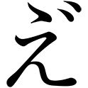 っ」
ま、マジですか......？ フィクションじゃなくって？
親父の名前とおんなじだよなーって思っていたら、本当に同一人物だったよ......。
幼なじみ──ヒロインの名前がお袋だったところでうっすらと覚悟はしてたけど、そのまさかだったよ！
......ウチのイケメンパパ様は、本物の勇者様であった。
「あははっ♪ あのときは怖かったよねー」
「奥様がとても落ち着いていらしたから、私もあまり慌てずに済んだけど......」
「!? 」
釣られたフナのような顔をしている俺の左右で、なんとチャロちゃんとマールちゃんが当時のことを振り返っていた。
ってゆーか、二人もそこにいたのかよ！
「......」
俺は改めて、なんという一家に生まれてきたんだろうかと思った。
──トンでもない事実を知らされたりしながらも、年の瀬はやってくる。
以前の人生を合わせて考えても、かつてないほどに濃密だったこの一年。それが、いよいよ終わろうとしていた。
で、よりにもよってこんな日に仕事で泊まり込みとか......勇者様は大変だ。
「ぷはあー」
「ぽはぁ〜」
お風呂に入れてもらって、俺もセーレたんも全身ほっかほか。極楽だね！
それに今日は、早く家事を済ませて親父もいないということで、なんとみんなで入ることに。そういう意味でも真の極楽だったワケだが......。
もちろん俺は紳士として、どーしても必要なとき以外は見ないようにしていたぞ？ ......冬場で濃くなった湯気と、赤ん坊のあまり良くない視力に、心から感謝の言葉を贈りたい。
寝間着に着替えた俺達は、よりいっそう濃密な石けんと花のような香りが立ちこめるリビングで、湯上がりのドリンクを楽しんでいるところであった。
「はあ〜......♪」
イスに腰掛けたお袋が、コップから唇を離してゆっくりと息を吐く。とろんとした蒼い瞳といい、ほんのりとピンク色に上気した顔といい......なにより、起伏のありすぎる肢体にまとった薄いネグリジェ風の服が、色っぽすぎてもはやどうしようもない。夜のお袋はキケンだ。
北欧のオーロラを思わせるお袋のウェーブヘアは、まっすぐにすると床につきそうなほど長いため、乾かすのがすっごく大変。なので大抵はメイドちゃんズのどちらかが手伝うのだが、今はマールちゃんがその役目を請け負っている。......ドライヤーがあったら便利なのにな。
「〜♪」
ポニーテールを解いたマールちゃんは、普通のパンツタイプのパジャマ姿。特に変わったデザインというワケでもないんだけど、年頃の女の子が着ているというだけでも十分、魅力的に映る。
そんなマールちゃんが鼻歌を唄いながらお袋の背後に立って、長ーい髪をすくい取ってはタオルでサンドイッチみたいに挟んで、ぱふぱふと上から軽く押さえて水気を取っている。
「いつ見ても、奥様の髪は細くて綺麗ですね」
「そう〜？ ありがとう〜」
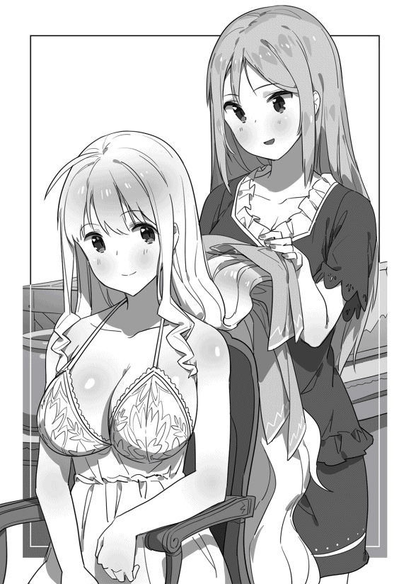
かなり手間暇のかかる作業も、こうしてお喋りしながら楽しそうにやっている。俺も見ていて飽きないんだよなあ。
そしてチャロちゃんは、俺とセーレたんにジュースを出してくれていた。
着ているパジャマは確かに可愛らしいんだけど──ちと子供っぽいかなーと、思えなくもない。
「はい、どーぞー♪」
「おーう」
木で作られた、赤ちゃん用の軽くて小さなコップ。俺は自分で飲めるのでそれを両手で受け取り、だけどセーレたんはまだできないので、チャロちゃんがゆっくり飲ませてあげる。
「ぷはー」
「ほわぁ〜」
あー、甘くて美味い。もう一杯！
本当はもう少し冷えていた方がもっと美味いとは思うのだが、あんまり冷たいと赤ん坊の身体に良くないので、このくらいがベストだろう。冬だから室温でもそれなりに冷えてるし。
「はーい、コレでおしまーい」
うーっ、できればもう一杯飲みたかったなあー。でも、夜中のオネショは風邪の元になる。
ガマンしなければ──。
「やあああ〜ん♪」
って、セーレたん！ おめめをキラキラさせて「ちょーだい」しちゃダメーっ！
......ああ、チャロちゃんの目がハートになってしまった。
「きゃあああーっ♪ ......もうちょっとだけですからねー？」
「ああ〜ん♪」
「うがああああーっ！」
だからダメだってばー！
みんながガールズトークをしている間にお袋の髪も乾き、俺達の身体の火照りも適度に取れてきた。ジュースを飲んで歯磨きもしてもらったし、あとはそれぞれの部屋に戻って寝るだけである。
ところで結局、俺もセーレたんと一緒にお代わりをもらっちゃったよ......。
禁断の盃 、とっても美味しゅうございました。
「さあ、おねんねしましょうね〜♪」
「ふあー」
「ふわぁ〜」
お袋の癒し系ボイスに、俺とセーレたんは偶然にも同時にあくびで返事をした。マールちゃんとお袋がくすくす笑っている。
ちなみに、チャロちゃんはというと。
「ほらチャロ、もう寝るわよ」
「ひゃいぃぃーっ!? 」
イスに座ってこっくりこっくりと船をこいでいたところを、マールちゃんに肩を叩かれて跳ね起きた。
「えええええええーーーっ!? もう朝っ？ 朝なのーーーっ!? 」
「は〜い、抱っこしまちゅね〜」
混乱しているチャロちゃんを華麗にスルーして、お袋は俺達のベビーチェアの机を外し始める。さすがである。
それから同じくうとうとしていたセーレたんを抱き上げ、俺はチャロちゃんのステータス異常を回復させたマールちゃんに抱っこされた。
目の前で展開されたオモシロ場面に、俺はちょっと目が覚めてしまったが......まあ、またすぐ眠くなるだろう。
ふよふよと柔らかいクッションに揺られ、俺とセーレたんは自分たちの部屋へと連れて行かれ──。
「あぇ？」
へっ？ なんで部屋の前を通り過ぎちゃうのー？
ドコ行くのーと伸ばした手の向こうで、セーレたんを抱いたお袋は玄関の手前で華麗にターン。そして階段を上がっていく。当然、俺を抱いたマールちゃんも後に続いて階段へ。
ふと気になって手すりのすき間から下を覗いてみると、最後尾のチャロちゃんが歩いていた。
顔はうつむいて両腕をだらーんと下ろし、上半身を左右に揺らしながら。
「すぴー」
「......」
なんか寝息らしきモノが聞こえてくるんだけど、大丈夫か？
......という俺の心配はなんとか杞憂 に終わり、全員が無事に二階のとあるドアの前へとたどり着いた。下とはまた違って、ちょっと甘さ控えめの落ち着いた感じの匂いがするな......。
新鮮な気分で鼻をスンスンさせていると、お袋が振り返った。なお、セーレたんは心地よすぎる二つのクッションに挟まれ、幸せそうに眠っていた。
なので、お袋は小声でささやくように言った。
「さあ〜、今日はここで、みんなでおねんねしましょうね〜♪」
おおーっ！ ......と声を漏らしかけた寸前で、なんとかストップ。
意外と何もイベントのなかった大晦日 。このままフツーに終わるかと思いきや、なんと最後の最後に特大イベントが待ち構えていた！
「うふふ〜。わくわくするわね〜」
「ふふっ、そうですね」
「すぴー」
ひそひそとお袋とマールちゃんが顔を寄せ合って言葉を交わす。この二人も、一緒に寝るのは初めてのようだな。
そしてチャロちゃんは一人、海中の昆布のように揺れている。よく倒れないもんだ。
「......」
でもさすがに、この人数で同じベッドには入れないよな？ 恐らく、ここが親父とお袋の寝室なんだろうから──さては、それぞれのベッドに半々に別れるのか。
そう俺が予想している間に、お袋がセーレたんを抱いたまま器用にドアノブを引いた。初めて見る夫婦部屋に、ちょっとドキドキ。......でも残念なことに、中は真っ暗でほとんど見えない。
「さあ、どうぞ〜」
「失礼します」
お袋に促され、マールちゃんが先に中に入る。それからすぐに俺の身体を抱っこし直すと、ドアのすぐ横の壁ある四角い金属パネルに片手で触って魔力を流す。
すると、だんだんと天井の明かりが強くなって──。
──特大サイズのベッドが、デデーンと鎮座 なさっているのが見えた。
「......」
コレはさすがに予想外だった......。「みんなでおねんね」が、本当にできてしまう。
広さはパッと見て、俺とセーレたんの部屋と同じくらいか。下は絨毯ではなく木の床で、家具も内装もシックな感じで統一されている。やはり、子供の部屋とは雰囲気が違った。
「うふふ〜」
後ろからお袋も入ってくると、これまた特大サイズの毛布の端っこをめくって、まずはすやすやと既にお休み中の天使様をそっと寝かせた。そして、おデコにそっと唇を落とす。
次は俺の番かな？
「......はい。次はジャスちゃんね〜」
「はい」
両手の空いたお袋に呼ばれ、マールちゃんがベッドの反対側に歩いていく。その間にお袋が布団の上半分を大きくめくり上げると、俺もシーツの上に寝かされる。
「うわー」
おおっ、適度な柔らかさと弾力。......んでもって、同じベッドだというのにセーレたんが遠い！
と思ったら、お袋が俺とセーレたんを近づけてくれた。わーい。
「はぁ......。次は──」
次に、重たい俺を下ろしてほっと一息ついたマールちゃんが目を向けたのは──入口で昆布になっているチャロちゃんである。
「んもう......」
ちょっと子供っぽく口を尖らせると、ベッドを離れてチャロちゃんのもとへ。マールちゃん、最後のもうひと仕事である。
「ほら、ちゃんと寝なさい！」
「ふぎゃっ！」
......あ、おデコを叩かれた。けっこうイイ音が鳴ったな。
この二人のやり取りを見ていると、たまーにこんな漫才をしてくれるので面白い。
「え......朝？」
「それはもういいからっ」
「えっ？ えっ？」
寝るために起こされる、という矛盾に混乱しているところを引っ張られ、チャロちゃんがこっちにやってきた。だがマールちゃんに背中を押されてベッドに転がり入ってくると、すぐに俺を抱きしめて丸くなった。
「すぴー」
もう熟睡に入ったようだ。......鼻息が耳に当たって、くすぐったい。
「あらあら〜」
「はあ......」
これで残ったのは、お袋とマールちゃん。大きなため息をつくマールちゃんにお袋が先に入るように声をかけると、チャロちゃんの後ろからベッドに入ってきた。それから、めくった毛布を横半分だけ元に戻す。俺とチャロちゃん、そして恐らくはマールちゃんもこれで布団の中だ。入りたてでまだ冷たいお布団、でもすぐにみんなの体温で温かくなる。
そして......チャロちゃんの腰のあたりの布団がもぞもぞと動き始め、やがて俺のお腹の上に、そっと温かい手が添えられた。
「ふぁ......お休みなさい」
ちょうど可愛らしいあくびが聞こえてきたのと同時に、だんだんと部屋の明かりが暗くなってくる。
マールちゃん、おやすみ。
「ふふふ〜」
みんなが順番に眠っていくのを見届け、ベッドの横でお袋が微笑む。薄暗くなって視界が悪くなってきても、お袋の金の髪と蒼い瞳は淡く光って見える。
「......」
仕事で留守の多い親父に代わって、この家を取り仕切っているお袋。見た目は可愛らしく見えても、しっかりとその役目をこなしている。素直に尊敬するよ。
「さあ、ジャスちゃんもお休みなさいね......」
そんなお袋の微笑みを見ながら、俺もゆっくりと目を閉じていった。
──その、翌朝。
「あら〜。おはよう〜♪」
夜明け頃に俺達が目を覚ますと、なぜかベッドの上に純白のヴィーナス様 が降臨なさっていた。
なお、貝殻はどこにもない。「初日の出」は出てるけど。
俺の目と鼻の先に......二つ ほど。
「んん〜？ みんな、どうかしたの〜？」
『きゃあああああああああああああああああああああーーーーーーーーーーーーーーーーーっ!? 』
しばらく沈黙が支配した後、メイドちゃんズが堰 を切ったように声を上げた。......俺も叫びたいが、ビックリしすぎて声が出ない。
ちなみにセーレたんは──きょとんとしていた。
「お、おおお、おおおおおおおおおおお奥様あっ!? 」
「あうあうあうあうあうあうあ」
「......あらら〜？」
とにかく、なんか着てくれえええええええええええええーーーーーーーーーーーーーッ!!
新年とはいっても、とりたてて何かをするワケでもなかった。ＴＶがないので特番はいいとしても、「あけおめ」も初詣もないとなると、ちょっと物足りない気がするな。
だけど家の仕事は必要最小限に減らしていたのか、お袋やメイドちゃんズの構ってくれる機会が普段よりずっと多かった。三人共が遊びに来てくれることもあったほどである。そのため俺も触手を使ったトレーニングなどを休みにして、正月らしく、まったりとした時間を過ごしていた。
今日もお昼を食べて部屋に戻ると、お袋が俺とセーレたんの大好きな魔導具を出してくれた。光の球を打ち上げる、例の石である。
「ほら〜♪」
「おおーっ！」
「きゃあああ〜♪」
お袋の手のひらにちょこんと乗せられた、白くて丸い石。平べったくツルツルした表面には、何かしらを表しているらしい──魔法陣と思われるマークが彫られている。その石にお袋が魔力を込めるたびに魔法陣が輝き、ぽーんと光の球が真上に打ち上がるのだ。
「また、いくわよ〜」
「おほーっ！」
「ひゃあぁあ〜！」
光球は天井のやや下の位置で静止すると、宙に浮いたまましばらく柔らかな光を放ち続け、やがて静かに消えていく。いつ見ても不思議だ。
初めは単純にそれを見て、二人でバンザイしたり手を叩いたりしてはしゃいでいた。「たまやー」「かぎやー」ってなモンである。
しかし、それがいつの間にやら逆転。マールちゃんとチャロちゃんがやってきた頃には、俺達がドンチャン騒ぎをして「おねだり」すると、お袋が光球を打ち上げてくれるという遊びに変化していた。
「うふふ〜。さあ、おててを上げましょう〜♪」
「はい、奥様♪」
「はーいっ！」
メイドちゃんズも加わって四人でお袋を囲み、バンザーイと手を挙げて光球を求める。
「まんまあ〜♪」
「えんほらー」
......途中から、なんかＵＦＯでも喚 んでるみたいだなーと思ったのは、内緒である。
そうして賑 やかに召喚の儀を執り行っていると、部屋のドアがノックされたのが聞こえてきて──。
「......よう、帰ったぞ」
ドアのすき間から、親父が顔を出した。
数日ぶりのご帰還である。
「あら〜」
『お帰りなさいませーっ！』
お袋が振り返り、マールちゃんとチャロちゃんが声を合わせる。俺と天使ちゃんも、バンザイの対象をお袋から親父に切り替えてご挨拶 。
「あっぱあ〜♪」
いや、セーレたん......。それだと、下からジャンプしながらアゴを打ち抜いてるみたいだぞ？ 違う意味で「ご挨拶」であった。
とは思いつつ、俺も妹ちゃんに倣って「あっぱー」と声をかける。まだちゃんとした言葉を発するワケにはいかないのだ。
「はははっ！ あっぱー、帰ったぞー」
俺達のあっぱっぱーな歓迎にも、爽やかな笑みで応えてくれる親父。年をまたいでも相変わらずイケメンだ。泊まり込みのせいだろう、キッチリと身だしなみを整えてきているのでなおさらである。
一見すると、普通に半日働いて帰ってきたときよりも元気そうであった。
「ははははは」
だが。
「......ああ。
疲れた────」
俺達、家族の顔を見回してから浮かべた安堵 の表情と、身体の中から魂的なモノまで一緒に出てきそうな長ーいため息から、親父の疲労困憊 っぷりがしみじみと伝わってきた。......たぶん、辛い長旅の末に大魔王を討ち果たして故郷の村へと帰ってきた勇者も、まったく同じことを言うんじゃないだろうか。
かつて街を襲った獣の群れと戦った英雄にとって、年末年始のお城での仕事は、それに匹敵する難事であったようだ。特に目立ったしわもないキレイな軍服だが、俺には傷だらけに見えた。
......漢 である。
「あなた〜っ、お疲れ様ぁ〜〜〜♪」
「ああ......待たせたな」
心の中で敬礼をする俺の横を、立ち上がったお袋が長い髪をなびかせて通り抜け、親父の下へ向かう。そして村に残してきた美人の幼なじみとの再会のように、かかとを持ち上げて熱い抱擁とキスを交わした。
映画のラストシーンのようなやり取りに、俺もほかのみんなもただただ陶然 と見つめるばかりだ。
『......はぁ』
メイドちゃんズはそろって、熱いため息を漏らした。俺もまた「爆発しろー」と嫉妬する気にも、「ひゅーひゅーだよーっ」と冷やかす気にもならない。
ちなみにセーレたんは、俺に抱きついて「きゃ〜きゃ〜」と喜んでいた。
「......」
......なあ、俺もキスしていい？ いいよね？
「あなた〜、すぐお昼になさいます〜？ お風呂はこれからなんですけど〜」
俺も天使ちゃんと向き合おうとしていたら、部屋の入口で抱き合っているもう一組のカップルがコレまたなんともコッテコテなやり取りを始めた。さすが新婚である。
しかし今はあいにくと夜ではないので、お風呂はまだ沸いていないらしい。そんなところはリアルであった。
「それとも〜」
親父に密着したお袋のセリフは、なおも続く。
お、おいおい、そこまでコッテコテに行くのか？ それ以上は子供の教育に良くないヨ？
などとと思っていたら、艶っぽく親父の首に回していた手を片方だけ解いて、まっすぐに伸ばした白魚のような手を──。
「これがいいかしら〜？」
──親父の首の、ちょうど頚動脈 のあたりに軽〜く当てて見せた。
「うふふ〜♪」
「......」
そ、そのジェスチャー、なに？ その手、もしかして手刀？
んでもって、まさかとは思うのだが「安らかにお眠りになります〜？」とかいう意味だったりする？
「いや、今日はやめておくよ」
「あら、そう〜？」
今日は、ってなんだ......。
たまに親父の剣の練習に付き合って素手で相手しているし......このお袋って、可愛らしい顔してなかなかの武闘派だよな。
「小腹が空いたから、まずは何か腹に入れたい。......俺の分はあるか？」
「はい、大丈夫です」
「モチロンですよー♪」
そして親父もさも何でもないことのように返事をすると、メイドちゃんズに視線を向けた。角度的に、例の手刀が見えなかったのだろう。二人はごく普通に答えた。
それを聞いて「そうか」と小さくうなずくと、親父はお袋と一緒に部屋を出ていった。
「ジャス、セーレ。また後でな」
「うふふふふ〜」
ドアを閉める前に、夫婦仲よく俺とセーレたんに手を振って。
「......」
お袋がちょっぴり天然さんなのは、よーく知っているが......。
親父も、なーんかズレてるよな。
......コレはコレで、似たもの夫婦っていうのか？
「むぅ」
「あ〜ぱ〜？」
夫婦って、奥が深いな。
──親父が帰ってきて、我が家が賑やかになった。
「いやあ、美味いなあ！」
ラフな格好に着替えて軽食を済ませた親父が料理にガッツく。
昼は軽く済ませるのが普通らしいのだが、親父の顔を見たお袋達が追加で何品か作ったので、食べるのは親父だけなのにかなり豪勢な食卓となった。ガッツリ系の肉料理も並び、美味そうな匂いが立ち上っている。軽く塩コショウだけとは、なかなか通だなー。
でもまあ、大変な仕事を終えて帰ってきた親父である。そのくらいはお安いご用といった感じで、女性陣はみんな笑顔だ。
「職場の飯もいいんだが、やはり俺にはお前達の手料理の方が口に合うよ」
「うふふふふ〜♪」
「ありがとうございますっ」
ほめられたお袋とマールちゃんが微笑み、お手伝いしたチャロちゃんもしっぽを揺らしてニコニコしている。
「わ〜」
男らしい食べっぷりにセーレたんはぽかーんと口を開けて見ているけど、俺はもらったジュースを飲みながら感心していた。女の子達の可愛い食べ方もいいけど、こういうワイルドな食べ方も気持ちがいい。お袋達も作った甲斐があるというものだろう。
今の俺がマネしても、離乳食をこぼしてテーブルと口の周りを汚すだけだもんな......。単なる迷惑でしかない。
「ふーう！ 美味かった！」
「どういたしまして〜」
結局、親父は夕飯並みの量をペロリと平らげた。
「よーしよしよしよし」
「うひーっ」
親父に抱っこされて部屋に戻ってくると、今度はなんとも激しいスキンシップが始まった。絨毯の上に下ろされることもなく、俺はそのままモーレツな勢いで頬ずりされる。
「おおっ、スベスベだな！ よしよしよしよし......」
「ああああああ」
幸いなことにヒゲは剃られていてツルツルだったのでよかったが、それでも皮膚 が引っ張られた俺の顔は非常に面白いコトになっていたと思われる。おかげでちょっと頬がヒリヒリする......。
しかも食後に軽くお酌 してもらったせいで、口からちょっとアルコールの匂いがしてくる。たった一、二杯でも、赤ん坊の鼻は敏感だ。
「はっはっはー！」
やっと終わってぐったりしている俺をよそに、親父はテンションが高く顔もツヤツヤしている。少しだけとはいえ、酒が入ったせいもあるかもしれんな。
でもまあ、ハードワークを終えて帰ってきたんだから、このくらいの接待は俺もやぶさかではない。天使ちゃんを抱いてきたお袋も、横でにこにこしている。
「さあ、次はセーレの番──」
「やあ〜！」
とはいっても、セーレたんはそうはいかない。襲いかかるような勢いとアルコール臭に、純白の天使ちゃんは女神のように微笑むお袋に抱きついてイヤイヤと首を振った。
そんなセーレたんも愛らしいけど、頬を緩ませている場合ではない。ぷにぷにほっぺの一大事である。
「あなた、もうちょっと落ち着いてくださいね〜」
「お、おお。......すまん」
やんわりとお袋がたしなめてくれたおかげで、親父が我に返った。しょんぼりと肩を落としているのがちょっと哀愁を誘うが......できれば、俺がされる前に注意していただきたかった。
俺がビミョーな表情をしていると、お袋はにこにこしながらしなやかな手指を見せた。
「この子達を泣かせたら、これ ですよ〜」
「お、おう......」
いや、手刀 までしなくてもいいんだけどね......？ さっきと変わらない笑顔なのに、なぜか妙に迫力がある。
母は強し。この世界においても、それは絶対の法則なのであった。
──連休をもらったらしい親父は、休みのほとんどを使って俺達と遊んでくれた。
積極的に育児を手伝ってくれる「イクメン」として、それはとても望ましい父親像であるというべきなのだが。
「そうら、アーパーだぞー」
「あっぱあ〜、あ〜ぱあ〜♪」
新しく覚えた単語を聞いてもらえるのが楽しいんだろう、妹ちゃんがそれはもう天使な笑顔をめいっぱい咲かせて連呼している。「アッパー」なのか「アーパー」なのかは、そのときによってランダムなのだが......気分が有頂天な親父にとっては些末 な問題でしかない。
「あはははははー。そうかーそうかああああー」
いつもはキリリと引き締まったクールフェイスが、今やゆるゆるに緩みまくり。えびす顔どころか、もはや福笑いの域に達していた。......たぶん、あともう少しでピカソ風になるだろう。
家族以外の女性が見たら爆笑モノである。
「あ〜んぱ〜ん♪」
「そうかああああああああーーーー」
「......」
ついに親父が、アンパンへと進化した。見ていて飽きないな。
赤ん坊にして、早くもイケメン親父を手玉に取る──なんという小悪魔っぷり。天使と悪魔の性質を同時に合わせ持つセーレたんのポテンシャルは、底が知れない。
「失礼するわよ」
俺が戦慄していると、シンプルなノックと共にメイド服を着たアナさんが入ってきた。
ひょっとするとお役御免なのかと思っていたので、今朝アナさんの顔を見たときはすっごく安心した。本当によかった。
そのアナさんは俺達にふわっと笑みを見せてくれた後、靴を脱いで絨毯に上がり、親父に向かって声をかけた。
「さあ旦那様、今からここの掃除をしますからね」
「......ん？」
崩壊していた顔を一瞬で復元させた親父。回復が早い。
「もうそんな時間ですか」
「ええ。朝は忙しいんですから、早く立ってくださいな」
「あ、ああ......はい」
ちょっと早口なアナさんに急 かされ、親父はひざに乗せていたセーレたんを名残惜しそうに置いて立ち上がる。
と、そこへアナさんからの指示が飛んだ。
「ああ。ついでにセーレ様をベッドの上に」
「あ、はい......」
また腰を下ろした親父は、セーレたんの「だっこしてー」のポーズに「ぬへえー」っとまた顔面崩壊を起こし、その顔のままのっそりと抱っこして立ち上がった。
「もう、こんなに散らかして......」
だがそのときには既に、俺はアナさんの手によってベビーベッドの上に移された後である。更にアナさんは、親父が俺達と遊ぶために放り出したオモチャをせっせと片づけているところだったりする。
お袋もメイドちゃんズも丁寧に家事をこなすけれども、それ以上の細やかさであっという間に終わらせてしまうアナさんには及ばない。まさにプロの仕事である。
「ええっと、俺が手伝うことは──」
「結構です。......ああ。でしたら、マールと奥様の買物を手伝って差し上げてくださいな。年明けで物入 りなんですから」
「あ、ああ、そうですね。すみません......」
昼過ぎに帰ってきてから夜までずーっと俺達の相手をしてくれた親父だが、その間にも家の仕事はいろいろとある。初めは微笑ましげに眺めていたマールちゃんとチャロちゃんも、次の日には遠慮しながらもややドライな接し方になっていた。いつもの休みだったら少しは手伝っているみたいなのに、今回はサッパリだったもんなー。
それに掃除はもちろん、洗濯物をたたんだりお食事 の時間など、たとえ旦那様であっても男性がいては何かと都合の良くないことがある。ちなみにお袋は女神様スマイルを浮かべて、「あなたもどうです〜？」なんて言いながら脱ぎ始めるのだが。......無論、親父はギョッと目を剥いてそそくさと退散する。
世間ではお城勤めの立派な騎士様も、家では日本の休日のサラリーマンとさほど変わらない扱われ方であった。特にウチは女性ばかりなので、なおさらである。
同情はするけど、お袋達の気持ちも察してあげてほしいなーと思う俺であった。もちろん「一緒に飲もうぜ！」って意味ではない。......違うよな、お袋？
違うモノだったら付き合うから、それにはあと二十年ほど待ってくれ。法律にもよるけどさ。
「あんや〜♪」
「おー」
俺の隣にやってきたセーレたんと抱き合いながら、俺は親父の背中に頑張れーとエールを送る。
いつか、そのときになったら──立派なレディになったこの子も誘って、二人で酌してあげような？ もしお袋達が飲めないんだったら、代わりにジュースで。
ああ......それなら、どこかの店じゃなくて家で飲むのもアリか。適当にツマミなんかも作ってあげたりしてさ。
な、セーレちゃん？
「あんぱ〜ん♪」
「......」
いや、さすがにアンパンはツマミにはならんだろう......。
──だんだんそれっぽいお喋りができるようになってきたセーレたんとは、ただ喋っているだけでもすごく楽しい。しかしやっぱり、そろそろ俺のことも呼んでほしいと思うワケだ。
いろいろと考えた挙げ句に......そういや、ここの言葉で「お兄ちゃん」の幼児語はなんて言うんだ？ ということに気づいて絶望したのだ。
......「兄者」は絶対にゴメンだし。
『ジャスちゃんとセーレちゃんは、お互いになんて呼ばせてあげたらいいかしら〜？』
「!? 」
俺が密かに困っていたところ、何日か前に、お袋がまさにその話題を出してくれたのだ！ これで特訓ができる！
それは、小雪のチラついた日のお昼時。アナさんと一緒にエルネちゃんも遊びに来て、俺の知っている女性陣が一堂に会したおやつの場。リビングでのことである。
「双子だから、名前でもいいのだけれど〜」
「そうねえ」
俺がスプーンで離乳食を食べているときにそんな話題がいきなり出てきて、隣に座っているアナさんが相づちを打った。それを聞き、俺は思わず木のスプーンを落っことしてしまった。それで話題が途切れて注目を集めてしまったが、幸いなことに落ちた先はベビーチェアについている机の上。
「ほー......」
床まで落ちなくてよかったと、口周りを汚したままため息をつく俺。エルネちゃんが「すごーい！ すごーい♪」とほめてくれたのもあって、ちょっと油断した......。
ちなみにセーレたんはほとんど食べなかったので、後でお袋が別のお食事をあげるハズだ。こういったことはときどきあるので、俺のみんなも落ち着いている。
「ええーっ！ セーレちゃんはいいけど、ジャスくんはヤッパリ『お兄ちゃん』の方がよくないですかあー？」
おお、よくぞ言ってくれたエルネちゃんよ！ 前世では兄弟のいなかった俺である。そう呼んでくれるなら、もう俺は思い残すことは何もない......って、だから死んでどーする。
自分にツッコミを入れていたところ、チャロちゃんとマールちゃんもフォローを入れてくれた。
「そうですねー。お兄ちゃんはお兄ちゃんですから、その方がいいと思いますよー？」
「ジャス様は、もうこのお年でしっかりされていますけど......。セーレ様にそう呼ばれることで、もっとしっかりされた『お兄様』にお育ちになりそうですね」
うん、そうだね！ ついさっきも「死んでもいいやー」なんて血迷ってしまったが、死ぬ気になれば大抵のことはできよう。いわば、粉骨砕身 の覚悟──舶来 風に言えば「ハンバーグスピリット」とでも言おうか。
ナイフで切った途端にじわ〜と染み出してくる肉汁と、デミグラスソースが絶妙のハーモニーを奏でるのだ。
「じゅるる......」
やたら美味しそうな精神だった。
......そんな美味しい話があったりして、セーレたんに覚えていただくべき俺の呼称は「おにぃ」と決まった。もちろん異世界語なのだが、幼児語なのでけっこうそれに近い響きでもあった。テンションが上がるぜ！
ということで......今日も夕飯の支度で誰も来ない合間を縫って、秘密の特訓スタートである。
「へーい！ へ ーえ たん！」
「あんま〜？」
俺の前で、ころーんと転がってお腹を見せるセーレたんに声をかける。適度にこちょこちょしてあげたので、お顔が桃のように色づいていて食べちゃいたいくらいに可愛らしい。むしろこの子の方が「マンマ」である。
「うん。あんまー！」
って、違う違う。そうじゃなくって、ちゃんと「おにぃ」と呼んでもらわなければ。俺まで「あんまー」になってしまうと、俺なのかお袋なのか食事なのか、サッパリ分からなくなる。
平らにした触手を慎重にセーレたんの背中の下に滑り込ませ、リクライニング座椅子 の要領でおっきしてもらう。
「おぉーーーにぃーーーいいいーーーーっ」
自分のことを指さして、ゆっくりと発音してみせる。既に練習を始めて何日か経っており、何度かお袋達が教えてくれることもあったので、この子もなんとなーく自分が何かを教えられているんだーということは理解しつつある。
「お〜い？」
「おひ ぃ！」
ざんねーん！ と絨毯を軽く叩く俺。気分はクイズ番組の司会者である。
セーレたんに「オイ」なんて呼ばれるのも、それはそれで背中がゾクゾクして悪くないのだが......あまり世間体 が良くないと思うのでやめておく。
「おーーにーーいーー」
「あ〜ぅ、ふぃ〜？」
「えっ」
なんだか、わりとカッコイイ感じの呼ばれ方をされてしまった！ 頭に「ジ」なんてつけると、まるでどっかのアーティストみたいな響きになるな。個人的にはちょっと気に入ってしまったぞ。
「......はっ！」
いかんいかん。この子のつぶらな蒼いおめめに見つめられていると、たとえなんと呼ばれようと喜んで受け入れてしまいそうで困る。
俺が触手能力を身につけてしまったのは仕方ないが、この子には決して黒くて長いヒモ状の武器を持たせてはならないと誓う。チョウチョの形をした仮面もダメだ。
「ううーっ。おーにーいー！」
「......はぅん」
しまった、強く言いすぎた!? セーレたんがしょげてしまった......。
慌てて手を伸ばし、柔らかな金色の髪をなでりんこ。
「ふにゃあ〜♪」
「ふぅ......」
よかった。ご機嫌を直してくれたようだ。
もうしばらくなでなでを続け、セーレたんが落ち着いたところで、優し〜く見つめながら練習を再開。
今度は一音 ずつやってみよう。
「おー」
「おぉ〜」
うむうむ、いい滑り出しだ。
「にぃいー」
「いいい〜っ」
うーん......ちょっと違う。伸ばしすぎか？
口の動かし方も、よーく見ててくれよ？
「おおーー、にぃいーー」
「きゃああぁあ〜♪」
あああっ、にらめっこじゃないーっ！
輝く笑顔はすっごく嬉しいけど、そういうコトじゃなくってー！
もうちょっと、お口をね？ こんな風に──。
「あいいいい〜ん」
「ぷっ!? 」
俺が笑ってどうする！
にしても、面白い顔になったのにそれでも天使のままって......もう反則だなコレ。
今日こそちゃんと呼んでもらおうと、俺は不屈の精神で挑む決意だ。既に屈 んで、というか座りっぱなしではあるのだが。
ふと思ったけど......俺達はずーっと今まで、敢えて呼び合わなくても常に一緒にいたという関係が災いしているのかもしれない。目が合ったときに、「おいでー」って思うだけで来てくれるし。
とっくに言葉を超越している関係というのも素晴らしいが......やっぱり呼んでほしいな。
「好きなら好きだって言ってよ！」という乙女心的なモノが、今ちょっと理解できた気がする。
俺はラヴな気持ちをめいっぱい視線に込め、じーっくりと同じ単語を繰り返す。
「おーにーいー」
「お〜......？」
「おー、にー、いいーっ」
「お〜、に〜？」
おおっ！ いい感じだ！
やっぱり、目と目で見つめ合うと通じている感じがする。もう一押しか？
ということで......もっと楽しく覚えてもらおうと、試しにリズムを取り入れてみた。
「おーにっ、おーにっ」
「お〜にっ、お〜にんっ」
若干「応仁 の乱」の成分が混じってしまったが、おおむね合っている。順調だ。
......応仁の乱とか、もう一生思い出すコトなんかないと思っていたよ。
せっかくなので、この波に乗ってみる。
「おーにん、おーにん！」
「お〜にん♪ お〜にん♪」
「おーにん！ おーにん！ おー......はっ!? 」
い、いかん、夢中になりすぎた！
いつの間にか腕まで上下に振って、ノリノリになっていた......。
「お〜にんっ。お〜にんっ」
だが、「おーにん」はセーレたんもずいぶん気に入ってくれたようなので、そこから軌道修正を図ろう。
「おーにー、おーにー」
「お〜にん、お〜......に〜？」
そうだ！ 「にー」で伸ばすのだ！
「おーにー、おーにーっ！」
「お〜に〜っ、お〜に〜っ♪」
で、しばらく続けていくと──。
「おにぃ〜っ」
......ついに、できたああああああーーーーーーーーーっ!!
やったね、セーレたーーーーん！
「やっら ああああぁあああぁあぁああああぁああーーーーーーーーーーー〜〜〜〜〜っ!! 」
「きゃああ〜っ！ おにいいい〜〜っ♪」
感極 まって抱きしめると、すかさずセーレたんも抱き返してくれたっ！
いやあ......三割くらいは冗談で「死んでもいい」とか思ってたけど、本当にそれくらい嬉しいよ！
「しぇー え ひゃ あーん！」
「おにぃぃぃぃ〜〜っ♪」
もう、サイコーだね！ おにぃ、最高おおおお────っ!!
「──あら〜？」
二人で抱き合って喜んでいると、ドアが開いてお袋が顔を出したのが目に入った。騒ぎすぎて、ノックの音が聞こえなかったようだ。
「よく分からないけれど、楽しそうね〜？」
俺達の様子を見て、お袋が日だまりのような笑顔を浮かべる。お祝いしてくれたように感じて、それでますます嬉しくなった。
いやはや、本当によかった──。
「おにいいいい〜〜〜っ！」
「あら〜？」
いや......その人は、ママですよ？
「おにぃ〜っ。おにぃぃ〜っ」
「......」
お袋を見ても、俺を見ても「おにぃ」になってしまった......。
今度は、俺がその「おにぃ」だということを、しっかりと覚えてもらわないと。
言葉を覚えたセーレたんに、負けてはいられない！
と、俺も頑張ったところ。
「お、おおおぅ」
ベビーベッドの脚に捕まって立ち上がり、そこから触手を杖代わりにして手を放す。触手は決してガチガチに固まったモノではないので、あまり体重をかけるワケにはいかない。
そこからじょじょに杖へかける体重を両脚に移し、多少震えながらもゆっくりとすり足で。
い、い、一歩。に、に、二歩──。
「おお、おおおおお──ぎゃっ!? 」
三歩目で耐えられなくなって尻餅をついたものの、なんとか歩くことに成功！ 触手の杖を尻に敷いたので、痛みもほとんどない。
大人にとっては取るに足らない一歩だろうが、赤ん坊にとっては偉大な一歩なのだ。
その違いが分かる女の子、セーレたんがおててを叩いて祝福してくれた。
「おにぃ〜！ あんにゃ、おにぃ〜っ♪」
「へーれはーん！」
なんとなく俺の受け答えが関西弁っぽいが、抱きしめ合って喜びを分かち合う。
「あんにゃんにゃ、あきゃんまあ〜！」
「お、おおー！」
なんと言ってくれているのかは解らないけど、とにかく喜んでくれていることは分かる。やはり女の子だからか、最近のセーレたんはいっぱい喋ってくれる。それでこっちが相づちを打ってあげると、それはもう嬉しそうに笑うのだ！
「きゃあぁああ〜〜〜んっ♪」
「......ぐはぁ！」
その、あまりの可愛らしさを目にしてしまうと、お袋の場合は腰をくねらせて謎のセクシーダンスを踊り、メイドちゃんズはだいたい黄色い声を上げる。ときには絨毯の上にひっくり返ったり、転げ回ることも。
俺だって例外ではない。それどころか急先鋒 である。親父がそれを始めたときには、ちょっとやめてくれと思ってしまったが......。
ちなみに親父は直後にソファーの足元の角でスネを強打し、すぐに違う意味で悶絶していた。衝撃で重たいソファーが少し動いたから、アレは痛かったと思う。
「おにぃ〜っ」
「うおーっ！」
痛そうだった親父の顔を思い出していると、いきなり天使ちゃんに押し倒されてしまった。そしてお腹の上に乗ってくる。こうなるともう、俺が抱きしめて横に転がすまで離れてくれない。
この遊び、好きだなあー。
「あははーっ」
「まんま〜、おにぃ〜っ！」
転がって素早く四つん這いになると、スタコラと逃げ始める俺。けっこう飛ばしているのだが、セーレたんは引き離されることなく追いかけてくる。速くなったもんだ。
部屋のほぼ真ん中に置かれたベビーベッドの周囲をくるくる回って、追いかけっこ。三周目に入ってさすがに疲れてきた頃、いつものようにノックが聞こえてから、アナさんとチャロちゃんが入ってきた。
「ふふっ。遊んでいるところ悪いけど、ちょっと来てもらうわね」
「はーい、セーレさま。抱っこしますよー♪ ......うんしょぉぉおお！」
「ぉ？」
二人が靴を脱いで入ってくると、俺の背中に乗り上げていた妹ちゃんをチャロちゃんが抱き上げた。小柄なチャロちゃんにはやや厳しくなってきて、持ち上げようとするたびにキンキン声が一気に何段階も低くなる。
続いて俺もアナさんにひょいと抱っこされ、俺達は肌寒い廊下へと連れ出されてしまった。
きっとお昼なんだろうけど......今日はずいぶん遅かったなぁ。お昼の鐘はとっくに鳴り終わっている。
「ううっ」
「お腹空いたでしょう？ ごめんなさいね」
空腹のあまり、思わずアナさんの母性の象徴に目が行ったところで、廊下の突き当たりに到着した。で、リビングへと通じる左のドアをアナさんが開けると。
「......おお？」
テーブルの上には飲み物と一緒に、オードブルのようなたくさんの料理やお菓子が並んでいた。それぞれの量は少なめになっていたが、それでもおやつと呼ぶには豪華すぎる。みんなもよほどお腹がぺこぺこだったんだなー......と考えるのも、ちょっと不自然すぎる。
それに、既にテーブルにはお袋とエルネちゃん──それから、けっこう前に出かけたハズのマールちゃんが、私服で席に着いていた。
まあ、週に一度の休みなので、マールちゃんが私服なこと自体は不自然ではない。親父も今日は仕事だし。
ちなみに一週間が五日だということは、メイドちゃんズの休日サイクルから推測して、お袋達のしていた話の中で確証を得たものである。
......これで、こよみの謎がまたひとつ解けたワケだな。
「はい、じっとしていて」
「おー」
豪華料理に目を輝かせているエルネちゃんを見ていると、いつものようにベビーチェアに座らされ、上から専用の机をガッチリとセット。隣のセーレたんも、チャロちゃんによって固定され、それからキレイなお手拭きで手を拭いてもらう。指の間までしっかり拭いてもらい、これで俺達もご飯を食べる準備ができた。
残念ながら豪華なオードブルはまだ食べられないので、赤ちゃん用テーブルには離乳食が置かれる。その後で、アナさんとチャロちゃんも自分の席へ着いた。
「さあ〜」
全員が座ったところで、お袋が大きなめろんの前でぱふっと手を合わせる。
なお、ここでは「いただきます」に当たる挨拶はないようで、代わりにその場のいちばん目上の人が皆に「食べましょう」と声をかけるのがルールらしい。親父がいるときは親父が声かけをしているので、恐らく間違いない。
だから、てっきりそれだと思ってお袋に目を向けたところ──。
「本当はもう少し後だけれど......。今日は、とってもおめでたい日ね〜♪」
『わあーっ♪』
「......ん？」
テーブルを挟んで、エルネちゃんとチャロちゃんが拍手し始めたけど......俺には何がなにやら。
「まんま〜？」
俺の左では、セーレたんも意味が分からずに小首を傾げている。ご飯なのは間違いないけどな。
「むー？」
説明を求めようと、再びお袋に目を向ける。
すると、まさにそのことを教えてくれた。
「──あともう少しで、マールちゃんが十五歳になりまあ〜す♪」
『わああああーーーーーっ！』
その言葉に、俺も含めた全員がマールちゃんへと顔を向ける。同時に、歓声と拍手が彼女へと贈られた。なんと、マールちゃんの誕生日なのか！ それはめでたい！
当然俺も手を叩き、俺の天使ちゃんも釣られて手をぱちぱちしている。さすがだ。
ところで......赤ん坊は一歳から数え始めるのに、歳を重ねるのは普通に誕生日なんだな。俺の知っている「数え年」とは違うようだ。
主役のマールちゃんは、ぽっと頬を赤く染めたものの──うつむきかけた顔を俺達に向けて、可愛らしくはにかんで見せてくれた。
「あ、ありがとうございます......！」
『わあああああああーーーーーーー！』
マールちゃんの声に、いっそう拍手と歓声が大きくなる。クラッカーがあれば鳴らしてあげたいところだ。
......けど、なんで、お祝いするのが当日じゃないんだろう？ そして、実際の誕生日はいつなのか？
聞きたい気持ちをグッと堪えながら、俺はみんなの声に耳を傾けた。
「マールちゃんも、大きくなったわね〜」
むにむにとムネを変形させ、ほとんど音のしない拍手をしながら、真向かいに座るマールちゃんへ声をかけるお袋。しかしそんな、まるで遠い親戚のオバサンみたいなセリフを......。
しっかりしていて大人びて見えるマールちゃんに比べると、お袋はヘタをすると年下にも見えるお姫様フェイスである。
とはいっても結婚してるんだから、そんなに三つも四つも歳は離れていないだろう。となると、推定されるお袋の年齢は十六か七。
あるいは......十八歳、くら......い──？
「......っ!? 」
な、なんということだ......！ 高校生の歳で、既に結婚して双子の子持ちだとぉ!?
無論、それはそれで十分に驚愕すべきことだったが......次のチャロちゃんの言葉にも、注目すべきフレーズが含まれていた。
「これで、お姉ちゃんも立派なオトナ だねー！」
「!! 」
日本でも、いちおう女の子は十六になったら結婚できるけど......成人は二十歳 だ。ところがこの国では、十五でもう成人になるらしい。
世界そのものが違うんだから、単純に比べることじゃないとは思うけど、俺の感覚からするとかなり早いな......。
「まんまんまあ〜？」
え、えっと......まだ食べちゃダメだぞ？
自分の空腹を忘れ、なんとかセーレたんに目で返事している間にも、周りの拍手がだんだんと収まっていく。その中で、今度はエルネちゃんがマールちゃんに話しかけた。
「ねーねーマールさん！ 今日Θшσу 、もらってきたんですよね？ 見せてもらってもいいですか？」
「え、ええっと、その......」
ハッキリと聞き取れなかった単語に、俺の頭の中で大きなハテナが浮かぶ。なんだかよく解らんが、それを聞いたマールちゃんは火が出たような勢いで顔を真っ赤にして、うつむいてしまった。
おませなエルネちゃんは、いったいナニを見せろと言ったのか──。
俺もなんだかドキドキしていると、お袋がにこやか〜に声を発した。
「うふふふふ〜。マールちゃん、見せてあげたらいいじゃな〜い♪」
「は、はい......」
まさに、蚊の鳴くような声で応えるマールちゃん。本人とお袋しか知らないのか、他のみんなはきょとんとした顔だったり、興味深そうな視線を向けていたりする。
「......」
やがてマールちゃんは下を向いたまま──俺から見るとテーブルの下でなにやらもぞもぞして、それからカードらしきモノを、テーブル越しにエルネちゃんへ手渡した。
それを「ありがとーございまあーっす！」と受け取ると、エルネちゃんはカードに書かれているのであろう内容に目を通し始め──。
「──わあっ!? 」
まん丸に輝く瞳と満面の笑顔をすぐさま上げて、マールちゃんを見つめ返した。
「【ラリマール】・オリオール、って書いてあるぅー！
......マールさん、オリオールの名前をもらったんだあ！ よかったですねーっ♪」
「ええっ、ホントっ!? 」
「......？」
名前を、「もらった」？
まさか、落語家の襲名 じゃあるまいし、いったいどういうコトだ？
脳内にハテナが渦巻く俺をよそに、真っ先に聞き返したのはチャロちゃんだった。なぜかこの娘まで顔を赤くして、興奮し始めた様子。
一方、マールちゃんはうつむいたまま──。
「え、ええ......」
キラリと光る滴を、下に落としていた。
声も震えていた。
「お、奥様や、旦那、様がたの......ひっく。
お、お名前 をいただけるなんて、本当に──！」
賑やかだったリビングは一転、しんみりとした雰囲気に包まれた。お袋は静かに立ち上がると、テーブルの反対側に周り、立ったままマールちゃんを優しく抱きしめた。
「いいのよ、マールちゃん。......だって、家族じゃない」
温かく降り注ぐような言葉に、全身を振るわせていたマールちゃんは、声を殺して泣き始めた。
「ひっく！ ぐす......！」
「ふふふ〜。もちろん、チャロちゃんも大人になったら、ね」
「......わああああああーー！」
そして、隣で涙を貯めていたチャロちゃんも、お袋の胸に顔をうずめて泣き始めた。
エルネちゃんもまた笑顔でぽろぽろと涙を流し始め、アナさんも柔らかく微笑む瞳の中に、キラリとしたものを覗かせていた。
「ふぇ......」
セーレたんもまた、場の空気に当てられて泣きそうになっていた。
「......」
俺も、みんなとは別の意味で泣きそうだ。
なにやら感動的な場面らしいのに、その感動を共有できないことが口惜しい。
だが恐らく──「名前」というのは、ファミリネームのことだろう。理由は不明だけど、成人したマールちゃんは親父やお袋──きっと、俺とセーレたんとも一緒の、「オリオール」という姓に変わったのだ。
でも、どうして名字を？ そういう風習だという可能性もあるけど、まさか結婚!? ......って、そんな雰囲気でもないよなぁ。
他に俺が考えられる可能性といったら、それこそ養子縁組 とか──。
「お、奥様ぁ......。あっ、あのとき......ぐす。
わっ、私の──私と、【チャロア】こと。を、引き取って ......くだ......。
ありが、と......、ござ、ぃ──」
お袋の胸に顔をうずめて震える、マールちゃん。俺に聞き取れたのはそこまでだったけど、それでもある程度の事情を察することができた。
──成人もしていない二人が「実家」を離れ、セスなんとかっていう街からさえも遠く離れて、このオリオール家で泊まり込みのメイドの仕事をしていた理由。
それに、どう見たって姉妹じゃないことが明らかな二人が、実の姉妹のように仲の良かった訳。
あと、俺とセーレたんみたいな、小さな子供の世話にやけに慣れていたように見えたのも、そうだ。
「......」
二人は「実家」じゃなくって、たぶん孤児院か養護施設みたいなところで暮らしていたんだね。それで、親父お袋がこの王都へ引っ越してくるにあたって、二人を雇用に近い形で「引き取った」のだろう。
もし、そんなマールちゃんに、今まで「名字」がなかったのだとしたら。
あるいは、あっても仮のものだったとしたら......。
親父とお袋は、正式に名乗れる名字を──「本当の家族」としての名字を、成人のお祝いにプレゼントしたんじゃないだろうか。
......これですべてが俺の勘違いだったら、恥ずかしいにもほどがあるんだけど。
今までの生活を振り返ってみて、思いつく限りのつじつまが合ってしまうんだよなあ......。
「......えぐっ」
やっともらえた涙に震えながら、考える。
俺は血こそ繋がってはいるが、前世の記憶なんてものを持って生まれた人間だ。
まだまだ、それを告げる勇気は持てないけど......それでもせめて、こんな俺を育ててくれていることへの感謝の気持ちだけは、できるだけ早く伝えたい。
──普通の赤ん坊じゃない。
だからこそ、できること。
「うわあああああああ......！」
温かい涙に包まれたリビング。
とっておきの「何か」ができないものかと、俺は泣きながら、必死に頭を回していた。
ちょっとふくよかな、「上品なおばさま」といった感じの女性が、部屋の入口でお袋と立ち話をしている。
「二人共、順調に育っていますね」
「ありがとうございます〜♪」
ぺこりと頭を下げるお袋。さっきまで私服の上に白衣を羽織ったおばさまは、ときどき俺とセーレたんのことを診てくれる、かかりつけのお医者さんである。手にはやや大きめの、使い込まれた感じのするカバンを持っている。あの中に、白衣や診察道具が入っているのだ。
「Адωη の寒さと、ΨΔгмрё には気をつけてください」
「はい〜、ありがとうございました〜」
大人どうしが話をしている場合、その内容を理解するのは相当に難しい。特にこの先生は、難しい単語を使うのでなおさらだ。だが......話の前後などから考えると、たぶん部屋の気温やら湿度やらの話をしているんだと思う。こういうのは、英語や古文の長文問題を解くのと同じ要領である。
もちろん、先生も俺とセーレたんに対しては解りやすい単語を口にしてくれる。今日は「あーんしてね」と言われたのでその通りに口を大きく開けて見せたところ、「まあ！」と少し驚いた顔をしながらほめてくれた。
あまり聞き分けが良すぎるのもどうかと思ったが......お兄ちゃんとしては、やはり常にいいお手本でなくてはならない。付き添いを兼ねて診察の手伝いをしていたお袋もすごく喜んでいたし、このくらいはいいだろう。
「あんやんやぁ〜」
「おーう！」
うんうん。セーレたんもちゃんと「あーん」できて、えらかったねー。
ＴＶのニュースとかで見た影響かもしれないが、「診察」というと大抵の赤ん坊が泣いて嫌がるイメージ。だというのに、この子はだいたい大人しくしているのでスゴイ。
まあ、たまに嫌がることもあるんだけど──そこは可愛いので問題ない。
何度も診察してもらって先生の顔も覚えたみたいだし、さすがは俺のセーレたんである！
「──それでは失礼します。ジャス君、セーレちゃん、またね」
部屋を出る前に、先生が振り返って小さく手を振った。気づいた俺達も目を向けて、小さな両手でバイバイする。
「あいあ〜♪」
「あばばー！」
「......まあ！」
すると、先生が嬉しそうに顔をほころばせた。お袋も横で一緒に笑い......そして、二人一緒に出ていった。
この頃だんだんと日が長くなってきた。それに、寒さも和らいできたような気がする。急に冷え込む日もあるし、やっぱり朝晩は寒かったりするのだが、よく晴れた昼間は窓のそばで日なたぼっこすると気持ちがいい。
確実に春の足音が近づいているようだ。
「よち っ！」
掃除を終えたメイドちゃんズが部屋を出ていったのを見届けたところで、俺は本格的に動き始める。朝は身体を動かしたので、午後は発声練習だ。
さあ、背中を伸ばしてしっかりとお座りしたところで、かちゅじぇ──。
「......」
か、滑舌 の、トレーニングである。......心の中で噛むなよ、俺。
「あー、いー、うー、えー」
「お〜に〜、お〜に〜っ♪」
記憶の中にあるボイストレーニングを参考に、一音ずつ、確実に発声。
俺のマネをして唄っている妹ちゃんをチラチラ見ながら、ニヤつきそうになるほっぺを押さえての練習である。
「しぇーえ ー、しぇーえ ー」
「ひゃあ〜いｌ！」
おおっ、手を挙げてお返事してくれた！ でもゴメン、呼んだワケじゃないんだ。
いい子いい子と頭をなでながら、俺は知っている単語を使って練習を続ける。当然ながら日本語ではないので、なかなか難しい。特に舌の使い方が。
だからそれを確認しようと、ときどきお袋達の口元をじーっと見ているんだけど......。なぜかそうすると、口やらおデコやらにキスされてしまうので困る。
「ひふ れーしまふ 、ごはんれ しゅ よ......」
「まんまあ〜っ！」
いや、ご飯はさっき食べたでしょう......って、コントみたいなツッコミは脇に置いといて。
取りあえず思いついたことを片っ端から喋ろうとするが、コレが意外と思いつかないんだよねー。毎日やっているとパターン化してしまう。
ということで、こんなときにはアレに限る。
「いや〜ん♪」
「!? 」
唐突にセクシーなことを言い始めたセーレたんが気になるも、俺は四つん這いになって本棚へと向かう。テキトーな本を選んで読める単語を音読すれば、字の勉強もできて一挙両得という寸法だ。
「おにぃ〜。あんにゃあ〜」
「おうおう」
俺についてきたセーレたんが、俺の横でころんとお腹を見せた。ちなみにセーレたんのお腹で字を書く練習をすると、とても喜んでくれて一挙両得である。後でしてあげるなー？
「きゃあ〜♪」
蒼い目をキラキラさせている妹ちゃんに笑いかけてから、俺は高層ビルのようにそびえ立つ本棚を見上げる。たとえいちばん下の段であっても、赤ん坊の手で本を引っ張り出すのはなかなか骨が折れるのだが──。
「ほっ」
手のひらを棚に向けると、半透明のマジックハンドがにょろろ〜っと飛び出す。自分の手よりも遠くまで届き、パワーもあり、形状さえ自由自在という──今やお馴染みのチートスキルである。
......使っているうちに、だんだん愛着が湧いてきたよ。セーレたんも大のお気に入りだし。
「きゃああああ〜♪ おにぃ〜っ！」
喜んでくれるのはいいんだけど、本体はソッチじゃないからね？ 少々の不安を覚えながらも、俺は適当に選んだ本を触手の先にくっつけて引き戻す。
見慣れない感じの背表紙だったから思わず手に取ってみたけど、チャロちゃんはいったいどんな本を──。
──『週刊・かいわれを育てよう 創刊号』
「......」
表紙にデカデカと、かつ躍動感タップリに描いてある植物の絵。初めて見る単語だったが、どう見ても「かいわれ」だよな？
アレって十日もあればできるんだけど、週刊誌にする意味あるのか？ ......あ、いや。異世界だから、必ずしも同じとは限らないのか。
見ると、写真みたいにリアルな図解もついていることだし......とにかく、読んでみよう。
──まずは、ボウルとザルを用意しましょう。ザルの目は少し粗いくらいが良いですよ。
ふむふむ。
──次に、ザルの底に綿か、柔らかい布を敷きましょう。布はちゃんとキレイな水で洗っておきましょう。
うん。適切だな。脱脂綿がベストだと思う。
──続いて、キレイな水で洗っておいた種を布の上に散らして、ザルを重ねたボウルに、種が軽く浸る程度に水を入れます。
そうそう。つけすぎると種が死んじゃうぞ？
種どうしも、ある程度離すように。
──あとは、日の当たらない所に置いておいて、毎日水を換えましょう。ザルを持ち上げると簡単に水が換えられますよ。
霧吹きで水をあげるのもいいぞ。カビを生やさないようにするのがポイントだ。
あと、伸びてきたらちょっと明るいところに置いた方がいい。モヤシっ子になっちゃうから......って、それも書いてあるな。
──だいたい二週間くらいでできあがり！
「おに〜？」
「............」
いや、本当に最後まで一緒じゃねーか!? こっちの一週間は五日だから、日数もドンピシャだよ！
てゆーか、創刊号で全部終わっちゃったんですけど。
コレ、二号から先って本当にあるのか？ かいわれ好きとしては、どうしても気になる！
本棚の端から端まで、くなまく探ってみたが──。
「──にゃ い」
結局なかった......。
果たして、創刊号のみで廃刊となったのか。それとも、出てはいるけどここにはないのか。
あーっ、モヤモヤするぅ！
「うがあああーっ！」
「うが〜〜〜〜っ♪」
俺が頭を掻きむしっていると、隣でセーレたんもマネをして自分の髪を両手でこねこねし始めた。
「あふーん!? 」
そのあまりの可愛さに、俺の中で燻 っていたモヤモヤが一瞬にして消えてしまった！ さすがはセーレたん、消防士の才能まであるとは......。
だけど、せっかくのキレイな髪が乱れちゃったな。どれ、お兄ちゃんが整えてあげよう。
「よひ よーひ 」
「きゃあ〜♪」
正面から向き合って金色の髪を手櫛 で整えていると、思いっきり抱きつかれた。
可愛いなあ、もーっ！
「あははーっ！」
「おにぃ〜っ♪」
仲良く抱き合い、お互いの背中や頭をなでなで。よしよし、いい子だねー。
......そしてずいぶん経ってから、本来の音読という目的をすっかり忘れていたことに気づいたのであった。
「あー......うっ！」
どことなーくラテン系なかけ声と共に、俺はしゃがんで差し出してくれたマールちゃんの手を借り、ゆっくりと立ち上がった。そして背中と両ひざを伸ばし、自分の脚がしっかりと体重を支えているのを確認してから、手を離す。
とはいっても、マールちゃんが万が一の転倒に備えて、俺の左右から両手を回してガードしてくれているので安心だ。その横でチャロちゃんも、セーレたんをひざに抱いて俺を見守ってくれている。
「あ、ああっ！ あああ......」
間近で俺の勇姿を見て、マールちゃんが栗色の瞳を揺らす。自然と開いた唇からは、断続的に驚きの声が漏れている。
その表情が嬉しくて、俺は全身にみなぎるパワーを感じながら、堂々と胸を張る。そうしてついに、俺は己の二本の足による直立姿勢を完成させた。
「ああっ、なんてこと！ ジャス様が......ジャス様が、お立ちになりましたああああああっ！」
「むふーん！」
ガードのために伸ばした両手を震わせ、パッチリとした二重 まぶたを目いっぱいに開くマールちゃん。そのキレイな瞳の中に、俺の得意げな表情が映り込んでいた。
本当は、もうちょっと練習してから見せたかったのだが......この間、一人でタンスの壁を伝い歩きしているところを見つかってしまったのだ。
幸い、補助に使っていた触手は見つからなかったようである。そっちの方がヒヤリとしたよ......。
ということで、今日はその特訓の成果をいきなり披露してみた。
サプライズ返しである。
「きゃあぁあ〜〜ん！ おにぃ〜やあ〜！」
「す、スゴイですっ！ スゴイですー♪」
セーレたんもチャロちゃんも、手をぱちぱち叩いて喜んでいる。嬉しいね。
「立ってますよ！ ジャスさまが、それはもうピンピンに立ってますうううううーーーーっ！」
「......」
え、えっと......チャロちゃん？ 喜んでくれるのはいいんだけど、その表現はいかがなものでしょう？ しかも大声で。
思わず、ひざからガックリといきかけた。慌てて足に力を入れ直す。
「ジャス様、ご立派になられて......」
ま、マールちゃんまで......。って、そんな意味じゃないコトは分っている。そんな風に聞こえてしまった俺がダメなのだ！ 反省しなければ。
......そう思っているとどういうワケか、二人がだんだん錯乱し始めた。
「そ、そうだわ！ 早く、奥様にもお見せしないと......ああっ!? そういえば私、今、手が離せないじゃない！ どうすれば!? 」
「お、お姉ちゃん!? ......あっ！ だったら、代わりにわたしが行ってくるっ！」
「そうね！ チャロお願いっ！」
「うん、分かった──」
「あんまんまああ〜〜っ♪」
「うわあああああああん!? わ、わたしも、セーレさまのだっこ中でした！ 動けないよおおおおーーっ!! 」
「いやあああああっ!? どうすればいいのおおおおおおおーーーーっ！」
いや、セーレたんをひざから下ろせばいいのに......。二人はモーレツな勢いで横に首を振りまくっている。
マールちゃんのポニーテールは振り回されるたびに自分の顔を叩き、チャロちゃんのショートヘアは爆発したように広がりまくって顔が見えない。まるで、ガソリンスタンドにある洗車機の回転ブラシみたいである。
ちなみに我が妹様は──チャロちゃんのおひざの上で蒼い瞳を輝かせ、ぱちぱちぱち〜とおててを叩いていらっしゃる。
「きゃあああぁ〜ん♪」
「......」
セーレたん、楽しそうだねー。......取りあえず、二人には落ち着いてもらうとしようかー。
風を切って飛んでくるポニーテールの先をのけ反って回避しながら、俺はマールちゃんの腕をぽんぽんと叩く。
もしもーし。
「だーだー？」
「いやああああーーーーっ！」
おーい、マールちゃーん？
「まーうー、まーうーっ」
「あああああ──────え？
い、今......私のこと、呼ばれたような気が......」
「！」
おっと、つい名前を呼んでしまった。そろそろ呼んでもいい頃だとは思うけど、今それをやるとパニックを助長するだけなので、やめておこう。
「......あはーん？」
「で、ですよねー？」
「おーいえー」
俺は欧米風に笑ってごまかし、無事マールちゃんを落ち着かせることに成功した。
──寒い日と暖かい日とが足踏みをするように、季節は春を抱えて一歩ずつやってくる。今日は特に暖かく、開けられた窓からは爽やかな空気が流れ込み、黄金のような日差しが降り注いでいる。
「うふふ〜。ジャスちゃんもセーレちゃんも、いっぱい飲んだわね〜♪」
ブラウスのボタンを閉めながら、ソファーに腰掛けたお袋が柔らかな笑みを浮かべる。今朝はマイシスターが離乳食よりもおっぱいをご所望だったため、一度リビングへ連れてきた俺達を、またこの部屋に抱いて戻ってきてくれたのだ。
このことに限らず、お袋達にはいつも何かと手間をかけさせてばっかりで本当に申し訳ないけれど、今はすくすくと育つことがなによりの孝行だと思い、俺も衝動に逆らえないときはムリにガマンしないようにしている。
「おーっ！ まっまー！」
「まんまあ〜♪」
俺とセーレたんはおててを挙げて元気にお返事、だが俺はそこへ感謝の気持ちも込めて。
温かな光に包まれた部屋の中、黄金色の長い髪をきらめかせたお袋が同じ色の髪の可愛い赤ちゃんを胸に抱き、静かにおっぱいをあげている光景。今までに何度も見てきたシーンだが、これほどまでに心温まり、神聖さにあふれた光景は他にはないだろうといつも思う。
初めの頃は恥ずかしくて、早く卒業したいとばっかり思っていたが......そう遠くないうちに見られなくなるんだなーと思うと、ちょっと寂しい気持ちにもなってくる。
「......ふぅ」
「はわ〜」
俺のアンニュイなため息に、お腹いっぱいになった天使ちゃんの満足げなため息が重なった。気持ちのベクトルは少々違えど、行動については今みたいにけっこうシンクロしてしまう俺達は、やっぱり強い絆で結ばれているんだな！
「うふふふ〜♪」
そんな俺達の様子に、お袋はますます頬を緩めた。
そこへ気持ちのいいそよ風が入ってくると、お袋は蒼い瞳を細めて深呼吸を始める。
「いい風ね〜♪ すううぅぅ〜──」
ところが、大きく息を吸いこむ途中で「ブツッ！」と何かが切れた音がした。
しかも、同時に二つ。
「あらら〜」
「......」
あーあー。お袋の限りない愛情に、服のボタンが耐えられなかったようだ。シャイな奴らである。俺とお袋は吸いかけで止まった息を吐き出し、セーレたんは「はにゃ〜？」と首を傾けていた。可愛いなあー。
ところで奴らは、一体どこまで高飛びしたんだろう？ 落ちた音が聞こえなかったぞ。後でセーレたんが拾って飲まないよう、草の根分けても探さねば。......実際に分けるのは絨毯の毛だが。
「──入っていいか？」
俺が重要なミッションにやる気をみなぎらせていると、外からノックの音と親父の声が聞こえてきた。ちょうどいい捜査官の登場である。
「ええ〜」
お袋が返事をすると、すぐに親父がドアを開けて入ってきた。今日は仕事へ行くのが少し遅めだと言っていたので、涼しげでラフな格好をしている。
「ぱっぱー！」
「おお！」
俺がバンザイしながら呼んであげると、翠 色の目を見開いて白い歯を見せる。爽やかな朝にふさわしい笑顔であった。
「もう終わったか？ お前の朝食がまだだろう、俺が見ているから食べてくるといい」
「あら〜、ありがとう〜♪」
自分の朝ご飯を置いてここへ来たお袋に、親父が気を利かせてくれた。お袋が嬉しそうに顔をほころばせる。
「ああ、気にするな──!? 」
子育てに励む妻へ、優しい目差 しを向ける親父。その視線が、Ｖ字大きく開いたブラウスと、そこから丸見えになっているブラジャーの中央──その二つのＶ字が矢印のように指し示す先、「白きグランドキャニオン」へと導かれた。
「......ゴフッ!? ゴフン！」
親父は途端にギョッと目を剥き、咳払いをしながら顔を横に向ける。......わりと見慣れているだろうに、シャイな人である。
一方のお袋は落ち着いたもので、親父の視線の先をチラリと確認しただけで、気にかけることもなくにこにこしながら声をかける。
「それじゃあ、あなた〜。私の服のボタンがどこかへ飛んでいってしまったから、代わりに探してもらえるかしら〜？」
「ゴホゴホッ──お、おお、そうだな！ は、早くしないと大変だからな！」
「そうなのよ〜」
「......」
親父とお袋の言う「タイヘン」の意味に若干のズレを感じるが......ま、気にしないでおこう。
ベビーベッドを超え、更にその向こうにある大人用ベッドに潜伏していたボタン兄弟を無事に逮捕した捜査官。俺の勇姿を目にして、手放しの賞賛を贈ってくれる。
「おおっ！ すごいぞジャス！ すごいぞー！」
「むふーん」
俺はソファーに掴まって立ち上がり、更に伝い歩きをして見せた。まだ手を放すと数秒しか立てないし、その状態で歩けるのもまだ三、四歩くらいが限界だが、伝い歩きならけっこういける。
もう少し練習したら、次は何もないところでも──触手を使わずに、一人で立てるようになるのが目標だな。
「本当に、あんよがお上手ね〜♪」
「あんにょ〜♪」
絨毯の上にあぐらをかく親父の横で、お袋とセーレたんもほめてくれた。ちなみにお袋は、食事のついでに上の服だけを着替えて戻ってきた。......今度のはまだ大丈夫そうだ。
「ふはー！」
「よく頑張った！」
「頑張ったわね〜♪」
足が疲れて座り込む直前、親父が身体を掴んでゆっくりと座らせてくれた。で、お袋と一緒に頭をなでなでしてくれる。
「おにぃ〜っ♪」
「！」
おおう、セーレたんまで！ これで「なでなで」のハットトリック達成である。
「あははーっ」
ノーベル賞にも勝る名誉に酔いしれる。特訓した甲斐があったというものだ。
太陽も気温もだんだん高くなり、笑顔に包まれた一家団らんの部屋。遠くから、重たい鐘の音が響いてきた。
暖かい、というよりはギリギリ涼しい──肌寒く感じる一歩手前という感じだが、二月とは思えない陽気だ。胸いっぱいに空気を吸い込んで吐き出すと、身も心も、とても清々しい気持ちになれる。
「......ん？」
これは、ウチの庭からだろうか？ 布団らしき布を叩く軽快な音が始まって、それに驚いたらしい小鳥が鳴く声も聞こえきた。
叩いているのはマールちゃんかな？ それともチャロちゃんだろうか。
「ぎゃああーーーっ!? 鳥のフンがぁぁぁぁーーー」
「......」
チャロちゃんだった。
ええっと......洗濯、ガンバレ。
洗髪でないことを祈る。
──暖かな日射し。カーテンを揺らす風。絨毯の上で揺らめく影。前世 の俺だったら気にも留めないか、気づいてもなんとも思わなかっただろう、日常の中の何気ない風景。
だけど、この新しい世界で──早送りのように成長していく赤ん坊の身体で、五感のすべてをフルに使って感じていると。
その「なんでもないこと」が、実はとても変化とバラエティに富んだ、とても面白いことなんだと気づいた。
同時に、この「今」という時間は、本当にこの「今」だけなんだということも──。
「さあ〜。セーレちゃんも、あんよしてみましょうね〜」
「あんにょ〜ん！」
おおっと、座って一息ついている場合ではない。お次はセーレたんの番だ！
幸い、触手のおかげもあって俺が先んじて二足歩行をなしえたワケだが、セーレたんだって負けちゃあいない。最初はソファーの角に抱きついて「コアラのマネかな？」と思って見とれていたんだけど......この子も俺を見て、立つ練習を始めていたのだ。
となれば、この俺が手伝わないハズがなく、目撃したお袋達も応援や手伝いをたくさんしてくれた。そしてセーレたんも、ときには楽しそうに、またときにはスネちゃったりもしながら頑張り──。
今や、もうちょっとで掴まり立ちができそうなところまで来ているのだ！
「うにゅ〜っ！」
身体中に力を込めて、天使ちゃんが新たなる世界へと羽ばたこうとしている。ちなみに今......この子がしがみついているのは、床に座って休憩していた俺である。
大きな頭のせいで身体の重心が上の方にあるところへ、更にセーレたんに押されれば、普通なら倒れているところ。だが今は触手が使えない代わりに、お袋が支えてくれているので大丈夫だ。
「よしッ！ セーレ、もう少しだ！」
「セーレちゃん、頑張って〜！」
「あばばー！」
「うにゅううう〜」
お兄ちゃん達の声援を受け、俺の肩に捕まったセーレたんが少しずつひざを立てる。
既に親父は両手を握りしめて歯を食いしばっているが、俺も全身を石のように硬くしていた。にこにこしているお袋もまた、俺の背中に添えている手に少し力が入っている。
「手に汗握る」とは、まさにこのこと！
「おっ......立つか？ 立つか!? 」
「にゅわああああ〜〜」
片方のひざが、ちょっと浮いた！ 親父が興奮した声を上げている。
俺も地に足のつかない心境で見守っていると......いきなり廊下の方からノックの音が聞こえてきた！ 今、いいトコなのに！
「奥様？ 今よろしいですか？」
「あ、あまりよろしくないのですのよ〜？」
「......えっ？ あ、あの......」
ドアの向こうでマールちゃんが戸惑っている。さすがのお袋も、今はちょっとだけ地に足がついていなかった。
「いいから入って〜！」
「は、はいっ！」
お袋が急かし気味に入室の許可を出す。マールちゃんには悪いけど、俺も自分の目の前で立とうとしているセーレたんから目を離せない。
でも、マールちゃんはいいトコに来たよ！
「で、では、失礼しま──ッ!? 」
ドアを開けたらしいマールちゃんの声が、息を呑んだように途切れる。叫ばなかったのはナイスだ！
「あんわあああ〜〜〜......」
おかげでセーレたんは俺の目を見つめたまま集中を欠くことなく、掴まり立ちを続けようとしている。蒼くてつぶらな瞳の中に、愛らしさと凛々しさと兼ね備えた、とても強い輝きが宿っているぞ！
「お、おにぃぃぃぃいい〜〜〜っ！」
「おおおおーーーっ！」
俺に掴まる小さな両手を通じて、身体の震えが伝わってくる。足元はもっと震えているだろう。だが俺はひたすら、蒼い瞳だけを強く強く見つめ返す。
セーレたんの目線は、確実に高くなってきている。頑張れ、頑張れ......。
今、腰を下ろしている俺と並び──よしっ、抜いたっ!!
「にゃああああああ〜〜〜！」
──可愛らしくも力強い声を上げて、セーレたんがついに立つ！
と同時に、俺達の声援も歓声へと変わった！
『わあああああああーーーーーーーーーっ！』
立った！ セーレたんが立ったよ！
「うおおおおおおおおーーーーーーーーーッ!! 」
「あああ〜〜んっ♪ いやあああああ〜〜〜〜〜んっ♪」
親父は天に向かって拳を突き上げて咆哮 し、お袋は背後で妙に艶 めかしい声を発しながら全身をくねらせる。
「きゃああああああーーーーーっ！ セーレ様ああーーーーーーっ♪」
幸運にもこの奇跡の瞬間に立ち会えたマールちゃんも、入口のところで小さくぴょんぴょんと跳ねながら拍手をしていた。
もちろん俺は──思いっきり抱き締めた。
「しぇーえはあああああーーーーーーん！」
「あんにゃにゃああああ〜〜〜〜〜〜っ♪」
皆が皆、あらん限りの声を出して喜びを分かち合う。
セーレたん、よく頑張った！ 感動した！
......そういえば、チャロちゃんは何をしているんだろう？ 早く来ないと、セーレたんが座ってしまうぞ。
「あのー？ どうしたんですかー？」
おっ、チャロちゃんも来た！ マールちゃんの背後から聞こえてきたアニメ声に、俺は天使ちゃんを抱き締めながら顔を向ける。
「ああっ!? セーレさまが立ってる！」
「......ほっ」
よかった、髪が濡れてない。直撃は免れていたようだ。
「すっごーーーーいっ！ お姉ちゃん、セーレさまが立ってるよーーーっ！」
「ふふふっ、そうでしょう！ つい今、立ったばかりなのよ♪」
「すっごおおおおおおーーーーーーーーいっ♪」
靴脱ぎ場でチャロちゃんとマールちゃんが抱き合い、二重の甲高い歓声を上げる。身体を揺すって髪とスカートを揺らす姿が、まるでチアガールみたいでとても華やかであった。
「......良しッ！ こうなったら、すぐに城の皆に報告しなければ！」
「ふぇ？」
い、いや、親父......？ 普通の職場ならともかく、城でそんなコトしていいの？
「うふふふふふ〜♪ そうね〜」
えっ、いいんだ......。すんげえアットホームなお城だな。
「おにぃ〜っ♪」
「お、おぉー」
......ま、いっか。
こうして。
俺と妹ちゃんは楽しく日々を過ごし、すくすくと育っていく──。
ベビーベッドの柵 に掴まり、ベッドの柔らかさに気をつけながら、ゆっくりと立ち上がる。
このくらいなら、触手の補助は必要ない。
「よっ......と」
今日もよく晴れた、朝の風景。ぽかぽかとした春の陽気が心地いい。
大きなガラス窓を通してまず目に入るのは、我が家の広ーい庭の緑。生き生きとした芝のような草が植えられていて、敷地の壁の足元には花壇もあり、木も何本か植えられている。花壇には何種類かの植物を育てているようで、既に花を咲かせ始めているものもある。
満開になれば、ここからでも花の香りを楽しめるかもしれない。......いや、その頃には外に出してもらえるようになって、直接花の香りを楽しめるかもしれないな。そのときが楽しみだ。
白い壁の向こうには、隣家の壁と窓も見える。今の視力では家の中までは見えないし、そもそもカーテンが閉まってるけど。
いまだ俺が知っているこの世界の人は、ウチの家族と、アナさんとエルネちゃん......あとは、たまに来るお医者さんくらいなものだ。だがそれもいずれ、俺がもっと大きくなって行動範囲が広がれば、いろんな人にドンドン出会っていくことになるハズだ。
この世界には、いったいどんな人々が暮らしているのか。中にはチャロちゃんみたいにねこ耳な人もいるだろうし、まだ本でしか見たことがない「精霊」にだって会えるかもしれない。不安な気持ちもあるけれど、それ以上にワクワクする。
視線を更に上げていくと、隣家の屋根の上に青い空が広がっている。といっても、そんなに広い範囲が見えるワケじゃないが。その色も浮かんでいる雲の形も、一見すると前世と変わらないように見える空。だけど夜になれば、それこそ写真でしか見たことのないような、文字通りの満点の空を楽しむことができる。オリオン座も北斗七星も、それどころか月さえもない夜空は──ここが地球とはまったく違う世界なのだということを教えてくれる。
こっちではこっちで、また別の星座や神話があるんだろうか？ 興味が尽きない。
「おにぃ〜っ！」
......そしてなにより、この子だ。俺がさっきからじーっと外を眺めていたのを見て、自分も興味を引かれたらしい。立てひざ歩きでベッドの柵まで近づくと、ちょっと苦労しながらも自力で立ち上がる。
「うんにょ......ふはぁ♪」
「あはー。へ ーれたん、えあ いにゃ ー」
「きゃはあぁあ〜ん♪」
俺の隣に立って、キラキラした蒼い瞳を向けてくれる。ふわふわと柔らかい金の髪をなでてあげると、その目をいっそう輝かせて喜んでくれた。
外の花も木も星もそれなりにキレイではあったが、このセーレたんの天使な愛らしさには到底敵わない。大きくなって、その可愛さにはますます拍車がかかるばかりだ。
美の神様だって、セーレたんを見れば裸足で逃げ出すに違いない。
......世間様からは兄バカだと言われるんだろうが、んなこたぁよーく解っている。
バカになれるほど好きなのだ。むしろ俺にはほめ言葉である。
「まんまあ〜？」
「あー」
うん、そうだねー。我が家におわす「ヴィーナス様」だけは絶対に逃げないな。あのお袋様は逃げるどころか、いつも満面の笑みで悩ましいバディをご開帳なさる。
まあ、風呂に入るときは当然だからいいとしても......あのお方に限っては、寝て起きたときにもいつの間にか裸になっているという悩ましい「寝癖」もお持ちなので、注意が必要だ。
「あいやぃあ、あんま〜ん」
「おおー」
透き通った瞳に俺の顔を映し、お喋りをしてくれるセーレたん。たぶん「お兄ちゃん、お腹空いたね〜。ママはまだかな〜？」なんて、言っているんだろう。あんまんの話ではないハズだ。
いったい、この先──このキレイな瞳の中にどんなものを映して、そしてこの子はどのようなレディへと成長していくんだろうな？
なにしろ、あのお袋そっくりな子だ。この上なく美人 になることは確定だろうが──。
「......」
「おにぃ〜？」
俺の危惧 する意味での「ヴィーナス様」にならんよう、俺がしっかりと教えてあげねば。
「あははー」
「きゃ〜ん」
俺が笑うと、セーレたんもまた笑ってくれる。とても無垢な、まさに天使のような子である。
双子として、同じ日に生を受けたらしい俺達。だが、前世の記憶を持ち──ついでに触手なんてモノまで使えるようになってしまった俺とは違い、この子は可愛くて賢くて元気なだけの、ただの完全無欠な女の子だ。
もしも、俺がこうしてこの世界に生まれてきた理由があるとするならば──それはきっと、この子のためだと信じよう。気がついたら赤ん坊になっていた俺にとって、この子は俺の不安や孤独を癒 してくれた、本物の天使だからな。
俺もまた「お兄ちゃん」として、この子の不安や孤独を取り除き、もっともっといい子に育つよう全力を尽くしていきたいと思う。
「まんまんまあ〜♪」
「おー」
ウザい兄貴だと思われないよう、そこだけは気をつけないといけないか。
もしも大きくなったセーレたんに──。
『あぁ〜？ なにアンタ？ チョーウザイんですけどぉ〜』
なんて言われた日には、その場で泣き崩れる自信がある。
想像しただけでも泣きそうだ。
「......」
「おにぃ〜！ あんにゃあ〜！」
「おお、おぉぉ......！」
ああ、慰めてくれるのかいセーレたん？ やっぱ君は、俺の天使だよ......！
「──失礼しますね」
勝手に落ち込んで慰められていると、控えめなノックの音と優しい声が聞こえてきた。
成人して俺やセーレたんとも同じ「オリオール」の姓をもらったマールちゃんである。とはいえ、別に「義理のお姉さん」になったワケじゃないみたいだが......どちらにしても、俺達にとってはもともとお姉さん的な存在である。
今日は空色の髪をポニーテールにしないで流していて、清楚 な色合いの服とよくマッチしている。
......あれ？ 今日ってマールちゃん、休みだっけ？
「おはようございます。......一緒に外をご覧になっていたんですか？」
「おいーっす！」
「ひゃあ〜ん！」
二人で振り返り、俺達のお姉さんに元気よくお返事。
「ふふっ、今日も仲良しさんですね♪」
「おーう！」
「あいにゃあ〜♪」
そりゃあもう、モチのロンですよ！
兄妹そろって胸を張っていると、マールちゃんの後ろから、もう一人の小さなメイドちゃんもひょっこりと顔を覗かせた。
「ジャスさま、セーレさまっ。おはようございますー！」
今日もオレンジがかったピンク色のボブカットがキレイな、チャロちゃんである。
正しくは「チャロア」っていうらしいけど、みんな愛称らしい「チャロ」の方で呼んでいる。もちろん、俺もそうだ。
「おはーん！」
「まんま〜！」
おおっと、セーレたん。お返事がご飯になってしまうくらい、キュートなお腹がぺっこぺこの、ぺこりんこらしい。俺だってもう、まるで事故車のようにベッコベコである。......満身創痍 か？
「遅くなって、ごめんなさいですー」
ああ、やっぱりいつもより遅かったのか。朝の鐘が鳴ってずいぶん経つから、今日はやけに遅いなーって思ってたんだ。
ところで......なんで、チャロちゃんも私服なんだろう？ パステルカラーのワンピースは、とってもキュートなんだけど。
「すぐ、ご飯 にしますからね」
「わー！」
「きゃ〜！」
よく判らないけど、とにかくご飯だー！
ふんわりと微笑むマールちゃんの声に喜んでいる間に、メイドちゃんズ──改め私服 ちゃんズが順番に靴を脱いで絨毯 に上がり、ベッドの柵を固定している安全金具を外し始める。ちなみに俺とセーレたんが掴まっている柵のところは、外しても倒れない作りになっているので大丈夫だ。
ほどなくして左右の柵が外側に倒されると、マールちゃんとチャロちゃんがそれぞれ、俺とセーレたんを抱え上げる。
「さあ、リビングに行きましょうね」
マールちゃんって、見た目はスレンダーだけど意外とあるよね。ナニが、とは言わないが......。
一方、十五歳とはいえ成人しているマールちゃんに比べると、まだ小学校の高学年くらいに見えるチャロちゃん。自身の身体が小さいので、俺の妹ちゃんを抱っこするのにひと苦労している。
「ふんぬぅぅぅぅ......！」
「......」
毎度ながら、せっかくの美少女なのに残念なかけ声である。
自分で立てるようになった俺達も、いちおう靴を履かせてもらって部屋を出る。メイドちゃんズの靴も男物と比べればずいぶん小さいが、俺達のは二人のと比べても、まるでオモチャみたいな靴だ。
木の廊下にコツコツと軽い靴音を鳴らして、俺達を抱っこしたメイドちゃんズが歩く。目指すは、玄関とは反対側。突き当たりにある左側の扉の先にある、リビング兼ダイニング兼キッチンである。
ご飯のたびに連れてきてもらって見慣れたドアのノブを、マールちゃんが俺を抱いたまま掴んで捻る。
──すると。
「ぅわ......」
「あんま〜？」
縦長のダイニングテーブルの真ん中には、今日も庭から摘んできたらしい一輪挿しの花が飾ってある。最近のお決まりだ。そこに今日は白いテーブルクロスまで敷いてあって、なんだかオシャレだ。
だけどそれ以上に目を引くのは、可愛い花瓶の周囲をズラーッと取り囲むご馳走 の数々。残念ながら俺達はまだ口にできないんだけど、それでも思わずヨダレが出てしまう。漂ってくる匂いがタマリマセン......！
と同時に、少し前にマールちゃんの成人のお祝いをしたことが頭をよぎる。
部屋の中には、お袋と親父だけでなく、アナさんとその娘のエルネちゃんもいた。エルネちゃんはいつもながら──いつも以上にオシャレなファッションで、鮮やかな赤に黒をあしらった装 いをしている。しかも今日はアナさんまで、シックな赤いドレスに身を包んでいた。
アナさんの私服というと地味なイメージしかなかったんだけど、こんな色鮮やかな服も持ってたんだな......。着飾った二人が並ぶとバラが並んで咲いているようで、ものすごーく華やかだ。
「ふふん♪」
目をパチクリさせていると、エルネちゃんがキレイなアーモンド型の瞳を片方つむって、星が弾けるようなウィンクを飛ばしてきた。ははは、この娘らしいや。
また、向かい側にいるお袋も、フリルのついた純白の衣装をまとっていた。本当にお姫様か、あるいは花嫁のような姿に、思わず見とれてしまう。対してその横にいる親父は、いつも見慣れた軍服姿。だけどフォーマルとしてはうってつけで、普通にカッコイイ。お袋と並んで、お似合いのカップルだ。親父とお袋は静かに、俺達のことをすごく優しい目差しで見つめている。
──そんな四人がそれぞれペアになって、長方形のテーブルの両側に立っていた。
「......」
ここまでそろっていれば、さすがの俺にもハッキリ解る。
あのときもまた、水色の花びらが桜のように舞っていた季節──春だった。
つまり......まさに今日この日が、俺とセーレちゃんの、二歳の誕生日だったのだ。
「さあ、ジャス様」
「ぅー」
マールちゃんが、それの身体をベビーチェアに固定してくれる。左側では、セーレたんも同じようにお座りさせてもらっている。着飾ったみんなのことが気になるのか、ぽかーんとした顔でみんなのことを見回していた。つぶらなおめめがすっごく可愛い。
俺達の指定席は、長方形のテーブルの短い方。いわゆる「お誕生日席」ってヤツだが、今日はまさにその通りだ。
「......はい。ご飯は、もう少しだけお待ちくださいね」
テーブル板をセットして着席が終わると、マールちゃんとチャロちゃんもそれぞれ、いちばん奥の親父とアナさんの隣に立った。
「おにぃ〜？」
「......」
セーレたんが小首を傾げて俺を見つめる。対する俺は、内心かなり緊張していた。自然と背筋が伸び、視線をまっすぐ前へと向ける。
みんなの服装とテーブル以外に飾り付けはないし、誕生日ケーキもないけれど......本当に心から俺達をお祝いしてくれているんだという、厳 かに思えるほどの雰囲気に満ちていた。
──まず、最初にお祝いの言葉をくれたのは、お袋。
「ジャスちゃん、セーレちゃん......お誕生日、おめでとう♪
とっても元気に育ってくれて......本当に、ありがとうね......」
キラキラときらめくお姫様のような姿で、柔らかく微笑んでくれる。その蒼い瞳に、うっすらと涙がにじんで見えるのは......気のせいだろうか。
いったい、何がどうなって「俺」という存在がこの世界にやってこられたのかは判らない。けど、この世界に俺を生んでくれたのは──神様でもなければ、他の誰でもない。このお袋 だ。
本当に、ありがとう。
「ジャス、セーレ。誕生日おめでとう！ ......あまり構ってあげられなくて、ご免な」
親父はシンプルな言葉で、クールに口元を緩める。いやいや、親父も遊んでくれているし、感謝してるよ。
......そういや、今日って普通に仕事じゃなかった？ まさか、抜けてきた？ まあ、それで上司の人に怒られたらゴメンということで。
どれだけ仕事で疲れていても、俺達 と接する時間を作ってくれる親父。それがどれだけ大変なことか......残念ながら、前世で職に就いた記憶のない俺には想像しかできない。
だけど、理想的なパパだと思うよ。ありがとう。
「お誕生日おめでとうございます♪ ジャス様、セーレ様。
本当に......本当に、大きくなら......、なら、れ......まし............っ」
続いて、マールちゃんからのお祝いの言葉。だけどすぐにうつむいてしまって、だんだん声も小さくなっていく。
いや、せっかく可愛く微笑んでくれたんだからさ......。そこで泣かないでよ。俺までもらい泣きしそう......参ったな。
朝から晩まで、俺達の世話や家事を一生懸命にこなしてくれる、優しくて涙もろいお姉さん。いつも、ありがとう。
「ジャスさま、セーレさま。お誕生日、おめでとうございますー♪
すくすく育って......もうわたしじゃ、そろそろ抱っこできなくなってきましたねー」
次のお祝いは、テーブルの向こう側へ移って、チャロちゃん。
もらい泣きしそうになっているようで、指でそっと涙を拭っている。
事情があるとはいえ、君自身もまだ大人とは言えない年齢なのに......その小さな身体でいつも元気に頑張ってくれて、ありがとうな。
「ジャス様、セーレ様、お誕生日おめでとうございます。
私も、本当の子供のように嬉しく思っていますよ」
その次はアナさん。とてもこの女性 らしい、とても真面目なお祝いの言葉だ。でもその目差しは、お袋と同じ母性に満ちあふれている。
俺とセーレたんにとって、アナさんはもう一人のお母さんだ。
まだ若いお袋達を、陰で支えてくれていたことも知っているし......本当に感謝しています。
「ジャスくん、セーレちゃん、お誕生日おめでとー！
やっと春休みになったから、これからまた一緒に遊ぼうねーっ♪」
この中でいちばん背が低いので、テーブル越しだとせっかくのオシャレも肩から上しか見えないエルネちゃん。でもその代わり、最後にウィンクを見せてキッチリと存在をアピールしていた。
運がいいことに、俺達の誕生日はちょうど春休み期間に入っていたらしい。来てくれて嬉しいよ。
エルネちゃんだったら、いつでも大歓迎だ。明日からなんて言わず、よかったらこの後すぐにでも遊んでくれよ。
これからも、よろしく。
──泣いちゃってる人もいるけど、俺達に向けてくれる表情はみんな、満面の笑顔。
ひと足早い春の日差しのような、とても温かい空気がリビングを包んでいる。
「あんにゃあ〜」
特にマールちゃんがしゃくり上げて泣き始め、それを不安そうに見つめていたセーレたんも、今はみんなの顔を見ながら、お食事が始まるのを大人しく待っている。えらいねー。
「......おにぃ〜？」
と、俺の視線に気づいたセーレたんが、俺の顔を見て可愛らしく首を傾けた。
この子にも、本当にいろいろと救われたな......。
その感謝の気持ちと──もうちょっとだけご飯は待ってくれな？ という意味を込めて微笑み返すと、セーレたんもまた花咲くような笑顔で応えてくれた。
「きゃあ〜♪ おにぃ〜っ！」
──ある日。ふと気づいてみれば、文字通り右も左も分からぬ、どこかの世界。
しかも、自分一人では何ひとつ満足にできない身体に、前世の記憶だけを残して。
明らかに、普通ではない赤ん坊。
だけどそんな俺を、みんなは家族として受け入れてくれた。
たとえそれが、みんなには当たり前の事だったとしても。
俺は、すぐには、それを受け入れられなかったけど......。
でも、いつも隣にいてくれた妹ちゃんが──そしてみんなが、俺に温かな目差しをたくさんくれて。
俺の記憶にある、「前の」家族がどうなってしまったのかは、今も気になるけど......。
ここにいるみんなもまた、俺にとってはもうひとつの、「本当の家族」です。
──だから、ちょっとしたサプライズ。
「あはははははーっ♪」
『？』
急に笑い始めた俺を、みんながきょとんとした顔で見つめる。
さあ、みんな。最高の誕生日プレゼントをくれた家族のみんなに、俺からもできる限りのお返しだ。
恥ずかしいけど、受け取ってくれ！
「みんあ......あいあと！
らいしゅきーっ!! 」
『え──っ!? 』
みんなの瞳が、限界まで見開かれる。
言葉を失っている人もいるし、ほろりと滴をこぼし始めた人もいるけど──。
「うおおおおおおおーーーーーーッ!? しゃ、喋ったあああああああーーーーーーーーーーーッ!! 」
「じゃ、ジャスちゃんが、言葉を......！」
「うそ、まさか......ぁぁあ」
『きゃあああああああああああああああーーーーーーーーーーーっ!! 』
「喋った......喋ったわ......」
誕生日会は、一転して大パニック。
親父は両手を握りしめて野太い雄叫びを上げ、チャロちゃんとエルネちゃんは抱き合って黄色い歓声を上げる。
お袋は満面の笑顔にキラリと滴をひとつぶだけこぼし、アナさんも呆然としながらも目に涙を貯めていた。
マールちゃんにいたっては、わあっと泣きながら、テーブルの下に消えてしまった。
「......」
赤ん坊が幼児語をすっ飛ばし、いきなり「感謝の言葉」を口にした──。
冷静に考えれば非常にリスクが高いのだが、俺は欠片 も後悔していない。
だって、これまでずーっとみんなの言葉に耳を傾け続け、長い滑舌のトレーニングを経て、ようやく俺の気持ちを口にできたのだから。そして、この家族達ならばきっと喜んでくれると思ったから。
......ほら、思った通りだったろう？
もうこれからは、心の中で感謝するだけで、伝えられないもどかしさにヤキモキする必要はないのだ。
「うおおおおおおおおおおおおおおおおーーーーーーーーーーーーーーっ！」
「きゃあああああーーーーーーっ！ すごおおおーーーーーーーーーーいっ！」
「......あ、あははー」
ちょっとだけ想定以上な阿鼻叫喚の中、だけど俺は清々しい気持ちで胸を張る。ポジティブに解釈すれば、なかなか効果的なサプライズだったと言えよう。
隣に目を向けると、セーレたんもすっごく楽しそうに笑顔の花を咲かせて──。
「おにぃ〜♪ あいしゅき〜〜！ きゃああぁあ〜〜〜♪」
「......!? 」
な、なにぃぃぃぃぃぃいいいいいっ!?
せ、セーレたんも喋っただとおおおおおおーーーーーーーーーーーッ!!
『うわああああああああああああああああああーーーーーーーーーーーーーーー!! 』
「おおおおおおおおおおおーーーーーーーーーーーーっ!? 」
もはや、パニックは収拾不可能な域に......。
みんなの雄叫びと歓声と絶叫が、このオリオールの屋敷全体に響き渡った。......近所の人、怒ってないといいんだが。
だがそれも、今はちょっとだけ脇に置かせてもらって。
──俺はこの世界で、この世界の人間として、生きていこうと思う。
ここにいる「家族」のみんなと、一緒にな。
「あはははははっ！ せーれたああああああーーーん！」
「きゃああぁあ〜！ おにぃぃぃぃ〜〜〜〜〜〜〜っ♪」
もちろん──。
妹さま がイチバンだけど、な！
爽やかな風が吹き抜ける、新緑の季節。
今も気持ちいい風が吹き抜ける中、俺達は互い微動だにせず、ただひたすらに見つめ合っていた。
「あはーっ」
「にゅ〜？」
俺はできる限りの優しい笑みを浮かべ、セーレたんはお口に指を当てて、可愛らしく小首を傾げている。
見つめ合っているのは、俺達ではない。俺達は横に仲良く並んで、二人で同じ一点を見つめているのだ。
「あはっ、あははははは......」
その先には、困った顔で笑うエルネちゃん......でも、ない。
絨毯の上に、ひざを曲げて外側に広げる座り方──いわゆる「女の子座り」をして、今日もミニスカートと黒いニーハイタイツとの間に、白く眩しい絶対領域を作っている。
......そんな小悪魔嬢の、後ろであった。
「......」
エルネお姉ちゃん の背中にしがみつき、恐る恐るこちらを覗き込んでいる、赤ん坊 。この子が噂に聞いていた、エルネちゃんの「下の子」である。
聞くところによると、俺とセーレたんよりも一ヶ月ほどだが先に生まれたらしい。俺達よりも身体がひと周り以上も大きく見えるのは、そのせいだ。手足もやっぱり大きく、見るからに力が強そう。
アナさんやエルネちゃんと同じ、赤っぽい茶髪。それを短く切りそろえ、これからの季節、とっても涼しそうな感じである。目の色も同じで、本来ならお姉ちゃんやお母さんみたいな、吊り目がちな目つきをしているんだろう。だけど今は、誰が見ても明らかな不安の色に揺れ、その片方だけをチラチラと覗かせている。......いかにもヤンチャそうで、そして甘えん坊な感じ。
この世界で、セーレたん以外では初めて見る、完全に同 い年の赤ん坊であった。
「はぁ。......もうっ」
いっこうに打ち解けようとする気配のなさに、エルネお姉ちゃんがため息を漏らす。セーレたんも初めの方こそはおどおどしていたが、しばらく「お見合い」を続けた今とあっては、不安よりも興味の方に天秤が傾きつつあるらしい。
俺にしがみついていた手を緩め、隣で大人しーく、純真な目差しを向けている。
「ねえ、ジャスくぅーん」
「......へーい」
へいへい、分かってますよー。ってゆーか、まだ二歳になったばかりの赤ん坊に任せっきりってのは、どーなんだろうね？
俺も、他の赤ん坊と仲良くなる方法なんて知らないんですけど......。
ま、なんとかやってみるけどさー。
「あいあーい」
俺は驚かせないようにゆっくりと手を差し伸べ、軽く手招きしてみせる。決して、アイアイ科・アイアイ属のおさるさんではない。
「......」
くいくいっと動かす俺の指先に、赤ん坊はちょっとだけ興味を引かれているご様子。
「あはー」
「！」
と思ったら、またすぐにエルネちゃんの背中に隠れてしまって──。
「あ痛いたいたいたいたいたいたいたいきゃあああアアアアアーーーーーーーッ!! 」
お姉ちゃん自慢の長い髪を後ろから引っ張り、五歳くらいも年上のエルネちゃんを引っ張り倒してしまった！
「ひゃぅ〜!? 」
いきなりのできごとに、セーレたんも目を丸くして俺の腕にしがみつく。おーよしよし。
「......」
それにしても、すっげーパワーだな......。ヤンチャな子だとは聞いていたけど、コイツは予想以上に手強 そうだ。
いったい、どうやって打ち解ければいいんだろう？
「いっ......たぁぁぁぁぁぁ〜......!! 」
絨毯に視線を落として考えていると、エルネちゃんの声が──。
「!? 」
うおうっ!? 女の子座りから後ろに倒れたもんだから、両ひざが立ってスカートの中が......！
み、見てない！ 俺は見てませんよ？ ちょっとしか見えていません。
......意外と普通でした。
「はぁぁ、痛かったぁ......」
引き倒されたエルネちゃんが、いったん身体を横にしてからゆっくりと起き上がる。片手で頭を押さえ、目には涙も浮かんでいた。
いくらおマセに見えても、エルネちゃんだってまだ六、七歳といったところ。泣いたり怒鳴ったりしないあたりは、さすがお姉ちゃんだとほめてあげたい。
「うぅぅ......まったくも〜っ！」
「ヤーッ！」
だが、ついつい涙目で睨んでしまったお姉ちゃんにも、下の子はいたって強気。両手をグッと握りしめ、興奮した様子でふんすかと鼻息を荒くしている。
コイツは骨が折れそうだ。
「もう、【エミー】ってばぁ......。あんた、いい加減にしなさいよぉ〜」
「ヤアーーーーッ!! 」
「......はぁ」
ため息を漏らすのは、俺の方だ。
セーレたんは大人しかったからいいけど、この子は典型的な、ワガママ放題の赤ん坊。
その上──「エミー」という名前から分かる通り、実は女の子 である。
同じ男の子ならば、いっそのこと取っ組み合いのケンカのひとつやふたつでもして、それから仲良くなるという手もあろう。だがこの子は赤ん坊とはいえ、女の子である。
しかも、仮に取っ組み合いをしても勝てそうにないという......。
「ああ〜ん、もう......。
ねえー、ジャスくぅーん。なんとかしてよぉぉ〜〜」
「ええぇー」
いや、それは俺のセリフだよ......。
「むんふー！」
「きゃんっ」
エミーちゃんの鼻息を怖がったセーレたんが、ますます俺にしがみついた。
ちょっぴり怯えている様子がうさぎさんみたいで、とても可愛い。
癒されるねえ〜。
──ジャスパー・オリオール。
この世界に生まれてきて、早 二年目。
「......ところでさ、ジャスくーん」
「んー？」
「さっき、見たでしょ？」
「......あはーん？」
俺はまた、新たなる困難に直面していたのであった──。
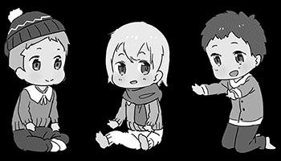
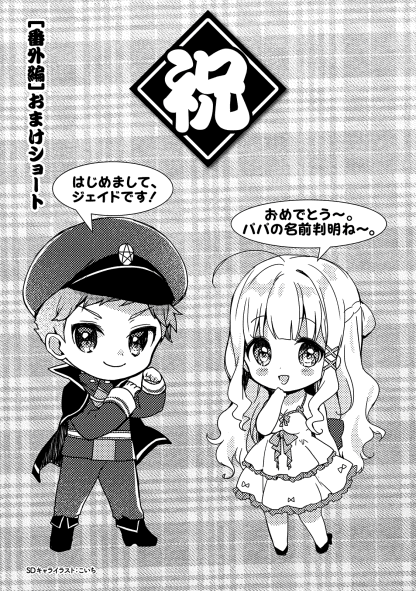
濃紺を基調に、金の縁取りを各所にあしらった細身のシルエット。両襟につけられた階級章と技能章が金属の光沢を放つ。逆五芒星 に戦乙女 の横顔を用いた国章を左胸と軍帽 の中央に誇らしげに掲げ、背中を覆う短いマントをひるがえし、舗装と整備の行き届いた街中の石畳を颯爽 と歩く。その姿を見た人々は尊敬と親愛の目差しを注ぎ、子供達は憧憬 に輝いた瞳と笑顔を彼らに向ける。
「あっ、親衛隊の人だー！」
「ああ、おはよう少年」
「うんっ！」
挨拶を返して頭をなでてやると、少年は生え替わりで抜けのある白い歯を見せてニカリと笑った。
「す、すみません。お仕事中のところ......」
少年の横では、若い母親がぺこぺこと頭を下げていた。彼はそんな母親にも優しく声をかける。
「ははは、元気な息子さんではないですか。将来が楽しみですよ」
「あっ、ありがとう、ございます......♪」
少年はやったーと声を上げて喜び、母親はぼうっとした眼 差しを向ける。
「少年、母さんのためにも頑張れよ。......では、失礼致します」
再び少年の頭に軽く手を置いて軽くなでてから、指先まで意識の届いた敬礼を見せ、それから親子の元から離れていった。
「今日も、平和だな......」
腰に差したサーベルの柄に手をやり、そっと呟く。
そして真正面にそびえる城の偉容 に目を細め、彼──ジェイド・オリオールは、今日も職場へと向かうのであった。
「──ぁぁぁあああああああ」
午後、地獄の底から湧き上がるようなうめき声を室内に響かせ、机の前で頭 を垂れる男がいた。朝の出勤前、城の堀の周りを散歩していた親子に素敵な微笑みを見せていたジェイドである。
直後に部屋のドアがノックされ、メガネをかけた青年──同じ軍服を着た部下が入ってきた。
「隊長、うめき声は程々 に。先日、夜勤の女性隊員から『隊長の声が廊下にまで響いてきて怖い』と苦情が届いておりますので」
「ぐあ......すまん」
「いえ。それとお茶です」
「ああ、トーマス。助かる......」
青年はトレーに乗せてきたカップのひとつをジェイドの前に置き、隣の席へ腰を下ろした。ジェイドはカップを手に取ると、よく冷えたお茶を一気に流し込む。
「あああぁぁ............子供達に会いたい」
「......」
トーマスは何も言わず、上司の机の上に散乱している書類に目をやる。席を離れていた間の戦果 三枚に対し、書き損じによる犠牲者は四枚。それをさり気なく集まると、回収用の箱に入れた。
「ああ、頭の中で文字と数字が踊っている......」
「お疲れ様です」
「お前はもう、終わったのか？」
「はい。後は本日の最終報告待ちです」
「さ、流石 だな......」
「いえ。昔から活字に慣れているだけですので」
「あああああ......」
頭を抱えるジェイドの横で、トーマスは自分のカップに口をつけながら、上司の作成した書類の確認を始める。
控えめに言っても決して格好の良い姿ではないが、トーマスはむしろ評価していた。親衛隊には、目覚ましい功績を立てた者が配属されることが少なくない。中でも彼はいきなりの隊長職という抜擢 にもかかわらず、短期間で職務内容から各種法令、観光客への対応方法に至るまでの知識を叩き込んで見せた。剣の腕も申し分なく、人柄においても基本的には真面目であるが気さくで話しやすく、部下の士気 を上手く引き出している。
それに──。
「ぐああああ......うごああああああ......」
「......」
そろそろ、か。
トーマスは茶を飲みながら壁の時計に目をやった。
「ゔ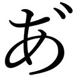 ーーーーーーーーッ！ 息子 と娘 に、会いたいぞおおおおおおおおおおおおーーーーーーーーーーッ!! 」
「ふぅ」
直前にカップを置き、両耳を塞いでいたトーマス。見ると、カップの茶色い水面にさざ波が立っていた。
......前回から、ちょうど半時 。隊長の雄叫びは驚くほど時間に正確だ。
「ちょっと顔見に行って良いか!? 」
「駄目 です」
「じゃああああ剣を振ってくる！ ちょっとだけ！ ちょっとだけなら良いよなッ!? 」
「ええどうぞ」
ちょうど訓練の時間ですから、と言う頃には既にドアの外。だが彼は気にしない。
平和すぎてだらけ気味な部下達には、実戦にて鍛 えに鍛え上げ、更に息子と娘への愛に飢えた隊長の剣は最高の発破 だ。必死で食らいつかねば、吹っ飛ばされて宙を舞うことになる。さぞ、良い訓練になるだろう。
......新兵時代を思い出し、一瞬だけ遠い目になった。
「ふむ」
目を通した書類には問題なし。残りは副隊長の代筆でも問題ないので、彼の帰りを待つこともないだろう。
「ああ」
とても面白 ──もとい。
とても使い勝手の──。
「......」
まあとにかく、良い上司が来てくれたものだ。
トーマスは手の上でペンを回し、得意な書類仕事に向かうのであった。
まだ、木の枝に茶色い葉がついていた日の夜。
軍服をハンガーに掛けた後、セフィアは寝室のソファーでくつろぐ夫に話しかけた。
「ねえあなた〜」
「ん？」
セフィアは氷だけになっていたグラスへ酒のお代わりを注ぎ、長い髪に気をつけながら小さなテーブルの向かい側に腰を下ろす。
「この年が明けたら、もうすぐマールちゃんも成人よね〜」
「......ああ、もうそうなるのか」
口をつけたグラスをテーブルに置いてひと息ついてから、ジェイドは応えた。氷が溶けて、からんと音を立てる。
「もう一年......か」
「ええ〜」
万感 の思いを込め、見つめ合う。本当にいろいろなことがあった。
十数年振りだったという、市内への魔獣の侵入。当時の夫が職責を超えて駆けつけたのは、セフィアがしばしば遊びに行っていた孤児院が遠くないところに位置していたのも理由のひとつだった。......口を割らせた際の彼の表情を思い出し、セフィアは小さく微笑む。
その後の二人は急転直下。重傷から快復した直後の彼にもたらされた知らせは、ふたつ。特にそのふたつ目は彼女の予想を大きく超え、二人は結婚だけでなく王都への引っ越しための準備にも奔走 することになる。
「あの時期は、あの事件の時以上に死ぬかと思ったよ......」
「うふふふふふ〜」
実感のこもった夫のため息に、セフィアは笑みをこぼす。
何から何まで初めてとなる新生活。とりわけ、身重 の身体で新しい家のことを任されることになったセフィアには、できるだけ身近な人の支えが必要だった。だが、多忙を極める夫にそれ以上の助けを借りるわけにはいかない。そこは彼女の意地であり、妻としての矜持 であった。
近所の人々も親切であったし、評判を聞いて訪れた病院でエリアナと出会えたのも本当に幸運だったが──。
ラリマールと、チャロア。
あの二人がついて来てくれなければ、今の穏やかで幸せな生活はなかったに違いない。
「だから......家族として、あの子達には贈り物をしたいのよ」
「......そうだな」
ジェイドは深々とうなずき、グラスの残りを飲み干す。氷は口に入るくらい小さくなっていた。
「俺も、お前の両親 から貰 ったしな」
「そうね〜」
孤児である彼女達とは事情は異なるが、セフィアとは歳の離れた幼なじみであった彼もまた、家族同然の付き合いから本当の家族になる際にオリオールの姓を貰い受けた。
「そうだな」
彼は優しい笑みを口元に浮かべ、もう一度首肯 した。
──後日。
セフィアからの申し出を聞いたマールは、驚きと共に嬉しさの涙をこぼすことになる。
初めてお手に取ってくださった方は、初めまして。Ｍｉｅ（読み方は「み〜」）と申します。
既にご存じの方には「いえーい♪」とピースサインを（二巻の意味も含む）。
まだ人生二冊目の出版ということで実感もまだイマイチなのですが、今回も真っ白に燃え尽きる勢いで執筆させていただきました。コンスタントに発売されている他の先生方に、改めて尊敬の念を覚えます。当然ではあるのですが、執筆に必要なエネルギーがＷｅｂとはケタ違いですね......。
さて、「一巻が終わっても一年さえ経ってない!? 」と評判のこの作品ですが（笑）、やっと一年が経つことになります。
ご存じない方にご説明申し上げますと、この作品は「小説を読もう」というサイトにて私が連載しております同名作品の書籍版、しかも完全書き下ろしとなっております。既に「なろう系」と呼ばれるくらい数多くの作品が書籍化され、中にはコミックやアニメになっている作品もありますので、サイト名をご存じの方は少なくないかもしれませんね。その「なろう版」で言いますと、この二巻でおおよそ二十九話までとなります。
ちなみに「なろう版」ですが......この後書きを書いている時点で、約六百五十話 ほどあります。
「......」
ええ。おっしゃりたいことはよーく分かります。私も同じ気持ちです。
ですが、この作品はその「超じっくり」が味となっておりますので、お散歩気分で、の〜んびりとお付き合いいただければ幸いです。
「なろう版」については、検索いただければすぐに見つかるかと思います。まったくのド素人から作家になってしまった私の成長の跡が見えて、そういった意味でもニヤニヤできるかもしません。
では、このあたりで謝辞の方を。......あとがきのお約束ではありますけど、実際に書いていると本当に申し上げたくなるのですよ。
まずはこの作品を発掘してくださった担当さんと、出版をサポートしてくださっている皆様に改めて感謝を。特に今回、発売延期させてしまって申し訳ございません（暴露謝罪）。イラストレーターのｄｄａｌさんとＳＤキャラを描いてくださっているこいちさんも、ありがとうございます。締め切り、タイトじゃなかったですか......？（汗） それと、流通や販売に携わってくださっている方々にも感謝の念が絶えません。前回も、売り場の写真がネットに出ているのを見て「わーい！」と喜びました。最後に、「なろう」で応援してくださっている皆様にも、この場で感謝を。向こうでも頑張ります。
......それではまた、次の巻でお会いできることを願っております。
二〇一六年 七月某日
全２巻合本版 そだ☆シス
2018年２月１日発行 ver.1.0
著 者 Mie（み〜）
発行所 TOブックス
〒150-0045 東京都渋谷区神泉町18-８
松濤ハイツ２Ｆ
03-6452-5766（編集）
0120-933-772（営業フリーダイヤル）
Ⓒ2018 Mie
※無断で複製・複写・データ配信などをすることは、かたくお断りいたします。
本電子書籍は下記にもとづいて制作しました
そだ☆シス 〜異世界で、かわいい妹そだてます〜
発行日 2016年４月１日 第１刷発行
そだ☆シス２ 〜妹ちゃんはトコロテンがお好き......？〜
発行日 2016年10月１日 第１刷発行
本作品の全部または一部を無断で複製、転載、配信、送信したり、ホームぺージ上に転載することを禁止します。また、本作品の内容を無断で改変、改ざん等を行うことも禁止します。
本作品購入時にご承諾いただいた規約により、有償・無償にかかわらず本作品を第三者に譲渡することはできません。
本作品を示すサムネイルなどのイメージ画像は、再ダウンロード時に予告なく変更される場合があります。
本作品は縦書きでレイアウトされています。
また、ご覧になるリーディングシステムにより、表示の差が認められることがあります。